Huấn Luyện Quần Vợt Thành Công (Coaching Tennis Successfully)
Bản dịch Việt ngữ này chỉ dùng cho mục đích học tập cá nhân, phi thương mại. Bản quyền tác phẩm gốc thuộc về tác giả và nhà xuất bản.
Lời Nói Đầu
Cuốn sách Huấn luyện quần vợt thành công này là cuốn sách duy nhất thuộc loại này. Đây là một cuốn cẩm nang toàn diện về huấn luyện, đặc biệt là trong các tình huống của đội. Tôi đã may mắn được tham gia các đội trung học, đại học và Davis Cup, và các huấn luyện viên của tôi biết nhiều về tài liệu này, nhưng ở mọi cấp độ, thông tin được trình bày ở đây sẽ giúp các huấn luyện viên này hoạt động hiệu quả hơn nữa. Kinh nghiệm tham gia một đội quần vợt, đặc biệt là ở cấp trung học cơ sở hoặc trung học phổ thông, không chỉ cực kỳ quan trọng trong việc chuẩn bị cho một người trẻ đương đầu với những thách thức trong thi đấu quần vợt mà còn cả những thách thức trong cuộc sống.
Tôi giới thiệu cuốn sách này cho bất kỳ huấn luyện viên nào muốn trở nên hiệu quả hơn và muốn có một số gợi ý về cách phát triển triết lý huấn luyện, lập kế hoạch cho mùa giải, rèn luyện các kỹ năng trên sân cũng như chuẩn bị và đánh giá trận đấu. Cuốn sách này có thể là một hướng dẫn rất thiết thực trong việc giúp bạn, với tư cách là một huấn luyện viên, trở thành người giỏi nhất có thể.
Nhiều giai thoại minh họa những điểm quan trọng được trình bày trong cuốn sách này là những ví dụ thực tế về cả những trải nghiệm tích cực lẫn những sai lầm mắc phải trong quá trình thực hiện. Cuốn sách được viết dưới dạng dễ hiểu và dễ áp dụng vào thực tế.
Ngoài ra, Huấn luyện quần vợt thành công cũng cập nhật về lĩnh vực khoa học và kỹ thuật thể thao, vì vậy bạn có thể liên hệ thông tin với trận đấu hôm nay và với những tay vợt xuất sắc.
Tôi chúc bạn gặp nhiều may mắn khi phát triển phong cách huấn luyện của riêng mình. Bạn có một vai trò quan trọng trong việc ảnh hưởng đến cuộc sống của những người trẻ mà bạn làm việc cùng.
Vận động viên quần vợt chuyên nghiệp tại Đại sảnh Danh vọng Stan Smith Phó Giám đốc, Bộ phận Phát triển Vận động viên USTA
Lời Cảm ơn
Việc tổ chức và chuẩn bị tài liệu trong cuốn sách này không thể hoàn thành nếu không có chuyên môn chuyên môn của nhân viên USTA Linda P. Jusiewicz. Paul Roetert và Lew Brewer cũng thoải mái chia sẻ kiến thức chuyên môn của họ về khoa học thể thao và phương pháp huấn luyện. Lynne Rolley, Nick Saviano, Tom Gullikson và Stan Smith đã giúp đỡ bằng cách đóng góp kiến thức huấn luyện tổng hợp của họ, hướng dẫn các phần về chiến lược và kỹ thuật. USTA tự hào ghi nhận sự đóng góp của từng thành viên trong đội ngũ nhân viên chuyên nghiệp của chúng tôi đối với sự phát triển của người chơi.
Giới Thiệu
Hiệp hội Quần vợt Hoa Kỳ sở hữu và điều hành Giải vô địch Hoa Kỳ Mở rộng, giúp mang lại doanh thu để quảng bá và phát triển môn thể thao quần vợt. Trong số hơn 500.000 thành viên của chúng tôi có một số lượng đáng kể các huấn luyện viên trung học, các tay vợt trong các đội của trường và phụ huynh của những tay vợt đó. Cuốn sách này được thiết kế để giúp tất cả những người tham gia thi đấu quần vợt học đường tận hưởng trải nghiệm và giúp tất cả người chơi trở thành người giỏi nhất có thể.
Tài liệu được trình bày ở đây phản ánh công nghệ huấn luyện quần vợt tiên tiến ngày nay của ban huấn luyện quốc gia USTA cũng như đội ngũ chuyên gia khoa học thể thao của chúng tôi. Chúng tôi đã kết hợp các ý tưởng với kinh nghiệm thực tế của các huấn luyện viên rất thành công, những người trong nhiều năm đã tạo ra các đội quần vợt trung học vô địch cho cả nam và nữ. Nếu bạn huấn luyện một đội quần vợt—có thể là đội Olympic, trường đại học hoặc trung học hoặc đội quần vợt trẻ em cấp cơ sở—bạn sẽ tìm thấy nhiều lời khuyên hữu ích trong các trang này.
Phần đầu tiên của cuốn sách đặt nền tảng cho phong cách và triết lý huấn luyện của bạn, đưa ra lời khuyên về các kỹ năng giao tiếp quan trọng giữa các cá nhân và giải quyết các vấn đề khó khăn trong việc thúc đẩy các tay vợt của bạn đồng thời phát triển sự dẻo dai về tinh thần của họ. Đây là những nguyên tắc cơ bản trong việc huấn luyện người trẻ, những nguyên tắc thực sự quyết định thành công lâu dài.
Phần II đề cập đến việc lập kế hoạch cho cả mùa giải tổng thể và từng buổi tập một cách có tổ chức và hiệu quả. Hướng dẫn từ phần này sẽ giúp bạn tiết kiệm thời gian và công sức để có thể sử dụng tốt hơn vào việc làm những gì bạn thực sự yêu thích—làm việc với những người trẻ tuổi.
Thông tin cơ bản về huấn luyện trên sân được trình bày trong phần thứ ba. Việc giảng dạy các kỹ năng và chiến lược quần vợt được kết hợp với nhau để người chơi có thể học nhanh hơn và sử dụng những gì họ học được trong trận đấu. Các khái niệm được nhấn mạnh bằng các bài tập thực tế trên sân được giải thích và hiển thị dưới dạng sơ đồ.
Việc chuẩn bị cho người chơi tham gia trận đấu cạnh tranh được đề cập trong Phần IV, bao gồm các mẹo trinh sát đối thủ và tiến hành luyện tập trước trận đấu. Vai trò của huấn luyện viên trong các trận đấu được thảo luận cùng với những lời khuyên quan trọng để giúp người chơi giải quyết thắng thua sau một trận đấu.
Phần kết luận đề cập đến vai trò của huấn luyện viên trong việc đánh giá các tay vợt và chương trình. Cách tiếp cận có trật tự bao gồm việc đặt những câu hỏi phù hợp; đánh giá những cải tiến cần thiết về nhân sự, cơ sở vật chất hoặc thiết bị; và xây dựng kế hoạch cho sự thành công trong tương lai.
Tất cả chúng tôi, những người đã đóng góp cho cuốn sách này đều ghi nhận hàng nghìn huấn luyện viên quần vợt tận tâm, giống như bạn, trên khắp đất nước của chúng tôi, những người luôn tận tâm giúp đỡ những người trẻ tuổi yêu thích Quần vợt—t Môn thể thao để đời. Chúng tôi hy vọng những đề xuất của chúng tôi sẽ giúp ích cho bạn giống như những gì chúng tôi đã học được từ các huấn luyện viên và đặc biệt là các tay vợt của chúng tôi.
Nền Tảng Huấn Luyện
Xây Dựng Triết Lý Huấn Luyện Quần Vợt
Tôi nhớ chuyến lái xe cuối mùa thu năm 1969 như thể mới xảy ra ngày hôm qua. Tôi đang đi một mình trên những con đường phía sau, cân nhắc câu trả lời của mình cho câu hỏi do giám đốc thể thao trường trung học của chúng tôi đặt ra vào đầu ngày. Cụ thể, anh ấy đã hỏi tôi: “Anh có cân nhắc việc huấn luyện quần vợt nam và nữ vào mùa xuân không?”
Là một giáo viên năm thứ hai mới làm quen với sự khắc nghiệt của việc giảng dạy trên lớp, tôi không thấy ý nghĩ bổ sung trách nhiệm huấn luyện vào cuối ngày là quá hấp dẫn. Trước khi đưa ra câu trả lời cho giám đốc thể thao của chúng tôi, tôi cần chút thời gian một mình để xem xét những mặt tích cực và tiêu cực của việc trở thành huấn luyện viên quần vợt ở trường trung học.
Mặt tích cực là ba yếu tố quan trọng: Thứ nhất, tôi yêu thể thao và huấn luyện ở Oskele)toum USTA Tennis chung; tất cả những anh hùng thời trẻ của tôi đều là vận động viên hoặc huấn luyện viên. Thứ hai, tôi thích làm việc với học sinh trung học vì tôi thích tương tác với thanh thiếu niên và giúp họ phát triển. Thứ ba, tôi có nền tảng thể thao tổng quát, bao gồm vài năm chơi bóng đá và bóng rổ ở trường trung học; khi nói đến quần vợt, tôi được coi là chiến binh cuối tuần.
Về mặt tiêu cực, có ba lý do mạnh mẽ không kém khiến tôi lo sợ mình có thể không trở thành một huấn luyện viên thành công: Thứ nhất, tôi không có kinh nghiệm thi đấu ở trường trung học hoặc đại học. Thứ hai, tôi không được đào tạo để dạy quần vợt. Và thứ ba, lúc đó tôi còn trẻ và bị đe dọa bởi ý nghĩ trở thành huấn luyện viên trưởng của bất kỳ môn thể thao nào.
Sau khi cân nhắc những ưu và nhược điểm, cuối cùng tôi đã bỏ qua sự thận trọng và chấp nhận lời đề nghị trở thành một huấn luyện viên quần vợt. Thời gian đã chứng minh rằng tôi đã quyết định đúng đắn.
Trong 25 năm huấn luyện, tôi đã tận hưởng—và tiếp tục tận hưởng—những trải nghiệm phong phú, bổ ích mà tôi không tin rằng mình có được ở bất kỳ ngành nghề nào khác. Tôi có vinh dự được chứng kiến cả ba đứa con trai của mình trưởng thành trên sân khi tôi huấn luyện chúng. Tôi đã trải qua những chiến thắng và thất bại, những mối quan hệ và sự ganh đua, việc dạy và học. Và trên hết, tôi rất vui khi thấy người chơi tiến bộ từ chương trình của chúng tôi để có cuộc sống rất thành công. Đây là những khoản đền bù mà một huấn luyện viên trân trọng hơn bất kỳ sự cân nhắc về tiền tệ nào.
Xây dựng nền tảng huấn luyện Phát triển triết lý huấn luyện, giống như học tập, là một quá trình thiết yếu và liên tục. Nó bắt đầu từ ngày đầu tiên bạn quyết định trở thành huấn luyện viên và chỉ kết thúc nếu bạn không tiếp thu những ý tưởng mới và trải nghiệm mới. Là huấn luyện viên, chúng tôi không bao giờ có tất cả các câu trả lời. Hãy sẵn sàng thử các kỹ thuật huấn luyện mới!
Huấn luyện viên quần vợt so với Tennis Pro Hầu hết các huấn luyện viên quần vợt ở trường trung học đều phải học cách làm việc hòa hợp với các chuyên gia giảng dạy quần vợt ở địa phương. Chuyên gia giảng dạy của người chơi có thể là nguồn lực tốt nhất để phát triển khả năng tạo cú đánh của từng cá nhân. Tuy nhiên, hầu hết các chuyên gia giảng dạy đều làm việc với từng người chơi trong các buổi học riêng. Là huấn luyện viên quần vợt ở trường trung học, bạn không có được điều xa xỉ này - bạn có thể có 8 đến 12 người chơi phải theo dõi cùng một lúc. Ngoài ra, trong một mùa quần vợt điển hình ở trường trung học, đơn giản là không có thời gian để tập trung vào việc phát triển cú đánh. Với tư cách là huấn luyện viên trung học, bạn nên nhấn mạnh đến chiến thuật và chiến lược trong khi tập hợp các cá nhân thành một đội. Nhấn mạnh thái độ “đồng đội là trên hết” mà tất cả các đội thể thao thành công đều thể hiện. Ngay cả một huấn luyện viên quần vợt mới vào nghề có kiến thức nền tảng về thể thao đồng đội cũng có thể làm việc hài hòa với một chuyên gia giảng dạy. Bạn có thể chọn để chuyên gia phát triển các cú đánh của người chơi khi bạn giới thiệu các chiến lược hiệu quả và khái niệm chơi quần vợt trong môi trường đồng đội.
Huấn Luyện Viên Không Dạy Trực Tiếp
Nhiều huấn luyện viên quần vợt ở trường trung học không phải là thành viên của khoa. Một số đang giảng dạy chuyên nghiệp; những người khác là những người đam mê quần vợt quan tâm được tuyển dụng từ cộng đồng để huấn luyện quần vợt. Bất kể trình độ huấn luyện quần vợt của bạn như thế nào, hãy nhớ kết hợp “bức tranh toàn cảnh” vào quá trình huấn luyện của bạn. Để làm được điều này, bạn cần phải làm quen với ban giám hiệu và nhân viên của trường trung học mà bạn đại diện. Đội quần vợt của bạn là một phần mở rộng của toàn bộ chương trình thể thao của trường trung học, vì vậy bạn nên thiết lập triết lý huấn luyện phù hợp với triết lý huấn luyện của các môn thể thao khác ở trường. Giới thiệu bản thân với các huấn luyện viên đồng nghiệp tại trường vì bạn có thể có chung một số vận động viên giống nhau. Tham dự các hoạt động thể thao để bạn trở thành thành viên nổi bật của ban huấn luyện.
Hãy Hăm Học Hỏi
Tất cả các huấn luyện viên thành công đều vay mượn một phần triết lý huấn luyện của họ từ các huấn luyện viên khác. Môn thể thao hoặc mức độ chơi không thực sự quan trọng. Huấn luyện viên bóng đá thành công của trường chúng tôi, Bill Shields, đọc sách của các huấn luyện viên quần vợt và huấn luyện viên của nhiều môn thể thao khác. Tương tự, tôi đã đọc sách của các huấn luyện viên bóng đá và huấn luyện viên của các môn thể thao khác và áp dụng một số kỹ thuật thành công của họ vào triết lý huấn luyện của mình. Bạn thấy đấy, sau khi loại bỏ X và Os, chúng tôi thực sự đang làm điều tương tự: dạy các tay vợt những kỹ năng sử dụng trong suốt cuộc đời khi họ thi đấu và cố gắng cải thiện bản thân. Vì vậy, việc chúng ta học hỏi lẫn nhau về cách thành công là điều tự nhiên.
Tìm kiếm các khóa học, phòng khám, ấn phẩm và video. Hiệp hội Quần vợt Hoa Kỳ và hai tổ chức giáo viên quần vợt chuyên nghiệp được công nhận (Hiệp hội Quần vợt Chuyên nghiệp Hoa Kỳ và Cơ quan Đăng ký Quần vợt Chuyên nghiệp Hoa Kỳ) cung cấp các phòng khám quanh năm. Mỗi phòng khám mà tôi tham dự đều cung cấp cho tôi những thông tin mà tôi có thể sử dụng trên sân. Tổ chức huấn luyện trung học ở tiểu bang của bạn có thể điều hành các phòng khám cụ thể cho từng môn thể thao. Tìm hiểu khi nào họ được cung cấp và có mặt ở đó! Với tư cách là chủ tịch quần vợt của hiệp hội huấn luyện viên Florida (FACA), tôi đã tổ chức các phòng khám trên khắp tiểu bang của chúng ta trong 5 năm qua. Ngày càng có nhiều huấn luyện viên nhận ra rằng không có nơi nào tốt hơn những phòng khám này để nghe và chia sẻ ý kiến về nghề nghiệp của chúng tôi.
Các tạp chí, sách hướng dẫn và video xuất sắc về quần vợt, huấn luyện và luyện tập được phổ biến rộng rãi. Việc bạn đang đọc cuốn sách này cho thấy bạn có đủ sự quan tâm. Cố gắng phát triển (hoặc mở rộng) thư viện huấn luyện quần vợt của riêng bạn. Nếu bạn là người học “thực hành”, hãy xin phép các huấn luyện viên khác để tham gia buổi tập của họ (hầu hết các huấn luyện viên ở trường đại học hoặc trung học sẽ coi đây là một lời khen). Không có nơi nào tốt hơn để tìm hiểu các bài tập và mẹo huấn luyện chung. Ngoài ra, hãy sử dụng chuyên gia giảng dạy tại địa phương của bạn làm nguồn lực giúp bạn và người chơi của bạn có thêm kỹ năng chơi.
Hãy tận dụng tất cả những cơ hội học tập này—ngay cả khi bạn là một cựu chiến binh lớn tuổi như tôi. Càng biết nhiều, bạn càng có khả năng cập nhật và phát triển triết lý huấn luyện tốt nhất có thể - nền tảng cho mọi huấn luyện viên thành công.
Học từ những huấn luyện viên mà bạn tôn trọng Trong lịch sử 20 năm của mình, Trường Trung học Phi hành gia ở Titusville, Florida, đã đào tạo ra những vận động viên được công nhận trên toàn quốc như NFL AllPros Wilber Marshall và Cris Collinsworth. Những huấn luyện viên xuất sắc của những vận động viên này đã dạy cho tôi những bài học quý giá.
Cựu giám đốc thể thao và huấn luyện viên điền kinh của chúng tôi, Nick Gailey, người hiện đang ở Đại sảnh Danh vọng Huấn luyện viên Florida, đã cho tôi thấy tầm quan trọng của việc giữ cho các vận động viên tập trung và nỗ lực hướng tới mục tiêu. Giám đốc thể thao hiện tại của chúng tôi và hiện là chủ tịch Hiệp hội Huấn luyện viên Thể thao Florida, Jay Donnelly (người từng là huấn luyện viên bóng đá của Phi hành gia trong 15 năm đầu tiên), đã nói rõ với tôi rằng cần có kỹ năng tổ chức tốt. Quan trọng nhất, Norman Holmes, huyền thoại dạy quần vợt ở bờ biển phía đông miền Trung Florida, đã dạy tôi nghệ thuật giảng dạy và huấn luyện kỹ năng chơi quần vợt. Thông qua các buổi học của Norm, tôi đã học được các nguyên tắc cơ bản về huấn luyện và quản lý cú đánh. Tôi đã tiến bộ từ một người chơi cuối tuần thành một người hướng dẫn và huấn luyện viên mới vào nghề, mong muốn áp dụng kiến thức mới của mình. Nhưng tôi đã rất ngạc nhiên khi cố gắng áp dụng những bài học đã học được từ Norm. Những gì hiệu quả với anh ấy lại không hiệu quả với tôi, mặc dù tôi đã cố gắng sao chép mọi thứ mà tôi đã thấy anh ấy làm rất thành công.
) HỌC TỪ MỘT CHUYÊN GIA Là một huấn luyện viên tân binh, tôi đưa các tay vợt của mình đi du lịch kéo dài hàng giờ mỗi tuần. Điểm đến của chúng tôi? Sân tennis/lớp học nơi Norman Holmes thực hiện phép thuật của mình. Norman đã dạy cho các tay vợt của tôi những bài học riêng trong khi tôi đứng bên lưới và thấm nhuần tất cả. Tôi ngạc nhiên trước kỹ thuật của Norm và việc truyền tải những thông điệp quan trọng, hết cú đánh này đến cú đánh khác. Các tay vợt của tôi đã học được rất nhiều điều—nhưng tôi còn học được nhiều hơn thế.
Điều tôi chưa nắm bắt được là một thực tế đơn giản nhưng quan trọng về huấn luyện: Mặc dù bạn có thể (và nên) mượn ý tưởng và phương pháp, nhưng việc truyền tải những ý tưởng và phương pháp đó phải là của riêng bạn. Nỗ lực sao chép tất cả kiến thức huấn luyện của Norm đã không hiệu quả với tôi vì cách truyền đạt của anh ấy không phù hợp với phong cách cá nhân của tôi. Vì vậy, bài học là: Hãy học những gì bạn có thể từ các mô hình huấn luyện của mình, nhưng đừng cố gắng trở thành họ. Thay vào đó hãy kết hợp những gì bạn học được vào phong cách huấn luyện cá nhân và cách thực hiện của bạn.
Phong Cách Huấn Luyện Quần Vợt
Các tình huống khác nhau trên sân tập và trong khi thi đấu đòi hỏi huấn luyện viên phải phản ứng với các tay vợt theo những cách khác nhau. Đôi khi cần có một bàn tay chắc chắn, trong khi những lúc khác, một cái vỗ nhẹ vào lưng trấn an sẽ giúp bạn hoàn thành công việc. Trên hết, giữ cho đường dây liên lạc của bạn luôn cởi mở với người chơi là chìa khóa thành công.
Trong những năm hình thành sự nghiệp huấn luyện của mình, tôi đã cố gắng thiên về cách tiếp cận độc đoán hơn. Lời nói của tôi là luật, hoặc tôi nghĩ vậy. Nhìn lại thời điểm này trong sự nghiệp huấn luyện của mình, giờ đây tôi nhận ra rằng cách tiếp cận cứng rắn của mình đã cho phép tôi che giấu sự thiếu kinh nghiệm huấn luyện của mình. Nếu người chơi của tôi không được phép đặt câu hỏi cho tôi hoặc có bất kỳ ý kiến đóng góp nào, làm sao tôi có thể sai được? Chà, tôi đã sai - rất nhiều. Và có lẽ sai lầm lớn nhất của tôi là ngay từ đầu đã sử dụng phong cách huấn luyện độc đoán này. Tôi và các tay vợt của tôi cảm thấy điều đó không ổn.
Thua Trận
Trong năm thứ hai làm huấn luyện viên, tôi đã cố gắng chỉ ra tầm quan trọng của quần vợt đối với các tay vợt của mình.
Hầu hết những người chơi thiếu kinh nghiệm của tôi đều lần đầu tiên thử chơi quần vợt. Một trong những nguyên tắc cơ bản của tôi lúc đó là không bao giờ đi tập muộn vì bất kỳ lý do gì. Một ngày nọ, tôi tập luyện được mười phút, việc đến muộn khiến tôi trút giận.
Không cần hỏi người chơi tại sao anh ta đến muộn, tôi “vào mặt anh ta”, mục đích của tôi là lấy anh ta làm gương. Phản ứng của anh ta là bỏ đi, lên xe và rời đi. Sau đó! biết rằng anh ấy đã bịa ra một bài kiểm tra, và ngay cả sau khi tôi xin lỗi vì sự thiển cận của mình, anh ấy vẫn không bao giờ quay lại đội. Thái độ độc đoán của tôi đã khiến tôi mất đi một thành viên tiềm năng trong nhóm. Tay vợt được đề cập là một sinh viên năm nhất, sau đó đã tham gia điền kinh và có một sự nghiệp tuyệt vời với tư cách là một vận động viên điền kinh.
Các tay vợt trung học coi quần vợt như một hoạt động ngoại khóa và họ mong muốn có được niềm vui. Khi họ được huấn luyện bởi một người chủ yếu sử dụng phong cách độc đoán, họ thường sẽ không thấy vui vẻ. Và rất có thể, huấn luyện viên sẽ phải bớt độc đoán hơn một chút hoặc dành nhiều thời gian để thuyết phục các tay vợt ở lại đội.
Đối lập với phong cách độc đoán này là cách tiếp cận coi người chơi như bạn bè. Hãy quên kỷ luật đi - hãy để mọi người làm việc riêng của mình. Thật không may, tôi thấy cách tiếp cận này quá thường xuyên trong quá trình huấn luyện quần vợt ở trường trung học. Phong cách huấn luyện dễ dãi này có thể dẫn đến thảm họa. Các tay vợt có thể không muốn một huấn luyện viên biết tất cả, nhưng họ muốn và cần sự chỉ đạo. Một huấn luyện viên ngồi yên nhìn kỷ luật và học tập của các tay vợt bị ảnh hưởng chỉ đơn giản là không làm được việc. Thuật ngữ “người đi kèm quần vợt” xuất hiện trong đầu chúng ta và khuôn mẫu như vậy về một huấn luyện viên quần vợt ở trường trung học khiến tất cả chúng ta tổn thương.
Trong nhiều tình huống và với hầu hết các tay vợt, cách tiếp cận phù hợp nhất với tôi và nhiều huấn luyện viên khác là phong cách hợp tác. Đây không phải là sự kết hợp của hai phong cách còn lại mà thực chất là phong cách thứ ba.
Huấn luyện theo phong cách hợp tác cho phép kỷ luật rất chặt chẽ, nhưng chỉ khi kỷ luật là cần thiết. Khi kỷ luật được áp dụng, các tay vợt sẽ hiểu tại sao. Cách tiếp cận hợp tác cho phép bạn đến đủ gần với người chơi của mình để họ cảm thấy có thể nói chuyện với bạn về hầu hết mọi thứ. Và khi họ biết bạn sẽ lắng nghe những gợi ý của họ, họ sẽ dễ tiếp thu ý kiến của bạn hơn nhiều.
Sự Trao Đổi Hợp Tác
Philippe Signore, một sinh viên trao đổi đến từ Pháp, đã gia nhập chương trình quần vợt của chúng tôi vào năm 1984.
Philippe tuy nhỏ con nhưng có tinh thần cạnh tranh khiến mọi người trong chương trình của chúng tôi quý mến anh ấy.
Với tư cách là tay vợt số một của chúng tôi, Philippe đã dẫn dắt chúng tôi liên tiếp giành được các danh hiệu cấp quận. Sau khi tốt nghiệp, Philippe đã ký một học bổng quần vợt tại Đại học Tennessee ở Chattanooga, nơi anh đã nỗ lực vươn lên vị trí số một trong năm cuối cấp, giành chức vô địch cá nhân và đồng đội tại Southern Conference cho UTC trong quá trình này.
Philippe hiện đang lấy bằng tiến sĩ vật lý tại Đại học Florida. Đây là những hồi ức của anh ấy về 2 năm anh ấy tham gia chương trình quần vợt của chúng tôi: Huấn luyện viên là ông chủ, nhưng anh ấy cũng là một người bạn trong và ngoài sân đấu. Tôi nhớ lại sự mất mát duy nhất trong năm cuối cấp của mình. Đó là trên sân nhà trước một đối thủ trẻ hơn nhiều mà tôi cảm thấy lẽ ra mình phải đánh bại. Tự nhiên tôi vô cùng khó chịu với bản thân vì đã thua cuộc. Những lời duy nhất mà huấn luyện viên nói với tôi trong suốt thời gian còn lại trong ngày là về cách đánh bại đội đánh đôi của họ. Anh ấy chưa bao giờ đề cập đến màn trình diễn của tôi, đối thủ hay bất cứ điều gì liên quan đến trận đấu đơn của tôi. Chúng tôi đã giành chiến thắng trong trận đấu đôi của mình, nhưng tôi về nhà vẫn rất khó chịu và cuối cùng đi ngủ.
Mãi đến ngày hôm sau huấn luyện viên mới nêu ra chủ đề về thất bại của tôi. Tôi nhớ mình đã rất tập trung vào lời nói của anh ấy. Anh ấy nói bằng những thuật ngữ đơn giản, tổng cộng có năm câu. Anh ấy kết luận bằng cách cho tôi hai chiến thuật để sử dụng vào lần tiếp theo khi tôi gặp đối thủ đó. Tôi giữ hai lời khuyên này giống như tôi đã giữ một chiếc đồng hồ đắt tiền mới toanh.
Tôi lại đấu với anh chàng ở trận bán kết giải cấp huyện. Áp dụng chiến lược của huấn luyện viên, tôi đã thắng trận. Đó hóa ra lại là thời điểm quyết định chức vô địch từ quận sau của đội ta.
Philippe đến sau khi tôi đã huấn luyện được 15 năm. Khi bắt đầu sự nghiệp huấn luyện của mình, tôi đã không thể để anh ấy yên sau một trận thua quá nặng nề đối với anh ấy và đội của chúng tôi. Ngay khi anh ấy rời sân, có lẽ tôi sẽ trừng phạt anh ấy vì đã chơi một trận đấu ngu ngốc như vậy. Luật của trường trung học Florida khi đó không cho phép tôi nói chuyện với Philippe trong trận đấu để giải quyết vấn đề cho anh ấy. Nhưng vào thời điểm đó trong sự nghiệp của mình, tôi biết rằng điều tốt nhất tôi có thể làm cho đội (thứ nhất) và Philippe (thứ hai) là tập trung vào việc giúp anh ấy sẵn sàng chơi đôi. Và cách làm đó có lẽ đã giúp đội giành chiến thắng ngày hôm đó.
Thứ Tự Ưu Tiên Khi Huấn Luyện
Ưu tiên hàng đầu của quần vợt là biến nó thành một hoạt động ngoại khóa thú vị cho người chơi như mong muốn. Giới trẻ bây giờ có nhiều cách để sử dụng thời gian hơn bao giờ hết. Chương trình của bạn sẽ chỉ có thể cạnh tranh để giành thời gian và sự quan tâm của họ nếu họ cho rằng việc trở thành người chơi trong chương trình của bạn là quan trọng và thú vị.
Trợ lý huấn luyện viên, phụ huynh và những người khác có ảnh hưởng trực tiếp đến tay vợt của bạn trong suốt mùa giải phải được đào tạo về các ưu tiên huấn luyện của bạn. Nếu các tay vợt nhận được những thông điệp trái chiều từ những người mà họ tôn trọng khi họ không ở bên bạn, thì các ưu tiên huấn luyện của bạn có thể sẽ mất tác dụng. Tôi giới thiệu triết lý huấn luyện của mình với phụ huynh tại cuộc họp dành cho phụ huynh và tay vợt vào đầu mỗi mùa giải. Trong bữa tối potluck này, tôi giới thiệu bản thân với từng phụ huynh của những người chơi mới của chúng tôi. Tiếp theo phần này là phần giới thiệu về các thành viên trong nhóm, tóm tắt ngắn gọn về những gì chúng tôi hy vọng đạt được trong mùa quần vợt và giải thích về những cách chúng tôi sẽ cố gắng đạt được mục tiêu của mình. Mọi phụ huynh và tay vợt đều biết đến tôi và làm quen với các ưu tiên huấn luyện của tôi. Chúng tôi tiếp nối cuộc họp này bằng cách đưa cho phụ huynh một bản sao sổ tay tay vợt, trong đó có các mục tiêu, lịch trình và những ngày quan trọng của đội. Bữa tối trao giải cuối mùa kết thúc mùa giải và thông báo cho mọi người những gì chúng tôi sẽ làm trong mùa giải.
Trợ lý huấn luyện viên thường là những cựu tay vợt quen thuộc với triết lý của chương trình. Tuy nhiên, đôi khi trợ lý hoặc phụ huynh sẽ làm suy yếu triết lý huấn luyện của bạn với một tay vợt. Hãy nói chuyện với người này ngay lập tức và khéo léo đi đến thấu hiểu. Khi tất cả những người có ảnh hưởng đến tay vợt của bạn đều có cùng bước sóng huấn luyện, tay vợt của bạn sẽ thịnh vượng và phát triển.
Làm Cho Quần Vợt Thú Vị
Các vận động viên ngày nay vẫn muốn hầu hết những điều họ luôn mong muốn: sự định hướng, kỷ luật, cơ hội thi đấu và cơ hội thi đấu. Quần vợt có thể cung cấp cho giới trẻ tất cả những điều này và hơn thế nữa. Đồng thời, quần vợt, giống như các môn thể thao khác, có thể đốt cháy các tay vợt trẻ bằng cách xếp họ vào các chương trình mang tính cạnh tranh, có cấu trúc chặt chẽ quá sớm. Do đó, hãy cố gắng cung cấp cấu trúc mà không gây ngột ngạt cho người chơi của bạn. Cung cấp cho họ những chỉ dẫn và hướng dẫn phù hợp nhưng cũng cho phép họ có tiếng nói trong các hoạt động hàng ngày. Tôi bắt đầu mỗi năm với tuyên bố tương tự với các tay vợt của mình: "Đây là một hoạt động tự nguyện. Nó không bắt buộc, giống như trường học. Đây là đội của bạn và đội sẽ đi theo bất kỳ hướng nào bạn cảm thấy phù hợp." Tuyên bố này thiết lập giai điệu. Đường dây liên lạc luôn rộng mở và tôi sẵn sàng tiếp thu những ý tưởng mới từ người chơi. Có lẽ bạn không cảm thấy đủ tự tin để áp dụng phương pháp huấn luyện mang tính hợp tác. Tôi hiểu điều đó. Tôi cũng không dễ dàng nới lỏng dây cương. Nhưng tôi khuyến khích bạn thử. Bạn sẽ ngạc nhiên về khả năng các tay vợt của bạn đưa ra những quyết định đúng đắn và họ cảm thấy tốt hơn như thế nào khi có thể giúp kiểm soát hướng đi của đội.
BÀI HỌC KINH NGHIỆM
Mùa thu năm ngoái, tôi tình cờ gặp một trong những tay vợt cũ của tôi, người vừa trở về từ trường đại học để tham dự một trong những trận đấu bóng đá của trường chúng tôi. Jon Sloan đã chơi cho tôi từ năm 1985 đến năm 1988, góp mặt trong bốn đội vô địch cấp quận liên tiếp. Anh ấy đủ giỏi để chơi quần vợt ở trường đại học nhưng lại chọn không chơi.
Tôi hỏi Jon dạo gần đây anh ấy có chơi quần vợt không. Anh ấy nói không, không cạnh tranh, chỉ để cho vui. Sau đó anh ấy suy nghĩ một lúc và nói, “Huấn luyện viên, hồi trung học quần vợt có vẻ rất quan trọng.”
Tôi hỏi Jon tại sao quần vợt thi đấu bây giờ không còn quan trọng với anh ấy nữa. Anh ấy trả lời rằng việc học ở trường cho phép anh ấy chỉ có vài giờ một tuần để chơi quần vợt. Anh ấy nói, Huấn luyện viên, mặc dù tôi không phải là học sinh giỏi nhất ở trường trung học, nhưng hiện tại tôi đang học rất tốt với điểm số của mình và đó là điều quan trọng nhất đối với tôi. Nhưng một khi tôi nhận được bằng cấp và có nhiều thời gian hơn, tôi sẽ trở lại sân đấu thường xuyên hơn.
Jon Sloan đại diện cho nội dung của môn điền kinh ở trường trung học. Chương trình quần vợt của chúng tôi đã mang đến cho anh ấy cơ hội trải nghiệm niềm vui thi đấu vào thời điểm trong cuộc đời anh ấy mà dường như không có gì quan trọng hơn. Giờ đây anh ấy có thể chơi quần vợt để giải trí và áp dụng kinh nghiệm thi đấu quần vợt của mình trên một sân đấu lớn hơn nhiều – sân đấu của cuộc đời.
Jon Sloan là một ví dụ về những gì có thể xảy ra khi chúng tôi giúp người chơi học cách đưa ra quyết định đúng đắn của riêng họ. Họ có thể áp dụng và phát triển những kỹ năng ra quyết định đó trong suốt cuộc đời của mình. Với tư cách là huấn luyện viên, chúng tôi là người hỗ trợ. Người chơi là những người tham gia. Đó là trò chơi của họ; để họ chơi nó.
Chiến Thắng Với Phát Triển
Khi huấn luyện viên và các tay vợt tin rằng “chỉ cần chúng tôi thắng thì mọi chuyện đều ổn,” sự phát triển của đội bị ảnh hưởng. Sau chiến thắng, sai sót thường không được phát hiện hoặc loại bỏ. Sau một trận thua, từng chi tiết nhỏ về lối chơi kém cỏi đều bị mổ xẻ và chỉ trích. Kết quả là người chơi phát triển cảm giác an toàn sai lầm sau chiến thắng. Ngược lại, sau một trận thua, sự tự tin của các tay vợt lại giảm sút nghiêm trọng.
Thay vì tập trung vào việc giành chiến thắng, hãy nhấn mạnh với người chơi của bạn tầm quan trọng của nỗ lực giành chiến thắng. Khuyến khích họ cố gắng khắc phục điểm yếu của mình trước những đối thủ mà họ đang đánh bại một cách khéo léo. Sau khi thua, hãy khen ngợi nỗ lực của họ, ngay cả khi họ bị áp đảo nặng nề. Mỗi bước đi đúng hướng đều khiến họ trở thành những người chơi và con người hoàn thiện hơn.
Điểm mấu chốt của triết lý huấn luyện Huấn luyện quần vợt không phải là một nỗ lực tĩnh tại. Những đứa trẻ mà chúng tôi làm việc cùng thay đổi theo từng năm. Trò chơi thay đổi theo xu hướng và công nghệ mới. Việc ứng dụng khoa học thể thao và phương pháp huấn luyện không ngừng được sửa đổi, nâng cấp.
Trong số tất cả những động lực này, một huấn luyện viên quần vợt phải thiết lập một bộ các nguyên tắc huấn luyện quan trọng nhất không thay đổi theo làn gió của sự thay đổi. Những nguyên lý này cung cấp nguồn gốc của sự xuất sắc nhất quán và liên tục— dấu hiệu của mọi chương trình quần vợt thành công: • Tìm kiếm kết quả chứ không phải lời bào chữa.
- Tập trung vào hiệu suất chứ không phải chiến thắng (phản ứng với thử thách).
- Cải thiện dần dần thông qua luyện tập chăm chỉ và vui vẻ.
- Tôn trọng đối thủ.
Tôi nhấn mạnh những nguyên tắc này với các tay vợt của mình theo cách nào đó mỗi ngày khi luyện tập. Nó tạo nên sự khác biệt.
Kết Quả, Không Phải Bào Chữa
Quần vợt đã trở thành một trò chơi của những lời bào chữa: điều kiện sân kém, đối thủ may mắn, thời tiết tệ hại, một ngày “nghỉ phép”. Người chơi dường như thường nghĩ rằng những lời bào chữa này là lý do chính đáng khiến họ thi đấu kém. Nhưng tôi chưa bao giờ thấy một người thành công lại đưa ra lời bào chữa, cho dù họ tham gia thể thao, kinh doanh hay bất kỳ mục tiêu đáng giá nào khác. Với tư cách là một huấn luyện viên, tôi cảm thấy có nghĩa vụ với bản thân, nghề nghiệp, trường học và các tay vợt của mình trong việc chuẩn bị cho các vận động viên của mình thành công. Vì vậy, ngay từ ngày đầu tiên, chúng tôi chỉ tập trung vào những thứ mà chúng tôi có thể kiểm soát— điều kiện thể chất, thái độ, kỹ năng sản xuất tinh thần và cú đánh, chuẩn bị cho trận đấu và sẵn sàng giải quyết bất kỳ vấn đề nào phát sinh trong trận đấu.
Nếu một đối thủ tình cờ có ngày thi đấu trong sự nghiệp với một trong những tay vợt của tôi, tất cả những gì tôi mong đợi - và luôn mong đợi - là tay vợt của tôi không giảm mức độ nỗ lực hoặc phong độ vì chán nản. Nếu điều đó vẫn chưa đủ vào ngày đặc biệt này, anh ta có thể ngẩng cao đầu vào lưới, bắt tay đối thủ và chúc mừng anh ta đã chơi tốt hơn vào ngày hôm đó. Không phàn nàn, không bào chữa. Chúng tôi chỉ đơn giản là bắt đầu chuẩn bị cho thử thách tiếp theo.
Ứng Phó Với Thử Thách
Câu hỏi đầu tiên mà người chơi thường được hỏi sau mỗi trận đấu là gì? Bạn biết câu trả lời: "Bạn có thắng không?" Chúng ta thường xuyên tập trung vào kết quả của trận đấu. Với những tay vợt nghiệp dư, đặc biệt là những tay vợt trẻ đang phát triển, thay vào đó chúng ta nên tập trung vào phong độ. Sau trận đấu hãy hỏi, “Bạn chơi như thế nào?” Loại câu hỏi này khiến người chơi suy nghĩ về điều quan trọng nhất: Bản thân không phải là chiến thắng mà là nỗ lực để tạo ra nỗ lực chiến thắng.
Tất nhiên là chúng tôi muốn tay vợt của mình giành chiến thắng. Nhưng chúng tôi biết rằng họ sẽ đạt được nhiều thành tích hơn nữa—và có thời gian làm việc đó tốt hơn—nếu kết quả các trận đấu chỉ là thứ yếu so với nỗ lực, thái độ và hiệu suất của họ. Chuyển hướng suy nghĩ của người chơi đến các mục tiêu hiệu suất có thể đạt được. Trận đấu có thể thua với tỷ số 6-1,6-1, nhưng nếu mục tiêu thi đấu là ghi điểm lâu hơn mà không mắc lỗi nhanh chóng so với đường cuối sân và điều này đã hoàn thành thì tay vợt của bạn đã thành công, bất kể kết quả trận đấu như thế nào.
Chúng tôi yêu cầu người chơi tập trung vào các mục tiêu hiệu suất thực tế trong trận đấu cũng như cố gắng vượt qua những trở ngại mà đối thủ ném vào họ. Trò chơi tinh thần này chuyển hướng sự chú ý của họ từ chiến thắng sang thử thách của tình thế cạnh tranh.
Chúng tôi bảo họ hãy yêu thích thử thách và sẵn sàng đáp lại nó. Đó là cái mà chúng tôi gọi là “phản ứng thách thức”. Người chơi phải có nó nếu họ muốn cảm thấy thành công khi kết thúc trận đấu.
Tiến Bộ Từng Bước
Mọi người trong xã hội của chúng ta “muốn có tất cả, ngay bây giờ.” Nhưng việc thành thạo ngay lập tức là điều không thể thực hiện được trong một môn thể thao xây dựng kỹ năng như quần vợt. Quần vợt là một trò chơi trên cao nguyên; người chơi thường duy trì ở mức hiệu suất trong nhiều tháng mà không cải thiện. Trong thời gian này, họ thường có thể chán nản và bỏ cuộc. Hoặc họ có thể luyện tập chăm chỉ, kiên nhẫn khắc phục những điểm yếu của mình và tiến tới cấp độ tiếp theo.
Quần vợt là người thầy cuối cùng của sự kiên trì. Các tay vợt trẻ phải xây dựng khả năng thực hiện cú đánh của mình hàng ngày và đánh giá cao những lợi ích nhỏ, tích cực. Những chiến thắng lớn và những tổn thất nặng nề thậm chí còn xảy ra; có những đỉnh và thung lũng đi lên rất dần dần với nhiều cao nguyên trên đường đi. Sự kiên nhẫn, bền bỉ và kỹ năng mà người chơi của bạn có thể phát triển trong quá trình leo núi này sẽ giúp họ thi đấu trong và ngoài sân đấu.
Tôn Trọng Đối Thủ
Nguyên tắc thứ tư, tôn trọng đối thủ, không phải là tùy chọn—bạn yêu cầu điều đó. Người chơi phải tuân thủ quy tắc ứng xử đại diện tốt cho bản thân và chương trình, đồng thời phù hợp với các quy tắc quần vợt và hành vi đúng mực. Tôn trọng trường học, chương trình quần vợt, bản thân và đối thủ là điều cần thiết. Hành vi của người chơi sẽ phản ánh sự tôn trọng của họ.
Ví dụ: người chơi không nên hạ gục đối thủ sắp tới. Họ cũng không nên khoe khoang về kỹ năng của mình; hiệu suất của họ sẽ nói lên điều đó. Quần vợt là một trò chơi đủ khó để chơi mà không mang theo thái độ tiêu cực, kiêu ngạo. Bằng cách tôn trọng mọi đối thủ, người chơi của bạn sẽ có thể tập trung vào những điều quan trọng—chơi hết mình, chơi thông minh và vui vẻ. Họ sẽ được tự do tận hưởng cuộc thi và chơi thứ quần vợt tốt nhất của mình.
Xác Định Thứ Tự Ưu Tiên
Dù mục tiêu của đội cũng quan trọng như vậy nhưng chúng đóng vai trò quan trọng đối với những ưu tiên quan trọng hơn trong cuộc sống của mỗi tay vợt. Chúng tôi yêu cầu người chơi nhấn mạnh thứ tự này: 1. Gia đình 2. Bài tập ở trường 3. Gia đình đồng đội Sự tương tác tích cực với các thành viên trong gia đình của họ là điều tối quan trọng đối với sự thành công của người chơi. Tất cả các bậc cha mẹ đều phải hy sinh để con mình có thể tận hưởng sự cạnh tranh giữa các trường. Bằng cách thừa nhận những hy sinh này, người chơi có thể đảm nhận vai trò của mình trong gia đình — vai trò cho và nhận, chứ không phải vai trò đặt nhu cầu của cô ấy với tư cách là một vận động viên lên trên tất cả những người khác trong gia đình.
Bài tập ở trường Mỗi người chơi trong đội của bạn trước hết phải là học sinh và thứ hai là vận động viên. Huấn luyện viên cần nhớ rằng quần vợt là một hoạt động ngoại khóa không bao giờ được thay thế các ưu tiên học tập của người chơi. Nhấn mạnh tầm quan trọng của sự thành công ở trường, không chỉ trong thể thao. Một khi một vận động viên sinh viên đã phát triển được sự cân bằng giữa nỗ lực học tập và sân quần vợt, kết quả sẽ là một sinh viên giỏi hơn và một vận động viên giỏi hơn.
Đội ngũ Tinh thần đồng đội là trên hết của chúng tôi có thể tóm tắt trong một câu: cống hiến cho trò chơi, cống hiến cho đội. Chúng tôi chia sẻ những ưu tiên này với cha mẹ của mỗi tay vợt trước mùa giải.
Nếu chúng tôi thấy một tay vợt bỏ qua hai ưu tiên đầu tiên vì quần vợt, tôi yêu cầu phụ huynh hỗ trợ tôi chuyển hướng sự chú ý của người chơi. Khi mỗi thành viên trong đội đều là người, học giả và tay vợt giỏi nhất có thể, chúng ta không thể đòi hỏi gì hơn nữa.
Đồng đội so với cá nhân Bởi vì những tay vợt chuyên nghiệp nổi tiếng đôi khi bị coi là người cho mình là trung tâm và hiếm khi được coi là người chơi theo đội, một số người nghĩ quần vợt chỉ là một môn thể thao cá nhân. Điều này thật đáng tiếc vì quần vợt có thể là một môn thể thao đồng đội tuyệt vời.
Cách tốt nhất để phát triển triết lý huấn luyện của riêng bạn đồng thời cho phép các tay vợt và đội của bạn phát huy hết tiềm năng của họ như sau: • Ham học hỏi; cập nhật thông tin bằng cách đến phòng khám, đọc sách và nói chuyện với các huấn luyện viên đồng nghiệp.
- Phát triển nền tảng huấn luyện phù hợp với phong cách cá nhân của bạn.
- Tạo niềm vui cho người chơi quần vợt khi họ luyện tập, mang lại cơ cấu trong khoảng thời gian đặc biệt này trong cuộc đời họ.
- Hãy khách quan khi đánh giá thắng thua; phát triển các mục tiêu hiệu suất cho phép người chơi tập trung vào nỗ lực giành chiến thắng hơn là kết quả trận đấu.
- Phát triển triết lý huấn luyện bao gồm sự tôn trọng đối thủ và tập trung vào việc cải thiện dần dần.
- Hãy tìm cách vượt qua trở ngại thay vì lấy đó làm lời bào chữa.
Không huấn luyện viên nào nên để một tay vợt trở nên quan trọng hơn cả đội. Triết lý này cho phép tất cả người chơi được đối xử bình đẳng và có cơ hội chia sẻ thành công của từng cá nhân trong nhóm. Sự phát triển của mỗi tay vợt vẫn rất quan trọng. Nhưng điểm nhấn chính của chúng tôi—ngay từ ngày đầu tiên—là đội ngũ.
Cảm Giác Đồng Đội
Năm 1990, chương trình của chúng tôi đã trải qua chiến thắng cuối cùng. Chúng tôi đã giành chức vô địch đồng đội bang Florida đầu tiên của trường.
Sau khi giành được chức vô địch, tay vợt số một của chúng tôi, Eric Dobsha, và tôi đã ôm hôn nhau. Eric là một tay vợt được xếp hạng quốc gia đã giành được sáu chức vô địch cấp quốc gia dành cho lứa tuổi thiếu niên. Tên của anh được ghi trên một tấm bảng cố định ở Kalamazoo, Michigan, tại Sân vận động quần vợt Stowe, thánh địa của quần vợt trẻ. Ở đó, anh kết hợp với một trong những tay vợt trẻ triển vọng nhất nước Mỹ, Brian Dunn, và giành chức vô địch đôi nam nữ từ 16 tuổi trở xuống quốc gia.
Nhưng với tất cả những danh hiệu cá nhân đó trong túi, Eric đứng đây, ôm tôi trong niềm hân hoan sau chức vô địch đồng đội của chúng tôi. Sau đó anh ấy nói, "Huấn luyện viên, cảm giác này tuyệt vời hơn bất kỳ danh hiệu cá nhân nào mà tôi đã giành được."
Không gì có thể so sánh được với tình bạn thân thiết mà người chơi chia sẻ với tư cách là đồng đội, làm việc như một đơn vị, biết rằng thành công của họ phụ thuộc vào nhau. Và không có niềm tự hào cá nhân nào có được từ một thành tích hoặc giải thưởng cá nhân có thể sánh được với cảm giác chung về thành tựu xuất phát từ những ưu tiên của nhóm được đặt lên trên bất kỳ cá nhân nào.
Truyền Đạt Cách Tiếp Cận Của Bạn
của bạn Điều gì quyết định liệu một huấn luyện viên quần vợt làm tốt, trung bình hay kém? Sau khi đọc chương 1, bạn có thể muốn nói: “Sự khác biệt nằm ở triết lý huấn luyện tích cực”. Những người khác sẽ nói rằng “kinh nghiệm chơi trước đây” và “kiến thức về trò chơi” là những yếu tố then chốt. Nhưng nếu đây là những yếu tố quyết định chính thì tại sao các cựu ngôi sao đôi khi lại thất bại khi huấn luyện môn thể thao mà họ từng rất xuất sắc?
Những ai đã huấn luyện trong nhiều năm đều biết kỹ năng giao tiếp quan trọng như thế nào để thành công trong nghề của chúng ta. Chúng ta có thể có một triết lý tích cực và là chuyên gia về kỹ thuật quần vợt, nhưng những điều này chẳng có ý nghĩa gì trừ khi chúng ta có thể truyền đạt chúng một cách hiệu quả đến các tay vợt của mình.
Chương 2 Trong chương này, bạn sẽ tìm thấy nhiều chi tiết cụ thể giúp bạn giao tiếp thành công với người chơi cũng như với phụ huynh, quản trị viên và giới truyền thông.
Những Người Giao Tiếp Thành Công
Arthur Ashe, Jr. quá cố đã ảnh hưởng đến thế giới thể thao, và đặc biệt là quần vợt, thông qua những lần xuất hiện trước công chúng, vô số công việc từ thiện, bình luận trên truyền hình và viết nhiều cuốn sách, bao gồm cả tuyển tập lịch sử của vận động viên da đen. Trong những năm trưởng thành, Ashe là một người phát ngôn hiệu quả, người đã thúc đẩy thế giới quần vợt đảm bảo cơ hội cho những người Mỹ gốc Phi trẻ tuổi chơi quần vợt. Những năm cuối đời ông đã cống hiến hết mình để nâng cao nhận thức cộng đồng về nhu cầu cấp thiết về hỗ trợ tài chính và tinh thần để chống lại bệnh AIDS. Cuộc đời và cái chết của ông có ảnh hưởng mạnh mẽ đến một thế hệ, đặc biệt là trong thế giới quần vợt.
Arthur Ashe, giống như những huấn luyện viên giỏi, đã tìm ra cách khiến mọi người phản hồi. Những người giao tiếp tốt không nhất thiết phải là những người nói trôi chảy, nhưng họ có thể truyền tải thông điệp của mình tới mọi loại người.
-) BẠN KHÔNG BAO GIỜ QUÁ GIÀ Là chủ tịch quần vợt Quận I của Hiệp hội Thể thao Liên trường Pennsylvania trong 21 năm, tôi đã tiếp xúc với nhiều huấn luyện viên. Họ thường hỏi “Tại sao bạn vẫn đến phòng khám và hội thảo?” Hoặc họ nhận xét: “Với nhiều năm kinh nghiệm, bạn phải biết tất cả những điều cần biết về huấn luyện”.
Tôi nói với họ rằng tôi luôn học hỏi thông qua việc nói chuyện và quan sát các huấn luyện viên khác. Biết các kỹ năng và chiến lược quần vợt là một chuyện; biết cách dạy và truyền đạt tốt nhất những gì tôi biết lại là một chuyện hoàn toàn khác. Ngay cả một huấn luyện viên kỳ cựu như tôi cũng có thể học những cách mới để truyền tải ý tưởng của mình.
Bảy Chìa khóa cho các tình huống Giao tiếp Hiệu quả sẽ có tác động đáng kể đến sự thành công của bạn với tư cách là một huấn luyện viên. Các tình huống đòi hỏi giao tiếp khéo léo bao gồm: e¢ Giúp tay vợt thi đấu tốt nhất trong những trận đấu quan trọng • Đối phó với những bậc cha mẹ hung hăng gây áp lực buộc bạn phải đưa con họ vào đội hình • Động viên các tay vợt tập luyện chăm chỉ hơn để cải thiện kỹ năng hoặc mức độ thể lực của họ • An ủi các tay vợt sau một thất bại khó khăn và khuyến khích họ bỏ lại phía sau • Tập hợp sự ủng hộ cho đội của bạn từ cộng đồng nhà trường. đường hai chiều Hãy trung thực Hãy quan tâm Làm gương Hãy kiên định Hãy thực tế Hãy là chính mình. Chia sẻ mẹo này với người chơi của bạn, phụ huynh của họ và cộng đồng nhà trường. Trẻ em sẽ học được rất nhiều điều từ những người lớn như bạn nếu bạn cho phép chúng. Sử dụng phong cách giao tiếp tự nhiên và dễ dàng đối với bạn.
Chia sẻ cuộc sống của bạn một cách tự nhiên với người chơi bằng cách trò chuyện về gia đình và công việc của bạn. Sở thích về âm nhạc hoặc phim ảnh cũng bộc lộ một khía cạnh của bạn. Các chủ đề khác có thể bao gồm công việc tình nguyện mà bạn làm hoặc thậm chí nói đùa về trận đấu quần vợt của chính bạn, điều này giúp người chơi của bạn hình thành nên bức tranh hoàn chỉnh hơn về con người bạn.
Hãy Lắng Nghe Trước
Giao tiếp bắt đầu bằng việc lắng nghe người chơi và phụ huynh cũng như nhạy cảm với những hy vọng, mục tiêu và thái độ của họ về quần vợt thi đấu nói riêng và cuộc sống nói chung. Bạn sẽ tìm ra cách động viên người chơi vì họ sẽ cho bạn biết nếu bạn dành thời gian lắng nghe. Có người từng hỏi: “Ai học được nhiều nhất trong cuộc trò chuyện giữa người khôn và kẻ ngốc?” Tất nhiên, câu trả lời là người khôn ngoan. Vấn đề là mặc dù chúng ta lớn hơn, trưởng thành hơn và thường hiểu biết hơn người chơi của mình, nhưng giao tiếp vẫn cần bắt đầu bằng việc chúng ta lắng nghe người khác trước!
Đôi khi các huấn luyện viên bị cuốn vào việc huấn luyện quá mức và chỉ đạo mọi động tác cho các tay vợt của họ. Điều này đặc biệt đúng với những huấn luyện viên lớn tuổi, những người thường tin rằng điều quan trọng là phải dạy cho những người trẻ mọi thứ họ biết và từ đó ngăn ngừa những sai lầm mà họ đã mắc phải khi còn là vận động viên trẻ.
Cũng rất dễ rơi vào cái bẫy lắng nghe người chơi chỉ bằng cách giữ im lặng khi họ nói. Vấn đề ở đây là bọn trẻ có thể không cảm nhận được sự thấu hiểu và đồng cảm mà bạn thực sự đang trải qua, hoặc bạn có thể hiểu sai vấn đề thực sự của chúng.
Lắng nghe tích cực là một kỹ năng giúp bạn truyền đạt sự quan tâm và hiểu biết của mình với người chơi. Trong khi họ nói chuyện, bạn thể hiện sự chú ý và tham gia vào ý tưởng của họ bằng ánh mắt, cái gật đầu thấu hiểu và sự kiên nhẫn khi họ hoàn thành suy nghĩ của mình. Sau đó, bạn trả lời bằng những câu hỏi thăm dò để chắc chắn rằng bạn đã hiểu được ý nghĩa của chúng. Hoặc bạn có thể phản ánh lại nhận xét của họ bằng lời nói của mình để kiểm tra kỹ năng tiếp nhận của bạn. Một cuộc trò chuyện có thể diễn ra theo hình thức sau: Người chơi: Tôi không thể tin được là mình chơi tệ đến thế. Cú giao bóng của tôi thực sự bốc mùi.
Huấn luyện viên: Việc lo lắng vào ngày trước một trận đấu quan trọng là điều tự nhiên. Tôi sẽ lo lắng nếu bạn quá tự phụ.
Người chơi: Nhưng còn cú giao bóng của tôi thì sao? Tôi chỉ đánh không tốt thôi.
Huấn luyện viên: Chuyển động của bạn ổn, nhưng hãy nhớ thư giãn và tạo thêm độ xoáy trong lần giao bóng đầu tiên. Có lẽ bạn đang cố gắng giành quá nhiều quân át.
Người chơi: Đúng vậy, tôi phải nhớ dành thời gian khi cảm thấy lo lắng.
Huấn luyện viên: Bây giờ bạn đã nhấn đúng phím. Nhớ hít thở sâu, nảy bóng vài lần rồi thả ra. Bạn đã có một vũ khí thực sự với cú giao bóng của mình khi bạn làm chậm toàn bộ quá trình giao bóng.
Huấn luyện viên đang thể hiện sự đồng cảm với tay vợt đang lo lắng về trận đấu và cố gắng nhẹ nhàng đề xuất một số hành động khắc phục đồng thời bày tỏ niềm tin vào việc tay vợt sẽ giải quyết được tình huống.
XÂY DỰNG MỐI QUAN HỆ Khi chương trình của chúng tôi mới bắt đầu, chúng tôi đã gặp khó khăn trong việc thu hút các vận động viên có chất lượng. Những vận động viên giỏi hơn ở trường chúng tôi thích chơi những môn thể thao có cấu hình cao hơn. Vào giữa những năm 1980, một sinh viên năm nhất có danh tiếng thể thao đáng kể đã vào trường chúng tôi. Anh ấy chơi một môn thể thao lớn và chơi quần vợt. Tôi thích anh ấy và chúng tôi thường xuyên nói chuyện vào mùa thu năm thứ nhất của anh ấy bất cứ khi nào anh ấy cần ai đó lắng nghe mình. Tuy nhiên, chúng tôi chưa bao giờ thảo luận về kế hoạch thể thao của anh ấy vào mùa xuân trong mùa quần vợt. Trước khi quần vợt bắt đầu vào mùa xuân năm đó, anh ấy đến gặp tôi và nói: “Huấn luyện viên, tôi thực sự muốn chơi quần vợt.” Tôi nhận ra rằng mối quan hệ mà chúng tôi đã xây dựng – bởi vì tôi lắng nghe anh ấy thay vì cố gắng gây ảnh hưởng đến anh ấy – là lý do chính khiến anh ấy muốn chơi quần vợt. Anh ấy đã đạt được một sự nghiệp trung học tuyệt vời khi giành được học bổng quần vợt vào đại học.
Sử dụng Đường hai chiều Giao tiếp tốt sẽ có hai chiều. Trao đổi vận động viên-huấn luyện viên có thể được nói, viết trên giấy hoặc truyền qua ngôn ngữ cơ thể. Vai trò của bạn là cho người chơi biết bạn là người dễ tiếp cận và sẵn sàng trao đổi suy nghĩ, cảm xúc cũng như sự thất vọng. Đồng thời, hãy cho họ biết rằng bạn mong đợi họ giao tiếp với bạn. Bất cứ khi nào họ cảm thấy không chắc chắn về các chính sách của đội hoặc vị thế của họ trong đội hoặc bối rối về hướng đi của trận đấu quần vợt, họ có trách nhiệm tìm kiếm lời khuyên của bạn.
SỰ TUYỆT VỜI Rick Addison, một tay vợt sinh viên năm nhất, đã vắng mặt trong buổi tập và một số trận đấu vì anh ấy đang đi nghỉ cùng gia đình. Chính sách của đội yêu cầu Rick bù lại thời gian đã bỏ lỡ trước khi có thể thi đấu trở lại. Một ngày trước khi án treo giò của Rick kết thúc, anh ấy đã không đến tập luyện và cũng không xuất hiện trong bất kỳ ngày nào trong số 5 ngày còn lại của mùa giải.
Tôi được biết từ đồng đội của anh ấy rằng Rick sẽ không quay lại đội vì anh ấy cho rằng tôi đã không công bằng. Anh ấy đề cập đến một tay vợt khác đã đi nghỉ và bị đình chỉ thi đấu ít ngày hơn. Nhưng điều mà Rick không biết là án treo giò của tay vợt kia phù hợp với khoảng thời gian anh ấy vắng mặt trong kỳ nghỉ, giống như Rick đã từng.
Sự hiểu lầm của Rick và sự thiếu giao tiếp của chúng tôi đã dẫn đến việc Rick rời nhóm. Nếu chúng tôi trao đổi tốt hơn và xóa bỏ những thông tin sai lệch, anh ấy có thể đã đóng góp đáng kể cho đội trong những năm tới.
Hãy Chân Thành
Tất cả là ở đôi mắt. Mọi người có thể biết khi nào bạn thẳng thắn với họ bằng ngôn ngữ cơ thể và ánh mắt. Hãy tập thói quen nói những gì bạn muốn nói và những gì bạn tin tưởng và sau đó giữ vững lời nói của mình. Bởi vì hầu hết các trận đấu và giải đấu trong quần vợt cấp cơ sở và trường học đều yêu cầu các tay vợt và huấn luyện viên phải đóng vai trò là quan chức của chính mình nên rất nhiều cám dỗ và cơ hội cho hành vi không trung thực. Hãy cho người chơi biết qua những gì bạn nói và những gì bạn làm rằng bạn coi trọng sự trung thực hơn tất cả và mong họ cũng làm như vậy.
Khi bạn nói chuyện trực tiếp với một người chơi, hãy giao tiếp bằng mắt, đặc biệt nếu bạn đang đưa ra tin xấu, chẳng hạn như việc giáng chức trong đội hình. Giúp người chơi của bạn xử lý tin tức một cách khách quan và hợp lý đồng thời truyền đạt sự nhạy cảm của bạn đối với sự thất vọng của anh ấy bằng ánh mắt. Hãy giúp anh ấy bằng cách luyện tập cách mỗi người trong số các bạn sẽ truyền đạt tin tức cho đồng đội, bạn bè và cha mẹ. Có thể chính màn trình diễn tốt hơn liên tục của một đồng đội đã thúc đẩy động thái này. Hãy trấn an người chơi rằng không có thay đổi nào là mãi mãi. Hãy quan tâm Hãy thể hiện cho người chơi thấy rằng bạn quan tâm đến họ, không chỉ quần vợt của họ. Tuổi vị thành niên là khoảng thời gian khó khăn trong cuộc sống được đánh dấu bằng những cuộc đấu tranh giành độc lập, tìm kiếm bản sắc và khao khát được xã hội chấp nhận và nổi tiếng. Người chơi cần biết bạn đang ở góc nào của họ, quan tâm đến việc học ở trường của họ, vui mừng khi được gặp bạn bè, mong muốn được biết cha mẹ họ và sẵn sàng chia sẻ một phần con người bạn với họ.
Đối với những huấn luyện viên không dạy ở trường, đây có thể là một thử thách. Bạn có thể cần dành thêm thời gian sau khi luyện tập hoặc tận dụng những chuyến đi xa như cơ hội để thực sự hiểu rõ hơn về các tay vợt của mình. Vào những ngày thi đấu, hãy sẵn sàng trò chuyện với cha mẹ và bạn bè của các tay vợt sau khi trận đấu kết thúc. Hãy giới thiệu bản thân, bắt chuyện và nói vài lời tử tế về người chơi của bạn—họ sẽ làm như vậy. trân trọng những nhận xét của bạn và chuyển chúng lại cho người chơi sau.
Chăm Sóc Trước Hết
Jamie đứng chán nản trong nước mắt sau một trận thua đặc biệt khó khăn. Anh cảm thấy như mình đã làm đồng đội thất vọng. Tôi biết anh ấy đã chơi kém và khiến đội mất cơ hội vô địch. Tôi cũng biết anh ấy đã chiến đấu hết mình trong suốt trận đấu. Điều khiến tôi khó chịu là anh ấy đã mắc phải những lỗi chiến thuật tương tự trong phán đoán mà chúng tôi đã thảo luận trong suốt mùa giải.
Kìm nén nhu cầu trút bỏ nỗi thất vọng của mình, tôi bước đến gần anh ấy và vòng tay ôm lấy anh ấy.
Tôi nhắc anh ấy rằng anh ấy đã cố gắng hết sức có thể và tôi tự hào về nỗ lực của anh ấy. Khi anh ấy ngước lên nhìn tôi và chúng tôi giao tiếp bằng mắt, rõ ràng những lời tôi nói chính là điều anh ấy cần nghe. Từ trận đấu đó cho đến khi kết thúc sự nghiệp, Jamie sẽ làm bất cứ điều gì tôi yêu cầu anh ấy trên sân vì anh ấy biết tôi quan tâm đến anh ấy trước tiên và kết quả của trận đấu là thứ hai.
Làm gương Hãy trở thành mẫu người mà bạn muốn có trong nhóm của mình. (Điều này nghe có vẻ không dễ dàng chút nào.) Tôi luôn cảm thấy rằng các đội quần vợt phản ánh phong cách và phẩm chất của huấn luyện viên của họ. Một số trường nổi tiếng về khả năng gọi điện kém, một số có cách cư xử kém trên sân, trong khi các trường khác nhận được sự tôn trọng cao nhất từ đối thủ. Trong khoảng thời gian nhiều năm dưới sự dẫn dắt của cùng một huấn luyện viên (mặc dù có những tay vợt mới mỗi năm), danh tiếng của một đội bóng trong trường là thể thao kém cho thấy huấn luyện viên có thể phải chịu trách nhiệm. Hãy chắc chắn rằng bạn đang làm gương đúng và nhấn mạnh vào các tiêu chuẩn ứng xử cao cả trong và ngoài sân quần vợt. Trong sức nóng của một trận đấu có tính cạnh tranh chặt chẽ, hành vi của huấn luyện viên sẽ có tác động mạnh mẽ đến tay vợt hai đội, huấn luyện viên đối phương và khán giả. Bởi vì các trận đấu quần vợt thường không được kiểm soát bởi các quan chức, nên nhiệm vụ của bạn với tư cách là huấn luyện viên là thiết lập không khí của cuộc thi một cách thân thiện nhưng mang tính cạnh tranh, thực thi các quy tắc một cách công bằng cho cả hai đội cũng như khán giả và xử lý các tranh chấp một cách bình tĩnh và hợp lý. Những huấn luyện viên mất kiểm soát cảm xúc khó có thể mong đợi vận động viên trẻ của mình thi đấu tốt hơn. Huấn luyện viên sử dụng ngôn ngữ không phù hợp, thô tục hoặc chế nhạo đang ngầm nói với người chơi rằng họ có thể làm như vậy. Hãy nói với các tay vợt của bạn vào đầu mùa giải những mục tiêu mà bạn đặt ra cho mình với tư cách là một huấn luyện viên. Yêu cầu họ giúp bạn đạt được mục tiêu của mình giống như họ mong đợi sự giúp đỡ của bạn.
Hãy Nhất Quán
Sự tín nhiệm của bạn với tư cách là một huấn luyện viên xuất phát từ khả năng giao tiếp và hành vi nhất quán giữa các tay vợt và nhất quán từ lần này sang lần khác. Những đứa trẻ ở trường của bạn có quyền biết bạn mong đợi điều gì ở chúng trong đội quần vợt và chúng sẽ được đối xử như thế nào.
Bí quyết để có hành vi huấn luyện nhất quán là có một triết lý và nguyên tắc huấn luyện đúng đắn để hướng dẫn bạn đưa ra quyết định. Sử dụng triết lý cá nhân và phong cách huấn luyện của bạn làm kim chỉ nam cho sự tương tác của bạn với người chơi sẽ tạo ra một khuôn mẫu hành vi nhất quán. Hiệu ứng đối với các tay vợt của bạn sẽ là cảm giác an toàn và tự tin trong phương pháp huấn luyện của bạn, giống như bánh lái trong những vùng biển đôi khi gồ ghề của thể thao cạnh tranh.
Mọi tay vợt trong đội đều quan trọng đối với sự thành công của đội nếu bạn làm như vậy. Hãy hành động như vậy và người chơi của bạn sẽ làm theo sự dẫn dắt của bạn. Đối xử như nhau với người chơi sau khi thắng và thua, cho họ biết hành vi gian lận sẽ không bao giờ được dung thứ, mong đợi sự chú ý hoàn toàn của họ vào việc luyện tập và thi đấu, đồng thời nhấn mạnh rằng họ thi đấu chăm chỉ nhất có thể trong mọi trận đấu.
Với Tay Vợt Của Bạn
Một trong những mục tiêu chính của bạn là giúp người chơi của bạn trở thành những đối thủ cạnh tranh độc lập, có thể xử lý mọi tình huống một cách hiệu quả. Để thúc đẩy tính độc lập, hãy cho phép người chơi tự đưa ra quyết định và giải quyết hậu quả dù tốt hay xấu.
Các thử thách của quần vợt cạnh tranh đòi hỏi các buổi luyện tập hiệu quả để chuẩn bị cho trận đấu, điều chỉnh đối thủ và diễn biến trong trận đấu, cũng như khả năng đánh giá và phân tích kết quả sau trận đấu. Những gì bạn nói với người chơi trước, trong và sau trận đấu là rất quan trọng để họ phát triển khả năng phân tích độc lập và điều chỉnh trước những thách thức của cuộc thi. Huấn luyện con của chính bạn Chìa khóa để huấn luyện con của bạn là tách biệt nhiệm vụ của bạn với tư cách là huấn luyện viên và cha mẹ. Trên sân, hãy đối xử với con bạn như mọi tay vợt khác trong đội. Đôi khi huấn luyện viên sẽ khiến mọi việc trở nên khó khăn hơn đối với con mình so với những tay vợt khác trong đội để không có biểu hiện thiên vị. Đây là một sai lầm. Con của bạn xứng đáng được đối xử như mọi tay vợt trong đội.
Ở nhà, hãy trở thành cha mẹ và để quần vợt trở lại sân đấu. Đừng thảo luận các vấn đề liên quan đến quần vợt ở nhà trừ khi con bạn bắt đầu việc đó. Không bao giờ đề nghị luyện tập sau giờ làm việc để cải thiện cú giao bóng hoặc cú đánh nề bị lỗi. Hãy nhớ rằng—nếu những người còn lại trong đội không phải nghe bạn gợi ý những buổi tập buổi tối không mong muốn thì tại sao con bạn lại phải làm vậy? Trên hết, hãy giúp con bạn cảm thấy thoải mái khi bạn chấp nhận con người thật của con và bạn không mong đợi nhiều hơn ở con vì bạn là huấn luyện viên.
Với tư cách là huấn luyện viên của một đội tuyển, bạn có nhiệm vụ khó khăn là đối phó với từng tay vợt theo cách riêng của mình. Bình luận phải phù hợp với phong cách, cá tính và tâm trạng của mỗi người. Cảm giác hài hước và trò đùa trước trận đấu có thể là liều thuốc giải độc để chống lại cảm giác bồn chồn trước trận đấu đối với một số người, trong khi những người khác phản ứng tốt hơn với đánh giá khách quan về kế hoạch trò chơi.
Nếu có những gợi ý hoặc nhắc nhở theo thứ tự, hãy viết ngắn gọn và giới hạn ở mức không quá ba. Danh sách gợi ý trước trận đấu dài hơn sẽ không được giữ lại và chỉ phản ánh sự hồi hộp và lo lắng của bạn. Là một huấn luyện viên an toàn, bạn biết rằng mọi thứ đã được thực hiện trong các buổi tập luyện vào những tuần trước đó, và việc nhồi nhét cho một trận đấu vào phút cuối cũng không hiệu quả hơn việc thức suốt đêm để chuẩn bị cho kỳ thi ở trường.
Lời nhận xét cuối cùng dành cho mỗi người chơi hoặc cả nhóm là hãy khuyến khích họ vui vẻ và tận hưởng thử thách cạnh tranh. Bằng cách cư xử và lời nhận xét, bạn nên thể hiện thái độ tích cực, hỗ trợ và khích lệ bất kể kết quả mong đợi của trận đấu như thế nào. Trên hết, hãy truyền tải sự kỳ vọng rằng người chơi sẽ cố gắng hết sức có thể cho ngày hôm đó.
Chấp Nhận Hậu Quả
Trong thời gian nghỉ thi đấu, phần lớn đội quyết định tham gia một giải đấu cấp cơ sở, và tôi đi cùng họ với tư cách là người đi kèm và huấn luyện viên. Khoảng cách từ nhà đến giải đấu buộc chúng tôi phải nghỉ qua đêm trong một nhà nghỉ.
Sau bữa tối, chúng tôi dành chút thời gian ở trung tâm mua sắm địa phương rồi trở về phòng. Khoảng 1 giờ sáng, tôi nghe thấy tiếng động bên ngoài phòng trọ nên ra ngoài kiểm tra. Tôi rất ngạc nhiên khi phát hiện ra một trong những người chơi nữ của tôi đang cố lẻn vào phòng cô ấy. Tôi đã thông báo với cô ấy rằng chúng tôi sẽ nói về hậu quả của việc này sau. Ngày hôm sau, cô ấy nhanh chóng mệt mỏi trong một trận đấu mà cô ấy được ưu ái giành chiến thắng và rất buồn bã. Khi cô ấy rời sân, rất dễ bị ném vào mặt hành vi trốn chạy đêm hôm trước vì lý do cô ấy thua trận. Thay vào đó tôi đợi cho đến khi chúng tôi trở về nhà 2 ngày sau để thảo luận về trận đấu với cô ấy. Lúc đó tôi đã nói rất rõ rằng cô ấy chứ không phải tôi chịu trách nhiệm chuẩn bị trước trận đấu. Hiểu được, dù không cần tôi giảng, rằng việc thiếu ngủ góp phần gây ra mất mát đã cho phép cô ấy giải quyết hậu quả của quyết định tồi tệ của mình và rút kinh nghiệm.
Ở một số cấp độ, hoàn toàn không được phép huấn luyện. Ở nhiều tiểu bang, việc huấn luyện được cho phép sau khi hoàn thành một hiệp. Trong các bối cảnh khác, thời gian chuyển sang phía bên kia mang lại những cơ hội huấn luyện ngắn gọn nhưng thường xuyên.
Mặc dù việc huấn luyện được cho phép trong môi trường đồng đội, nhưng nhiều tay vợt có kinh nghiệm thi đấu trong các giải đấu cá nhân mà việc huấn luyện không được phép. Là một huấn luyện viên thận trọng, hãy thảo luận kỹ lưỡng về việc huấn luyện trong các trận đấu với từng tay vợt trước trận đấu để bạn có thể thống nhất về thời gian và số lượng huấn luyện dự kiến. Một số tay vợt phản ứng tốt với việc huấn luyện và thích sự hỗ trợ của một người quan sát khách quan—những người khác bị phân tâm bởi sự can thiệp và thi đấu tốt hơn khi được ở một mình.
Khi mọi thứ đang diễn ra tốt đẹp trong một trận đấu, không cần phải huấn luyện nhiều ngoài những nhận xét động viên và nhắc nhở được lựa chọn kỹ lưỡng để tận hưởng lối chơi hay của họ. Tuy nhiên, nếu rắc rối nảy sinh, bạn có thể thấy rằng một số nhận xét quan trọng sẽ giúp bạn tập trung lại tâm trí lang thang. Những đề xuất để nhận thức rõ hơn về sự cân bằng và vị trí hoặc chú ý đến giới hạn lỗi có thể mang lại lợi ích cho người chơi dễ mắc lỗi. Những gợi ý về cách xử lý một cú đánh hoặc đối thủ đặc biệt rắc rối cũng có thể được hoan nghênh. Khái niệm đồng đội về đôi thường tạo cơ hội cho việc huấn luyện. Khi bạn nhận thấy rằng các đối tác đôi đang nhìn mọi thứ từ những góc độ khác nhau, bạn có thể giúp họ lập kế hoạch và thống nhất những điều chỉnh chiến thuật mà họ cần thực hiện.
Hãy thể hiện rõ ràng bằng ngôn ngữ cơ thể và cử chỉ rằng bạn đứng về phía người chơi của mình và đưa ra đề xuất một cách không đe dọa, không phê phán. Rõ ràng là hầu hết người chơi đang cố gắng làm hết sức mình và sẽ hoan nghênh nhận xét từ bạn bè nhưng có thể sẽ phớt lờ lời chỉ trích.
Ngay sau trận đấu, phản ứng của bạn sẽ phụ thuộc vào người chơi và có lẽ cả kết quả của trận đấu. Một số người biểu diễn sẵn sàng tương tác với huấn luyện viên khi họ đến bên lề; những người khác cần một chút thời gian ở một mình để vượt qua kết quả của cuộc đấu tranh vừa kết thúc. Một cái vỗ nhẹ vào lưng hoặc vòng tay qua vai có lẽ là cách an toàn, hiệu quả nhất để huấn luyện viên truyền đạt cho tay vợt rằng anh ấy vẫn ổn, dù thắng hay thua. Đây là lúc để vui mừng vì một nỗ lực tốt và củng cố những việc đã làm tốt. Đây không phải là lúc để chỉ ra những sai sót hoặc phớt lờ một vận động viên, bất kể kết quả ra sao. CHẤP NHẬN MỘT SỐ LỖI VỀ VIỆC THUA Sau khi trận đấu kết thúc, dù thắng hay thua, cả đội sẽ họp thành một nhóm. Khi đội thành công, tôi ghi nhận chiến thắng của họ. Sau trận đấu đặc biệt này, một trận thua cay đắng, lời mở đầu của tôi đã khác nhiều so với thường lệ. Tôi nói với toàn đội rằng nếu tôi chuẩn bị tốt hơn cho trận đấu, họ sẽ có cơ hội thành công cao hơn. Ngày hôm sau, khi tôi nói chuyện với các cá nhân về cách họ có thể hoàn thành tốt hơn các mục tiêu về hiệu suất trước trận đấu, tôi đã thu hút được sự chú ý hoàn toàn của họ. Họ hiểu rằng tất cả chúng ta đều cùng tham gia vào việc này.
Với tư cách là huấn luyện viên, nhiệm vụ quan trọng nhất của bạn sau một trận đấu là mang lại cho các tay vợt của bạn một góc nhìn khác. Hãy để những người trẻ tuổi tận hưởng một buổi biểu diễn hay, vì đó là lý do chính để chơi.
Xoa dịu cảm giác thiếu thốn, thất vọng sau những màn trình diễn kém cỏi và chỉ ra quá trình phát triển đang dần diễn ra. Hãy gánh một phần trách nhiệm về những ước mơ chưa thành hiện thực khi thích hợp và cùng nhau quyết tâm kiên trì đối mặt với thử thách của môn quần vợt cạnh tranh.
Giao tiếp với cha mẹ Vì cha mẹ (hoặc người giám hộ) thường gặp nhiều thách thức trong giao tiếp như người chơi, nên hãy nỗ lực đặc biệt để chia sẻ với họ những kỳ vọng và triết lý huấn luyện của bạn. Bạn có thể làm điều này thông qua một cuộc họp trước mùa giải.
Lên lịch họp phụ huynh tại trường và gửi thư mời trước khoảng 2 tuần. Hãy nhớ mời cả cha lẫn mẹ nếu họ sống riêng. Cùng với lời mời, hãy nêu bật các chủ đề bạn sẽ đề cập để phụ huynh sẽ hứng thú tham dự và có thể dễ dàng thấy được sự quan tâm cũng như vai trò của họ có thể ảnh hưởng như thế nào đến sự thành công của con họ trong môn thể thao này. Tạo bầu không khí thoải mái, dễ chịu, thân thiện và cung cấp đồ uống giải khát nhẹ vào cuối buổi. Bắt đầu và kết thúc cuộc họp đúng giờ, chuẩn bị chương trình nghị sự và dành nhiều thời gian cho khán giả đặt câu hỏi.
Bạn có thể ngăn ngừa nhiều hiểu lầm bằng cách cam kết viết các chính sách và thủ tục quan trọng và chia sẻ chúng với phụ huynh và người chơi. Có thể nên yêu cầu cả người chơi và phụ huynh ký một số tài liệu nhất định và gửi lại cho bạn để chắc chắn rằng họ đã đọc nội dung và đồng ý làm theo các thủ tục được mô tả.
Dưới đây là một số chủ đề mà bạn có thể muốn đưa vào chương trình nghị sự: • Nhận xét về động lực và triết lý huấn luyện của bạn • Mục tiêu cho mùa giải • Thủ tục lựa chọn đội Tiêu chí lựa chọn đội hình Chính sách và thủ tục luyện tập Thủ tục trận đấu (bao gồm cả vai trò của phụ huynh) Phụ huynh có thể làm gì ở nhà để hỗ trợ sự tham gia của tay vợt • Chính sách liên quan của trường học • Sự hợp tác giữa tay vợt, phụ huynh và huấn luyện viên Nhiều phụ huynh của các tay vợt trong giải đấu cảm thấy rằng con họ chẳng thu được gì khi tham gia một buổi tập ở trường trung học với những tay vợt kém hơn. Phác thảo rõ ràng chính sách đi học của bạn trước khi mùa giải bắt đầu, sau đó liên lạc với phụ huynh và thỏa hiệp nếu cần thiết. Cho phép người chơi nghỉ tập một hoặc hai lần một tuần để thi đấu tốt hơn hoặc nhận bài học từ chuyên gia giảng dạy của họ. Nhưng hãy mong đợi anh ấy sẽ mang lại điều gì đó cho hoạt động luyện tập ở trường trung học bằng cách làm việc với các đồng đội trong thời gian còn lại của tuần luyện tập.
Giúp phụ huynh hiểu rằng con cái họ có thể đạt được điều gì đó từ trải nghiệm thi đấu đồng đội ở cấp trung học mà không có được trong thi đấu giải cá nhân. Làm việc với tư cách là thành viên của một nhóm, trong đó các mục tiêu của nhóm được ưu tiên hơn các mục tiêu cá nhân, là bài học giúp họ làm việc hiệu quả hơn khi trưởng thành.
Truyền đạt với các bậc cha mẹ rằng điều tốt nhất họ có thể làm cho con cái mình là chấp nhận con người thật của chúng, dù thắng hay thua. Cha mẹ cần phải ủng hộ chứ không phải chỉ trích con cái mình. Nếu bạn thấy hành động của phụ huynh xung quanh sân tennis làm suy yếu nỗ lực của bạn trong việc đưa môn thể thao này vào một quan điểm đúng đắn, hãy nói chuyện với họ ngay lập tức. Đừng thuyết giảng về vai trò làm cha mẹ; chỉ cần nhắc nhở các bậc phụ huynh rằng mọi thành viên trong đội ngũ hỗ trợ, từ huấn luyện viên, đội ngũ đến phụ huynh, đều mong muốn điều tương tự. Hãy giao cho cha mẹ một vai trò mà họ có thể hoàn thành mà vẫn cảm thấy như thể họ đang đóng góp vào sự thành công của con họ và của nhóm. Vai trò đó sẽ hỗ trợ nỗ lực của con họ (cũng như của đồng đội) trên sân mà không quá quan trọng.
Giao tiếp với giảng viên của trường Giám đốc thể thao (AD) là nhân viên chủ chốt của bạn và cần được thông báo đầy đủ về mọi vấn đề liên quan đến đội của bạn. Mối quan hệ mà bạn thiết lập với AD sẽ còn lâu dài hướng tới việc hoàn thành các nhiệm vụ hành chính và tổ chức mà bạn cần để hoạt động hiệu quả. Giám đốc thể thao giúp lập kế hoạch, vận chuyển và phân bổ ngân sách. Việc liên lạc với AD của bạn về mục tiêu và định hướng chương trình sẽ quyết định sự thành công của chương trình.
Hầu hết quản trị viên không thích sự bất ngờ và muốn được thông báo sớm về những khó khăn trong vận hành, vấn đề về hành vi hoặc vấn đề nhạy cảm. Dành thời gian để viết những ghi chú ngắn hoặc thường xuyên ghé qua để trò chuyện. Tốt hơn hết, hãy mời AD ghé qua tập luyện hoặc thi đấu để so sánh. Giám đốc thể thao của chúng tôi, Jay Donnelly, một vận động viên quần vợt, thường tham dự các trận đấu của chúng tôi. Sự tiếp xúc trực tiếp này làm cho việc truyền đạt định hướng và nhu cầu của chương trình quần vợt trở nên rất đơn giản. Các thành viên khác trong giảng viên của trường cũng cần sự quan tâm của bạn. Hãy cho họ biết bạn quan tâm và đánh giá cao việc đào tạo mà họ cung cấp cho các thành viên trong nhóm. Yêu cầu họ thông báo cho bạn nếu họ lường trước được các vấn đề trong học tập và có lẽ các bạn có thể làm việc cùng nhau để vượt qua nguy hiểm.
Khuyến khích người chơi mời giáo viên của mình ghé qua các trận đấu và xem một chút. Điều này sẽ thúc đẩy mối quan hệ giữa sinh viên và giảng viên và may mắn sẽ tạo ra những người đam mê quần vợt mới trong giảng viên.
Nhiều trường học có hệ thống giám sát để đảm bảo rằng các vận động viên của trường đang đạt được tiến bộ trong học tập. Bởi vì việc đình chỉ khỏi đội có thể dẫn đến thành tích học tập kém, nên việc bạn theo dõi thành tích học tập của các tay vợt là điều hợp lý. Vào những thời điểm quan trọng nhất định, việc dạy kèm hoặc kiểm tra trang điểm có thể xung đột với các hoạt động của nhóm và bạn sẽ phải điều chỉnh theo chính sách của trường.
Với Những Người Hỗ Trợ Đội
Trong gia đình trường học, mọi người nên biết về các tay vợt trong đội và những thử thách mà bạn phải đối mặt trong suốt mùa giải. Bạn phải thực hiện một số công việc quan hệ công chúng hoặc tranh thủ sự giúp đỡ của phụ huynh, câu lạc bộ hỗ trợ, hoặc người quản lý/phóng viên nhóm. Sử dụng hệ thống địa chỉ công cộng để thông báo về thành tích của đội, vận động đăng bài trên báo sinh viên và thành lập bảng tin của đội để thông báo tin tức của đội.
Tại các trận đấu trên sân nhà, hãy cân nhắc việc yêu cầu những người ủng hộ đội ghi điểm hoặc yêu cầu họ giữ số liệu thống kê biểu đồ trận đấu đơn giản. Có sẵn chỗ ngồi thoải mái và sắp xếp các tay vợt ghi bàn trên mỗi sân và đảm bảo rằng các tay vợt ghi điểm khi đổi bên. Hãy tưởng tượng bạn tham dự một trận bóng đá hoặc bóng rổ mà không có bảng điểm... nhưng các đội quần vợt thường phớt lờ vấn đề này và sau đó than thở về lượng người hâm mộ đến tham dự kém.
Với Truyền Thông
Nếu bạn muốn được truyền thông đưa tin tốt, hãy tìm hiểu xem bạn có thể làm gì để khiến công việc của các phóng viên trở nên dễ dàng và khiến họ trông đẹp mắt. Bữa trưa trước mùa giải là một ý tưởng hay để trao đổi kế hoạch cho mùa giải và thiết lập các thủ tục báo cáo trong mùa giải.
Hầu hết các phóng viên báo chí đều có nhiệm vụ bất khả thi là đưa tin về nhiều môn thể thao và nhiều kết quả của các đội mỗi ngày. Cung cấp kết quả cho mỗi trận đấu ở định dạng dễ hiểu và thêm một số điểm nổi bật của trận đấu “ngon ngọt” truyền tải hương vị của một chiến thắng thú vị - đồng đội, nỗ lực anh hùng của cá nhân hoặc một trận thua đáng thất vọng.
Người quản lý đội của bạn nên công bố kết quả càng sớm càng tốt sau trận đấu để tránh các vấn đề về thời hạn báo chí. Kết quả gọi điện hoặc fax cũng có thể có tác dụng nếu thời gian và khoảng cách di chuyển là các yếu tố.
Những huấn luyện viên than vãn về việc đưa tin của báo chí thường không dành thời gian để trau dồi phương tiện truyền thông. Một số huấn luyện viên khét tiếng vì chỉ chia sẻ tin tức về những chiến thắng tuyệt vời và phớt lờ hoặc “quên gửi” tin tức về màn trình diễn kém cỏi. Bạn phải công bằng, nhất quán và cởi mở với báo chí nếu bạn mong đợi điều tương tự từ họ. Khuyến khích các phóng viên địa phương, kể cả phóng viên báo trường, phỏng vấn các tay vợt trước và sau trận đấu. Điều này gửi đi một thông điệp rằng đó là đội của họ chứ không phải của huấn luyện viên và họ có kinh nghiệm phỏng vấn, điều này có thể mang tính giáo dục rất cao.
GIÚP ĐỠ TRUYỀN THÔNG Mỗi năm tờ báo địa phương lựa chọn, với sự giúp đỡ của các huấn luyện viên, một đội quần vợt toàn sao.
Một năm đặc biệt, tôi bị sốc khi một tay vợt rất xứng đáng trong đội của chúng tôi bị loại. Xu hướng đầu tiên của tôi là gọi phóng viên chịu trách nhiệm và chỉ trích anh ta vì đã giám sát, bất kể phiếu bầu của các huấn luyện viên. Vợ tôi nhắc nhở tôi rằng sự giám sát có lẽ là do các huấn luyện viên đối thủ đã bầu chọn cho đội không biết thành tích của tay vợt của tôi năm đó là bao nhiêu. Ngày hôm sau tôi ngồi viết một lá thư cho tờ báo. Tôi khen ngợi tờ báo đã công nhận những vận động viên quần vợt xứng đáng mỗi năm và hỏi liệu tôi có thể giúp họ trong quá trình tuyển chọn tẻ nhạt bằng cách thu thập hồ sơ của mọi vận động viên trong quận của chúng tôi từ các huấn luyện viên trước khi bỏ phiếu hay không. Họ cảm ơn tôi và cho phép tôi làm điều đó vào năm sau.
Bởi vì quần vợt vừa là môn thể thao cá nhân vừa là môn thể thao đồng đội, nên đôi khi các vận động viên ngôi sao Dưới đây là những chìa khóa mà chúng tôi đã mô tả để giao tiếp hiệu quả: • Những người giao tiếp tốt là người trung thực và chân thành trong cách tiếp cận của họ và bắt đầu bằng cách lắng nghe người khác trước.
- Quá trình giao tiếp là hai chiều, hai bên bày tỏ, lắng nghe và phản hồi.
- Huấn luyện viên phải chấp nhận và tận dụng vị trí vốn có của mình làm hình mẫu cho các vận động viên trẻ. Hành động mạnh hơn lời nói.
- Giao tiếp trước, trong và sau trận đấu là rất quan trọng. Tác động của thời điểm này càng tăng cao do sự cạnh tranh, vì vậy những thời điểm này đòi hỏi một cách tiếp cận đặc biệt đối với các vận động viên trẻ.
- Gia đình nhà trường, bao gồm ban giám hiệu, giáo viên, học sinh và phụ huynh rất quan trọng đối với sự thành công của nhóm. Bạn phải dành thời gian với từng nhóm để thu hút sự hỗ trợ và hiểu biết của họ.
- Truyền thông là một thách thức đặc biệt. Khuyến khích các tay vợt trong đội của bạn và xây dựng truyền thống cởi mở và hợp tác để giúp con bạn trở thành những anh hùng của quê hương.
phong độ làm lu mờ thành công của đội. Bạn nên chuẩn bị cho người chơi của mình những cuộc phỏng vấn với báo chí, cung cấp cho họ danh sách kiểm tra những điều nên làm và không nên làm, đồng thời thực hành giải quyết một số câu hỏi khó. Trên thực tế, có lẽ bạn nên cùng họ cố gắng trả lời một số câu hỏi khó. Một số mẹo bạn có thể muốn ghi nhớ và chia sẻ với người chơi của mình bao gồm những điều sau: • Phát triển một số câu trả lời tiêu chuẩn truyền tải sự nhiệt tình và quan điểm tích cực, đồng thời nhấn mạnh những cụm từ này với bất kỳ phóng viên nào.
- Hãy cảnh giác với những câu chuyện được quan tâm của con người hoặc những bình luận có thể giúp ích cho người viết. Ví dụ: sẽ tốt hơn nếu các vận động viên và huấn luyện viên xác định những nghệ sĩ biểu diễn hoặc loại nhạc cụ thể mà họ yêu thích thay vì chỉ nói “Tôi thích âm nhạc”. Nói về gia đình, bạn bè, sở thích và sở thích ở trường của bạn để tạo ấn tượng toàn diện hơn.
- Luôn đưa ra những lời nói lạc quan, khích lệ về nhóm, trường học và cộng đồng của bạn. Và hãy nhớ rằng không có nhận xét nào của bạn thực sự “không được lưu lại”, vì vậy hãy cởi mở nhất có thể và sau đó chỉ cần kết thúc cuộc phỏng vấn.
- Hãy cẩn thận với tiếng lóng, biệt ngữ hoặc cách nói của huấn luyện viên. Cố gắng diễn đạt suy nghĩ của bạn bằng những cụm từ đơn giản, thuận tiện.
- Thể hiện sự khiêm tốn của bạn sau một màn trình diễn tốt của đội và truyền bá sự tín nhiệm đến toàn đội, trợ lý huấn luyện viên, phụ huynh hoặc những người quan trọng khác.
Tóm Tắt
cho người chơi Một trong những câu hỏi thường gặp nhất mà tôi được hỏi tại các hội nghị và hội thảo huấn luyện là “Làm cách nào để khiến các tay vợt lắng nghe bạn? Trẻ con thời nay khó nuôi lắm.” Câu hỏi này là dấu hiệu cho thấy huấn luyện viên không chắc chắn về cách động viên các tay vợt.
Động viên các vận động viên thi đấu là một trong những yếu tố quan trọng của việc huấn luyện thành công. Nó đòi hỏi sự hiểu biết sâu sắc về giới trẻ và những áp lực mà họ phải đối mặt, đặc biệt là ở lứa tuổi thanh thiếu niên, cũng như nắm vững các kỹ thuật và chiến thuật đã được chứng minh là thành công theo thời gian.
Mức độ động lực cao dẫn đến các vận động viên cam kết, tràn đầy năng lượng và hướng tới thành công. Những tay vợt có động lực có thể chịu đựng sự thất vọng, luyện tập hàng giờ, vượt qua áp lực và phục hồi sau những màn trình diễn đáng thất vọng. Bí quyết để tạo ra và duy trì mức độ động lực cao là biết điều gì thúc đẩy thanh thiếu niên.
Động lực là kết quả của việc mọi người cố gắng đáp ứng nhu cầu của họ.. và đối với các vận động viên trẻ, nhu cầu tâm lý quan trọng nhất là ¢ bản sắc cá nhân, ¢ sự chấp thuận của đồng nghiệp, ¢ sự công nhận, và * được nhận thức là thành công.
Nếu bạn hiểu những nhu cầu cơ bản này và cách giúp người chơi thỏa mãn chúng, người chơi của bạn sẽ có động lực tốt. Phần cuối cùng của chương thảo luận về cách phát triển tinh thần dẻo dai cho các tay vợt của bạn. Kỹ năng kỹ thuật xuất sắc và sự hiểu biết sâu sắc về chiến lược quần vợt sẽ chỉ giúp người chơi của bạn tiến xa hơn. Sự dẻo dai về mặt tinh thần là yếu tố cuối cùng mà các tay vợt của bạn cần để thành công trong đấu trường luyện tập và thi đấu cạnh tranh. Như bạn sẽ học trong chương này, việc thiết lập mục tiêu gắn chặt với động lực. Các tay vợt của bạn sẽ muốn phát triển các mục tiêu về kỹ thuật, thể lực và tinh thần dẻo dai.
Làm Cho Quần Vợt Thú Vị
Bạn có thể sẽ không bị sốc khi biết rằng quần vợt hoặc bất kỳ môn thể thao nào khác phải là niềm vui đối với người chơi nếu họ tiếp tục tham gia. Trên thực tế, các vận động viên trẻ nói rằng việc thiếu niềm vui là nguyên nhân hàng đầu khiến họ bỏ thể thao. Trong một nghiên cứu mang tính bước ngoặt năm 1990 với khoảng 10.000 học sinh trung học do Hiệp hội Giày thể thao (AFA) tài trợ, 10 lý do quan trọng nhất để chơi một môn thể thao là để giải trí, cải thiện kỹ năng, giữ dáng, làm điều gì đó tôi giỏi, ASS để tạo hứng thú khi thi đấu,. để tập thể dục, chơi như một thành viên của một đội,. đối với thử thách cạnh tranh, SUNS học các kỹ năng mới và 10. để giành chiến thắng.
Những kết quả này có thể gây ngạc nhiên cho một số huấn luyện viên hoặc phụ huynh, những người cho rằng chiến thắng là chìa khóa để có được niềm vui. Trên thực tế, trẻ em xếp hạng chiến thắng không cao hơn thứ mười về tầm quan trọng.
Sẵn Sàng Thi Đấu!
Còn 2 tuần nữa mới diễn ra trận đấu đầu tiên, và việc tập luyện thật kéo dài. Các tay vợt đã mệt mỏi với việc tập luyện và cần giải trí một chút.
Đột nhiên tôi đã đi đến một giải pháp. Tôi bảo cả đội đặt vợt xuống và theo tôi ra khỏi sân vào khu vực bãi cỏ liền kề. Đi ra xe, tôi lấy trong cốp xe một quả bóng Wiffle và cây gậy mà các con tôi thường dùng. Tôi đã yêu cầu các đội trưởng chọn bên vì chúng tôi sẽ chơi một hiệp Wiffle ball trước khi trở lại sân.
‘Martha E. Ewing & Vern Seefeldt (1990). Thanh niên Mỹ và sự tham gia thể thao. Được tài trợ bởi Hiệp hội Giày thể thao (AFA), North Palm Beach, Florida 33408.
Dòng chảy cạnh tranh bắt đầu chảy ngay khi các bên được chọn và chúng tôi bắt đầu chơi Wiffle ball. Tôi ném bóng cho cả hai bên và chúng tôi chơi một hiệp, với lời hứa rằng chúng tôi có thể tiếp tục trận đấu vào một ngày sau đó. Khi chúng tôi trở lại sân, bầu không khí hoàn toàn khác. Giải bóng Wiffle đã khơi dậy tinh thần cả đội và quần vợt lại vui vẻ trở lại.
Có lẽ tất cả chúng ta đều đồng ý rằng niềm vui là điều quan trọng trong thể thao nhưng việc nắm bắt được niềm vui là gì có thể khó khăn. Khi dành thời gian với các vận động viên trẻ, bạn biết được rằng họ đang tìm kiếm thử thách để kiểm tra kỹ năng của mình. Nếu thử thách khá phù hợp với kỹ năng và khả năng của họ thì thể thao sẽ rất thú vị.
Mặt khác, nếu thử thách quá lớn, trẻ sẽ lo lắng. Và một thử thách quá dễ dàng đạt được sẽ tự nhiên tạo ra sự nhàm chán. Sở thích của tôi là đạt được sự cân bằng giữa thử thách và kỹ năng. Vai trò của bạn với tư cách là huấn luyện viên là đảm bảo môn quần vợt trở nên thú vị bằng cách điều chỉnh những thách thức mà người chơi của bạn gặp phải để họ được thúc đẩy tiến bộ nhưng vẫn đạt được thành công trong suốt chặng đường.
Dưới đây là một số mẹo để khiến quần vợt trở nên thú vị: • Đối xử với mỗi người chơi như một cá nhân và giúp họ khám phá những nhu cầu mà cô ấy có thể đáp ứng bằng cách thi đấu quần vợt.
Tạo Động Lực Cho Tay Vợt
- Giúp mọi người chơi đặt ra các mục tiêu về hiệu suất cá nhân để đảm bảo một số thành công.
- Ghi nhận thành công của người chơi thông qua các giải thưởng token, khen ngợi và quảng bá.
- Làm cho việc luyện tập trở nên thú vị thông qua việc thay đổi hoạt động thường xuyên, các bài tập sáng tạo và mô phỏng trò chơi; để người chơi chọn một số hoạt động.
- Làm cho trận đấu trở nên thú vị bằng cách khuyến khích người chơi của bạn, nhấn mạnh đến việc cải thiện cá nhân và giảm áp lực phải giành chiến thắng. Hãy tìm những thứ bạn có thể củng cố sau trận đấu.
- Thúc đẩy tinh thần đồng đội và để các vận động viên tận hưởng những mối liên kết tự nhiên phát triển trong những chuyến phiêu lưu trong mùa giải. Giúp mỗi người chơi cảm thấy mình là một phần của đội.
Nhận biết sự khác biệt của từng cá nhân Bạn không thể đơn giản đối xử với tất cả người chơi như nhau và mong đợi thành công. Thay vào đó, hãy tìm hiểu điều gì thúc đẩy mỗi người chơi và sử dụng thông tin đó một cách khôn ngoan. Những vận động viên nghiêm túc và có động cơ nội tại nhất muốn cải thiện kỹ năng của mình và thường sử dụng thể thao để khám phá giới hạn của mình hoặc xác định điểm mạnh hay điểm yếu của mình.
Những người chơi này thường là trưởng nhóm và có thể giúp ảnh hưởng đến thái độ và hành vi của đội. Bạn cần hỗ trợ những nỗ lực nghiêm túc của họ, đảm bảo rằng kỳ vọng của họ là thực tế (vì họ có thể có xu hướng tham vọng quá mức) và cảnh giác với khả năng tự gây áp lực để thực hiện.
GIẢI PHÁP HUẤN LUYỆN SÁNG TẠO Scott dường như luôn thờ ơ với những đề xuất huấn luyện của tôi trên sân. Mặc dù anh ấy là một tay vợt tài năng nhưng anh ấy cần được giúp đỡ trong một số phần của trò chơi. Nhưng dù tôi đề nghị thay đổi thế nào thì anh ấy cũng từ chối tôi. Cuối cùng tôi đã tìm ra được giải pháp. Tôi đã nhờ Scott giúp tôi dạy một kỹ năng cụ thể cho những người chơi JV trong đội của chúng tôi. Khi chúng tôi dạy kỹ năng này, Scott và tôi đã tương tác với nhau như chưa từng làm trước đây. Chúng tôi đã chia sẻ các đề xuất về cách dạy kỹ năng này tốt nhất cho những người chơi này.
Scott bây giờ coi mình ngang hàng và kể từ ngày đó trở đi đã lắng nghe những gợi ý huấn luyện của tôi về trận đấu của anh ấy. Anh ấy không phải lúc nào cũng đồng ý, nhưng anh ấy đã lắng nghe!
Một tỷ lệ phần trăm đáng kể người chơi có động lực bên ngoài nhiều hơn và có thể tham gia vào đội của bạn để trở thành thành viên của nhóm, giành được sự chấp thuận của đồng nghiệp, được nổi tiếng hoặc nhận được danh hiệu hoặc giải thưởng. Khi bạn nhận ra điều gì khiến họ nhấp chuột, hãy sử dụng thông tin đó một cách hiệu quả. Giúp những người chơi này vừa đạt được sự công nhận mà họ khao khát vừa trải nghiệm được lợi ích của sự hài lòng bên trong và niềm tự hào về thành công cá nhân.
Đặt Mục Tiêu
Có lẽ không có gì bạn làm cho tay vợt của mình có ý nghĩa quan trọng về mặt động lực hơn là giúp họ học cách đặt ra những mục tiêu hiệu quả, đầy thách thức nhưng cũng thực tế. Đặt mục tiêu là một kỹ năng quan trọng trong đời, đáng để bạn dành thời gian đáng kể để người chơi của bạn nắm vững quy trình. Các tay vợt của bạn nên viết mục tiêu của mình ra giấy chứ không chỉ nghĩ về chúng.
Trong một môn thể thao như quần vợt, có lẽ là một ý tưởng hay khi đặt mục tiêu cho từng người chơi trước rồi mới phát triển mục tiêu của đội với tư cách là một nhóm. Trình tự này sẽ đảm bảo rằng mỗi người chơi đã làm rõ các mục tiêu cá nhân của mình và sau đó các mục tiêu của nhóm có thể được đặt ra để không xung đột với các mục tiêu riêng tư này. Ví dụ: những người chơi muốn cải thiện khả năng giao bóng của mình có thể đặt mục tiêu tập luyện giao bóng trong 30 phút vào cuối mỗi buổi tập. Nếu nhóm đặt mục tiêu cho nhóm là chạy bộ hoặc tập thể dục vào cuối mỗi ngày thì sẽ xảy ra xung đột. Để duy trì động lực mạnh mẽ, tốt nhất bạn nên cố gắng điều chỉnh các mục tiêu cá nhân trong mục tiêu của nhóm.
THỰC TẾ Ngay từ ngày đầu tiên chúng tôi yêu nhau, Justin đã nói rõ với tôi rằng mục tiêu lâu dài của anh ấy là giành được học bổng quần vợt dành cho trường đại học Division I. Tôi biết rằng cơ hội đạt được mục tiêu này của anh ấy cùng lắm là rất xa vời. Tuy nhiên, tôi không muốn dập tắt giấc mơ của một chàng trai trẻ. Vì vậy, dần dần tôi đã nói chuyện với anh ấy về việc xây dựng các mục tiêu ngắn hạn mang tính thực tế. Khi tiếp tục làm việc trong chương trình của chúng tôi trong 2 năm, anh ấy nhận ra rằng mình sẽ không đạt được các mục tiêu ngắn hạn trừ khi chúng được đơn giản hóa. Kỹ năng của anh ấy đã được cải thiện, nhưng không nhanh như anh ấy tưởng tượng. Dần dần, bằng cách biến các mục tiêu ngắn hạn và trung hạn của mình trở nên thực tế hơn, anh ấy đã làm dịu đi lập trường của mình đối với các mục tiêu dài hạn. Khi tốt nghiệp, anh ấy đã nhận được học bổng hỗ trợ vào một trường cao đẳng thuộc Phân khu I, nhưng với tư cách là trợ lý huấn luyện viên chứ không phải một vận động viên quần vợt. Anh ấy nhận ra mục tiêu lâu dài của mình là tiếp tục hoạt động thể thao ở cấp đại học và đóng góp cho một đội thể thao.
Kết quả so với mục tiêu thành tích Các vận động viên trẻ cần đạt được thành công để nâng cao cảm giác về giá trị bản thân. Các mục tiêu thực tế, có thể đạt được giúp đảm bảo cơ hội thành công và ảnh hưởng trực tiếp đến động lực. Giúp người chơi của bạn xác định thành công dựa trên màn trình diễn và thành công của chính họ thay vì so sánh màn trình diễn của họ với người khác.
Sự khác biệt chính giữa mục tiêu kết quả và hiệu suất là mức độ kiểm soát mà người chơi của bạn có để đạt được chúng. Mục tiêu kết quả là những mục tiêu mà người chơi có ít quyền kiểm soát trực tiếp, chẳng hạn như giành chức vô địch giải đấu hoặc đánh bại một tay vợt cụ thể. Vấn đề với mục tiêu kết quả là người chơi có thể làm việc chăm chỉ và chuẩn bị tốt cho việc thi đấu nhưng vẫn thua một trận đấu vào một ngày cụ thể. Hoặc người chơi của bạn có thể đặt ra những mục tiêu không thực tế bao gồm chiến thắng trước những người chơi có kỹ năng tốt hơn. Nhóm áp dụng những mục tiêu như thế này đang tự chuốc lấy rắc rối.
Giành chức vô địch giải đấu, quận hoặc tiểu bang, lập thành tích thắng hoặc thua cụ thể hoặc thắng mọi trận đấu sát nút là những ví dụ về bàn thắng tạo tiền đề cho thất bại.
NHỮNG MỤC TIÊU KHÔNG THỰC TẾ CÓ THỂ NGUY HIỂM Là một huấn luyện viên trẻ, tôi đã giúp một đội đặt ra những mục tiêu đầy tham vọng là bất bại và giành chức vô địch trước mùa giải. Tất cả chúng tôi đều đã tập luyện chăm chỉ và trong trận đầu tiên của mùa giải đấu với đối thủ và thua 5-4, trận cuối cùng thua ở tiebreak sét thứ ba. Ngày hôm sau, một số tay vợt muốn rời đội vì chúng tôi đã mất cơ hội đạt được hai mục tiêu chính của mình. Tôi đã phải thuyết phục rất nhiều để họ tập trung lại nỗ lực và đặt ra những mục tiêu mới… nhưng tôi không bao giờ mắc sai lầm đó nữa.
Mặt khác, các mục tiêu hiệu suất có thể được người chơi của bạn kiểm soát hoàn toàn và việc đạt được thành công từng mục tiêu là động lực mạnh mẽ để tiếp tục làm việc. Một số ví dụ về mục tiêu hiệu suất thực tế của nhóm là cam kết có được tình trạng thể chất tốt; chơi quần vợt thông minh, có chiến lược; nhấn mạnh tinh thần đồng đội tuyệt vời trong nội dung đánh đôi; và giúp mọi người chơi trong đội của bạn trở thành người chơi giỏi hơn.
Mục tiêu hiệu suất có thể được kiểm soát bởi người chơi của bạn.
Phân loại mục tiêu hiệu suất Bạn nên yêu cầu người chơi chia mục tiêu của họ thành ba loại chính: • Kỹ thuật quần vợt • Thể lực • Độ dẻo dai về tinh thần Ba loại này xác định các lĩnh vực chính cần cải thiện và giúp tổ chức tư duy và lập kế hoạch. Nhiều tay vợt (và một số huấn luyện viên) sẽ bỏ qua việc đặt mục tiêu cho một trong những hạng mục này, do đó làm mất đi cơ hội cải thiện tổng thể. Sau đây là những ví dụ điển hình về các mục tiêu có thể đo lường được: • Mục tiêu kỹ thuật nên đề cập đến kỹ năng dùng vợt: “Để thực hiện thành công 25 cú giao bóng thứ hai với độ xoáy và độ sâu tốt vào cuối mỗi buổi tập.”
- Mục tiêu tập thể dục phải cụ thể cho từng điểm yếu cụ thể của từng cá nhân như được thể hiện qua bài kiểm tra thể chất: “Để tăng số lần gập bụng và chống đẩy mà tôi có thể thực hiện trong 1 phút lên 25% trong vòng 6 tuần tới.”
- Mục tiêu rèn luyện tinh thần ngày càng trở nên quan trọng khi cường độ thi đấu tăng lên: “Để duy trì hình ảnh chiến binh mạnh mẽ, tự tin trong các trận đấu ngay cả khi mọi thứ không theo ý muốn của tôi.”
Trình tự các mục tiêu Các mục tiêu trước mùa giải áp dụng cho mùa giải sắp tới có thể được chia thành bốn loại: Mục tiêu dài hạn Mục tiêu trung gian Mục tiêu ngắn hạn Mục tiêu hiện tại Mục tiêu dài hạn Các tay vợt trẻ cần phải có mục tiêu dài hạn— đây là những giấc mơ của họ. Khuyến khích và ủng hộ giấc mơ một ngày nào đó được chơi quần vợt chuyên nghiệp, giành được học bổng đại học hoặc đánh bại một cựu anh hùng. Nhưng hãy đảm bảo rằng các tay vợt của bạn không bị lạc vào các mục tiêu dài hạn của họ. Mặc dù tôi khuyến khích họ đặt ra các mục tiêu dài hạn nhưng tôi không yêu cầu họ viết chúng ra và chia sẻ với tôi trừ khi họ muốn. Càng nhiều càng tốt, hãy giữ các tay vợt ở hiện tại bằng cách tập trung vào các mục tiêu trong phạm vi ngắn hơn áp dụng cho năm hiện tại hoặc 2 năm tới.
Mục Tiêu Trung Gian
Mục tiêu trung gian là bước đệm để đạt được mục tiêu dài hạn. Nhiều mục tiêu trong danh mục này áp dụng cho lối chơi chiến thuật hoặc kỹ năng tinh thần hoặc lãnh đạo đội. Sự tiến bộ trong lĩnh vực này có thể là khó khăn nhất đối với mỗi người chơi để đo lường một cách thực tế. Thông thường, các mục tiêu trung hạn sẽ mất từ 6 tháng đến một năm để hoàn thành. Để có thể thực hiện được một cú đánh chuyền trái tay xoáy lên đáng tin cậy có thể dễ dàng phải mất một mùa hè để học và cả mùa giải thi đấu trước khi một tay vợt thực hiện được cú đánh. Xem lại các mục tiêu trung hạn vào giữa mùa giải và một lần nữa vào cuối năm. Khen ngợi các tay vợt của bạn trong quá trình đánh giá sau trận đấu nếu họ đã đạt được tiến bộ trong trận đấu hoặc lối chơi bậc thang ở mục tiêu trung gian.
Bàn thắng trung bình • Tránh mắc lỗi và tự trấn tĩnh trước khi thực hiện điểm tiếp theo.
- Đừng đổ lỗi cho hoàn cảnh tôi không thể kiểm soát khi tôi bị áp lực, chẳng hạn như các cuộc gọi điện thoại và gió tại Sân đấu Singleton.
- Cải thiện khả năng chơi đôi của tôi bằng cách khuyến khích đồng đội của tôi thay vì đổ lỗi cho anh ấy khi mọi thứ không như ý muốn.
- Thay đổi cách cầm vợt trái tay của tôi và phát triển cú đánh chuyền xoáy lên.
Mặc dù mùa giải trung học thường chỉ kéo dài từ 8 đến 14 tuần, nhưng bạn nên giúp các tay vợt của mình suy nghĩ về cả năm trong việc lập kế hoạch mục tiêu. Ngay cả khi họ chơi các môn thể thao khác, vẫn có lý khi mong đợi sự cải thiện về kỹ năng hoặc thể lực trong thời gian nghỉ giải lao. Chỉ cần một vài tuần tập trung vào một điểm yếu cụ thể có thể tạo ra sự khác biệt lớn trước khi mùa giải tiếp theo diễn ra.
Mục Tiêu Ngắn Hạn
Mục tiêu ngắn hạn là cam kết tập luyện hàng ngày mà các tay vợt của bạn phải thực hiện nếu họ mong muốn tiến bộ với tốc độ ổn định. Những mục tiêu này thường tập trung vào những thay đổi cơ học trong cách thực hiện cú đánh hoặc chiến lược trong trận đấu. Một lần nữa, hãy nhấn mạnh rằng các mục tiêu ngắn hạn phải dựa trên hiệu suất chứ không phải dựa trên kết quả. Những mục tiêu này cần được mỗi người chơi xem xét hàng tuần. Nếu một tay vợt dường như đang mất tập trung vào các mục tiêu ngắn hạn của mình, hãy can thiệp và nhắc nhở cô ấy về những ưu tiên mà cô ấy đã đặt ra cho mình. Tất cả những gì cần có để đạt được những mục tiêu này là kỷ luật và làm việc chăm chỉ. Thời điểm tốt nhất để bạn và người chơi đánh giá các mục tiêu ngắn hạn là khi bạn làm việc trực tiếp với người chơi. Một mục tiêu ngắn hạn đơn giản nhưng mạnh mẽ dành cho các tay vợt trung học là yêu cầu họ phát triển một kế hoạch thi đấu cụ thể cho từng trận đấu mà họ chơi, viết nó ra và với sự giúp đỡ của bạn để đánh giá hiệu quả của nó sau trận đấu.
Mục tiêu ngắn hạn • Tiếp tục nỗ lực thay đổi cách cầm thuận tay của tôi để giúp thực hiện các cú đánh tiến lưới dễ dàng hơn.
- Vào sân khi bóng giữa sân cho phép tôi thay vì treo ở đường cuối sân trong những thời điểm quan trọng.
- Dành thêm thời gian cho cú đánh tiến lưới trái tay của tôi.
Đánh với cú búng cổ tay nhiều hơn ở cú giao bóng thứ hai của tôi để tạo ra nhiều xoáy hơn.
Chuẩn bị kế hoạch thi đấu cụ thể trước mỗi trận đấu tôi thi đấu và đánh giá phương án sau trận đấu.
Các bàn thắng Now Goals Now được mọi tay vợt sử dụng hàng ngày khi luyện tập và phải được đánh giá cá nhân vào cuối mỗi buổi luyện tập. Ít nhất một nửa số mục tiêu hiện nay phải được diễn đạt theo những thuật ngữ giúp chúng dễ đo lường, chẳng hạn như 80% số lần đánh nề chéo sân hoặc 100% nỗ lực và sự tập trung trong khi tập luyện. Việc quản lý thời gian trong quá trình luyện tập sẽ tăng lên rất nhiều nếu bạn liên tục nhắc nhở người chơi thực hiện các mục tiêu hiện tại của họ trong các bài tập áp dụng.
Mục tiêu hiện tại ¢ tôi sẽ tập trung và nỗ lực 100% trong quá trình tập luyện.
¢ tôi sẽ không thay đổi góc của bóng tới trong các bài tập tính từ đường cuối sân trừ khi tôi có thể bước vào bên trong vạch cuối sân.
- Trong các bài tập hai bóng, tôi sẽ đánh 80% số lần đánh nề chéo sân phía sau vạch giao bóng.
- Trong các bài tập vô-lê, tôi sẽ đánh tất cả các cú trái tay của tôi bằng xoáy lên để bóng không trôi nhiều như khi tôi đánh xoáy xuống.
- Trong các bài tập về vị trí giao bóng, tôi sẽ cố gắng đánh 90% số cú giao bóng thứ hai của mình vào cả ba khu vực vị trí đặt bóng một cách có chiều sâu.
Mục Tiêu Đội
Các mục tiêu của đội nên được đặt ra mỗi mùa giải và tuân theo các nguyên tắc và khuôn mẫu giống như mục tiêu cá nhân của mỗi tay vợt. Đây là lúc đặt ra các tiêu chuẩn về thành tích nhằm đánh dấu sự xuất sắc của các tay vợt ở trường của bạn và giúp thiết lập truyền thống và cảm giác tự hào.
Thảo luận về mục tiêu của đội tại cuộc họp thường niên trước mùa giải. Để các tay vợt thảo luận và thống nhất mục tiêu với sự lãnh đạo từ cấp trên hoặc đội trưởng. Đội của mỗi năm có một chút khác biệt và mục tiêu của họ có thể sẽ phản ánh một số khác biệt so với các đội trước đây. Hãy sử dụng bàn tay hướng dẫn nhẹ nhàng khi họ gặp khó khăn, nhưng chức năng tốt nhất của bạn chỉ đơn giản là ghi lại các mục tiêu cho nhóm. Các mục tiêu của đội được mô tả trong tài liệu trước mùa giải của chúng tôi để mọi người chơi xem.
Bạn có thể đề nghị người chơi xem xét một số vấn đề tổng thể của đội trong những mục tiêu này như tôn trọng từng người chơi và người chơi đối phương, giúp đồng đội rèn luyện những điểm yếu của họ, gọi đường một cách công bằng, tuân theo nội quy của đội và hỗ trợ đồng đội trong các trận đấu. Mục tiêu của nhóm giúp tập trung nỗ lực của bạn vào các vấn đề quan trọng và tạo ra nỗ lực của nhóm để đạt được. Người chơi của bạn có thể thúc đẩy nhau nỗ lực nhiều hơn và khuyến khích tinh thần đoàn kết. Nếu bạn làm tốt việc đặt ra các mục tiêu của đội, những tình huống và quyết định khó khăn xảy ra trong mùa giải có thể được xử lý bằng cách so sánh đơn giản với các mục tiêu của đội.
Là Tốt Như Bạn Có Thể
Nhóm của chúng tôi đặt ra các mục tiêu cho nhóm hàng năm trước khi mùa giải bắt đầu. Trong hầu hết các năm, những mục tiêu này đều có cơ hội thực hiện được. Năm nay, mục tiêu mà đội đặt ra đã bị tan vỡ khi tay vợt số một bị thương trong một vụ tai nạn ô tô. Trong một tuần, việc nhận ra rằng ước mơ của họ trong mùa giải đã tan thành mây khói đã đẩy cả đội rơi vào cảm giác tủi thân. Phép thuật đã bị phá vỡ khi tay vợt bị chấn thương trở lại tập luyện trên xe lăn. Với tư cách là đội trưởng cấp cao, người chơi đã tự mình giải quyết vấn đề tại cuộc họp nhóm chỉ dành cho người chơi. Các thành viên trong nhóm đã cống hiến hết mình để trở thành người giỏi nhất có thể khi không có người đồng hương đã ngã xuống. Không giành được chức vô địch nào, nhưng cho đến cuối mùa giải, đội đó đã làm việc chăm chỉ và vị tha hơn bất kỳ đội nào tôi từng huấn luyện trước đây.
Một vấn đề thường gặp ở các đội quần vợt là nhu cầu cá nhân mâu thuẫn với mục tiêu của đội. Ví dụ: hầu hết các đội đều mong đợi mọi tay vợt tham gia các buổi tập của đội, đặc biệt là vào những ngày trước các trận đấu khó khăn. Mục tiêu điển hình của nhóm có thể là tham dự 100% các hoạt động như vậy. Nhưng điều gì sẽ xảy ra nếu tay vợt ngôi sao của bạn cũng có thứ hạng quốc gia cao trong nước và có mối quan hệ lâu dài với huấn luyện viên cá nhân của anh ấy, người đang chuẩn bị cho anh ấy thi đấu tại giải đấu mùa hè? Các buổi huấn luyện với huấn luyện viên cá nhân của anh ấy có thể xung đột với các hoạt động của đội bạn.
Nếu bạn nhìn vào các mục tiêu của đội mình và thấy một mục tiêu có nội dung "sự phát triển cá nhân của mọi tay vợt đều quan trọng", thì có thể rõ ràng rằng các trường hợp ngoại lệ đối với một tay vợt hàng đầu phải được thực hiện để duy trì sự quan tâm và động lực của anh ta. Đội của bạn sẽ được hưởng lợi từ việc có một tay vợt tài năng và tận tâm, người luôn ở đó và bạn sẽ tránh khiến tay vợt phải đối mặt với sự lựa chọn khó khăn về cam kết tất cả hoặc không có gì với đội.
Đội quần vợt khác với các môn thể thao đồng đội như bóng đá hay bóng rổ ở chỗ giải quyết những xung đột về mục tiêu cá nhân và đồng đội. Hầu hết các tay vợt tài năng cao đều thi đấu trong các giải đấu do USTA chấp thuận quanh năm và mùa giải trung học chỉ là một phần trong năm thi đấu của họ. Do đó, việc có một huấn luyện viên cá nhân là điều khá bình thường và bạn cần phải làm việc cùng với huấn luyện viên đó vì lợi ích lâu dài của tay vợt.
Kỷ Luật Và Khen Thưởng
Người chơi có quyền biết hành vi nào được mong đợi ở họ khi trở thành thành viên của đội trường. Hãy cho họ cơ hội tự hào về kỷ luật của chính mình khi họ tuân thủ các tiêu chuẩn hành vi cao.
Thay vì in danh sách các quy tắc của đội nhấn mạnh những điều tiêu cực, hãy sử dụng các mục tiêu của nhóm và cá nhân làm điểm đánh dấu cho cả thành tích và hành vi của người chơi. Nếu người chơi không tiến tới đạt được mục tiêu đã đặt ra, hãy gặp họ để tập trung lại các ưu tiên của họ.
Bởi vì hầu hết thanh thiếu niên bị ảnh hưởng bởi áp lực bạn bè nhiều hơn bất cứ điều gì khác, hãy sử dụng áp lực đó theo cách tích cực. Giúp những người chơi kỳ cựu của bạn mang theo những tân binh và thiết lập nhịp độ cho hành vi của đội. Tôi nhận thấy rằng một vài nhận xét đúng lúc từ một học sinh lớp trên thường sẽ khiến những người mới đến xếp hàng mà không có bất kỳ nhận xét nào từ tôi. Cho dù vấn đề là sự chậm trễ, hành vi trên sân, sự cẩu thả trong khi tập luyện hay thiếu nỗ lực trong các hoạt động thể lực, các biện pháp trừng phạt tay vợt đều có ảnh hưởng mạnh mẽ đến hầu hết các tay vợt.
Nếu cần, hãy tham khảo ý kiến từ các đội thể thao khác trong trường của bạn để hiểu được mức độ cam kết mà bạn nên yêu cầu từ các tay vợt của mình. Có thể là thông minh nếu bạn chỉ mong đợi nhiều hơn một chút về người chơi của mình để họ cảm thấy tự hào về một chương trình hạng nhất.
Khi người chơi vi phạm chính sách của trường hoặc đội, họ sẽ bị trừng phạt vì vi phạm đó. Dưới đây là một số gợi ý dựa trên nhiều năm kinh nghiệm: • Tách biệt những vi phạm đủ nghiêm trọng để thông báo cho phụ huynh và các quan chức nhà trường khỏi những vi phạm có thể được xử lý trong nhóm.
- Để đảm bảo mọi vấn đề đều rõ ràng, hãy cho người chơi cơ hội giải thích hành vi của mình. Sau đó yêu cầu họ đề xuất hành động thích hợp.
- Nếu hành vi vi phạm của một tay vợt vi phạm quyền lợi hoặc ảnh hưởng đến tính mạng của những tay vợt khác trong đội, hãy yêu cầu tay vợt đó tham gia giải quyết vấn đề.
- Nếu bạn muốn các vận động viên trẻ yêu thích tập thể dục và tự hào về thể lực của mình, đừng bao giờ sử dụng hình phạt thể xác.
- Đối với những người không thể tuân theo các quy tắc, bị giữ lại các đặc quyền như thi đấu hoặc thực hiện các chuyến đi đường.
Thông Điệp Hỗn Hợp
Là một tay vợt lớp 9 trong đội trường trung học Downingtown, Brian Higgins cảm thấy áp lực phải thi đấu vì thành công của anh ấy với tư cách là một tay vợt trẻ hơn trong cộng đồng. Trong một trận đấu đầu mùa giải, Brian đã bộc phát một cách thô tục đến mức không thể chấp nhận được trong môi trường học đường. Sau cảnh báo thứ hai, tôi đã bỏ mặc Brian. Tôi cảm thấy điều quan trọng là phải gửi một tin nhắn sớm trong quá trình học trung học của anh ấy để vấn đề không leo thang. Sau đó, mỗi lần Brian dùng ngôn từ tục tĩu là anh ấy lại bị phạt. Việc vỡ nợ nhằm động viên Brian và giúp anh ấy kiểm soát tính khí nóng nảy của mình. Thay vào đó, kỷ luật đã cho anh ta một sự trừng phạt. Khi tình thế trở nên khó khăn, Brian đã dùng những lời lẽ tục tĩu để có thể vỡ nợ và không phải chịu thua lỗ. Tôi phải tìm cách khác để giúp Brian kiềm chế tính nóng nảy của mình.
Điều kỳ diệu đã xảy ra là cho anh ấy ngồi dự bị trong một trận đấu. Và cho đến ngày nay, anh ấy vẫn chưa trách tôi vì đã cho anh ấy ngồi dự bị. Thay vào đó anh ấy lại cảm ơn tôi vì đã giúp anh ấy học cách đương đầu với nghịch cảnh.
- Đừng bao giờ từ bỏ sự thấu hiểu và cảm thông đối với một đứa trẻ mắc lỗi lầm. Có lẽ bạn cũng đã mắc phải một vài lỗi lầm trong cuộc sống.
- Giữ những rắc rối nội bộ của nhóm trong nhóm càng nhiều càng tốt. Sự bối rối và sỉ nhục trước công chúng có thể tàn phá một vận động viên vị thành niên và có thể khiến anh ta hoặc cô ta rời bỏ môn thể thao này.
- Phần thưởng có ảnh hưởng mạnh mẽ đến hành vi. Đưa ra phản hồi tích cực khi bạn thấy người chơi làm điều gì đó đúng là bước đầu tiên tốt. Tốt hơn hết, hãy cố gắng nói điều gì đó tích cực với người chơi của bạn mỗi ngày và xem mắt họ sáng lên.
- Nếu bạn đã làm tốt công việc đặt ra các mục tiêu cá nhân và nhóm, bạn đã có sẵn một hệ thống khen thưởng. Sự công nhận đối với những người chơi đạt được mục tiêu của họ là chìa khóa; củng cố nỗ lực và kỷ luật của họ để hoàn thành mục tiêu họ đặt ra.
- Sử dụng kỹ năng quan hệ công chúng của bạn để ghi nhận thành tích của người chơi. Có ai không thích nghe tên mình trên loa phóng thanh của trường, nhìn thấy tên mình trên báo, hay để ý đến một bức ảnh trên bảng thông báo trong trường ghi lại khoảnh khắc đáng nhớ?
GIẢI THƯỞNG BORIS BECKER Một trong những tay vợt của chúng tôi, Brian Wills, sẽ lao vào tìm mọi quả bóng mà anh ấy có thể với tới. Đầu gối, bàn tay bị trầy xước, quần áo rách rưới và đôi giày trầy xước là bằng chứng cho sự quyết tâm của anh. Chúng tôi đã tạo ra giải thưởng Boris Becker cho Brian để ghi nhận nỗ lực và phong cách chơi của anh ấy. Nhà vô địch Wimbledon hai lần Becker có lẽ đã tiếp đất trên sân cỏ nhẹ nhàng hơn Brian trên sân cứng ở trường trung học của chúng tôi.
Mục tiêu cuối cùng của Brian là trở thành một tay vợt được xếp hạng NCAA và thi đấu chuyên nghiệp. Anh ấy đã giành được học bổng quần vợt tại Drury College ở Springfield, Missouri, nơi anh ấy đã chơi trong 4 năm, phá kỷ lục của trường về số trận thắng trong sự nghiệp. Tuy nhiên, sự nghiệp của Brian đã đi chệch hướng và thành công ở trường trung học và đại học đã thúc đẩy anh ấy tham gia vào chuỗi sự kiện mà anh ấy phải trải qua. Lần này thử thách mà anh phải đối mặt lớn hơn nhiều so với bất kỳ thử thách nào anh từng trải qua trên sân quần vợt: Anh phải chiến đấu với một loại ung thư thường gây tử vong.
Vào mùa hè năm 1988, tôi có vinh dự được tiễn anh ấy sang châu Âu, nơi anh ấy chơi ở giải vệ tinh chuyên nghiệp và giành được thứ hạng quốc gia ở Pháp.
Sự chăm chỉ và kiên trì của Brian thể hiện trong lần trở lại của anh ấy là vô song trong sự nghiệp huấn luyện của tôi. Hiện nay anh ấy đang giảng dạy một cách chuyên nghiệp gần Richmond, Virginia, chia sẻ kiến thức của mình và động viên các ngôi sao của ngày mai.
Phát triển sự dẻo dai về tinh thần Các tay vợt và huấn luyện viên thường bám vào lý thuyết rằng sự dẻo dai về tinh thần là do di truyền, rằng một tay vợt có hoặc không có nó. Nhưng trên thực tế, sự dẻo dai về tinh thần cũng được học hỏi giống như những cú đánh trong tiết mục của người chơi. Bất kỳ tay vợt nào cũng có thể phát triển những kỹ năng cần thiết để xử lý áp lực trận đấu.
Quần vợt mang tính trí tuệ hơn hầu hết các môn thể thao. Lợi ích của việc rèn luyện tinh thần có thể giúp đạt được mức hiệu suất cao nhất có thể vào bất kỳ ngày nào. Điều này không có nghĩa là người chơi sẽ đứng đầu trò chơi của mình mỗi ngày. Điều đó có nghĩa là anh ấy đã học được cách duy trì sự bình tĩnh bên trong bất kể chuyện gì đang xảy ra xung quanh mình. Với sự tự tin, anh ấy không cố gắng chứng minh bất cứ điều gì với bất kỳ ai - và có thể tập trung vào hiện tại. Những kỹ năng này giúp tối đa hóa tiềm năng thi đấu của tay vợt, có thể học được.
Để cải thiện tinh thần dẻo dai, một tay vợt phải đánh giá một cách trung thực xem mình xử lý áp lực trận đấu tốt như thế nào. Tất cả chúng ta đều mang lại sự bất an cho môn thể thao cạnh tranh. Mối quan hệ với cha mẹ, bạn bè và đồng đội cũng như kết quả trận đấu trước đó hình thành nên quan điểm cá nhân và sự tự tin của mỗi tay vợt trước áp lực. Giúp người chơi của bạn cải thiện kỹ năng đối phó trong trận đấu bằng một kế hoạch có thể đo lường sự tiến bộ của họ.
Chương trình của chúng tôi bao gồm bảy thành phần: Sự tự tin. Chấp nhận thử thách WN. Tinh thần thể thao. Thư giãn-tập trung. Tự nói chuyện. Trực quan hóa. Thiết lập mục tiêu và đo lường sự tiến bộ NOP Bảy nền tảng tạo nên sự dẻo dai về tinh thần trên sân cho phép người chơi tự đánh giá bản thân, phát triển chiến lược cải thiện và đo lường sự tiến bộ.
Việc cải thiện khía cạnh tinh thần của người chơi trong trò chơi giờ đây đã trở thành một phần trong thói quen luyện tập hàng ngày của chúng tôi. Sự dẻo dai về tinh thần được phát triển trong các cuộc nói chuyện nhóm hàng ngày của chúng tôi bằng cách thảo luận từng phần trong kế hoạch bảy bước của chúng tôi. Tôi bổ sung cho các cuộc thảo luận này bằng các tài liệu minh họa những điểm quan trọng mà tôi đã đề cập trong các buổi nói chuyện nhóm.
Bạn cũng có thể sử dụng sân tập của mình để thực hiện các kỹ năng dẻo dai về tinh thần thông qua việc nói chuyện với nhóm của mình. Chúng ta sẽ thảo luận từng thành phần trong số bảy thành phần của chương trình trong các phần tiếp theo.
Tự Tin
Đây là chìa khóa cho sự dẻo dai về tinh thần. Nếu không xây dựng lòng tự trọng cá nhân thì suy nghĩ tích cực sẽ không có tác dụng với người chơi khi gặp áp lực.
Với tư cách là huấn luyện viên, bạn nắm giữ chìa khóa để xây dựng sự tự tin cho các tay vợt của mình. Họ phải biết rằng bạn chấp nhận con người thật của họ chứ không phải những gì họ nghĩ bạn muốn họ trở thành. Hãy để mỗi người chơi của bạn biết rằng họ quan trọng với bạn hơn nhiều so với bất kỳ trận thắng hay trận thua nào. Sự chấp nhận hoàn toàn này khiến người chơi cảm thấy an toàn, điều này làm tăng sự tự tin của họ.
Thật không may, một số người chơi thiếu tự tin lại dựa vào việc hạ thấp người khác hoặc cư xử không đúng mực theo những cách khác, thường là để gây ấn tượng với đồng nghiệp của họ. Những người chơi trở nên khó chịu trong khi chơi hoặc ném vợt có thể có lòng tự trọng thấp. Những hành động như vậy là không thể chấp nhận được và cần phải xử lý ngay lập tức. Khi có thể, hãy gạt người chơi sang một bên thay vì khiến anh ta xấu hổ trước mặt các bạn cùng lứa. Khen ngợi những nỗ lực tích cực của anh ấy, nhưng trên hết hãy giải thích cho anh ấy rằng hành vi của anh ấy chỉ làm tổn hại đến mức độ hiệu suất của anh ấy.
Cố gắng nói chuyện với tất cả người chơi của bạn về việc giải quyết những bất an trên sân của họ. Có được sự tự tin của người chơi bằng cách đối xử công bằng với các thành viên trong nhóm trên mọi phương diện. Khi bạn và người chơi đồng ý về những thay đổi cần thực hiện, tiến bộ ngay lập tức trong việc phát triển sự tự tin sẽ xảy ra. Người chơi phải đối mặt với vấn đề cá nhân và đặt ra mục tiêu để chinh phục nó.
Với tư cách là huấn luyện viên, bạn có thể tổ chức luyện tập sao cho mọi tay vợt trong đội của bạn đều có thể đạt được thành công trong thời gian ngắn. Nếu thất bại là tất cả những gì người chơi trải qua trong quá trình luyện tập xây dựng kỹ năng, thì hãy thoát khỏi bài tập một cách duyên dáng và chuyển sang điều gì đó mà người chơi có thể cảm thấy hài lòng. Thành công tạo nên thành công, vì vậy đừng để người chơi của bạn gặp phải thất bại ngắn hạn ở mỗi lượt dưới chiêu bài rằng điều đó sẽ xây dựng tính cách. Điều ngược lại là đúng – thất bại lặp đi lặp lại sẽ phá hủy mọi vẻ ngoài tự tin. Đối với người chơi của bạn, trải nghiệm thành công trong phạm vi ngắn cũng quan trọng không kém, họ phải hiểu rằng thành công toàn diện trong tầm xa không phải lúc nào cũng có thể thực hiện được. Chuẩn bị cho người chơi của bạn đối phó với những thất bại mà họ chắc chắn sẽ gặp phải. Hãy làm điều này bằng cách biến những thất bại thành những bài học kinh nghiệm có thể dùng để đo lường sự tiến bộ. Một trận đấu có thể thua, nhưng nếu hoàn thành mục tiêu về hiệu suất ngày hôm đó, các tay vợt sẽ giành chiến thắng. Những mục tiêu họ đặt ra cho mình chỉ là những mục tiêu đó và không phải lúc nào chúng cũng sẽ thành hiện thực. Điều quan trọng là tiếp tục phấn đấu để đạt được thành công thực tế bằng cách đặt ra các mục tiêu trong tầm tay.
Đón Nhận Thử Thách
Sợ thua là chủ đề phản tác dụng nhất mà người chơi gặp phải khi trận đấu đang diễn ra. Sự cạnh tranh chứ không phải chiến thắng phải là điều mà các tay vợt của bạn yêu thích.
Khi một người chơi rơi vào tình trạng suy thoái không thể tránh khỏi và thua lỗ xảy ra, anh ta phải có thứ gì đó để dựa vào. Chìa khóa để vượt qua tình trạng sa sút của cá nhân hoặc đồng đội này là việc bạn tự đánh giá sau trận đấu dựa trên nỗ lực chứ không phải kết quả.
Nỗ lực có thể được kiểm soát. Có vẻ như những sợi dây lưới may mắn, những cuộc gọi không tốt và thời tiết khắc nghiệt đều không nằm trong tầm kiểm soát của bạn. Người chơi luôn có thể kiểm soát được nỗ lực nỗ lực trong trận đấu. Một khi bạn làm cho người chơi của mình nhận ra rằng họ nắm giữ chìa khóa để cảm thấy hài lòng về bản thân bằng cách nỗ lực hết mình mỗi lần ra sân, thì việc thắng hay thua trận đấu sẽ rất thú vị và bổ ích. Nếu một tay vợt phát triển thái độ rằng bất kể điều gì xảy ra xung quanh anh ta trong trận đấu, anh ta sẽ tiếp tục cố gắng, những tình huống không thể kiểm soát sẽ không làm anh ta bối rối. Đối thủ của anh ta có thể đánh người thắng cuộc hoặc rê bóng qua lưới ở một điểm rất quan trọng, nhưng tay vợt của bạn sẽ nhận ra những tình huống này là ngoài tầm kiểm soát của anh ta. Hãy nhớ khen ngợi tay vợt của bạn nếu anh ấy nỗ lực xuất sắc cho dù tỷ số có ra sao.
Tinh Thần Thể Thao
Một thực tế đáng buồn trong thế giới thể thao ngày nay, ngay cả ở cấp trung học, là chiến thắng thường trở thành ưu tiên hàng đầu của các tay vợt và huấn luyện viên. May mắn thay, quần vợt không bị công chúng giám sát chặt chẽ như bóng đá, bóng rổ và bóng chày. Kết quả là, rất ít huấn luyện viên quần vợt cảm thấy áp lực, trừ khi đó là do bản thân tự gây ra, khi phải giành chiến thắng để duy trì sự ổn định trong công việc. Vì vậy, chúng tôi có thể giúp mỗi người chơi trong các chương trình của mình học được bài học quan trọng nhất mà chúng tôi có thể dạy họ bằng cách đặt tinh thần thể thao lên hàng đầu trong việc huấn luyện.
Tinh thần thể thao là một hình thức giao tiếp với đối thủ của bạn trong một trận đấu mang tính cạnh tranh. Đó là một khía cạnh của sự dẻo dai về tinh thần phải được áp dụng trong mọi tình huống cạnh tranh nếu một tay vợt muốn tận hưởng sự cạnh tranh mà không tìm kiếm lý do. Hãy dạy người chơi của bạn tôn trọng nỗ lực của đối thủ, vì chính nỗ lực này giúp người chơi của bạn có thể kiểm tra bản thân trong khi thi đấu. Tinh thần thể thao khi đó trở thành sự tôn trọng đối thủ trong khi vẫn duy trì phẩm giá cá nhân của bạn. Sau khi trận đấu kết thúc, bạn có thể khen ngợi nỗ lực của người chơi bất kể kết quả như thế nào. Tất cả điều này nghe có vẻ đơn giản—điều gì có thể xảy ra sai sót?
“Sự rung cảm” mà một tay vợt nhận được từ huấn luyện viên, cha mẹ và đồng đội của mình sẽ quyết định liệu tinh thần thể thao trong khi thi đấu có khả thi hay không. Thật không may, những gì chúng tôi nói và những gì chúng tôi giao tiếp với người chơi bằng ngôn ngữ cơ thể và những nhận xét thông thường không phải lúc nào cũng nhất quán. Nếu bạn, huấn luyện viên, đặt chiến thắng lên trên bất kỳ mục tiêu cá nhân nào khác, thì áp lực mà bạn truyền tải đến các tay vợt của mình sẽ khiến họ không thể đạt được tinh thần thể thao. Cha mẹ thường cố gắng đặt chiến thắng vào một quan điểm đúng đắn. Tuy nhiên, nếu một đứa trẻ cứ nghe mãi về việc đã chi bao nhiêu tiền cho việc học mà đạt được rất ít thành tích đáng kể trên bảng xếp hạng đồng đội, thì áp lực phải giành chiến thắng sẽ lại làm xói mòn tinh thần thể thao. Khi bạn cảm thấy áp lực của cha mẹ là một vấn đề, hãy gạt cha mẹ sang một bên và cố gắng làm cho họ hiểu cách họ có thể hỗ trợ tốt nhất cho hoạt động chơi quần vợt của con mình.
Sự chấp thuận của bạn bè rất quan trọng đối với thanh thiếu niên ngày nay. Với tư cách là huấn luyện viên, đôi khi chúng ta bỏ qua một thực tế là tất cả các tay vợt đều cần được đồng đội chấp nhận. Nếu các tay vợt trong đội của bạn đánh giá đồng đội của mình bằng trận thắng và trận thua, thì áp lực phải thắng sẽ lại khiến tinh thần thể thao không thể thực hiện được. Hãy dạy các tay vợt của bạn ngay từ ngày đầu cách tôn trọng nỗ lực của đồng đội, như cách họ đối xử với nhau vì mọi thành viên trong nhóm đều hướng tới những mục tiêu giống nhau. Sự hỗ trợ tích cực từ đồng đội giúp mọi người cạnh tranh dễ dàng hơn. Tôi cố gắng kết hợp sự tôn trọng nỗ lực của đồng đội vào mọi khía cạnh trong quá trình hướng dẫn quần vợt của mình. Yêu cầu nhóm của bạn ghi nhận nỗ lực bằng cách chào một đồng đội vào cuối trận đấu và khen ngợi cô ấy dù cô ấy thắng hay thua.
Một khi chiến thắng được đặt ở góc độ phù hợp thì có thể tôn trọng đối thủ. Người chơi của bạn không sử dụng đối thủ làm vật tế thần. Sau khi thua, anh ta không bào chữa về việc đối thủ gian lận trong các cuộc gọi trực tuyến hoặc sử dụng kỹ năng chơi game đáng ngờ. Thay vào đó, anh chấp nhận thua cuộc và bắt đầu chuẩn bị cho trận đấu tiếp theo.
Bài Học Của Huấn Luyện Viên
"Chiến thắng là quan trọng. Đó là lý do tại sao chúng ta ghi điểm." Đây là một tuyên bố mà tất cả chúng ta đã nghe với tư cách là huấn luyện viên. Là một huấn luyện viên trẻ và có lý tưởng, tôi đã được dạy một bài học quý giá ngay từ những ngày đầu trong sự nghiệp của mình.
Nhìn lại, tôi chắc chắn rằng mình đã đặt quá nhiều áp lực lên các tay vợt của mình để giành chiến thắng. Tôi đã cố gắng không làm vậy, nhưng ngôn ngữ cơ thể và những nhận xét của tôi thường đi ngược lại ý định thực sự của tôi.
Một khi bạn đã nếm trải thành công và việc huấn luyện đã khiến bạn “già đi”, bạn sẽ dễ dàng tỏ ra tử tế hơn sau một thất bại. Ngược lại, khi bạn mới bắt đầu sự nghiệp huấn luyện, thật khó để không coi thất bại là dấu hiệu thất bại của cá nhân. Quan điểm của tôi đã thay đổi đáng kể bởi một chàng trai trẻ trong đội đầu tiên của tôi. Tên anh ấy là Paul Gregg, và anh ấy được chẩn đoán mắc bệnh bạch cầu vào năm học cuối cấp. Tôi cảm thấy sự nghiệp quần vợt của anh ấy đã kết thúc nhưng Paul không chấp nhận điều đó. Thật không may, buổi trị liệu của Paul đã được lên lịch một ngày trước hầu hết các trận đấu hội nghị của chúng tôi. Liệu pháp này khiến anh buồn nôn và mất ngủ vào đêm trước cuộc thi. Nhưng điều bất lợi này ít nhất đã không làm Paul bối rối. Anh ấy đã sẵn sàng cho ngày thi đấu với nụ cười trên môi, háo hức được thi đấu với tư cách là thành viên trong đội xuất phát của chúng tôi.
Paul không bao giờ bào chữa. Tình yêu thi đấu của anh khiến nỗ lực thi đấu quan trọng hơn nhiều so với kết quả trận đấu. Chiến thắng nhạt nhòa so với niềm vui thi đấu mà Paul thể hiện bằng thái độ tích cực mỗi lần ra sân năm đó. Tôi đã học được một bài học quý giá từ chàng trai trẻ dũng cảm này. Nỗ lực chứ không phải kết quả mới là thước đo để đánh giá tất cả các vận động viên.
Thư giãn-Tập trung Duy trì sự bình tĩnh nội tâm khi xung quanh bạn hỗn loạn nói thì dễ hơn làm, đặc biệt là với thanh thiếu niên. Nhưng sự bình tĩnh nội tâm này là trạng thái cảm xúc mà tất cả người chơi quần vợt đều cố gắng đạt được trong suốt trận đấu. Khi người chơi ở trong tâm trạng này, trò chơi của cô ấy sẽ trôi chảy một cách dễ dàng và tự do. Tập trung vào việc tạo ra cú đánh và tận hưởng cuộc thi trở nên đơn giản như luyện tập. Thật không may, để đạt được trạng thái này trong khi thi đấu đòi hỏi kỷ luật tinh thần và luyện tập mà hầu hết thanh thiếu niên cảm thấy khó thành thạo hơn nhiều so với việc đánh thuận tay. Sự căng thẳng và thiếu tự tin là những điều khó vượt qua trong một trận đấu có ý nghĩa đặc biệt đối với một tay vợt. Những lời bào chữa cho việc chơi kém liên tục xuất hiện trong tâm trí người chơi và khiến người chơi mất tập trung vào nhiệm vụ trước mắt. Khi điều này xảy ra, người chơi phải học cách tự thổi còi. Hãy dạy các tay vợt của bạn loại bỏ sự nghi ngờ tiêu cực này bằng cách thầm nhắc tâm trí họ ngừng đắm chìm vào những điều tiêu cực.
Kỹ thuật chỉ trích quá trình suy nghĩ tiêu cực này phải được thực hành liên tục. Tập trung vào điều tiêu cực hơn là tích cực là một thói quen, và bất kỳ thói quen nào cũng cần có thời gian và kỷ luật để thay đổi. Rất nhiều tay vợt trẻ sẽ thử nó một lần, không thấy sự thay đổi tinh thần nào tốt hơn và ngay lập tức nói: “Thấy chưa, tôi đã nói với bạn là nó không có tác dụng với tôi mà”. Kêu gọi bản năng cạnh tranh của họ để bán sự thư giãn trong khi chơi như một phương tiện tăng cường sự tập trung tích cực. Trong quá trình đánh giá sau trận đấu, hãy đề cập đến chủ đề thư giãn như một kỹ thuật để tăng cường sự tập trung tích cực. Giữ cho bản thân họ luôn tích cực, hình dung ra những điểm thành công và tránh xa những sai sót sẽ giúp người chơi thư giãn. Nhắc nhở người chơi rằng việc rèn luyện tinh thần cũng tương tự như việc xây dựng những cú đánh nề tuyệt vời—việc hoàn thiện một kỹ thuật mới cần phải luyện tập và có thời gian.
Chạy Nhanh Nhưng Mất Kiểm Soát
Trong trận đấu khi một người chơi cảm thấy như thể cô ấy đang ở trong một bộ phim đang được chiếu với tốc độ nhanh hơn mà cô ấy không thể kiểm soát được, hãy yêu cầu cô ấy thử một trong những kỹ thuật sau để lấy lại quyền kiểm soát: • Chuẩn bị chậm lại giữa các điểm và cố tình hít thở sâu. Lấy vợt ra khỏi tay thuận khi bạn thở chậm và để các cơ ở tay thư giãn.
- Tập trung vào dây vợt của bạn giữa các điểm thay vì vào các sự kiện ngoại vi xảy ra bên ngoài sân của bạn.
- Hình dung những gì bạn muốn thực hiện thành công ở điểm tiếp theo trước khi tiếp tục chơi.
- Nhắc nhở bản thân rằng chỉ có bạn mới kiểm soát được nỗ lực và quan điểm tích cực của mình.
Xi măng Độ căng của bàn chân và khuỷu tay trong khi thi đấu có nhiều hình dạng, nhưng một trong những hình dạng phổ biến nhất là khi nào. một tay vợt cảm thấy anh ta không thể phản ứng với quả bóng. Điều này thường xảy ra vào những thời điểm rất quan trọng của trận đấu. Yêu cầu người chơi của bạn nhận ra khả năng điều này xảy ra với họ, đồng thời trang bị cho họ các giải pháp để khắc phục nó.
- Nhắc nhở bản thân đi nhẹ nhàng.
Hình dung việc chơi không bị căng thẳng khi luyện tập (nhẹ nhàng và nhanh chóng).
- Giữa các điểm, bóng của bàn chân bạn sẽ nảy lên ở tư thế sẵn sàng như một lời nhắc nhở bạn phải phản ứng nhanh chóng.
- Tập trung vào những điểm trọng tâm quan trọng trong khi chơi. Hãy chú ý vào cú đánh của đối thủ để bạn có thể phản ứng với hướng đánh càng sớm càng tốt.
- Cố gắng hoàn thành việc chuẩn bị cú đánh của bạn trước khi bóng nảy về phía sân của bạn.
- Nhắc nhở bản thân giữ nguyên điểm tiếp xúc khi thực hiện cú đánh.
Những lời nhắc nhở nhằm tăng thời gian phản ứng này có thể gói gọn trong những từ sau: phản ứng... nảy... đánh. Đôi khi chỉ cần lặp lại ba từ này sẽ giúp người chơi tăng thời gian phản ứng và thoát khỏi cảm giác căng thẳng, chậm chạp đã bao trùm cô trong quá trình chơi.
Tay Vợt Của Mọi Mùa Giải
Sự mất tập trung trong khi chơi có nhiều dạng. Một số người chơi của bạn có thể có “tai thỏ”. Bất cứ khi nào mọi việc không suôn sẻ trên sân, họ sẽ tìm ra sự xao lãng bên ngoài sân để lấy cớ. Tôi thậm chí còn có một người chơi từng sử dụng tiếng chim hót trên cây gần đó để đánh lạc hướng. Bảo con chim im đi là một cách để cho mọi người ở sân thấy rằng tiếng hót líu lo đã khiến nó chơi kém!
Sự xao lãng khi chơi có thể được xua tan trong thời gian ngắn bằng cách làm theo một phương pháp hình dung tích cực: • Yêu cầu mỗi người chơi xu một câu thần chú. Đây là một cụm từ được cá nhân hóa nhằm kích hoạt phản ứng tích cực chính xác khi trẻ bị phân tâm khi chơi. Hầu hết người chơi của tôi đã đặt ra cụm từ được cá nhân hóa của riêng họ. Một cách hiệu quả đối với một người chơi là đánh cú đánh tốt nhất có thể.
- Khi xảy ra sự xao lãng trên sân, hãy lặp đi lặp lại câu thần chú và hình dung việc thực hiện ở mức tối ưu.
- Đừng lúc nào cũng dựa vào thần chú của bạn.
Nếu sử dụng quá nhiều, nó có thể trở nên rất mệt mỏi về mặt tinh thần. Nhưng đó là giải pháp hoàn hảo để ngăn chặn mọi phiền nhiễu trong thời gian ngắn trong khi thi đấu.
Tự Nói Chuyện Với Bản Thân
Có vẻ như việc nói chuyện với chính mình trong khi chơi là một thói quen nguy hiểm của những người chơi quần vợt. Hầu hết người chơi đều nói chuyện với chính mình bằng âm thanh hoặc trong đầu trong trận đấu. Thông thường, việc tự nói chuyện xoay quanh các tín hiệu cá nhân để cải thiện khả năng thực hiện cú đánh hoặc đối phó với chiến thuật của đối thủ. Chỉ cần việc tự nói chuyện tích cực và có động lực thì người chơi chỉ có thể được hưởng lợi. Tuy nhiên, vấn đề sẽ xảy ra khi cuộc nói chuyện trở nên tự ti.
Quần vợt đã đủ khó khi chướng ngại vật duy nhất của bạn là đối thủ. Khi người chơi trở thành kẻ thù tồi tệ nhất của chính họ bằng cách tự chém mình, điều đó giống như đeo một cái đe nặng 30 pound quanh cổ trong khi chơi. Khi một tay vợt bắt đầu tự dằn vặt bản thân bằng những lời tự nói tiêu cực trên sân, tôi cố gắng cho anh ta một số điều tích cực để chống lại thái độ chủ bại này: • Tôi bảo tay vợt hãy đối xử tốt với chính mình. Hãy là người bạn tốt nhất của chính bạn chứ không phải là kẻ thù tồi tệ nhất của bạn.
- Hạn chế tự nói chuyện về những điều về bản thân mà bạn không cảm thấy xấu hổ khi người chơi khác nghe thấy. Một số người chơi sẽ tự nói to đủ để người khác nghe thấy, nhưng hầu hết những lời tự nói phản cảm đều không thể nghe được. Nếu việc người khác nghe thấy cách bạn đối xử với bản thân khiến bạn xấu hổ, hãy tự huýt sáo và dừng lại.
- Nói chuyện với chính mình như thể bạn là đối tác đánh đôi của chính mình. Giống như bạn liên tục cố gắng đón nhận một đối tác đôi bằng những nhận xét tích cực, hãy tích cực với chính mình.
- Có thể cười nhạo bản thân hoặc tình huống trong trận đấu. Sẽ dễ dàng hơn nhiều để duy trì sự tích cực nếu bạn không tiếp cận trận đấu như một thử thách sinh tử.
- Đừng tiếc nuối cho bản thân khi mọi thứ đang chống lại bạn. Chấp nhận sự thật rằng hôm nay đối thủ của bạn được nghỉ như một phần của thử thách trong các môn thể thao mang tính cạnh tranh.
- Hãy tham gia và chấp nhận thử thách do đối thủ đưa ra. Thể hiện “Phản ứng thử thách” trước nghịch cảnh.
Hình Dung
Nhiều người chơi có thể sử dụng hình dung để hình dung mình đánh cú đánh chính xác trong khi vẫn duy trì sự bình tĩnh tích cực bên trong. Một cách tuyệt vời để sử dụng hình ảnh là yêu cầu người chơi của bạn triển khai nó trong thói quen trước trận đấu của họ. Các tay vợt của chúng tôi tận dụng thời gian yên tĩnh trước trận đấu để xem lại kế hoạch thi đấu của mình cho trận đấu sắp tới. Mỗi người chơi đọc thẻ chỉ mục chứa kế hoạch trò chơi của mình cho trận đấu sắp tới và thực hiện thành công chiến lược trong đầu mình.
Hiện có nhiều cuốn sách xuất sắc về cách hình dung và nó liên quan như thế nào đến sự dẻo dai tinh thần trong thể thao. Cuốn sách của Jim Loehr Rèn luyện sức bền tinh thần để đạt được thành tích thể thao xuất sắc (1986, Viking Penguin) cũng như Hướng dẫn huấn luyện viên về tâm lý thể thao của Rainer Martens (1987, Động học con người) và Tâm lý học thể thao của Terry Orlick (1986, Động học con người) là những nguồn thông tin tuyệt vời về hình dung.
Sáu bước này có thể được sử dụng cùng với đội của bạn mỗi năm để nâng cao tinh thần dẻo dai trên sân. Ba yếu tố đầu tiên—Xây dựng sự tự tin, Chấp nhận thử thách và Tinh thần thể thao—chủ yếu mang tính khái niệm, vì vậy bạn sẽ cần củng cố ba yếu tố này. Những mẹo sau sẽ giúp bạn thúc đẩy các tay vợt của mình trong và ngoài sân đấu: • Động lực của các vận động viên vị thành niên đòi hỏi sự hiểu biết về nhu cầu của họ, bao gồm sự tự nhận thức, sự chấp thuận của bạn bè, sự công nhận và thành công được cảm nhận.
- Để thành công, bạn cần biết cách làm cho quần vợt trở nên thú vị, điều mà theo 10.000 vận động viên trung học, điều này quan trọng hơn nhiều so với chiến thắng.
- Thiết lập mục tiêu cung cấp lộ trình cho các tay vợt của bạn trong mùa giải.
Mục tiêu nên ¢ là hiệu suất chứ không phải liên quan đến kết quả, ¢ bao gồm kỹ thuật, thể lực và sự dẻo dai về tinh thần, ¢ tiến triển từ dài hạn đến trung cấp rồi ngắn hạn và ¢ bao gồm cả mục tiêu cá nhân và mục tiêu nhóm.
- Trừng phạt và khen thưởng là công cụ tạo động lực hiệu quả nếu được áp dụng nhất quán với triết lý huấn luyện hợp tác.
- Tinh thần dẻo dai là một kỹ năng có thể học được.
- Rèn luyện tinh thần cho phép người chơi đạt được mức hiệu suất cao hơn vào bất kỳ ngày nào.
- Xây dựng một kế hoạch rèn luyện tinh thần cho phép đo lường sự tiến bộ theo định kỳ.
đồng hành cùng người chơi của bạn mọi lúc mọi nơi. Ba bước tiếp theo—Tập trung thư giãn, Tự nói chuyện và Hình dung—là những kỹ năng tinh thần mà người chơi có thể tự học với sự giúp đỡ của bạn. Bước thứ bảy, Thiết lập và Đo lường Mục tiêu (được thảo luận ở phần trước trong chương này) cho phép người chơi của bạn bắt đầu hành động bằng cách sử dụng sáu bước đầu tiên và đo lường thành công của họ khi nó diễn ra.
Xây Dựng Chương Trình Quần Vợt
vợt Các huấn luyện viên mới vào nghề thường hỏi chìa khóa để xây dựng một chương trình quần vợt thành công là gì. Đó là một câu hỏi đơn giản, nhưng không có câu trả lời rõ ràng. Mỗi chương trình đều có những hoàn cảnh riêng. Những gì hoạt động tốt ở Trường Trung học Phi hành gia không nhất thiết sẽ hoạt động tốt ở trường của bạn.
Tuy nhiên, có một số khía cạnh của bất kỳ chương trình thành công nào mà bạn có thể xem xét và sửa đổi cho phù hợp với hoàn cảnh của mình. Chương trình quần vợt của chúng tôi đã được hình thành từng phần trong suốt 21 năm qua. Khi tôi mô tả những gì đã hiệu quả với chúng tôi, hãy xem bạn có thể sử dụng những gì phù hợp với tính cách của trường học, thành phố và cá nhân bạn, rồi bắt đầu thực hiện ước mơ của mình.
Chương 4 Phát triển hệ thống Nhiệm vụ của huấn luyện viên trung học làm tốt nhất có thể với những tay vợt sẵn có. Sau khi tài năng đã được đánh giá, một kế hoạch huấn luyện sẽ được xây dựng để nâng cao cơ hội thành công của các tay vợt hiện tại. Tính linh hoạt trong kế hoạch này phải là ưu tiên hàng đầu của huấn luyện viên. Việc sẵn sàng thích nghi với những tay vợt khác nhau đến với đội của bạn sẽ giúp bạn phát huy tối đa kỹ năng của từng tay vợt. Mùa giải của bạn sẽ được rút gọn thành 10 hoặc 12 tuần luyện tập mỗi năm. Trong thời gian này, bạn sẽ phải kết nối những người chơi ở nhiều cấp độ kỹ năng khác nhau. Nhìn chung, có ba loại tay vợt mà bạn sẽ gặp: 1. Các tay vợt có kỹ năng trong giải đấu là những người đóng vai trò cốt lõi 2. Các vận động viên giỏi từ các môn thể thao khác mang lại tinh thần thể thao và tinh thần đồng đội 3. Các tay vợt của chương trình (không thuộc trường phái) mang lại sự nhiệt tình trong luyện tập và hỗ trợ trận đấu Với tư cách là huấn luyện viên, bạn kết hợp các nhóm tay vợt khác nhau này thành một khối gắn kết trong đó mỗi tay vợt đóng góp theo cách riêng của mình. Cách bạn lôi kéo từng nhóm vào chương trình sẽ quyết định cơ hội thành công của bạn.
Nếu đội của bạn bao gồm những người chơi có kinh nghiệm thi đấu, họ có thể sẽ chiếm các vị trí hàng đầu trong đội hình của bạn. Một số huấn luyện viên trung học cho phép những người chơi trong giải đấu này làm việc độc quyền với các chuyên gia giảng dạy của họ, chỉ tương tác với đội trong ngày diễn ra trận đấu. Quyết định này thường dẫn đến sự ăn ý trong nhóm kém.
Nếu trình độ kỹ năng của người chơi trong giải đấu cao hơn kiến thức kỹ thuật của bạn về trò chơi, giải pháp tốt nhất là cho phép người chơi làm việc với chuyên gia giảng dạy của cô ấy trong tuần nhưng cũng tham gia một số buổi thực hành ở trường trung học. Những người chơi có kinh nghiệm thi đấu nên làm việc với các thành viên khác trong đội trong quá trình luyện tập, chia sẻ kinh nghiệm và kỹ năng của họ và từ đó cống hiến điều gì đó cho chương trình thay vì chỉ lấy đi từ nó. Sự đoàn kết trong đội sẽ được tăng cường và không có thành viên nào trong đội sẽ được coi là nhận được sự đối xử đặc biệt từ huấn luyện viên. Các thành viên trong nhóm cũng chơi các môn thể thao khác thường tạo thành trụ cột cho chương trình của bạn. Thái độ đặt lên hàng đầu của đội của những người chơi này có thể được truyền sang những người chơi có tư tưởng cá nhân hơn trong giải đấu. Một huấn luyện viên giỏi sẽ sử dụng kỹ năng đồng đội và sự nhiệt tình của những tay vợt này trong các buổi tập để củng cố chất lượng của đội. Phần còn lại trong đội của bạn sẽ bao gồm những tay vợt không được ra sân thường xuyên trong các trận đấu. Trong một số chương trình, những người chơi này bị bỏ qua. Tôi phát hiện ra rằng nếu tôi giao cho những tay vợt này một vai trò có ý nghĩa trong việc đạt được mục tiêu của đội thì sự đóng góp của họ là rất lớn. Tại các trận đấu trong bảng xếp hạng người chơi Phi hành gia, ghi điểm trên ghế trọng tài của chúng tôi và điều hành bàn trong các giải đấu.
Mỗi huấn luyện viên đều có một phong cách chơi yêu thích. Các huấn luyện viên quần vợt ở trường đại học thường tuyển dụng những tay vợt có thể giao bóng, đánh vô-lê và chơi một trận toàn sân vì họ biết phong cách chơi này có thể mang lại thành công lớn nhất trong các trận đấu đơn và đôi ở trường đại học.
Với tư cách là một huấn luyện viên trung học, nếu bạn có một tay vợt là vận động viên ném bóng và đánh bóng hiệu quả với thời gian dài, bạn có thể sẽ không muốn phát triển anh ta thành một vận động viên giao bóng và vô lê. Phong cách phù hợp nhất với người chơi về mặt cơ học, thể chất và tâm lý là những gì bạn nên nâng cao. Bạn có thể cảm thấy rằng mọi tay vợt nên ghi lưới ngay từ cơ hội đầu tiên, nhưng nếu một tay vợt không hiệu quả theo cách này, bạn nên giúp anh ta phát triển phong cách chơi phát huy khả năng bẩm sinh của mình.
j NHÂN ĐÔI Rắc rối Vào năm 1987, chúng tôi đã cố gắng giành chức vô địch quận thứ tư liên tiếp. Trên mặt trước áo tập của chúng tôi có dòng chữ “4 ina row”. Vấn đề đặc biệt trong năm nay là chúng tôi không có tay vợt đánh đôi có tư tưởng tấn công.
Ngoại trừ người đàn ông số một của chúng tôi, tất cả họ đều muốn cắm trại ở vạch cuối sân. Nhìn thấy điều này, tôi đã ghi nhớ trong đầu việc tập luyện các cú đánh tiến lưới và vô-lê. Kỹ thuật giao bóng và vô lê của nhóm này phải được cải thiện.
Sự nhiệt tình của tôi trong việc thực hiện sự thay đổi này trong trò chơi của người chơi đã thất bại. Sau những mùa giải bất bại liên tiếp, đội bóng năm 1987 mở màn với hai trận thua liên tiếp. Mọi thứ trở nên tồi tệ hơn trong trận đấu thứ tư của chúng tôi khi chúng tôi vượt lên dẫn trước ở nội dung đánh đơn bằng cách thua tất cả các nội dung đánh đôi.
Chán nản, chúng tôi tổ chức họp nhóm. Tiền bối duy nhất trong đội, Danny Brown, nói: “Huấn luyện viên, chúng tôi không cảm thấy thoải mái khi vào lưới.” Tôi và các tay vợt cùng nhau nghĩ ra chiến lược đánh đôi để nâng cao sức mạnh của họ. Chúng tôi đã có cả hai tay vợt về vạch cuối sân khi trả giao bóng cho đội kia. Khi giao bóng, chúng tôi sử dụng đội hình chữ I để khuyến khích người lưới cướp điểm. Chiến lược này, do các tay vợt khởi xướng, đã thay đổi cục diện mùa giải của chúng tôi. Danny Brown và đồng đội Jon Sloan tiếp tục giành chức vô địch đôi cấp quận. Và đội đã hoàn thành mục tiêu thắng 4 trận liên tiếp dù khởi đầu tệ hại.
Là huấn luyện viên, bạn phải luôn linh hoạt. Nếu một phong cách chơi không hiệu quả, hãy sẵn sàng thử một phong cách khác. Trên hết, đừng áp đặt phong cách lên người chơi. Nếu cô ấy là một vận động viên ném bóng có sự nhanh nhẹn và tâm lý để hoàn thành một trận đấu ở vạch cuối sân, hãy chỉ cho cô ấy cách thực hiện điều này thành công hơn. Nếu anh ta là một tay vợt to lớn, khỏe mạnh, tầm xa và thích vào lưới ngay khi có cơ hội đầu tiên, thì hãy giúp anh ta phát triển phong cách chơi này. Hãy lấy những gì mỗi người chơi làm tốt nhất và làm việc với nó. Sự kiên nhẫn và sẵn sàng thích ứng với các phong cách chơi khác nhau của bạn sẽ mang lại lợi ích trong cột chiến thắng.
Các thành phần của một chương trình thành công Người chơi là thành phần quan trọng của bất kỳ chương trình quần vợt hay nào. Nhưng tài năng trong đội của bạn sẽ thay đổi theo từng năm, vì vậy bạn cần một số hằng số để chương trình của bạn diễn ra suôn sẻ. Các thành phần được mô tả dưới đây sẽ giúp bạn đạt được và duy trì một chương trình vững chắc.
Nội Quy Đội
Không đặt ra quy tắc mà bạn không thể hoặc không muốn thực thi. Nếu người chơi đã đầu tư đáng kể vào chương trình của bạn, họ sẽ tự hào về ý nghĩa của nó. Những huấn luyện viên đưa ra nhiều quy tắc soi mói thường thấy mình sa lầy khi cố gắng kiểm soát chúng. Giữ các quy tắc ở mức tối thiểu nhưng thực thi nghiêm ngặt những quy tắc bạn đã đặt ra.
Trường chúng tôi có một bộ quy tắc tiêu chuẩn để quản lý các vận động viên trong tất cả các môn thể thao. Tôi thảo luận những nguyên tắc này với các tay vợt của chúng tôi vào đầu mùa giải.
Chúng tôi muốn tất cả các vận động viên của mình nhận ra rằng việc đại diện cho trường học là một đặc ân. Không có nhiều vận động viên muốn bị tước đi đặc quyền đó. Trong nhiều năm, tôi chỉ áp dụng các quy tắc của bộ thể thao cho hai thành viên trong đội của mình. Trong mỗi trường hợp, cái giá mà vận động viên phạm tội phải trả đã ngăn cản anh ta vi phạm các quy tắc trong phần còn lại của sự nghiệp. Có một lần, thành viên nhóm có tội tình cờ lại là con trai tôi. Khi tôi công bố hình phạt thích đáng trong cuộc họp đội, cả đội hiểu rằng không ai vượt quá quy định. Tất cả chúng tôi đều phải tuân thủ những quy tắc này để duy trì trật tự và phẩm giá của đội.
Mỗi năm tại cuộc họp chính thức đầu tiên, các quy tắc của đội quần vợt của chúng tôi đều được tranh luận một cách dân chủ bởi những người đoạt giải năm trước và tôi. Tại cuộc họp diễn ra một tuần trước buổi tập đầu tiên, những thay đổi có thể xảy ra trong chính sách của đội sẽ được thảo luận.
Chính sách của Bộ thể thao trường trung học phi hành gia Bộ thể thao phản đối nghiêm khắc các hành động sau đây của các vận động viên của chúng tôi: 1. Sở hữu, phân phối hoặc sử dụng ma túy hoặc đồ uống có cồn bất hợp pháp 2. Ăn trộm Một tay vợt vi phạm các quy tắc này sẽ bị kỷ luật theo cách sau: Vi phạm lần đầu: A. Tay vợt sẽ bị đình chỉ 20% thời gian thi đấu thường xuyên của đội.
B. Tay vợt phải tham dự ít nhất một buổi tư vấn với những nhóm người sau: 1. Phụ huynh/người giám hộ 2. Huấn luyện viên thể thao 3. Giám đốc thể thao 4. Hiệu trưởng Vi phạm lần thứ hai: Tay vợt sẽ bị đuổi khỏi tất cả các đội thể thao trong thời gian còn lại của năm học đó.
Nếu một tay vợt đến tập muộn, anh ta phải thực hiện công việc khởi động và điều hòa mà mình đã bỏ lỡ trước khi có thể tham gia buổi tập đang diễn ra. Việc vắng mặt trong buổi tập phải được tôi thông báo trước trừ khi tay vợt đó có tên trong danh sách vắng mặt của nhà trường. Nếu không có danh sách vắng mặt, người chơi phải thông báo sự vắng mặt với tôi trước khi có thể tham gia vào buổi tập tiếp theo mà họ có thể tham dự. Nếu do vắng mặt trong thời gian tập luyện mà một tay vợt thậm chí không đạt được trình độ điều hòa của đồng đội, tôi sẽ tư vấn cho tay vợt đó và yêu cầu anh ta nỗ lực rõ ràng để cải thiện. Cho đến khi điều này xảy ra, người chơi có thể luyện tập nhưng sẽ không được sử dụng trong một trận đấu đồng đội ngay cả khi vị trí của anh ta trên bậc thang thường yêu cầu điều đó.
Những vi phạm nhỏ phi thể thao trong khi tập luyện có thể được giải quyết tốt nhất bằng cách đuổi đấu thủ ra khỏi sân. Thông thường khi người chơi mất đặc quyền luyện tập và giao lưu với đồng đội trong một thời gian ngắn, họ sẽ không lặp lại hành vi phạm tội của mình. Các tay vợt của chúng tôi hiểu rằng hành vi của họ sẽ bị xem xét kỹ lưỡng trong thời gian ngoài mùa giải tại các giải đấu, trên sân công cộng hoặc xung quanh tòa nhà trường học. Với tư cách là thành viên của một chương trình nổi tiếng, họ biết rằng bất kỳ hành vi sai trái nào của cá nhân sẽ được áp dụng chung cho tất cả người chơi của chúng tôi. Do đó, có rất nhiều áp lực để không gây rắc rối cho chương trình dưới bất kỳ hình thức nào.
Tôi giải thích với các tay vợt của mình rằng nếu họ chấp nhận những mặt tích cực khi mặc đồ của chúng tôi có biểu tượng quần vợt AHS, thì một cái giá cá nhân sẽ được đính kèm. Họ phải thể hiện kỷ luật cá nhân cần thiết. Chúng tôi yêu cầu họ dừng lại và suy nghĩ trước khi rơi vào bất kỳ tình huống nào làm ô danh tất cả những gì đã được xây dựng bởi những người đi trước họ. Truyền thống đó kết hợp với sự đầu tư cá nhân của các tay vợt hiện tại là một sức cản mạnh mẽ. Tuy nhiên, với tư cách là huấn luyện viên, tất cả chúng ta đều biết rằng những sự cố sẽ xảy ra đòi hỏi chúng ta phải chú ý. Dù vi phạm nhỏ hay lớn, tôi đều tuân theo ba quy tắc đơn giản khi đối xử với người chơi. Tôi cố gắng làm cho tay vợt hiểu rằng tôi quan tâm đến anh ấy cho dù anh ấy có làm gì đi chăng nữa. Người chơi phải hiểu rằng mình phải chịu trách nhiệm về quyết định sai lầm của mình. Cuối cùng và quan trọng nhất, hậu quả mà mỗi người chơi phải chấp nhận sau khi đưa ra một quyết định sai lầm là như nhau đối với mọi người chơi trên bậc thang. Các ngôi sao không được đối xử đặc biệt!
Hành Vi Trên Và Ngoài Sân
Quy tắc ứng xử mà tôi mong các tay vợt của chúng tôi tuân thủ được nêu chi tiết trong tài liệu họ nhận được khi đăng ký chơi quần vợt. Chìa khóa. từ trong mã người chơi của chúng tôi là sự tôn trọng. Cha mẹ xứng đáng được tôn trọng vì cam kết của họ ở nhà, điều này cho phép mỗi người chơi có cơ hội thi đấu. Ở trường, những giáo viên cung cấp kiến thức học tập hàng ngày cho học sinh phải được tôn trọng. Và cuối cùng nhưng không kém phần quan trọng, người chơi phải tôn trọng đối thủ, những người cho họ cơ hội kiểm tra kỹ năng chơi quần vợt của mình. Việc tuân thủ các nguyên tắc này cho phép đấu thủ trên sân có quyền tự do chơi hết mình, chơi công bằng và tận hưởng cuộc thi.
Đội Trưởng
Từ đội trưởng có nghĩa là người lãnh đạo. Đây là những người gìn giữ truyền thống của chúng ta, những cựu binh đã trải qua một hoặc hai mùa giải. Bằng cách cung cấp sự lãnh đạo trong cấp bậc của người chơi, họ không thể thiếu đối với tinh thần của đội. Nhiệm vụ của đội trưởng bao gồm ¢ duy trì cường độ và nhịp độ luyện tập khi bị tụt lại, ¢ dẫn dắt bằng ví dụ trong quá trình huấn luyện và luyện tập, e chia sẻ kinh nghiệm của họ với các học sinh lớp dưới, ¢ giúp huấn luyện viên duy trì sự gắn kết của đội và ¢ thừa nhận lối chơi tốt hoặc nỗ lực vượt quá mức mong đợi khi luyện tập và trong trận đấu.
Vào đầu mỗi mùa giải, theo truyền thống, tôi thường tự gọi tên các đội trưởng. Tôi đã không nhận ra rằng việc bổ nhiệm một đội trưởng mà tôi lựa chọn đã ngăn cản các nhà lãnh đạo tiềm năng khác nổi lên. Nếu người đội trưởng mà tôi nêu tên không thành công trong vai trò lãnh đạo thì những người khác có tiềm năng lãnh đạo sẽ không thay thế.
Bây giờ tôi để các nhà lãnh đạo xuất hiện một cách tự nhiên khi mùa giải diễn ra. Tôi liên tục nói chuyện với người chơi của chúng tôi về nhu cầu lãnh đạo nhóm từ bên trong. Những tay vợt kỳ cựu muốn có tiếng nói trong sự năng động của đội luôn xuất hiện. Có thể có những người chơi khác nhau vào những thời điểm khác nhau trong mùa giải, nhưng tất cả những ai thực sự tin tưởng vào chương trình đều có cơ hội dẫn dắt bằng tiếng nói hoặc tấm gương.
Các nhà lãnh đạo của chúng tôi được công nhận tại bữa tiệc nhóm hàng năm của chúng tôi. Có thể chỉ có một người chơi hoặc có thể có tới ba hoặc bốn người chơi. Trước mặt bạn bè, cha mẹ và bạn bè, các em được tặng những chiếc ghim đội trưởng. Sau khi xem phần trình bày này, nhiều khán giả trẻ có thể muốn đạt được sự công nhận tương tự vào năm tới. Và điều đó thật tuyệt. Bạn không bao giờ có thể có quá nhiều quyền lãnh đạo, vậy tại sao lại giới hạn mình ở một người đội trưởng?
) CUNG CẤP TAY LẠI Đội tuyển của chúng tôi đã kết thúc mùa giải 1985 bất bại và rất tự tin khi bước vào giải đấu cấp huyện. Tuy nhiên, vào ngày đầu tiên, tay vợt số ba của chúng ta tỏ ra khó chịu ở vòng đầu tiên, những chấn động nghi ngờ đã lan khắp toàn đội. Kết thúc ngày thi đấu đầu tiên, chúng tôi kém đội dẫn đầu giải đấu 2 điểm. Tại một cuộc họp đội ở khách sạn tối hôm đó, một giọng nói êm dịu từ cấp bậc của các tay vợt vang lên. Micah Medlock, một học sinh lớp dưới không phải là người đá chính, đã đứng nói chuyện với toàn đội.
Micah là một tay vợt bình thường đã nhận được sự tôn trọng của các tay vợt nhờ sự hăng say luyện tập hàng ngày. Khi anh ấy đứng tại cuộc họp đó và nhắc lại tất cả những cụm từ chính mà tôi đã sử dụng trong năm, anh ấy đã thu hút được sự chú ý của mọi người chơi trong phòng. Hai ngày tiếp theo Micah di chuyển từ sân này sang sân khác để cổ vũ đồng đội giành chiến thắng. Vào ngày cuối cùng, chúng tôi đã vượt qua đội trưởng sớm và hiện thực hóa mục tiêu giành chức vô địch cấp huyện.
Trong bữa tiệc của đội năm đó, Micah là thành viên kiêu hãnh nhất của đội khi được vinh danh với chiếc huy hiệu đội trưởng cho chiếc áo khoác đưa thư của mình. Mặc dù anh ấy chưa ghi được điểm nào cho đội trong trận đấu cấp quận nhưng sự nhiệt tình và khả năng lãnh đạo của anh ấy đã góp phần vào thành công của chúng tôi.
Nhận được sự ủng hộ Là một trong nhiều đội thể thao trong khuôn viên trường học và trong thành phố của bạn, đội quần vợt của bạn phải tạo dựng được chỗ đứng riêng trong cộng đồng. Đạt được sự hỗ trợ của ban giám hiệu và nhân viên nhà trường là điều tối quan trọng cho sự thành công của chương trình của bạn. Sự hỗ trợ từ tập thể sinh viên và cộng đồng nói chung sẽ giúp ích rất nhiều trong việc tăng cường sự tham gia và cung cấp cho bạn những bổ sung nhỏ cần thiết để thực hiện một chương trình thành công.
Hỗ trợ Hành chính và Nhân viên Tại Trường Trung học Phi hành gia, chúng tôi may mắn có được một trong những hiệu trưởng giỏi nhất của Florida. Ông Fred Bynum hoàn toàn ủng hộ thể thao như một phần không thể thiếu trong quá trình giáo dục học sinh của chúng tôi. Có lẽ tôi đã không ở trường lâu như vậy nếu không có sự hỗ trợ to lớn của anh ấy.
Liên tục liên lạc với quản trị viên của bạn để cho họ biết bạn đang cố gắng hoàn thành điều gì. Miễn là mục tiêu chương trình của bạn phù hợp với khuôn khổ triết học và giáo dục của trường, bạn sẽ nhận được sự hỗ trợ hoàn toàn của họ. Một khi bạn đã nhận được sự hỗ trợ về mặt hành chính, đừng lạm dụng nó. Nếu bạn bỏ qua nhiệm vụ giảng dạy trong mùa quần vợt, bỏ họp khoa hoặc nghỉ học sớm mỗi ngày, bạn sẽ đánh mất sự tôn trọng của các giáo viên và hiệu trưởng. Hành vi như vậy khiến ban quản lý không thể sát cánh cùng bạn khi bạn cần. Thay vì đặt bản thân và chương trình thể thao của bạn lên bệ đỡ và mong đợi sự đối xử đặc biệt, hãy cố gắng hòa nhập với dòng chảy của trường.
Sự Hỗ Trợ Của Học Sinh
Quần vợt thường không được coi là môn thể thao có nhiều khán giả ở trường trung học. Tuy nhiên, khi chương trình của bạn phát triển, sinh viên sẽ bày tỏ sự quan tâm nếu bạn cho họ biết về lịch trình và kết quả. Nếu bạn là huấn luyện viên không giảng dạy, thông báo của bạn có thể được gửi qua đội trưởng. Tại trường chúng tôi, chúng tôi sử dụng các thông báo buổi sáng và bản tin hàng tuần để giúp học sinh cập nhật các diễn biến quần vợt. Thành tích cá nhân được nhấn mạnh trong các thông báo bằng cách nhắc đến tên vận động viên. Đừng cho rằng không có ai quan tâm. Việc quảng bá môn thể thao của bạn là tùy thuộc vào bạn. Khi thành công của bạn ngày càng tăng thì sự hỗ trợ của sinh viên cũng sẽ tăng theo.
Sự Hỗ Trợ Của Cộng Đồng
Tại Astronaut, sự hỗ trợ của cộng đồng dành cho chương trình quần vợt của chúng tôi đã tăng lên rất nhiều trong vài năm qua. Các biển hiệu ở lối vào thành phố của chúng ta đã được dựng lên để ghi nhận ba chức vô địch cấp bang của chúng ta. Vào năm 1990, các nhà hàng địa phương đã hỗ trợ chúng tôi gây quỹ để trang trải chi phí cho chuyến tham dự Giải đấu Đồng đội Trung học Quốc gia tại Đại học Duke, nơi chúng tôi về đích với vị trí á quân. Việc nâng cấp máy bóng và các tính năng bổ sung khác cho chương trình của chúng tôi đã được các thành viên trong cộng đồng doanh nghiệp của chúng tôi quyên góp.
Nếu bạn mới bắt đầu phát triển một chương trình quần vợt, hãy bắt đầu xây dựng cơ sở hỗ trợ trong cộng đồng ngay bây giờ. Hãy đến sân quần vợt hoặc câu lạc bộ đồng quê ở địa phương của bạn và xem ai là doanh nhân nam nữ chơi quần vợt. Nếu bạn chơi, hãy tham gia các trận đấu vòng tròn cuối tuần và các sự kiện quần vợt địa phương. Huấn luyện viên quần vợt nữ của chúng tôi tài trợ cho các giải đấu vòng tròn nam và nữ vào sáng thứ Bảy trong suốt cả năm. Tôi thường tham dự hoạt động này để hòa nhập với những người chơi quần vợt trưởng thành trong cộng đồng. Đôi khi các thành viên của trường nam và nữ tham gia, nhưng đây chỉ là hoạt động tự nguyện của người chơi và không vi phạm bất kỳ quy tắc đủ điều kiện nào do tiểu bang của chúng tôi đặt ra. Sự kiện này cho phép những người đàn ông và phụ nữ chơi quần vợt trong thị trấn của chúng tôi gặp gỡ và giao lưu với các tay vợt và huấn luyện viên của chúng tôi. Khi họ biết đến chúng tôi và những gì chúng tôi đang cố gắng đạt được, họ muốn hỗ trợ tài chính cho chương trình của chúng tôi. Các doanh nghiệp thích được liên kết với các chương trình sắp tới dành cho giới trẻ trong thị trấn của họ.
Nếu trường của bạn có câu lạc bộ tăng cường, hãy tham dự các cuộc họp của câu lạc bộ đó. Nếu đó là một nhóm hỗ trợ thể thao nói chung, sự hiện diện của bạn sẽ khuyến khích họ ủng hộ chương trình của bạn. Nếu trường học của bạn có các nhóm hỗ trợ cụ thể cho từng môn thể thao, hãy tổ chức cho phụ huynh của các tay vợt và mời họ đảm nhận một số trách nhiệm gây quỹ.
Khi phát triển một chương trình quần vợt thành công, trách nhiệm của bạn không chỉ dừng lại ở việc huấn luyện trên sân. Bạn phải quảng bá chương trình của mình trong cộng đồng. Tôi bắt đầu bằng cách gửi cho mỗi phụ huynh và người hỗ trợ đã đóng góp cho chương trình của chúng tôi trước đây một bản sao lịch trình và mục tiêu của chúng tôi cho năm sắp tới. Giao tiếp là chìa khóa để hỗ trợ cộng đồng. Quần vợt có thể không phải là môn thể thao nổi tiếng ở trường bạn, nhưng với công tác quảng bá từ phía bạn, chương trình của bạn có thể nhận được sự quan tâm và hỗ trợ tài chính hợp lý.
Nó Bắt Đầu Ở Đâu
Khi tôi nghĩ về truyền thống quần vợt Phi hành gia đã được xây dựng như thế nào, điều đầu tiên tôi nghĩ đến là sự đoàn kết của chúng ta trong chương trình quần vợt giải đấu mùa hè. Mặc dù điều này không liên quan trực tiếp đến đội cấp 3 nhưng rất nhiều tay vợt cấp 3 đã tham gia. Giải đấu mùa hè thể hiện một trong những nền tảng quan trọng nhất của truyền thống gắn kết và lối chơi đồng đội: thái độ của chúng ta với mọi người.
Titusville không phải là một thị trấn quần vợt điển hình với các câu lạc bộ đồng quê. Những đứa trẻ chơi tennis chơi vì chúng yêu thích thể thao, và giải quần vợt mùa hè mang đến một cách khác để thi đấu khi các môn thể thao truyền thống không vào mùa. Đội của chúng tôi sẽ đến các câu lạc bộ đồng quê ở khu vực Orlando và trong những chiếc áo phông của bộ phận giải trí, chúng tôi sẽ đánh bại các đội câu lạc bộ đồng quê. Thông qua điều này, chúng tôi đã xây dựng được sự gắn kết giữa những người chơi trong đội nam sinh Trung học Phi hành gia.
team. Phi hành gia luôn là đội đánh bại. Danh tiếng của chúng tôi đã giúp củng cố bầu không khí đồng đội—điều không phải lúc nào cũng có ở một môn thể thao thường thiên về cá nhân.
Đây là những hồi ức về những năm tháng con trai Tom của tôi tham gia chương trình mùa hè và đội trung học của chúng tôi. Là một đối thủ cạnh tranh khốc liệt, anh ấy chơi ở giữa đội hình của chúng tôi vào giữa những năm 1980. Đối vớiTom, quần vợt là môn thể thao thứ hai. Anh ấy là hậu vệ tấn công toàn bang trong đội bóng đá của chúng tôi và tiếp tục chơi bóng ở Harvard. Với tư cách là huấn luyện viên của đội bóng trong giải đấu mùa hè này, cách tiếp cận của Tom với chúng tôi so với mọi người khác đã thúc đẩy thái độ đặt đội lên hàng đầu, điều này đã trở thành nền tảng cho chương trình của chúng tôi.
Thiết lập chương trình Để phát triển một chương trình quần vợt ngay từ đầu, hãy bắt đầu bằng cách phát triển thái độ đồng đội trước, cá nhân thứ hai. Không một tay vợt nào trong đội của bạn có thể quan trọng hơn cả đội. Một khi bạn đã nuôi dưỡng được cảm giác đồng đội này, thì nền tảng của chương trình của bạn đã sẵn sàng.
Hệ Thống Đào Tạo Nguồn
Nhiều hệ thống trường học không có môn quần vợt cấp THCS. May mắn thay, chương trình các trường USTA đang giải quyết vấn đề thiếu hệ thống chuyển tiếp ở các trường tiểu học và trung học cơ sở của chúng ta bằng cách đào tạo nhân viên nhà trường để bắt đầu các chương trình quần vợt ở mọi cấp độ dưới trung học phổ thông. Nếu tiểu bang của bạn có một chương trình như vậy, hãy hỗ trợ đầy đủ cho chương trình đó.
Nếu bạn quan tâm đến chương trình trường học USTA, hãy liên hệ với văn phòng khu vực USTA của bạn. Sau khi thu thập một số thông tin sơ bộ về hồ sơ cộng đồng, đại diện USTA sẽ sắp xếp gặp bạn và những người quan tâm khác trong thị trấn của bạn.
Tùy thuộc vào nhu cầu của trường bạn, USTA có thể đề nghị tổ chức một buổi họp tạo động lực cho học sinh, đào tạo tại chức cho nhân viên giáo dục thể chất, một chương trình giảng dạy đã được chứng minh cho các lớp giảng dạy và thậm chí một số vợt tennis. Tất cả những điều này đều miễn phí đối với trường học của bạn, miễn là bạn có thể đảm bảo rằng trẻ em sẽ có một số chương trình quần vợt trong thị trấn của bạn để tham gia khi chúng say mê trò chơi này.
USTA cũng sẽ giúp bạn bắt đầu chương trình sân ngắn hoặc quần vợt mini ở các trường tiểu học chuyển tiếp của bạn. Cho học sinh lớp 3 đến lớp 5 chơi trước giờ học, vào giờ ăn trưa hoặc trong các chương trình sau giờ học. Bạn sẽ không bao giờ thiếu người chơi quần vợt cho các đội ở trường trung học của mình nếu bạn bắt đầu cho họ khi còn trẻ và khiến họ hào hứng với trò chơi.
Bạn không thể mong đợi chương trình của mình duy trì bất kỳ tính nhất quán nào nếu bạn không có một số loại hệ thống trung chuyển. Bởi vì các môn thể thao trung học cơ sở không tồn tại trong hệ thống trường học của chúng tôi, nên tôi cố gắng duy trì hệ thống trung chuyển của riêng mình thông qua các giải đấu mùa hè và phòng khám ngoài mùa giải của bộ phận giải trí. Tôi không thể nhấn mạnh đủ tầm quan trọng của điều này đối với sự thành công liên tục của bạn. Với tư cách là một chuyên gia giảng dạy được chứng nhận USPTA, tôi trực tiếp tham gia vào hoạt động quần vợt ngoài mùa giải, điều hành các phòng khám mùa hè và dạy các bài học riêng cho học sinh lớp dưới trong thành phố của chúng ta. Bạn có thể cảm thấy không đủ điều kiện để ra sân và dạy quần vợt, nhưng bạn vẫn có thể rèn luyện kỹ năng huấn luyện của mình bằng cách tình nguyện làm huấn luyện viên hoặc quản lý các đội trẻ trong mùa hè. Sự tham gia ngoài mùa giải của bạn sẽ mang lại lợi ích đáng kể khi mùa trung học bắt đầu.
Thành Lập Đội Của Bạn
Làm thế nào để bạn tạo ra một chương trình ở cấp trung học trong đó mọi người chơi trong đội đều có cơ hội phát huy tối đa tiềm năng quần vợt của mình? Mục tiêu của mọi huấn luyện viên là cung cấp trải nghiệm chất lượng cho càng nhiều tay vợt càng tốt để được giám sát đúng cách trong một đội. Nếu bạn phải cắt giảm tay vợt vì thiếu không gian trên sân hoặc không đủ sự giám sát, hãy sử dụng lối chơi vòng tròn trước mùa giải để thành lập đội hình.
Thi Đấu Vòng Tròn
Việc phát triển thể thức thi đấu vòng tròn thay vì giải đấu loại trực tiếp đơn hoặc đôi sẽ mang đến cho mỗi người chơi mới cơ hội chơi một số trận nhất định với mọi người chơi khác đang thử sức cho đội của bạn. Có thể thi đấu vòng tròn một lượt ngay khi Bang của bạn cho phép bắt đầu luyện tập.
Giữ người đưa thư của bạn ra khỏi vòng tròn. Khi bạn đã quyết định những tay vợt mới nào đã giành được một vị trí trong đội của mình, hãy liệt kê họ trên bậc thang theo thứ tự họ đã hoàn thành vòng tròn một lượt và xếp dưới những người chiến thắng trong lá thư của năm trước. Sau đó, những người chơi mới sẽ có cơ hội cải thiện vị thế của mình trong đội bằng cách thách đấu thăng hạng với những người chiến thắng trong lá thư đã có tên tuổi.
Tại Astronaut High, chương trình quần vợt nam và nữ cố gắng thu hút mọi tay vợt tham gia đội. Chúng tôi thực hiện điều này bằng cách thiết lập một số lượng người chơi cố định trong đội hình đại diện. Trạng thái Varsity đạt được bằng cách chiến thắng các trận đấu trên thang thử thách. Sau khi đạt được trạng thái varsity, người chơi phải bảo vệ vị trí của mình trên bậc thang, điều này mang lại cho mọi người chơi cơ hội đạt được trạng thái varsity.
Các tay vợt của trường, bao gồm tám chàng trai đứng đầu và tám cô gái đứng đầu, là những tay vợt duy nhất tham gia luyện tập hàng ngày. Các trận đấu ở Florida diễn ra với năm tay vợt đánh đơn và hai đội đôi (có thể bao gồm những tay vợt chơi đơn). Các tay vợt không thuộc đội tuyển, dưới sự giám sát của trợ lý huấn luyện viên và được phụ huynh hỗ trợ, luyện tập và thi đấu các trận đấu bậc thang tại một địa điểm tập luyện thay thế bốn sân. Các hoạt động không chính thức này được tổ chức 3 ngày một tuần, trong khi các hoạt động khác của trường đại học diễn ra hàng ngày. Nếu một người chơi không thuộc trường đại học đủ may mắn để đánh bại một người chơi trong nhóm trường đại học trong một trận đấu thử thách, thì người đó sẽ thế chỗ người chơi đó trong buổi luyện tập hàng ngày. Tuy nhiên, khi mùa thi đấu bắt đầu, các trận đấu thử thách giữa các thành viên của đội 8 và các thành viên không thuộc đội tuyển phải được thông qua tôi khi tập luyện.
Khi mùa giải đang diễn ra, các trận đấu thử thách trong top 8 được tổ chức ở mức tối thiểu để có thể duy trì sự gắn kết trong đội. Hệ thống này cho phép bất kỳ người chơi nào có cơ hội thăng hạng trong mùa giải và trở thành thành viên thi đấu của. Những người chiến thắng trong lá thư được xếp vào bậc thang theo thứ tự họ đã hoàn thành ở mùa giải trước.
. Những người chơi mới được xếp vào bậc thang theo thứ tự kết thúc vòng tròn tính điểm bên dưới những người chiến thắng trong lá thư.. Trước khi mùa giải bắt đầu, một người chơi có thể thách đấu tối đa ba vị trí cao hơn trên bậc thang (ví dụ: người chơi số 9 có thể thách đấu người chơi 8, 7 hoặc 6). Tất cả các trận đấu thử thách trước mùa giải sẽ là các trận đấu chuyên nghiệp.
. Sau khi trận đấu bắt đầu, người chơi chỉ có thể thách đấu từ hai vị trí trở lên. Các trận đấu này sẽ diễn ra hai trong ba sét.
. Sau khi mùa thi đấu bắt đầu, các trận đấu thử thách có sự tham gia của các thành viên trong trường phải được huấn luyện viên thông qua và thi đấu tại buổi tập.
. Người chơi phải chấp nhận thử thách từ những người chơi xếp dưới họ trên bậc thang.
. Người chơi có 1 tuần để chấp nhận thử thách hoặc bị mất vị trí trên bậc thang. Không có lời bào chữa nào được chấp nhận trừ khi bị ốm và phải nghỉ học.
. Thử thách của tám tay vợt hàng đầu khi mùa giải bắt đầu: Thử thách thường xuyên gồm hai trong ba bộ để thay thế cho các số 6, 7 hoặc 8 trên bậc thang. Tuy nhiên, để chiếm được vị trí của một trong những tay vợt đơn của đại học (top 5), người thách đấu phải thắng hai trận liên tiếp trước người chơi.
. Những người chơi mới đến từ một môn thể thao khác vừa kết thúc mùa giải hoặc những học sinh mới vào trường có một thử thách miễn phí và có thể đấu với bất kỳ người chơi nào ở bậc thang. Nếu thắng, họ sẽ chiếm vị trí của người chơi đó và mọi người sẽ di chuyển xuống một vị trí. Nếu thua, họ sẽ bị xếp xuống cuối bậc thang. Điều này chỉ áp dụng cho đến khi mùa giải đấu kép bắt đầu.
. Nếu người chơi số 9 đánh bại người chơi số 6 trên bậc thang, thì số 9 chiếm vị trí bậc thang thứ sáu, số 6 di chuyển đến vị trí bậc thang thứ bảy, số 7 di chuyển đến vị trí bậc thang thứ tám và 8 di chuyển đến vị trí bậc thang thứ chín. Nếu người chơi 9 thua người chơi 6, bậc thang vẫn giữ nguyên.
. Nếu người chơi số 9 thách đấu người chơi số 6 nhưng trong lúc đó người chơi số 6 đánh bại người chơi 4 và di chuyển ra ngoài tầm với (hơn 3 vị trí trên thang) thì trận đấu giữa 9 và 4 vẫn phải diễn ra đúng như đã ấn định.
. Những người chơi không thuộc nhóm tám phải chơi tối thiểu một trận đấu thử thách mỗi tuần ở bậc thang ở trạng thái tốt.
đội đại học hoặc đội tuyển cơ sở riêng biệt. Để duy trì trật tự trong quá trình thử thách này, các quy tắc bậc thang được thực hiện. Các quy tắc này cho phép các thử thách diễn ra trong suốt thời gian trước khi trận đấu kép bắt đầu. Sau khi trận đấu bắt đầu và đội hình đã được xác định, người chơi phải đánh bại một thành viên xuất phát của trường trong hai trận đấu thử thách liên tiếp để giành lấy vị trí của cô ấy trong buổi tập của trường. Điều này cho phép người chơi cải thiện vị thế của họ trong đội trong suốt mùa giải, đồng thời duy trì tính toàn vẹn của đội trong hầu hết các trường hợp. Rất ít thay đổi xảy ra khi trận đấu bắt đầu, nhưng đôi khi một người chơi sẽ loại người chơi số bảy hoặc số tám vào nhóm không khác nhau và thế chỗ người chơi đó trong buổi tập hàng ngày.
Quy tắc của Thang phi hành gia vẫn giữ nguyên số lần tính đôi Ở hầu hết các tiểu bang, người chơi đánh đơn không được phép đánh đôi. Vì vậy, khi bạn chọn một đội, việc tìm kiếm những tay vợt có kỹ năng kép là rất quan trọng. Những người chơi này có thể không thành công khi thi đấu vòng tròn đơn nhưng có thể hoàn thành nhiệm vụ với tư cách là người chơi đôi hoặc số hai. Hãy nhớ rằng điểm đôi trong trận đấu đôi cũng quan trọng như điểm đơn. Dưới đây là một số kỹ năng cần tìm khi đánh giá một tay vợt đánh đôi: Giao bóng sâu ổn định với độ xoáy Trả giao bóng tốt Thích chơi trên lưới Kỹ năng giao tiếp tốt (được sử dụng khi giao tiếp với đối tác)
Duy Trì Sự Tham Gia
Kết quả cuối cùng của loại hệ thống này phải rõ ràng. Môn thể thao quần vợt được duy trì ở cấp độ đại học và cấp cơ sở, nhưng không có cá nhân nào bị hy sinh. Mỗi người chơi có thể thăng tiến trên bậc thang tùy theo tài năng và mong muốn của mình cho phép. Ngay cả khi một người chơi không đạt được trạng thái thi đấu, cô ấy vẫn hoạt động tích cực trong môn thể thao này và là thành viên của một đội mà cô ấy có thể gắn bó trong suốt thời trung học.
Khi bạn loại một tay vợt, năm của anh ta—và có thể cả sự nghiệp quần vợt của anh ta—kết thúc. Nhưng bạn không bao giờ biết liệu sinh viên năm nhất vụng về đó có phát triển thành một tay vợt giỏi hay không. Tình huống này xảy ra trong chương trình của chúng tôi với một người chơi tên là David Hennessee.
THÚ VỊ BẤT NGỜ David không có mặt trong đội của chúng tôi trong năm đầu tiên.
Sau đó, trong mùa hè tiếp theo, anh ấy hầu như sống ở sân, chơi với bất kỳ ai đánh được vài quả bóng. Anh ấy đã cải thiện đáng kể. Tôi chưa bao giờ nghĩ David có thể vượt lên trên bậc thang trong chương trình của chúng tôi. Tuy nhiên, anh ấy có những ý tưởng khác và chăm chỉ nỗ lực để đạt được vị trí đại học vào năm sau, đánh bại một đàn anh để giành vị trí đánh đơn cuối cùng.
Sau một vài trận thua kép đầu mùa giải, anh ấy đã bất bại khi bước vào giải đấu cấp quận. Một cách chăm chỉ, anh ấy đã vượt qua được giải đấu cấp quận ở vị trí thứ năm ở nội dung đánh đơn. Trong trận chung kết, anh phải đối mặt với một tay vợt đã khiến anh phải chịu một trong những trận thua đầu mùa giải. Dave đã trả thù trận thua đó bằng một trận đấu kéo dài ba sét đầy gay cấn. Với tất cả các đồng đội đang cổ vũ cho anh ấy (bao gồm cả con trai tôi Dan, học sinh cuối cấp Dave đã bị loại để giành được vị trí đại học cuối cùng), Dave đã tạo nên một bức tranh rạng rỡ về thành công với tư cách là nhà vô địch cấp quận.
Nếu Phi hành gia thực hiện chính sách cắt giảm truyền thống, Dave sẽ không bao giờ có cơ hội thành công. Với tư cách là huấn luyện viên, tôi có thể thấy anh ấy thiếu tài năng ngay từ đầu trong sự nghiệp, nhưng tôi không thể nhìn vào trái tim anh ấy và thấy ngọn lửa cạnh tranh của anh ấy bùng cháy rực rỡ như thế nào.
Hệ thống duy trì một đội với nhiều tay vợt nhất có thể mà bạn có thể quản lý, giám sát hợp lý và mang lại trải nghiệm tích cực sẽ mang lại nhiều lợi ích. Một đội varsity được thành lập để cạnh tranh. Nếu chương trình của bạn cho phép, một trường đại học cơ sở riêng biệt với lịch trình độc lập cũng có thể được thành lập.
Nếu bạn phải cắt giảm người chơi, hãy sử dụng hệ thống cho bạn thời gian để đánh giá tiềm năng của từng cá nhân, không chỉ trạng thái chơi hiện tại của họ. Khi bạn đã quyết định những người chơi nào phải ra đi, hãy nói chuyện với từng người chơi. Khuyến khích họ tiếp tục chơi quần vợt, ủng hộ đội năm nay và thử lại vào năm sau.
Đặt Nặng Tính Đội
Tạo điểm nhấn cho niềm tự hào, tinh thần và lòng trung thành của đồng đội là điều cần thiết để xây dựng truyền thống. Các danh hiệu vô địch tiểu bang, á quân tiểu bang và cấp quận của chúng tôi được đặt trong một hộp đựng cúp ở trường để tất cả mọi người đều có thể xem. Văn phòng hướng dẫn của tôi chứa các tấm bảng vô địch hội nghị, hình ảnh của các tay vợt và vô số hiện vật khác từ các đội trong quá khứ. Màn hình trung tâm này là bằng chứng hữu hình về nội dung của quần vợt Astronaut High. Người chơi của chúng tôi có thể chạm vào nó, ngắm nhìn nó và mơ về những đóng góp tiềm năng của họ cho lịch sử của đội. Mọi người chơi trong chương trình của chúng tôi đều nhìn những cuộc triển lãm này với niềm tự hào.
Bức Tường
Đối với hầu hết người chơi trong chương trình, nó được trìu mến gọi là “The Wall”. Lúc đầu nó chỉ là một khái niệm, nhưng bây giờ nó đã trở thành hiện thực. Trên bức tường đặc biệt này trong văn phòng hướng dẫn của tôi ở trường là hình ảnh của khoảng 30 cựu tay vợt, tất cả đều đáp ứng tiêu chuẩn do chương trình của chúng tôi đặt ra để nhận được vinh dự như vậy. Bất kỳ người chơi nào giành được danh hiệu cấp quận đơn hoặc đôi, là nhà vô địch hoặc á quân cấp bang hoặc lọt vào đội toàn sao của tờ báo đều bị treo cổ.
chen chúc trên những chiếc kệ tạm bợ là vô số chiến lợi phẩm. Các kỷ vật về trận đấu, chẳng hạn như những quả bóng từ những chiến thắng quan trọng của đội và các vật lưu niệm khác lấp đầy hầu hết mọi không gian có sẵn.
Tuy nhiên, đôi mắt của bạn chắc chắn sẽ không rời mắt khỏi hình ảnh của từng tay vợt để đến tấm bảng lớn ở giữa bức tường, trên đó có hình đội vô địch bang năm 1990 và huấn luyện viên của họ vài phút sau chiến thắng. Dòng chữ vàng đơn giản nhưng đầy ấn tượng: “Giấc mơ trở nên sống động”. Hiệu ứng ấn tượng này làm nổi bật khái niệm quan trọng nhất: Thành công của nhóm luôn được ưu tiên hơn thành tích cá nhân.
Bạn, huấn luyện viên, là người duy nhất không đổi trong chương trình của bạn từ năm này sang năm khác. Niềm tự hào về đội bóng phải được thấm nhuần vào mỗi tay vợt mỗi năm.
Đảm bảo người chơi của bạn biết chương trình này đại diện cho điều gì.
Chìa khóa để xây dựng và duy trì một chương trình thành công bao gồm những điều sau: • Phát triển một hệ thống chơi đủ linh hoạt để đáp ứng các phong cách chơi khác nhau mà bạn sẽ gặp từ năm này sang năm khác.
- Thúc đẩy hành vi đúng đắn trong và ngoài sân đấu bằng cách sử dụng chính sách của bộ thể thao và các quy tắc cụ thể của đội quần vợt.
- Cho phép khả năng lãnh đạo nổi lên bằng cách ghi nhận những đóng góp tích cực của bất kỳ thành viên nào trong nhóm. Nuôi dưỡng hỗ trợ hành chính, Gicatiy, sinh viên và cộng đồng. Thực hiện hệ thống trung chuyển thông qua vui chơi mùa hè.
Nhấn mạnh tâm lý tập thể trước, cá nhân thứ hai.
Sử dụng lối chơi vòng tròn và hệ thống bậc thang để thành lập đội của bạn. Hãy tìm những chuyên gia đánh đôi cũng như những người chơi đánh đơn.
Truyền niềm tự hào và lòng trung thành với chương trình của bạn cho mọi thành viên trong nhóm.
Một trong những cách dễ nhất để bắt đầu phát triển niềm tự hào và sự tự tin trong nhóm của bạn là mặc đồng phục cho nhóm. Có một số điều khiến phe đối lập của bạn sợ hãi hơn là đến tham dự một trận đấu với mỗi thành viên trong đội mặc áo sơ mi, quần đùi và áo nỉ giống hệt nhau. Bạn cũng có thể in khẩu hiệu của đội mình lên áo. Lợi ích tinh thần mà đồng phục mang lại cho đội của bạn sẽ được thể hiện rõ ràng ngay lập tức. Quá nhiều đội trung học cho phép tay vợt của họ mặc bất cứ thứ gì họ muốn trong các trận đấu ở trường. Nếu đồng phục hoàn chỉnh quá đắt, ít nhất hãy yêu cầu mỗi tay vợt mua áo phông có in logo của trường bạn.
Không ngừng nuôi dưỡng tinh thần đồng đội, sự gắn kết chung được quyết định bởi mục tiêu bạn đặt ra mỗi năm. Những người kỳ cựu trong nhóm của bạn có thể giúp bạn truyền tinh thần này cho các thành viên mới.
Hầu hết các tay vợt đều quen với việc chơi cho chính mình trong các giải đấu. Tinh thần được xây dựng thông qua làm việc theo khái niệm đồng đội giúp việc chơi các trận đấu trở nên dễ dàng hơn. Mỗi người chơi đón đồng đội của mình với những lời động viên tích cực trong suốt trận đấu. Tinh thần đồng đội như vậy có thể nâng cao mức độ tự tin của những tay vợt đang gặp khó khăn hoặc trong những trận đấu rất căng thẳng.
Người chơi sẽ trung thành với chương trình khi họ cảm thấy mình là những bánh răng quan trọng trong cỗ máy của bạn. Đối xử với mỗi người chơi một cách tôn trọng và đưa ra những lời khen ngợi hào phóng—đặc biệt là những nỗ lực xuất sắc và hành vi đúng mực. Đối xử với người chơi theo cách này sẽ giành được và duy trì lòng trung thành của họ với chương trình của bạn.
Kế Hoạch Huấn Luyện
Lập Kế Hoạch Cho Mùa Giải
Niềm vui của việc huấn luyện đến từ việc quan sát các tay vợt của bạn thực hiện các kỹ năng mà họ đã được dạy. Các nhiệm vụ trần tục như thu thập biểu mẫu của người chơi/phụ huynh sẽ không bao giờ có thể so sánh được với việc giảng dạy trên sân. Tuy nhiên, mọi huấn luyện viên thành công đều nhận ra rằng nhiều trách nhiệm quan trọng phải được giải quyết trước khi các trận đấu bắt đầu mỗi mùa giải. Những nhiệm vụ đầu mùa này bao gồm ¢ sàng lọc y tế, bảo hiểm và tính đủ điều kiện, ¢ lên lịch thi đấu, ¢ cung cấp thiết bị phù hợp, ¢ lập kế hoạch tổng thể, * huấn luyện các vận động viên của bạn, Chương 5 của Mùa giải ¢ cung cấp dịch vụ chăm sóc y tế, ¢ trinh sát đối thủ, di chuyển đến các trận đấu và ¢ giúp đỡ người chơi trong kế hoạch học đại học của họ. Kiểm tra y tế, bảo hiểm và tính đủ điều kiện Không vận động viên nào được phép tham dự buổi tập đầu tiên cho đến khi cô ấy cung cấp cho bạn giấy chứng nhận y tế. Tại Astronaut, các phòng khám y tế địa phương cung cấp cho các vận động viên của chúng tôi một giải pháp thay thế với mức giá hợp lý thay vì khám sức khỏe của bác sĩ tư nhân. Sau khi một vận động viên có được chữ ký của bác sĩ trên mẫu đơn sức khỏe của bộ phận thể thao của chúng tôi, cô ấy được phép tham gia tập luyện.
Một nhiệm vụ liên quan là đảm bảo bằng chứng về bảo hiểm. Hệ thống trường học quận của chúng tôi không cung cấp bảo hiểm cho bất kỳ học sinh nào. Vì vậy, trách nhiệm của phụ huynh là phải cho hệ thống trường học biết rằng con gái họ có bảo hiểm.
Chứng nhận về bảo hiểm y tế và bảo hiểm được kết hợp trong một biểu mẫu của trường gọi là Mẫu Thỏa thuận Tay vợt/Phụ huynh, mẫu này cũng cấp cho nhà trường sự cho phép của phụ huynh để vận chuyển vận động viên và tìm kiếm sự chăm sóc y tế trong trường hợp khẩn cấp. Ngoài mẫu đơn y tế và bảo hiểm được lưu trong hồ sơ của trường, mỗi huấn luyện viên đều mang theo mình danh sách có công chứng của từng tay vợt trong đội của mình. Danh sách này cấp cho bất kỳ cơ sở y tế nào quyền điều trị cho vận động viên bị thương.
Xác định tư cách tham gia thể thao là phần cuối cùng của câu đố mà huấn luyện viên phải hiểu khi sàng lọc các vận động viên. Các tiểu bang và thậm chí cả các khu học chánh riêng lẻ đều có những tiêu chuẩn khác nhau. Hầu hết các tiêu chuẩn đều dựa trên điểm trung bình tối thiểu và yêu cầu cư trú trong học khu đối với cha mẹ hoặc người giám hộ của vận động viên. Nguồn tiêu chuẩn về tính đủ điều kiện của trường học là giám đốc thể thao của bạn.
Sắp Xếp Lịch Thi Đấu
Việc lên lịch các trận đấu đồng đội có thể rất dễ dàng nếu trường của bạn tham gia hội nghị hoặc khá khó khăn nếu trường của bạn độc lập. Ngay cả với các liên kết của hội nghị, bạn sẽ chịu trách nhiệm lên lịch cho một số đối thủ không tham gia hội nghị. Hợp tác chặt chẽ với giám đốc thể thao của bạn để xây dựng lịch thi đấu giúp đội của bạn phát triển khi mùa giải diễn ra.
Triết lý lập kế hoạch của tôi phụ thuộc vào mức độ trưởng thành tương đối của đội hiện tại. Nếu tôi có một đội trẻ, tôi muốn sắp xếp một vài trận đấu trên sân nhà vào đầu mùa giải với các đội © mà chúng tôi có cơ hội thi đấu thành công. Các đội kỳ cựu cần phải được kiểm tra sớm và trên đường đối đầu với sự cạnh tranh tốt nhất hiện có.
Cân bằng lịch trình của bạn với các đội yếu hơn và mạnh hơn đội của bạn. Các trận đấu trên đường phát triển sự dẻo dai về tinh thần sẽ mang lại lợi ích trong suốt trận đấu hội nghị hoặc giải vô địch cấp quận của bạn. Hãy nhớ rằng chiến lược lập kế hoạch của bạn phải nhằm mục đích giúp đội của bạn đạt được chức vô địch vào cuối năm.
TĂNG CƯỜNG LỊCH TRÌNH Trước khi năm 1990 bắt đầu và về đích ở vị trí thứ hai tại giải đấu cấp bang vào năm trước, đội của chúng tôi nhận ra rằng năm nay chúng tôi có cơ hội giành được tất cả. Tuy nhiên, nếu chúng tôi có cơ hội cạnh tranh chức vô địch cấp bang, chúng tôi sẽ phải vượt qua một đội bóng mạnh trong quận của mình. Với suy nghĩ này, chúng tôi đã thêm vào lịch trình của mình hai đội có thể sẽ mang đến cho chúng tôi sự cạnh tranh gay gắt trong mùa giải đấu kép—loại hình thi đấu mà lịch trình của chúng tôi thiếu vào năm 1989.
Đội đầu tiên trong số này là một trường học ở Florida được lên lịch tổ chức vào đầu mùa giải. Các tay vợt của đội này đều được tuyển chọn từ một học viện quần vợt danh tiếng quốc tế. Các tay vợt của chúng tôi đã bị đẩy đến giới hạn trong trận đấu này, nhưng cuối cùng chúng tôi đã giành chiến thắng ở nội dung đánh đôi. Đội thứ hai mà chúng tôi thêm vào lịch trình của mình là Trường McCallie từ Tennessee. Là một trường tư thục, họ tự chi trả trong kỳ nghỉ xuân để đến Florida và thi đấu với một số đội quần vợt ở trường trung học của chúng tôi.
Các tay vợt của họ từ khắp miền Đông Nam tỏ ra quá khó khăn với chúng tôi vào ngày hôm đó. Trận thua là nhược điểm duy nhất trong thành tích trận đấu kép của chúng tôi năm đó.
Đội tuyển năm 1990 của chúng tôi đã giành chiến thắng trong khu vực của mình và do đó giành được một suất tham dự giải đấu cấp bang, nơi chúng tôi giành được danh hiệu đội tuyển cấp bang đầu tiên của trường. Cho đến hôm nay, tôi tin rằng việc khiến lịch thi đấu kép của chúng tôi trở nên khó khăn hơn trong năm đó là yếu tố mang lại thành công cuối mùa giải cho đội. Đừng ngại lên lịch cho những đội có thể đánh bại bạn trong năm nếu điều đó làm tăng cơ hội thành công cho đội của bạn trong trận đấu vô địch.
Cung cấp thiết bị phù hợp Quần vợt rất tốn kém. Người chơi có trách nhiệm tự chuẩn bị vợt, giày và quần áo tập luyện. Nhà trường cung cấp ba chiếc áo tập cho tám tay vợt đứng đầu. Áo sơ mi và quần soóc được mua bởi Hội đồng Trường học Thỏa thuận giữa Phụ huynh và Tay vợt của Quận Brevard Titusville, Florida 32796 Thể thao Tên của học sinh (vui lòng in)
Địa chỉ Điện thoại nhà Nơi sinh Điện thoại cơ quan của phụ huynh Đơn đăng ký thi đấu thể thao liên trường tại các Trường học Quận Brevard này là hoàn toàn tự nguyện về phía chúng tôi và được thực hiện với sự hiểu biết rằng chúng tôi không vi phạm bất kỳ quy tắc và quy định nào về tính đủ điều kiện của Hiệp hội Tiểu bang hoặc Hiệp hội Hoạt động Trung học Cơ sở/Trung học Cơ sở Quận Brevard. Chúng tôi cũng đồng ý rằng chúng tôi sẽ tuân thủ tất cả các quy tắc do Hội đồng Trường học Quận Brevard, Hiệp hội Tiểu bang và nhà trường đặt ra.
Hội đồng Trường học Quận Brevard và các hiệu trưởng cũng như huấn luyện viên của trường mong muốn các vận động viên, phụ huynh hoặc người giám hộ của các vận động viên hiểu rõ về những tác động liên quan đến việc học sinh tham gia hoạt động ngoại khóa tự nguyện. Vì lý do này, mỗi học sinh vận động viên trong Trường học Quận Brevard và phụ huynh, phụ huynh hoặc người giám hộ của học sinh đó phải đọc, hiểu và ký vào thỏa thuận này trước khi vận động viên được phép tham gia bất kỳ hình thức luyện tập thể thao hoặc cuộc thi nào.
1. Tôi/Chúng tôi, những người ký tên dưới đây, với tư cách là phụ huynh, phụ huynh hoặc người giám hộ đồng ý cho vận động viên được xác định ở đây tham gia thể thao với tư cách là đại diện cho trường học của họ.
2. Tôi/Chúng tôi sẽ không buộc Hội đồng Nhà trường Quận Brevard, bất kỳ ai thay mặt Hội đồng hoặc Hiệp hội Hoạt động Trường Trung học Florida chịu trách nhiệm hoặc chịu trách nhiệm pháp lý về bất kỳ thương tích nào xảy ra với học sinh có tên trong quá trình tham gia các hoạt động thể thao hoặc chuyến du lịch như vậy.
3. Tôi/Chúng tôi hiểu rằng không có phần phí bảo hiểm nào cho người chơi được xác định trong tài liệu này sẽ được thanh toán từ quỹ của trường.
4. \/Chúng tôi hiểu rằng các quan chức nhà trường sẽ hoàn thành các mẫu bảo hiểm tai nạn bắt buộc, sau đó tất cả các yêu cầu bồi thường theo chính sách hoặc chính sách bảo hiểm đối với thương tích nhận được khi tham gia các môn thể thao của trường sẽ được người chơi và cha mẹ hoặc người giám hộ của họ xử lý thông qua đại lý công ty xử lý hợp đồng bảo hiểm của người chơi chứ không phải thông qua các quan chức nhà trường.
5. Tôi/Chúng tôi xin chịu trách nhiệm tài chính đối với thiết bị thể thao bị thất lạc bởi vận động viên được xác định trong tài liệu này.
6. Tôi/Chúng tôi ủy quyền cho nhà trường vận chuyển học sinh để nhận, thông qua bác sĩ do trường lựa chọn, bất kỳ dịch vụ chăm sóc y tế khẩn cấp nào có thể trở nên cần thiết một cách hợp lý cho học sinh trong quá trình tham gia các hoạt động thể thao hoặc chuyến đi như vậy. Tôi/Chúng tôi cũng đồng ý rằng các chi phí vận chuyển và điều trị như vậy sẽ không do khu học chánh hoặc nhân viên của khu học chánh chịu.
7. Chúng tôi xin hoàn toàn chịu trách nhiệm và cho phép con trai/gái tôi đi du lịch trong bất kỳ chuyến đi nào liên quan đến trường học bằng xe buýt hoặc ô tô. Tuyên bố này vẫn có hiệu lực cho đến cuối năm học này trừ khi tôi hủy bỏ bằng văn bản gửi cho nhà trường.
8. Tôi/Chúng tôi biết vận động viên được xác định trong tài liệu này có sức khỏe tốt và đủ khả năng thể chất để thi đấu trong các môn điền kinh liên trường và không có bệnh tật hoặc chấn thương nào trong quá khứ khiến anh ấy/cô ấy không thể tham gia các hoạt động nói trên.
9. Tất cả các bên nên hiểu rằng trong tất cả các cuộc thi đấu thể thao đều có khả năng gây thương tích nghiêm trọng hoặc thậm chí tử vong cho một người tham gia. Do đó, tất cả các vận động viên đều phải có bảo hiểm.
10. Tôi/Chúng tôi ký tên dưới đây, với tư cách là phụ huynh, phụ huynh hoặc người giám hộ đồng ý cung cấp bảo hiểm cho vận động viên có tên ở trên như được nêu dưới đây: (Đánh dấu một hoặc nhiều, nếu thích hợp)
4) a. Bảo hiểm cơ bản 24 giờ dành cho học sinh được cung cấp thông qua trường học địa phương cho năm hiện tại. 4) b. Bảo hiểm bóng đá cấp trung học phổ thông bổ sung được cung cấp thông qua trường học địa phương cho năm học hiện tại. (Điều này bao gồm các hoạt động thể thao khác. Học sinh cũng sẽ cần bảo hiểm cơ bản ở trên.)
4) c. Bảo hiểm theo hợp đồng bảo hiểm # chịu mọi trách nhiệm pháp lý và trách nhiệm đối với các chấn thương mà tay vợt nói trên gặp phải khi tham gia thể thao không được bảo hiểm theo hợp đồng bảo hiểm xác định ở trên.
người chơi với mức giá hợp lý từ các thương gia địa phương, những người làm việc với tôi hàng năm để giữ chi phí quần áo ở mức thấp nhất có thể. Những chiếc áo thi đấu và quần đùi này sau đó là tài sản cá nhân của các tay vợt và có thể được sử dụng trong thời gian ngoài mùa giải.
Tôi cố gắng cập nhật kiến thức của mình về các xu hướng trong ngành quần vợt để có thể tư vấn cho phụ huynh và người chơi về những thiết bị phù hợp với nhu cầu của họ với mức giá hợp lý. Thi đấu theo giải đấu và trận đấu yêu cầu hai cây vợt giống hệt nhau trong trường hợp người chơi bị đứt dây trong khi chơi. Hãy chuẩn bị sẵn sàng để cho người chơi biết nơi họ có thể nhận được lời khuyên về vợt và mua thiết bị.
Nếu trường của bạn mới bắt đầu chương trình quần vợt, bạn có thể được tặng thiết bị. Hãy gọi cho chuyên gia dạy tennis tại địa phương của bạn và tìm hiểu xem khu vực của bạn có chương trình trường học nào không. Chương trình của các trường USTA thu thập các cây vợt đã qua sử dụng để sử dụng trong trường học và thậm chí có thể có nguồn cung cấp bóng tập. Khi chương trình của bạn phát triển, được viết trên công ty. Chúng tôi không muốn có thêm phạm vi bảo hiểm và liệu những người chơi giỏi hơn có chữ ký của Mẹ/người giám hộ có thể đủ điều kiện được giảm giá dành cho người chơi ưa thích từ các nhà sản xuất vợt tennis hay không.
Dây vợt thường xuyên bị đứt và việc buộc dây lại có thể rất tốn kém đối với người chơi trung học bình thường. Hãy cân nhắc việc mua dây buộc vợt cho đội thông qua một dự án gây quỹ. Bạn thậm chí có thể quyên góp đủ tiền để mua dây cho người chơi của mình. Học cách tự xâu dây vợt không chỉ tiết kiệm tiền mà còn dạy cho người chơi tính trách nhiệm.
Máy xâu chuỗi vợt của chúng tôi ở nhà tôi và mọi tay vợt trong đội đều sử dụng nó. Tôi nhận thấy rằng điều này xây dựng tình bạn thân thiết giữa những người chơi ở các cấp lớp khác nhau. Nó cũng cho tôi cơ hội tương tác với - những tay vợt của tôi ở xa sân đấu.
Bảo Trì Sân Tập
Nếu địa điểm tập luyện và thi đấu của bạn là cơ sở quần vợt công cộng, bộ phận bảo trì của cơ quan quản lý phải đảm bảo rằng sân an toàn để thi đấu. Tuy nhiên, hãy tự coi mình là huấn luyện viên quần vợt để tích cực thảo luận về các yếu tố an toàn của cơ sở với giám đốc cơ quan công quyền. Nếu sân đấu của bạn nằm trong khuôn viên trường, hãy tự hào về diện mạo của chúng. Giữ cho sân không có mảnh vụn, lưới được vá lại và kính chắn gió được gắn đúng cách vào hàng rào có thể được bạn và đội của bạn xử lý dễ dàng. Sơn các đường sân và giúp làm lại bề mặt có thể tiết kiệm cho trường hàng nghìn đô la nếu đó là cách duy nhất để hoàn thành công việc. Việc tình nguyện giúp đỡ bạn trong cuộc chiến không hồi kết nhằm duy trì một địa điểm vui chơi an toàn và dễ chịu sẽ giúp ích rất nhiều trong việc cho ban giám hiệu trường học của bạn thấy rằng số tiền chi cho cơ sở của bạn là xứng đáng để đầu tư.
Trang Thiết Bị Cần Thiết
Việc bổ sung máy bóng vào cơ sở của bạn là điều cần thiết. Thiết bị này cho phép người chơi của bạn thực hiện các bài tập lặp đi lặp lại để thành thạo việc tạo ra cú đánh. Máy đánh bóng gần như quan trọng như lưới đối với cơ sở quần vợt của bạn. Cũng xem xét việc mua các mục tiêu và rào cản cho các cuộc tập trận. Có rất nhiều đồ dùng dạy học có sẵn trên thị trường. Bạn có thể duy trì những giao dịch mua như vậy trong phạm vi ngân sách của mình bằng cách mua tại địa phương. Đối với rào chắn, hãy sử dụng những chiếc nón nhỏ màu đỏ có thể tìm thấy ở hầu hết các cửa hàng bán đồ thể thao. Sử dụng dây thừng màu và vòng hula làm mục tiêu cho cuộc tập trận. Hãy yêu cầu bộ phận nghệ thuật công nghiệp của bạn giúp bạn chế tạo những chiếc gậy đơn cho lưới của mình. Gậy đánh đơn được đặt trên lưới ở giữa hẻm để nâng chiều cao lưới ở các đường biên đánh đơn lên mức yêu cầu là 3 feet, 6 inch. Bởi vì nhiều sân được thiết kế để thi đấu đôi nên chiều cao lưới ở đường biên đánh đơn sẽ quá thấp trừ khi bạn sử dụng gậy đánh đơn. Sự tháo vát từ phía bạn sẽ cho phép bạn có được các thiết bị cần thiết để chương trình của bạn có thể đạt hạng nhất.
Xây Dựng Kế Hoạch Tổng Thể
Việc xây dựng phương hướng cho mùa quần vợt mùa xuân sắp tới đối với tôi bắt đầu vào mùa hè. Tôi không có đủ điều kiện để có trợ lý huấn luyện viên giúp tôi phát triển một kế hoạch tổng thể. Tôi cần thời gian để cân nhắc những quyết định có tác động đến sự tiến bộ của nhóm. Khi bạn đã có kế hoạch tổng thể, mọi thay đổi bạn cần thực hiện trong mùa giải đều dễ dàng thực hiện được.
Việc phát triển một kế hoạch tổng thể sẽ trở nên dễ dàng hơn nhiều đối với huấn luyện viên mới nếu tất cả các chủ đề chung cần giải quyết trong một mùa giải đều được nêu rõ. Từ việc thông báo cho mỗi người chơi trong tài liệu trước mùa giải về những ngày quan trọng đối với đội quần vợt của bạn cho đến tóm tắt mùa giải vừa kết thúc, mọi thứ bạn sẽ gặp trong mùa giải của mình đều phải được giải quyết và lên kế hoạch. Lập danh sách của bạn càng bao quát càng tốt nhưng dự kiến sẽ bổ sung thêm vào danh sách đó sau mỗi mùa. Dưới đây là một số mục có thể sẽ xuất hiện trong danh sách để xây dựng kế hoạch tổng thể:
- Tài liệu trước mùa giải
- Sản xuất cú đánh (được kết hợp trong kế hoạch thực hành tổng thể)
- Điều kiện thể lực
- Chiến thuật trận đánh đơn
- Cặp đánh đôi
- Chiến thuật đánh đôi
- Sự cứng rằn về tinh thần
- Lời khuyên huấn luyện trong các trận chéo
- Thủ tục trước và sau trận đấu
- Thư gửi người chơi và phụ huynh để tóm tắt mùa giải
Kết quả của sự lập kế hoạch chu đáo này là một bản thiết kế giúp mỗi buổi tập có cấu trúc rõ ràng. Hãy viết kế hoạch tập luyện hàng ngày bao quát những chủ đề chung bạn muốn đưa vào cho đội mình. Vào cuối mỗi tuần, hãy xem lại các kế hoạch tập ngày để kiểm tra xem bạn đã triển khai đầy đủ các chủ đề định đề cập hay chưa. Hãy kẹp giấy các kế hoạch tập của mỗi tuần lại với nhau, và cuối tháng tiến hành một lần rà soát khác về mức độ mạch lạc của các buổi tập trong tháng. Vào cuối mỗi mùa giải, lần đánh giá cuối cùng cho phép bạn nhìn lại toàn bộ mùa để lập kế hoạch cho năm tiếp theo. Sau vài mùa giải, bạn sẽ dùng được các kế hoạch tập ngày, tuần và tháng trước đây để chuẩn bị cho mùa giải sắp tới.
Thay Đổi Cách Tiếp Cận
Vào đầu những năm 1980, đội của chúng tôi đã nổi lên như một chương trình quần vợt hàng đầu ở quận của chúng tôi. Nhưng sau khi phần lớn đội ngũ năm 1981 của chúng tôi tốt nghiệp, trình độ tài năng giảm sút vào năm 1982, và đội bóng đang gặp khó khăn. Kế hoạch tập luyện của 3 năm trước đều vô ích vì đội hình 1982 yêu cầu các bài tập rèn luyện kỹ năng cơ bản hơn là các bài tập nâng cao của các đội trước.
Nhìn lại kế hoạch luyện tập hàng tháng và hàng ngày từ giữa những năm 1970 cho phép tôi sắp xếp kế hoạch luyện tập phù hợp với trình độ của các tay vợt hiện có trong đội. Hai năm sử dụng các kế hoạch luyện tập trong quá khứ để giúp đội 1982 tiến bộ, cuối cùng đã dẫn đến một đội kỳ cựu 1984 bất bại.
Bạn có thể lạc đề khỏi cấu trúc đã hoạch định nếu phát sinh những tình huống đặc biệt cần sự chú ý huấn luyện của bạn trong quá trình luyện tập. Tuy nhiên, nếu không có kế hoạch hàng ngày, hàng tuần và hàng tháng trong kế hoạch tổng thể của bạn thì việc thực hành sẽ nhanh chóng trở nên hỗn loạn. Sử dụng các kế hoạch bằng văn bản định kỳ của bạn để cấu trúc các hoạt động thực hành, cho phép có thời gian thay đổi khi cần thiết khi các tình huống đặc biệt xuất hiện.
Sự chuẩn bị tách biệt các chương trình vô địch với các chương trình không thành công. Trên áo đấu tập của chúng tôi cho mùa giải 1993 có khắc khẩu hiệu “Ý chí chuẩn bị”.
j KHUYẾN KHÍCH THỰC HÀNH Bằng cách áp dụng phương châm “Ý chí chuẩn bị”, chúng ta định vị bản thân để tận dụng bất kỳ cơ hội nào xuất hiện. Nhiều vận động viên háo hức được thi đấu trong những “trận đấu lớn” trong ngày thi đấu. Tuy nhiên, ít người sẵn sàng thực hiện các bước hàng ngày giúp họ sẵn sàng về thể chất và tinh thần để nắm bắt cơ hội thành công trong ngày thi đấu. Đó là điều tạo nên sự khác biệt giữa nhà vô địch với tất cả những người còn lại: Ý Chí Chuẩn Bị.
Điều hòa thể lực cho vận động viên của bạn Quần vợt đòi hỏi vận động viên phải ở trong tình trạng tốt nhất. Trong mùa trung học, việc tập luyện thể lực phải là một phần của lịch trình luyện tập hàng ngày. Bạn sẽ cần phát triển một kế hoạch điều hòa và dinh dưỡng để chuẩn bị cho các tay vợt của mình cho mùa thi đấu kép và giúp họ đạt được thể lực tốt nhất vào cuối mùa giải cho các giải đấu hội nghị hoặc cấp quận.
Thể Lực
Vào đầu mùa giải, trước khi các trận đấu kép bắt đầu, tôi nhấn mạnh sự phát triển thể dục nhịp điệu bằng cách cho các đội của tôi chạy nước rút dài Tên người chơi: Murphy Payne Test Circuit Step-up (45 giây) 53 Chống đẩy (20 giây) 29 Chống đẩy (30 giây) 39 Lunges (30 giây) 19 Nhảy dây (60 giây) 95 Nhảy bằng đầu gối (30 giây)
Đường chạy 2 lần trên 1 sân (không tính thời gian thi)
(mặt trước thẻ)
Ngày và giờ Murphy hoàn thành mạch bảy bài tập hai lần: (mặt sau của thẻ) và chạy cự ly. Một khi người chơi đã đạt được sức khỏe tim mạch, mục tiêu là duy trì mức độ điều hòa này. Vì vậy, vào giữa mùa giải, thời gian chạy nước rút được rút ngắn và quãng đường chạy giảm đi.
Tôi nhận thấy rằng luyện tập theo mạch là một cách hoàn hảo để duy trì điều hòa thích hợp. Trong mùa thi đấu, các đội của tôi tập luyện ít nhất hai lần một tuần. Người chơi sử dụng thẻ chỉ số mạch để tối đa hóa cá nhân của họ. tiềm năng điều hòa.
Mỗi người chơi sử dụng một thẻ mục lục có bảy bài tập được liệt kê trên đó. Vào đầu mùa giải, chúng tôi có một ngày kiểm tra khi mỗi người chơi thực hiện một vòng và thực hiện nhiều lần lặp lại mỗi bài tập nhất có thể trong thời gian giới hạn (ví dụ: thực hiện nhiều lần bước lên hoặc chống đẩy nhất có thể trong 45 và 20 giây tương ứng).
Kết quả của ngày thi thiết lập vạch cuối sân của người chơi cho mỗi bài tập. Trong mùa giải, số vòng cho mỗi bài tập bằng một nửa số điểm mà vận động viên đạt được trong ngày thi. Vòng thi của Murphy Payne sẽ bao gồm 27 lần gập bụng, 15 lần chống đẩy, 20 lần gập bụng, 10 lần lung tung, 43 lần nhảy thẳng, 26 lần chống đẩy bằng đầu gối (tương ứng bằng một nửa số lần anh ấy thực hiện trong ngày thi) và một lần chạy theo đường thẳng.
Vào những ngày người chơi tập luyện theo vòng, họ bắt đầu tại các vị trí được chỉ định trên sân cho mỗi bài tập trên thẻ chỉ mục của họ (xem Hình Vị trí 1: Các bước tấn công trên sân. Người chơi đứng thẳng, uốn cong và đặt cả hai tay lên sân khi hai chân đưa ra phía sau. Sau đó, người chơi quay trở lại tư thế thẳng đứng.
Vị trí 3: Nhảy dòng. Người chơi nhảy qua bất kỳ vạch nào trong khu vực được chỉ định của sân.
Vị trí 5: Người chơi thực hiện đường chạy bằng cách đi theo từng đường trên nửa sân. Người chơi nên chạy nhanh về phía trước khi di chuyển từ đường cuối sân vào lưới và lùi lại khi di chuyển từ lưới về đường cuối sân.
Vị trí 6: Nhảy bằng đầu gối. Người chơi đứng thẳng và nhảy bằng cách nâng đầu gối lên cao nhất có thể về phía ngực.
Vị trí 7: Bậc thang. Sử dụng ghế khán đài hoặc hộp thấp nhất, người chơi nhấc từng chân lên ghế hoặc hộp khán đài càng nhanh càng tốt, sau đó đảo ngược các bước để quay trở lại mặt sân.
Sơ đồ sân đấu cho công việc mạch. Hai người chơi bắt đầu ở mỗi trạm.
5.3). Mục tiêu là hoàn thành số lượng mạch của mỗi bài tập trên thẻ mục lục trong thời gian ngắn nhất có thể. Mỗi người chơi thực hiện bảy bài tập hai lần để hoàn thành một vòng. Khi một người chơi hoàn thành vòng bảy bài tập của mình hai lần, anh ta sẽ hét lên “thời gian”. Tôi sẽ cung cấp thời gian tính bằng phút và giây mà người chơi sẽ ghi lại cùng với ngày tháng ở mặt sau của thẻ mục lục. Mỗi tay vợt đều cố gắng cải thiện thời gian thi đấu của mình khi mùa giải diễn ra.
Thể lực của tay vợt đã được duy trì ở mức thích hợp cho các trận đấu kép với luyện tập theo mạch A B C D, chạy nước rút cự ly trung bình và rèn luyện sức mạnh trong mùa giải (xem trang 180). Các lần chạy nước rút ở cự ly trung bình thường bao gồm 5 lần chạy nước rút 3 sân và 3 hoặc 4 lần chạy nước rút ở cự ly 440 yard. Chạy nước rút được thực hiện khi bắt đầu luyện tập và yêu cầu cao hơn ở tốc độ 440 khi kết thúc luyện tập. Khi phần vô địch trong mùa giải của chúng tôi đến gần (2 tuần trước khi giải đấu diễn ra), chúng tôi điều chỉnh thể lực của tay vợt bằng cách rút ngắn quãng đường chạy nước rút và dừng việc rèn luyện sức mạnh bằng tạ. Chạy nước rút ngắn hơn bao gồm chạy nước rút một sân và chạy nước rút lưới.
Dinh Dưỡng Hợp Lý
Giờ đây, điều kiện của người chơi đã được tối đa hóa để thi đấu trong giải đấu, yếu tố còn lại cần thiết để đạt được thành công là dinh dưỡng hợp lý. Giải quyết nhu cầu dinh dưỡng của người chơi sẽ tăng cơ hội thành công cho người chơi. Ăn uống đúng loại thực phẩm sẽ làm giảm mệt mỏi và chuột rút do kiệt sức vì nóng. Hydrat hóa bằng cách uống nhiều nước là điều cần thiết. Hãy nhớ rằng một khi người chơi khát nước trong khi chơi thì đã quá muộn. Bắt đầu dưỡng ẩm với sáu đến tám ly 8 ounce mỗi ngày trong 48 giờ trước thời điểm thi đấu.
Các vận động viên của bạn sẽ cần bạn hướng dẫn về chế độ dinh dưỡng hợp lý—điều này cũng quan trọng như việc nói về khả năng tạo ra cú đánh. Nhiều vận động viên trung học không nhận ra mức độ dinh dưỡng có thể ảnh hưởng đến khả năng hoạt động bình thường của họ trong mùa luyện tập và thi đấu vất vả. Thực phẩm giàu dinh dưỡng sẽ giúp tay vợt duy trì sức khỏe tốt và đạt phong độ cao nhất. Người chơi nên cố gắng lấy 60% lượng calo từ carbohydrate như bánh mì, ngũ cốc, trái cây và rau quả. Protein, cần thiết cho việc xây dựng và phục hồi cơ bắp, nên chiếm 15% trong chế độ ăn của người chơi. Thực phẩm giàu protein bao gồm thịt gà, cá và đậu. Các vận động viên của bạn nên hạn chế lượng chất béo tiêu thụ ở mức 25% tổng lượng calo hàng ngày. Chất béo thực vật ít gây hại hơn mỡ động vật. Một kế hoạch trò chơi dinh dưỡng tốt cũng có. cung cấp cho người chơi của bạn các vitamin và khoáng chất mà cơ thể họ cần. Một nguồn tài liệu tuyệt vời là Sách hướng dẫn dinh dưỡng thể thao của Nancy Clark: Ăn uống để thúc đẩy lối sống năng động của bạn (Human Kinetics, 1990).
Việc nuôi dưỡng trước sự kiện là vấn đề sở thích cá nhân. Những gì hiệu quả với một vận động viên này có thể không phù hợp với một vận động viên khác. Điều quan trọng là ăn những thực phẩm có thể ngăn ngừa lượng đường trong máu thấp, giúp ổn định dạ dày và cung cấp năng lượng cho cơ đủ lâu để được lưu trữ dưới dạng glycogen. Giúp người chơi của bạn khám phá những món ăn trước trận đấu nào phục vụ họ tốt nhất. Chế độ ăn hàng ngày gồm các bữa ăn giàu carbohydrate, ít chất béo sẽ giúp cơ bắp của các tay vợt luôn được cung cấp năng lượng để hoạt động và họ có thể không cần phải làm bất cứ điều gì đặc biệt trước trận đấu. Ngày thi đấu đôi hoặc thi đấu giải đấu, vận động viên nên tiêu thụ một lượng nhỏ thức ăn thay vì bữa ăn lớn. Điều này sẽ cung cấp cho người chơi đủ lượng calo để bổ sung vào lượng dự trữ đã tích lũy mà không khiến người chơi cảm thấy sa lầy khi chơi. Một số vận động viên gần như nhịn đói để duy trì mức cân nặng phù hợp mà họ cảm thấy. Đáng báo động là tình trạng rối loạn ăn uống ở những người hoạt động thể thao tiếp tục gia tăng. Nếu bạn nghi ngờ rằng một trong những vận động viên của mình mắc chứng rối loạn ăn uống, đừng bỏ qua mối đe dọa này đối với sức khỏe và tinh thần của tay vợt đó. Thông báo cho cha mẹ hoặc người giám hộ của vận động viên và làm việc với họ để nhận được sự trợ giúp chuyên môn của vận động viên. Hãy hỗ trợ và kiên nhẫn, vì quá trình chữa lành có thể kéo dài và gian khổ. Một nguồn tài nguyên khác để thêm vào thư viện huấn luyện của bạn là Giúp các vận động viên mắc chứng rối loạn ăn uống của Ron Thompson và Roberta Trattner Sherman (Human Kinetics, 1993).
A) THỂ LỰC TĂNG THÀNH CÔNG que Tết Trong giải đấu cấp trung học tiểu bang năm 1994, một trong những trợ lý huấn luyện viên tình nguyện của tôi đã chỉ ra rằng các tay vợt của chúng tôi đã tham gia bốn trận đấu ba sét trong suốt giải đấu và đã thắng tất cả. Khi tôi hỏi các tay vợt, câu trả lời của họ khiến tôi không còn nghi ngờ gì về tầm quan trọng của việc điều hòa thể lực và dinh dưỡng hợp lý.
“Huấn luyện viên, khi bước sang sét thứ ba, chúng tôi biết mình đang có phong độ tốt hơn đối thủ.”
Lợi thế về thể chất và tinh thần này đã giúp đội năm 1994 giành được chức vô địch tiểu bang.
Công việc điều hòa ngoài mùa Mùa trung học được hoàn thành trong 3 tháng. Việc rèn luyện sức mạnh nên được tăng tốc trong thời gian trái mùa. Một số vận động viên của bạn sẽ xin lời khuyên của bạn về cách chuẩn bị cho các giải đấu trong thời gian nghỉ giải đấu. Định kỳ, đơn giản có nghĩa là các chu kỳ hoạt động dẫn đến giải đấu sau khi nghỉ một thời gian, đã trở thành một từ thông dụng trong giới quần vợt. Chu kỳ định kỳ dẫn đến việc thi đấu giải đấu quan trọng trong Phụ lục A là những gì tôi yêu cầu các tay vợt của mình tuân theo trong giai đoạn ngoài mùa giải.
Tập Luyện Sức Mạnh
Một trong những tính năng bổ sung nhỏ giúp tách biệt chương trình quần vợt của chúng tôi với các chương trình khác là việc rèn luyện sức mạnh trong và ngoài mùa giải mà các vận động viên của chúng tôi thực hiện. Thời đại của tay vợt kém phát triển đã qua. Quần vợt không yêu cầu thể chất của một vận động viên thể hình, vì vậy chương trình sức mạnh của chúng tôi nhấn mạnh đến sức bền cơ bắp chứ không phải việc xây dựng khối lượng cơ bắp. Phụ lục B minh họa chương trình rèn luyện sức mạnh 3 ngày mỗi tuần ngoài mùa giải và 2 ngày trong mùa của chúng tôi.
Tiến bộ trong việc rèn luyện sức mạnh được thực hiện trong thời gian trái mùa. Khi một vận động viên có thể thực hiện hai đến ba hiệp, từ 12 đến 15 lần lặp lại mỗi bài tập, đã đến lúc tăng mức tạ từ 5 đến 10 pound. Ngược lại, tập tạ theo mùa là một chương trình duy trì. Chúng tôi yêu cầu người chơi không tăng mức tạ mà họ nâng trong mỗi bài tập. Nếu 12 đến 15 lần lặp lại bắt đầu trở nên quá dễ dàng, người chơi sẽ thực hiện nhiều lần nhất có thể trong hiệp thứ hai hoặc thứ ba.
Việc rèn luyện sức mạnh phù hợp nhằm làm nổi bật các nhóm cơ được sử dụng trong quần vợt sẽ mang lại cho người chơi sức mạnh và sức mạnh. Có ba nhóm cơ chính thường được sử dụng trong quần vợt. Khi nói đến việc rèn luyện sức mạnh, người chơi quần vợt nên được xây dựng từ đầu. Bắt đầu với phần thân dưới. Việc đẩy chân của một vận động viên quần vợt được thực hiện chủ yếu bởi các nhóm cơ sau: cơ dép, cơ bụng, cơ tứ đầu, gân kheo và cơ mông. Nhóm cơ thứ hai cung cấp khả năng xoay thân cho các cú đánh nề, giao bóng và đánh trên cao. Các nhóm cơ thực hiện những nhiệm vụ này của người chơi là cơ xiên và cơ dựng cột sống. Các nhóm cơ trên cơ thể giúp người chơi thực hiện cú đánh khác nhau tùy theo cú đánh, nhưng người chơi quần vợt phải đảm bảo tập luyện cơ ngực, cơ lưng trên, hình thoi, hình thang giữa, cơ delta, cơ tam đầu, bắp tay, cơ xoay ngoài và cơ xoay trong của vai, và cơ gấp cổ tay. Sức mạnh và sức bền kết hợp với tốc độ và tính linh hoạt có được từ các bài tập plyometric và chạy nước rút sẽ phát triển một vận động viên quần vợt có điều kiện thích hợp. Bạn có thể tìm thấy hướng dẫn đầy đủ về rèn luyện sức mạnh cho môn quần vợt trong ấn phẩm Huấn luyện sức mạnh cho quần vợt của USTA. Liên hệ Phòng Xuất bản USTA theo số (914) 696-7000 để biết thêm thông tin.
Chăm Sóc Y Tế
Rất ít người chơi quần vợt gặp chấn thương nghiêm trọng trên sân. Kế hoạch khẩn cấp để chăm sóc thích hợp và ngay lập tức cho vận động viên bị thương cần được thảo luận với giám đốc thể thao để đảm bảo kế hoạch đó đáp ứng các tiêu chuẩn. Với tư cách là một huấn luyện viên, việc chuẩn bị cho những trường hợp khẩn cấp có thể giúp vận động viên của bạn tiết kiệm được thời gian luyện tập quý giá và thậm chí có thể khiến bạn không phải chịu trách nhiệm pháp lý nếu kiện tụng xảy ra.
Tại Astronaut, mọi huấn luyện viên đều chịu trách nhiệm về một kế hoạch khẩn cấp bằng văn bản tuân thủ các nguyên tắc do giám đốc thể thao của chúng tôi đặt ra. Kế hoạch này nêu rõ điều gì sẽ xảy ra trong trường hợp bị thương tích nghiêm trọng. Huấn luyện viên cùng xem lại kế hoạch với đội của mình vào đầu mỗi mùa giải. Ai sẽ ở lại với vận động viên bị thương, ai sẽ đến chỗ điện thoại gần nhất và những vận động viên khác trong đội sẽ làm gì là những cân nhắc chính của kế hoạch. Bạn nên cùng nhóm của mình diễn tập kế hoạch khẩn cấp.
Hầu hết các chương trình quần vợt sẽ không có huấn luyện viên thể thao có mặt khi luyện tập. Vì vậy, bạn sẽ phải chăm sóc những vết thương nhỏ. Lắp ráp bộ sơ cứu để sử dụng khi luyện tập và trong các trận đấu. Bộ sơ cứu của bạn phải chứa các vật dụng được liệt kê trong bộ sơ cứu mẫu được hiển thị ở trang 58.
# Bộ sơ cứu mẫu Danh sách các số điện thoại khẩn cấp • Kéo cắt băng • Túi nhựa đựng đá nghiền ¢ Băng thun 4 inch và 6 inch • Băng hình tam giác • Miếng gạc vô trùng—hình vuông 3 inch và 4 inch • Dung dịch muối cho mắt • Hộp đựng kính áp tròng • Gương • Đèn pin • Dụng cụ ấn lưỡi • Bông gòn Dải bướm Trong trường hợp bị bong gân mắt cá chân, xảy ra khá thường xuyên trên sân, việc chuẩn bị sẵn đá là rất quan trọng. Biết nơi bạn có thể lấy đá để có thể chườm ngay lập tức, vì chườm đá, nâng cao và nén chi bị thương là rất quan trọng để giảm sưng tấy. Bạn điều trị những vết bong gân nhỏ này càng nhanh thì vận động viên của bạn sẽ sẵn sàng trở lại sân đấu càng sớm.
Trường của bạn có thể có một bác sĩ trong đội. Nếu không, hãy tìm một bác sĩ có con đang học tại trường hoặc quan tâm đến thể thao. Bác sĩ của đội có thể đưa vận động viên của bạn đến thăm khám tại văn phòng ngay lập tức. Tình trạng căng lưng, cơ bị kéo hoặc dây chằng bị rách có thể được kiểm tra và chẩn đoán trước khi nó trở thành mãn tính. May mắn thay, tại Phi hành gia, chúng ta có một người đàn ông như vậy, Tiến sĩ Ben Storey, và có trời mới biết có bao nhiêu chiến thắng trực tiếp nhờ vào sự chăm sóc kịp thời của ông.
Thăm Dò Đối Thủ
Trước trận đấu, tôi tin rằng người chơi nên tập trung vào những gì mình làm tốt nhất hơn là vào đối thủ. Tuy nhiên, biết trước điểm mạnh, điểm yếu của đối thủ là một lợi thế đáng theo đuổi.
- Dải băng—các kích cỡ khác nhau • Rượu • Benodine • Xà phòng kháng khuẩn • Kem sơ cứu • Băng dính • Loại bỏ băng e băng thể thao màu trắng 1-1/2 inch • Prewrap • Cuộn gạc vô trùng • Bộ côn trùng đốt • Ghim an toàn và dây thun • Găng tay cao su dùng một lần Tấm che miệng (cho CPR)
Những người chơi mới hoặc những người vừa chuyển đến từ vùng khác của đất nước có thể tỏ ra bất khả chiến bại cho đến khi được biên soạn "cuốn sách" trên chúng. Cuốn sách này không gì khác hơn là lời khuyên của một người đã chơi tay vợt mới này, hoặc những quan sát của huấn luyện viên sau khi xem tay vợt này thi đấu.
Tìm Kiếm Lợi Thế
Khi chương trình của chúng tôi bắt đầu bắt đầu vào năm 1975, đối với tôi, rõ ràng là để trở thành đội thống trị trong hội nghị, chúng tôi phải vượt qua chương trình của Huấn luyện viên Norm Holmes. Huấn luyện viên Holmes là cố vấn quần vợt của tôi và các đội của ông ấy đã đè bẹp đội của tôi 3 năm trước đó. Là một huấn luyện viên trẻ và đầy nhiệt huyết, tôi muốn có được lợi thế trong trận đấu sắp tới với đội của anh ấy. Một tuần trước khi chúng tôi gặp nhau, tôi đã lái xe 40 phút tới sân của họ để theo dõi đội của anh ấy.
Không muốn anh ấy biết tôi ở đó, tôi trốn sau túp lều tennis, khuất tầm mắt. Trước sự thất vọng của tôi, khi tôi đang điên cuồng viết nguệch ngoạc về những cú đánh của các tay vợt của anh ấy, anh ấy xuất hiện phía sau tôi. Giống như một đứa trẻ bị bắt quả tang đang thò tay vào lọ bánh quy, tôi chờ đợi lời khiển trách của anh ấy. Anh ấy nhìn xuống tôi, mỉm cười và nói, "Tôi không thể tin được là anh đã lái xe xuống đây để trinh sát đội của tôi.
Tôi đoán tốt hơn hết là tôi nên nghiêm túc với anh."
Anh ấy khiến tôi rất coi trọng khi đánh bại các đội Phi hành gia một lần nữa trong 3 năm tiếp theo. Phải mất 6 năm tham gia chương trình của chúng tôi, cuối cùng tôi mới đạt được thành công trước một trong những đội của Norm Holmes.
Hành trình trước trận đấu của người chơi nên tập trung vào điểm mạnh cá nhân và cách sử dụng chúng để chống lại đối thủ tiếp theo. Biết những gì mong đợi từ đối thủ giúp người chơi của tôi có cơ hội lập kế hoạch trò chơi. Được trang bị thông tin do thám về cách làm gián đoạn trận đấu của đối thủ bằng điểm mạnh của bạn là một lợi thế khác biệt mà tôi cố gắng cung cấp cho người chơi của mình.
Tôi theo dõi các tay vợt tại các giải đấu, đặc biệt nếu họ sẽ là đối thủ trong tương lai trong mùa quần vợt ở trường trung học và ghi chép. Tôi ghi lại thông tin vào một cuốn sổ để sử dụng vào thời điểm thích hợp. Những thông tin như vậy về đối thủ trong tương lai là khá cụ thể và ghi chú trinh sát của tôi có thể được chia thành ba loại: • Khả năng tạo cú đánh của đối thủ (xoáy lên, phẳng, lát)
- Phong cách chơi của đối thủ (người đánh cơ hoặc kẻ tấn công)
- Sự ổn định trong trận đấu của đối thủ (duy trì sự tập trung hoặc dễ bị phân tâm)
Trinh sát là một thành phần quan trọng của quá trình chuẩn bị trước trận đấu cần được kết hợp vào quá trình huấn luyện của bạn. Sau khi bạn đã biên soạn báo cáo trinh sát, hãy chia sẻ nó với người chơi của bạn trước khi cô ấy gặp đối thủ tiếp theo. Hãy cho cô ấy biết cách sử dụng điểm mạnh của mình để khai thác điểm yếu của đối thủ. Xem chương 10 để biết thêm thông tin về trinh sát.
Di Chuyển Đến Nơi Thi Đấu
Nhóm chúng tôi thường di chuyển bằng ô tô của bố mẹ. Trong buổi họp phụ huynh, trước khi mùa giải bắt đầu, tôi xin tài xế tình nguyện. Mỗi phụ huynh tình nguyện lái xe sẽ điền vào biểu mẫu trách nhiệm pháp lý do nhà trường cung cấp để xác minh phạm vi bảo hiểm cũng như chịu trách nhiệm pháp lý đối với những tay vợt mà họ lái xe đến một trận đấu. Cha mẹ của các tay vợt đã cho phép vận động viên của họ được vận chuyển bằng xe buýt hoặc ô tô trong tuyên bố thứ bảy của mẫu thỏa thuận giữa phụ huynh và tay vợt. Đây là hệ thống giao thông mà chúng tôi sử dụng tại Phi hành gia, nhưng đừng cho rằng đó là kế hoạch tốt nhất cho chương trình của bạn. Tôi thật may mắn khi các bậc phụ huynh đã sẵn sàng đưa đón các tay vợt đi thi đấu trên sân khách. Để thay thế, nhiều khu học chánh cung cấp dịch vụ đưa đón theo nhóm. Nếu trường hợp của bạn không thể, hãy tham khảo ý kiến cố vấn quản lý rủi ro của trường bạn để tìm hiểu lựa chọn tốt nhất để vận chuyển tay vợt của bạn đến các trận đấu trên sân khách.
Đội của chúng tôi cùng nhau tham dự nhiều giải đấu nghiệp dư ngoài mùa giải. Trong mùa trung học, tôi lên kế hoạch cho ít nhất một trận sân khách sẽ phải nghỉ qua đêm. Những giải đấu cuối tuần và những chuyến đi trong mùa giải này là một trải nghiệm quý giá đối với thanh thiếu niên. Những mối liên kết không thể phát triển ở nhà được hình thành giữa những người chơi sống cùng nhau vào cuối tuần.
Những người cao tuổi và những người viết thư có kinh nghiệm được giao trách nhiệm hướng dẫn các tay vợt trẻ hơn về nghi thức đi lại phù hợp. Người chơi được nhắc nhở phải lịch sự trong các nhà hàng, khách sạn. Cởi mũ trong nhà hàng và không trở nên quá náo nhiệt là một phần hình ảnh mà chúng tôi cố gắng trau chuốt ở các tay vợt trẻ của mình. Tôi nhắc nhở tất cả các tay vợt của mình rằng họ đang đại diện cho trường học và đội của mình. Với một vài ngoại lệ, hành vi của họ là mẫu mực.
Giúp đỡ người chơi lập kế hoạch học đại học Khi họ trưởng thành trong sự nghiệp quần vợt của mình, người chơi được yêu cầu đưa ra quyết định tốt hơn trong và ngoài sân đấu. Một trong những quyết định quan trọng nhất mà người chơi sẽ đưa ra khi được bạn hướng dẫn là chọn trường đại học. Sự lựa chọn này phải luôn được thực hiện bởi người chơi và gia đình anh ta. Tôi cố gắng giữ thái độ trung lập trong quá trình lựa chọn. Thông tin đầu vào của tôi không bao giờ nhằm mục đích lay chuyển người chơi theo hướng này hay hướng khác.
USTA xuất bản Hướng dẫn đại học dành cho người chơi quần vợt liệt kê theo thứ tự bảng chữ cái của các trường tiểu bang cung cấp quần vợt cho nam và nữ. Hướng dẫn bao gồm mọi trường cung cấp quần vợt, từ lớn nhất đến nhỏ nhất.
Bất kỳ tay vợt nào muốn chơi quần vợt ở trường đại học đều được tư vấn lập danh sách các lựa chọn phù hợp từ Hướng dẫn Đại học vào mùa xuân năm học cơ sở của mình. Tôi và tay vợt quét danh sách sau khi được phê duyệt. Đây là những hạng mục cần được xử lý hoặc xem xét trước khi mùa giải bắt đầu: • Tất cả các tay vợt phải được khám sức khỏe đầy đủ và bảo hiểm.
- Hiểu các tiêu chuẩn về tính đủ điều kiện của người chơi tại trường của bạn.
- Lên lịch các trận đấu đồng đội sẽ giúp đội hình của bạn trưởng thành và đạt đỉnh cao vào đúng thời điểm.
Biết nơi người chơi của bạn có thể mua thiết bị tennis với mức giá hợp lý và nhận được lời khuyên về công nghệ vợt.
Cung cấp cho đội của bạn cơ sở vật chất và thiết bị an toàn bao gồm máy bắn bóng và các mục tiêu sẽ nâng cao môi trường học tập.
Duy trì trật tự và cấu trúc trong mùa giải bằng cách xây dựng một kế hoạch tổng thể.
Cấu trúc các hoạt động thực hành trong mùa để cung cấp thông tin dinh dưỡng và điều kiện cần thiết.
Cung cấp cho tay vợt của bạn kế hoạch tập luyện ngoài mùa giải. Duy trì mức độ điều hòa thích hợp cho quần vợt là một quá trình quanh năm.
Xây dựng một chương trình tăng cường sức mạnh trong và ngoài mùa giải nhằm mang lại lợi ích cho các nhóm cơ được sử dụng trong quần vợt. Nhấn mạnh sức mạnh hơn là xây dựng số lượng lớn.
Thiết lập mối quan hệ với một bác sĩ có thể điều trị cho vận động viên của bạn khi cần thiết.
Phát triển một hệ thống trinh sát sẽ cung cấp cho người chơi thông tin về các đối thủ sắp tới.
Lên kế hoạch kỹ lưỡng cho các trận đấu sân khách và di chuyển trong giải đấu để các tay vợt có cơ hội phát triển mối quan hệ với các đồng đội.
Hỗ trợ người chơi của bạn bằng mọi cách có thể với kế hoạch học đại học đồng thời ghi nhớ rằng lựa chọn cuối cùng phải do gia đình đưa ra.
cha mẹ cô ấy. Sau đó, vận động viên này viết một lá thư cho huấn luyện viên của từng trường đại học trong danh sách, tôi bổ sung thêm một lá thư của riêng tôi về tay vợt đó.
Ở một số cấp độ thi đấu ở trường đại học trong vài năm qua, học bổng quần vợt đã giảm. Tuy nhiên, với khả năng bổ sung cho thành tích học tập, học bổng của một tay vợt có thể là phần thưởng xứng đáng nếu anh ta xuất sắc trên sân và trong lớp học trong suốt sự nghiệp trung học của mình. Các tiêu chuẩn mới của NCAA yêu cầu mỗi người chơi phải đăng ký với cơ quan thanh toán bù trừ thể thao. Kiểm tra với cố vấn hướng dẫn ở trường trung học của bạn để biết đơn đăng ký vào cơ quan thanh toán bù trừ.
Lập Kế Hoạch Buổi Tập
Việc chuẩn bị cho mùa giải phải bắt đầu từ lâu trước ngày tập luyện đầu tiên. Quản lý thời gian luyện tập hiệu quả và hiệu quả sẽ giúp người chơi của bạn cải thiện môn quần vợt và phát huy hết tiềm năng của mình. Bạn nên làm việc dựa trên Kế hoạch thực hành tổng thể ít thay đổi theo từng năm, thêm chi tiết và chi tiết cụ thể hơn vào Kế hoạch hàng tuần và cuối cùng là bổ sung lịch trình mỗi ngày trong Lịch thực hành hàng ngày.
Hầu hết các mùa quần vợt ở trường trung học đều kéo dài từ 12 đến 16 tuần. Có lẽ sẽ hữu ích nếu bạn chia mùa giải thành ba phần riêng biệt: mùa giải trước mùa giải, mùa giải thông thường và mùa giải vô địch. Các hoạt động và ưu tiên trong mỗi giai đoạn này có thể thay đổi đáng kể và việc tách chúng ra sẽ giúp bạn tập trung các buổi thực hành vào các mục tiêu giảng dạy cụ thể.
Giai đoạn tiền mùa giải là lúc tập trung vào
Chương 6 | = Thể lực của tay vợt Bae, bao gồm sức mạnh, sức mạnh, sự linh hoạt và sức bền. Kỹ thuật quần vợt cần được chú trọng nhiều, mặc dù những thay đổi lớn về phong cách nên được thực hiện vào thời điểm ngoài mùa giải chứ không phải bây giờ. Nguyên tắc về tỷ lệ phần trăm quần vợt cần được nhấn mạnh trong các buổi học trên lớp, các tình huống diễn tập và các trận đấu mô phỏng. Đây là lúc để người chơi của bạn hiểu và áp dụng các khái niệm chiến lược cơ bản của cả đánh đơn và đánh đôi.
Trong mùa giải thông thường, bạn cần xây dựng một chương trình duy trì việc rèn luyện thể chất (xem chương 5). Chạy nên ở quãng đường ngắn, chú trọng vào động tác bằng chân, giữ thăng bằng và bùng nổ. Sơ cứu khẩn cấp nên được áp dụng cho những cú đánh tennis hoặc cú đánh gây ra vấn đề trong các trận đấu cạnh tranh. Trọng tâm chính trong thời gian này là giúp người chơi đối phó với áp lực thi đấu, thắng và thua, tập trung vào mục tiêu hiệu suất hơn là kết quả trận đấu và cải thiện kỹ năng lập kế hoạch và thực hiện một kế hoạch trò chơi cụ thể.
Trong mùa giải vô địch, hãy rút ngắn thời gian tập luyện, dành nhiều thời gian nghỉ ngơi hơn và rèn luyện thể chất bằng cách ăn uống hợp lý, giãn cơ thường xuyên và giảm dần cường độ tập luyện. Đây không phải là lúc để cải thiện hay bổ sung các cú đánh hay kỹ năng; thay vào đó người chơi cần tối đa hóa những gì họ có thể đạt được với những kỹ năng họ đã sở hữu. Cần chú trọng rèn luyện tinh thần và kỹ năng thi đấu trận đấu để giúp các tay vợt đối phó với sự hưng phấn và áp lực của những trận đấu quan trọng.
Dưới đây là tổng quan về kế hoạch tập luyện toàn diện. Khi bạn bước qua năm, các khía cạnh khác nhau của việc rèn luyện thể chất cần được chú trọng để cho phép các tay vợt đạt được thể lực đỉnh cao trong những tuần thi đấu vô địch.
Hoàn Cảnh Đặc Biệt
Việc lập kế hoạch cho mùa quần vợt bị ảnh hưởng bởi thời gian diễn ra các trận đấu trong năm. Yêu cầu về thời gian đối với người chơi của bạn cũng có thể khác nhau, tùy thuộc vào việc năm học mới bắt đầu hay sắp kết thúc. Một yếu tố quan trọng khác mà bạn cần cân nhắc là ảnh hưởng của thời tiết lạnh, có gió trong quá trình tập luyện trước mùa giải và các trận đấu đầu mùa xuân.
Quần Vợt Mùa Thu
Khi chỉ có đủ sân cho đội nam hoặc đội nữ, thông thường mùa của nữ là vào mùa thu và của nam vào mùa xuân. Mùa thu có thể yêu cầu lịch tập luyện trước mùa giải vào giữa tháng 8 trước khi năm học bắt đầu (tương tự như lịch trình của các đội bóng đá, bóng đá hoặc chạy việt dã). Việc luyện tập hai ngày một lần có thể cực kỳ hiệu quả nếu được thực hiện đúng cách và cơ hội để người chơi của bạn tập trung vào quần vợt trước khi bắt đầu đi học có thể tạo ra sự cải thiện đáng kể.
Mô hình luyện tập hai ngày một lần thường bao gồm rèn luyện kỹ năng và điều hòa vào buổi sáng, khi nhiệt độ ở ngoài mùa giải Bắt đầu giữa giai đoạn tiền mùa giải (4-6 tuần)
'Thể dục năng lượng là khả năng lưu trữ và sử dụng nhiên liệu để cung cấp năng lượng cho các cơn co thắt cơ bắp. Nó bao gồm cả hệ thống năng lượng hiếu khí và kỵ khí cùng với hệ thống hô hấp, tim mạch và nội tiết (nội tiết tố). *Thể dục cơ bắp bao gồm tính linh hoạt, sức mạnh, sức bền, sức mạnh và tốc độ. Nó cũng liên quan đến hệ thống thần kinh kiểm soát các cơn co thắt cơ bắp.
chơi tốt nhất là vào lúc trời nóng bức vào buổi chiều hoặc có thể là đầu giờ tối.
Quần Vợt Thời Tiết Lạnh
Thật không may, tất cả các đội quần vợt không có thời tiết ấm áp, dễ chịu để tập luyện hoặc thi đấu. Đội bóng khí hậu miền Bắc điển hình thi đấu vào mùa xuân sẽ nhận thấy thời tiết trở nên đẹp hơn vào cuối mùa giải. Vậy làm thế nào bạn có thể có được một đội sẵn sàng chơi quần vợt giỏi?
Trước tiên, bạn phải sáng tạo trong việc tìm kiếm thời gian xét xử trong nhà, ngay cả khi giờ giấc hơi bất thường. Nhiều chủ câu lạc bộ sẵn lòng giúp đỡ các đội của trường nếu bạn đồng ý tập luyện vào những thời điểm như 10 giờ tối đến nửa đêm, 6 giờ sáng đến 8 giờ sáng hoặc vào một đêm cuối tuần. Những người chơi của bạn có thể phải trả những khoản phí sân đấu khiêm tốn nhất (có thể từ 2 đến 5 đô la cho mỗi người), một câu lạc bộ tăng cường, một nhà tài trợ hào phóng hoặc thông qua các sự kiện gây quỹ.
Thứ hai, nếu trường của bạn có một phòng tập thể dục, hãy sử dụng nó để tập luyện thể lực, động tác bằng chân và chuyển động, tập dựa vào tường, tập vô-lê và qua đầu. Nếu phòng tập thể dục có phòng tập tạ, bạn cũng có thể dạy cho người chơi những kiến thức cơ bản về rèn luyện sức mạnh trên sàn phòng tập bằng gỗ là yêu cầu người chơi giao bóng trả lại hoặc thực hành các động tác đánh nề. Bóng rơi khỏi sàn gỗ nhanh đến mức việc chơi chúng khi nảy lên sẽ gây khó chịu và có thể tạo ra thói quen vuốt bóng không tốt.
Thứ ba, sử dụng một lớp học để dạy các chiến lược và chiến thuật cơ bản của phần trăm quần vợt và các kỹ năng rèn luyện tinh thần. Hiển thị video và phim về các trận đấu hay (bao gồm cả các trận đấu ở trường trung học mô tả các tay vợt trong quá khứ) và dành thời gian cho việc thiết lập mục tiêu của đội và cá nhân.
Thứ tư, bất kỳ ngày nào nhiệt độ từ 32 °F trở lên, hãy đưa đội ra sân. Lên kế hoạch cho các hoạt động luyện tập của bạn trở nên sôi nổi và liên tục, đồng thời chú trọng đến quần áo nhiều lớp cho các tay vợt và trang phục Bắc Cực cho huấn luyện viên. Rút ngắn thời gian luyện tập và kết thúc bằng một số bài tập thể chất quan trọng trước khi bạn đi tắm.
Nếu bạn kết hợp thời gian thi đấu trong nhà, tập luyện ở phòng tập thể dục, các buổi học trên lớp và luyện tập ngoài trời khi thời tiết cho phép, thì giai đoạn tiền mùa giải có thể là khoảng thời gian rất hiệu quả. Tận dụng tối đa các điều kiện và nguồn lực của bạn và giúp người chơi của bạn tận hưởng trải nghiệm.
Kế Hoạch Tổng Thể
Mẫu Kế hoạch luyện tập tổng thể cung cấp kế hoạch chi tiết cho mùa quần vợt của bạn và đảm bảo tính nhất quán từ năm này sang năm khác. Bạn sẽ cần điều chỉnh kế hoạch tổng thể của mình một chút mỗi năm để đáp ứng nhu cầu của người chơi, nhưng kế hoạch này sẽ giúp bạn đảm bảo không có gì bị bỏ sót khi chuẩn bị cho một mùa giải.
Dòng tự nhiên từ kế hoạch tổng thể là kế hoạch hàng tuần có thể được điều chỉnh tùy thuộc vào tiến độ của đội bạn, kết quả thi đấu cạnh tranh, thời tiết và các nội dung khác Kế hoạch luyện tập tổng thể mẫu Kỹ thuật trước mùa giải Tuần 1 Kiểm soát bóng Tỷ lệ bóng tennis Chơi cơ bản Chơi bậc thang Chơi giữa sân phòng thủ Chơi bậc thang Chơi tấn công nhất quán và chính xác Chơi tấn công Phát triển vũ khí Chơi bậc thang Xem lại các nguyên tắc cơ bản Phong cách chơi Nguyên tắc đôi Vị trí đôi Thi đấu nửa đầu Tuần 5 Giao bóng và trả giao bóng và vô lê Nhận gấp đôi Sơ cứu cú đánh Tuần 6 Giao bóng đôi Cướp điểm và tín hiệu Đánh giá trò chơi trên lưới Chơi theo tập đã sửa đổi. Các sự kiện của trường hoặc diễn biến trong cộng đồng.
Kế hoạch luyện tập hàng ngày cho bạn cơ hội điều chỉnh mỗi ngày và dành thời gian bạn cần cho từng phần luyện tập. Hãy đảm bảo sự đa dạng mỗi ngày, thường xuyên thay đổi đối tác và đối thủ luyện tập, đồng thời dành thời gian để tận hưởng niềm vui trong mỗi lần luyện tập. Bạn dành bao nhiêu thời gian cho một tay vợt nhất định sẽ phụ thuộc phần nào vào tác động của kết quả của các trận đấu gần đây và mức độ thành công của cô ấy trong việc hướng tới các mục tiêu hiệu suất mà bạn đã đồng ý.
Huấn luyện thể chất Rèn luyện tinh thần Thể dục nhịp điệu Động lực nội tại Độ bền Quản lý sai lầm Linh hoạt Sức mạnh Sức bền Đặt mục tiêu Linh hoạt Hiệu suất so với Sức mạnh Mục tiêu kết quả Kỹ năng chân Sức bền Kỹ thuật thở Sức mạnh Xem bóng Xem lại mục tiêu Kỹ năng di chuyển Sức bền Phát triển kế hoạch trò chơi Sức mạnh Xử lý các cuộc gọi thể thao Kỹ năng di chuyển Sức mạnh Hành vi chơi trận đấu Kỹ năng di chuyển Kỹ thuật thư giãn Cơ bản về dinh dưỡng Tốc độ chơi làm việc nhóm đôi Sức mạnh Hành vi giữa các điểm Hành vi nhanh nhẹn Tuyên bố đối phó Hydrat hóa Kỹ năng tập trung Nhân đôi tinh thần đồng đội (tiếp theo)
Tuần 7 Giữ giao bóng Phá giao bóng Làm việc dựa trên điểm mạnh Tuần 8 Mô hình chơi Phong cách chơi Làm việc dựa trên điểm yếu Cạnh tranh nửa sau Tuần 9 Ôn lại các kỹ năng cơ bản Tính nhất quán Kỹ năng đôi Tuần 10 Ôn lại cách chơi phòng thủ Kỹ năng giao bóng và trả về Phát huy điểm mạnh Tuần 11 Ôn lại lối chơi giữa sân Luyện tập vũ khí Chơi bộ đơn Tuần 12 Xem lại cách chơi trên lưới Kỹ năng giao bóng và vô lê Đôi kỹ năng Chơi bộ đôi Giải vô địch Xem lại phong cách chơi Tuần 13 Xem lại phần trăm quần vợt Điểm mạnh luyện tập Tuần 14 Xem lại nguyên tắc đánh đôi Sơ cứu cú đánh Tuần 15 Nhấn mạnh tính nhất quán Điểm mạnh thực hành
nếu không thì không được tập luyện! Đặt lịch luyện tập Các bài tập ngắn với cường độ và sự tập trung cao sẽ vượt trội hơn nhiều so với các bài tập dài kéo dài vô tận. Nói chung, bạn nên lập kế hoạch tập luyện trong 2 giờ, có thể dài hơn một chút vào đầu mùa giải và chắc chắn ngắn hơn vào gần cuối năm. Giảm dần thời gian tập luyện giúp các tay vợt luôn tươi mới và háo hức trong suốt mùa giải. Mục tiêu của bạn là giúp các tay vợt của bạn đạt phong độ cao nhất cho trận đấu vô địch cuối mùa giải.
Tiến hành thực hành Khi bạn đã thiết lập kế hoạch thực hành theo mùa, hàng tuần và hàng ngày, chìa khóa thành công làm cho mọi hoạt động thực hành trở nên thú vị. Để làm điều này, hãy lắng nghe và quan sát người chơi của bạn. Giữ cho các bài tập và hướng dẫn của bạn luôn trôi chảy và trên hết là thú vị. Sau một ngày dài ở trường, khả năng tập trung của người chơi sẽ bị hạn chế, ngay cả đối với một hoạt động ngoại khóa thú vị. Một cách dễ dàng để kích thích sự quan tâm là Điểm chính Luyện tập Dẫn dắt người cao tuổi Cơ bản 10 giãn cơ Chạy bộ quanh 3 sân (3 lần)
Sử dụng một quả bóng Đánh tất cả các cú đánh, đặc biệt là giao bóng Nhấn mạnh tính nhất quán FtoF,BtoB Chiều cao và chiều sâu Sử dụng mục tiêu Bắt đầu với luồng đưa bóng Xoáy xuống, dọc biên Thêm cú vô lê sau khi tiếp cận Thực hiện cú đánh thuận tay và trái tay khỏi bóng ngắn Nhấn mạnh độ sâu Giao bóng dưới tay Người nhận giao bóng yếu phải tiếp cận và bám sát lưới Ghi điểm và số lần Đẩy lên, gập bụng và chạy hàng dặm Thông báo để thêm yếu tố cạnh tranh vào mỗi bài tập. Bạn có thể phục vụ tinh thần cạnh tranh của người chơi bằng cách liên tục phát minh ra các cuộc thi cá nhân và đồng đội mới để rèn luyện các kỹ năng cần thiết để trận đấu thành công. Ngoài ra, đừng bỏ qua việc sử dụng một số cuộc cạnh tranh với điểm số, kỷ lục hoặc thời gian tốt nhất trước đó của chính họ thay vì chỉ chống lại những người chơi khác. Khi việc luyện tập có vẻ nhàm chán, đừng ngần ngại chuyển sang một bài tập khác, ngay cả khi kỹ năng hiện tại đang được luyện tập không tốt. Chỉ cần lên kế hoạch quay lại kỹ năng đó vào một thời điểm hoặc ngày khác.
j NẾU MÁY KHOAN HOẠT ĐỘNG, DỪNG NÓ Tôi nhớ mình đã trở về sau một hội nghị huấn luyện với những ý tưởng bài tập mới để thử với nhóm của mình.
Chúng tôi quá mải mê cố gắng hoàn thiện chúng đến nỗi chúng tôi đã dành quá nhiều thời gian cho cùng một bài tập.
Sau đó, nếu tôi thậm chí còn đề cập đến “hình 8 liên tục” hoặc “2 lên - 3 lùi” thì các tay vợt của tôi sẽ rên rỉ.
Kể từ đó, tôi đã học được rằng khi các cuộc tập trận hoặc lối chơi sửa đổi diễn ra tốt đẹp, hãy dừng nó lại và quay lại vào một ngày khác để hoàn thiện việc thực hiện—đừng mạo hiểm quá mức cần thiết. Người chơi sẽ háo hức kể lại một hoạt động mà họ nhớ là thú vị và tránh những hoạt động khiến họ cảm thấy buồn chán hoặc mệt mỏi.
Vào những ngày học bình thường, các hoạt động nên bắt đầu từ 30 phút đến 1 giờ sau khi tan học. Điều này giúp người chơi có thời gian gặp giáo viên để được trợ giúp thêm, làm bài tập về nhà mà họ đã bỏ lỡ hoặc thay quần áo và ăn nhẹ trước khi bắt đầu luyện tập.
Bắt đầu luyện tập với vài vòng chậm quanh sân để tăng nhiệt độ cơ thể và bắt đầu khởi động. Sau đó, yêu cầu mọi người chơi tham gia kéo giãn các nhóm cơ chính, có thể thực hiện theo hình vòng tròn. Sau khi đã dạy cho nhóm các quy trình thích hợp, bạn có thể chỉ định những người hướng dẫn bài tập khác nhau cho mỗi tuần hoặc cho phần khởi động và giãn cơ của mỗi ngày.
Ở mức tối thiểu, hãy yêu cầu người chơi của bạn thực hiện 10 bài tập linh hoạt cơ bản do USTA khuyến nghị. Bạn có thể muốn đặt đủ số lượng thẻ này cho từng người chơi của mình để đựng trong vỏ vợt của mình. Bạn có thể đặt mua 10 bài tập linh hoạt cơ bản từ Phòng Xuất bản USTA theo số (914) 696-7000. Chi phí đặt từ 1 đến 49 thiệp là 50 cent/thẻ. Giảm giá hơn nữa cũng có sẵn.
Cho dù họ đang tập luyện, thi đấu hay giải trí vào cuối tuần, hãy giúp các tay vợt của bạn có thói quen bước lên sân tennis. Bạn có thể ngăn ngừa chấn thương không cần thiết, đặc biệt là ở vùng khí hậu lạnh.
DÀNH THỜI GIAN Một buổi chiều muộn vào mùa thu, khi mặt trời đang lặn, các tay vợt JV đã kiên nhẫn chờ đợi để thi đấu khi sân có sẵn sau trận đấu giữa các trường đại học. Cuối cùng đến lượt Kathleen Gillooly.
Cô ấy lao vào sân, thực hiện một vài cú đánh nề và bắt đầu trận đấu của mình mà không hề giãn cơ. Trong vòng 10 phút chúng tôi phải dừng trận đấu và đưa cô ấy đến bác sĩ để điều trị. Kết quả là cơ bị rách và phải bó bột từ hông đến mắt cá chân trong 6 tuần!
Khi bắt đầu luyện tập, hãy để người chơi đến thăm nhau và kể về các sự kiện ở trường ngày hôm đó. Nếu bạn muốn việc luyện tập trở nên vui vẻ và các tay vợt cảm thấy tình bạn thân thiết, bạn phải cho họ thời gian để trò chuyện, hòa nhập và tận hưởng việc trở thành một phần của đội. Tuy nhiên, sau khi quá trình kéo dài kết thúc, mọi việc sẽ bắt đầu.
Đã đến lúc phải nghiêm túc Sau thời gian giãn cơ, đã đến lúc thiết lập nhịp độ luyện tập trong ngày. Bắt đầu bằng cách phác thảo các kỹ năng và hoạt động trong ngày cũng như cách bạn mong đợi nhóm sẽ thực hiện chúng. Hãy thể hiện những gì bạn mong đợi thay vì chỉ mô tả nó và khuyến khích mọi câu hỏi. Nếu người chơi thực sự lắng nghe thì khi cuộc tập trận bắt đầu, bạn sẽ không cần phải lặp lại chỉ dẫn. Nếu cần thiết, việc ngồi trên khán đài quan sát một vài lần sẽ giúp các em chú ý hơn trong tương lai.
Tiếp theo, các tay vợt bắt cặp và khởi động trên sân. Thời gian này thường xuyên bị lạm dụng. Bạn có thường xuyên chứng kiến các tay vợt cố gắng gây ấn tượng với đồng đội bằng cách họ có thể thực hiện từng cú đánh mạnh đến mức nào không? Trong quá trình khởi động, các cú đánh phải được kiểm soát vì nhịp điệu và thời gian đã được thiết lập. Những cú đánh bừa bãi, không có mục đích chỉ gây lãng phí thời gian theo đuổi bóng. Có thể hữu ích khi chỉ cho mỗi cặp một quả bóng và giới hạn tổng thời gian khởi động ở mức 5 đến 10 phút. Khuyến khích họ đánh tất cả các cú đánh với tốc độ khoảng một nửa ngay về phía đối tác của họ. Mục tiêu là tối đa hóa số lần truy cập được thực hiện trong 5 phút.
Những người chơi có kinh nghiệm đã quen với trình tự khởi động sau: • Cả hai người chơi đều thực hiện các cú đánh tiếp đất từ vạch cuối sân.
- Một người chơi trên lưới (cú vô lê và cú đánh đầu)
và quả còn lại ở đường cuối sân (đánh vô-lê và lốp bóng). Sau vài phút, họ đổi vị trí.
- Người chơi luân phiên giao bóng và trả giao bóng.
Thời Gian Rèn Kỹ Năng
Đây là thời điểm quan trọng nhất của việc thực hành và là cơ hội để bạn trở thành một bậc thầy. Phần đầu tiên của việc xây dựng kỹ năng là xem lại các kỹ năng hoặc cách phối hợp cú đánh đã học trước đó. Thiết lập thói quen bằng cách lặp lại và khi người chơi thể hiện năng lực, hãy nâng cao thử thách lên một chút. Ví dụ: nếu bạn đã cố gắng giữ các cú đánh nề sâu trong sân, hãy đưa ra quy tắc rằng tất cả các cú đánh phải vượt ra ngoài đường giao bóng nếu không người đánh sẽ mất điểm.
Phần thực hành tiếp theo được dành để giới thiệu và thực hành các kỹ năng hoặc khái niệm mới. Các chủ đề rất dễ lựa chọn vì chúng bắt nguồn từ kế hoạch tổng thể và kế hoạch hàng tuần của bạn một cách tự nhiên. Thông thường, bạn sẽ muốn giới hạn thời gian này ở mức 20 đến 30 phút để tập luyện cường độ cao chỉ với một kỹ năng mới. Đó là thử thách đủ cho một ngày và thời gian làm việc ngắn, chuyên sâu sẽ giúp việc học tập hiệu quả hơn.
Sau một thời gian, bạn có thể muốn thêm yếu tố cạnh tranh vào các bài tập để kích thích sự hứng thú. Dưới đây là một số cách để thực hiện việc này: • Chia đội mà bạn đang làm việc cùng thành hai đội bằng cách cho những người chơi khác nhau chọn phe mỗi ngày. Đây là thời điểm hoàn hảo để khuyến khích tích cực giữa các thành viên trong nhóm đón khách khi họ thi đấu. Làm nổi bật bất kỳ kỹ năng nào bạn muốn, chẳng hạn như bước tách và đánh vô-lê. Sau khi người chơi tách bước, hãy cho cô ấy một cú vô lê. Nếu cú vô lê chạm sân sau vạch giao bóng, cô ấy đã ghi được một điểm cho đội của mình. Chơi hai trong ba trò chơi để đạt được 10 điểm. Bạn là người ghi điểm và trao điểm. Đừng ngần ngại dừng buổi tập và chỉ ra những thiếu sót về mặt kỹ thuật khi buổi tập diễn ra. Nhiều biến thể của trò chơi có thể được nghĩ ra và bạn có thể cấu trúc trò chơi cho bất kỳ cấp độ kỹ năng nào.
- Các tình huống cạnh tranh cá nhân trong luyện tập cũng có thể được sử dụng rất thành công. Kết hợp chuỗi bước tách và vô-lê với cú đánh tiến lưới. Yêu cầu người chơi thực hiện cú đánh tiến lưới từ giữa sân xuống đường biên bằng nón hoặc dây làm mục tiêu trực quan. Sau khi đấu thủ thực hiện thành công cú đánh tiến lưới, hãy chuyền cho anh ta một cú vô lê phải đánh chéo bàn. Chuỗi hai bóng gồm cú đánh tiến lưới và cú vô lê giúp người chơi được 1 điểm. Khi một người chơi kiếm được 10 điểm, anh ta sẽ chuyển sang sân tiếp theo và một hoạt động mới. Người chơi thường ở lại làm nhiệm vụ cho đến khi đạt được thành công. Nếu bạn đang cho ăn trong quá trình tập luyện, hãy điều chỉnh độ khó của nguồn cấp dữ liệu cho phù hợp với người chơi để những người chơi yếu hơn không bị mắc kẹt ở một chỗ cả ngày.
- Kịch bản thứ ba sẽ liên quan đến việc tính thời gian diễn tập. Sử dụng lại ví dụ về cú đánh tiến lưới, tách bước, chuyền vô lê, hãy chia các tay vợt của bạn thành hai nhóm ở hai phía đối diện của lưới. Đưa một quả bóng ở giữa sân từ bên sân cho tay vợt A, người này phải tiến vào và thực hiện cú đánh tiến lưới. Tay vợt B ở phía đối diện cố gắng đánh vô-lê. Bóng được chơi cho đến khi xảy ra lỗi. Nếu tay vợt B vượt qua tay vợt A một cách sạch sẽ, cả hai tay vợt sẽ đổi bên lưới. Sử dụng giới hạn thời gian 10 phút, tất cả người chơi bị bắt vì cố gắng sẽ phải chịu một hình phạt được quyết định trước khi cuộc tập trận bắt đầu. Mức độ căng thẳng sẽ tăng lên đáng kể khi bạn thông báo cho cả nhóm rằng cuộc tập trận chỉ còn 1 phút!
Buổi xây dựng kỹ năng cuối cùng trong luyện tập hàng ngày nên được dành để hoàn thiện các kiểu chơi quy định, các tình huống chơi đã được sửa đổi hoặc đơn giản là chơi các hiệp thông thường với các mục tiêu cụ thể đã được thống nhất cho mỗi người chơi. Người chơi của bạn sẽ mong chờ phần thực hành này vì chơi trò chơi rất thú vị, nhưng hãy cẩn thận với sự thất vọng do họ không thể chuyển sang các tình huống trong trò chơi những kỹ năng và chiến lược mới mà họ đã học được trong các cuộc tập trận.
Vào đầu mùa giải, mong đợi người chơi tập trung vào kỹ thuật và chiến lược hợp lý trong khi chơi và khuyến khích họ thử những ý tưởng mới hoặc sửa đổi những phong cách chơi không hiệu quả. Khi bạn bước vào trận đấu trong mùa giải, tốt hơn hết bạn nên nhấn mạnh các kỹ năng và chiến thuật thi đấu, đồng thời giảm sự chú trọng vào kỹ thuật trừ khi có vấn đề rõ ràng, chẳng hạn như chuẩn bị muộn. Hãy nhớ rằng quá nhiều mục tiêu sẽ khiến bất kỳ đối thủ nào bối rối, vì vậy hãy cố gắng tập trung luyện tập đấu trận vào một hoặc hai yếu tố sẽ giúp bạn tiến bộ nhanh chóng và thành công trong thi đấu.
Nếu bạn có những người chơi chỉ thi đấu đơn hoặc đôi, kế hoạch luyện tập và các tình huống trận đấu được sửa đổi phải cụ thể theo những kỹ năng họ cần. Mặt khác, nếu các thành viên trong đội của bạn chơi cả đơn và đôi trong mùa giải, hãy đảm bảo dành đủ thời gian cho kỹ năng của mỗi trận đấu.
Một số ví dụ về các tình huống trò chơi được sửa đổi hoặc cách chơi trận đấu như sau: • Người chơi chỉ được phép giao bóng một lần— cho thấy việc thiếu cú giao bóng thứ hai đáng tin cậy.
- Người chơi phải tấn công vào lưới bất cứ lúc nào đối phương đánh bóng ngắn hoặc họ bị mất điểm—khuyến khích vào lưới.
- Điểm chỉ được tính sau khi thực hiện được 3 cú đánh: giao bóng, trả bóng và cú đánh nề đầu tiên. Giúp người chơi ghi điểm mà không mắc những lỗi ngớ ngẩn quá sớm trong thời điểm.
- Thưởng 2 điểm bất cứ khi nào cú đánh thắng được tung ra khỏi lưới—để khuyến khích lối chơi tấn công.
chip và sạc để gây áp lực lên người giao bóng.
- Người chơi sẽ mất điểm nếu cố gắng thay đổi hướng bóng khi đứng phía sau đường cuối sân. Thay vào đó, họ nên nhắm cao, sâu và đưa bóng trở lại hướng mà nó xuất hiện.
- Khuyến khích các tay vợt mở rộng sân bằng cách đánh rộng sang một bên với góc ngắn và theo sau bằng một cú đánh sâu sang phía đối diện.
- Yêu cầu người chơi bắt chước một phong cách chơi cụ thể—có lẽ là của một tay vợt nổi tiếng— và buộc đối thủ phải phản công theo phong cách đó.
- Đảm bảo tạo thêm áp lực khi tập luyện để các tay vợt quen với việc xử lý sự lo lắng của mình trong các trận đấu thực tế. Một số ý kiến: 1. Chơi tốt nhất 3 tiebreak.
2. Tận dụng áp lực của khán giả bằng cách tập hợp đồng đội để xem trận cuối cùng của một hiệp đấu. 3. Yêu cầu đồng đội chia thành hai đội và cổ vũ cho tay vợt được phân công của mình.
4. Đưa ra phần thưởng hữu hình khi giành chiến thắng trong sét đấu chẳng hạn như cơ hội luyện tập vào ngày hôm sau với hai tuyển thủ đứng đầu đội của bạn.
5. Yêu cầu một người chơi giao bóng cả sét và mong rằng anh ta sẽ thắng.
6. Yêu cầu một đấu thủ giao bóng thuận tay và mong đối phương thắng.
7. Bắt đầu mọi trận đấu với người giao bóng phía sau 8. Chơi không tính điểm. (Khi trận đấu hòa với tỷ số 3-3 hoặc ván thua đầu tiên, người nhận bóng chọn bên sân để nhận và điểm tiếp theo sẽ thắng trò chơi.)
9. Chơi tính điểm chấp để người chơi theo sau số điểm đã ấn định sẽ được thưởng một điểm trong ván tiếp theo—một điểm cho mỗi điểm phía sau. Ví dụ: Người chơi A dẫn người chơi B trong ván đấu 2-0. Trong ván thứ ba, người chơi B bắt đầu ván đấu với tỷ số dẫn trước 30 tình yêu. Ngay cả với khả năng không ngang nhau, điểm số đã đặt sẽ vẫn ở mức gần nhau.
10. Mời cựu sinh viên của đội, tay vợt đại học địa phương hoặc tay vợt trưởng thành giỏi đến luyện tập. Hãy để các tay vợt trẻ của bạn đối đầu với những cựu binh quỷ quyệt trong luyện tập để họ sẵn sàng cho mọi thứ.
Thể Lực
Mỗi buổi luyện tập nên bao gồm một chút thời gian để rèn luyện thể chất khi gần kết thúc. Bạn cần cải thiện sức mạnh, tốc độ, sức mạnh, tính linh hoạt và sức bền nhưng thay đổi thời gian và mức độ căng thẳng tùy thuộc vào thời gian trong năm và lịch thi đấu.
Lên lịch điều hòa vào cuối buổi luyện tập có ý nghĩa vì bạn thường muốn gây căng thẳng cho các vận động viên và sau một khoảng thời gian hồi phục vừa đủ, hãy đưa họ tiếp tục. Nếu bạn yêu cầu hoạt động thể chất nặng nề trước khi rèn luyện kỹ năng, người chơi sẽ trở nên quá mệt mỏi để tập trung và cơ bắp sẽ không phản ứng.
Đôi khi, bạn có thể muốn làm cho các tay vợt của mình mệt mỏi (có lẽ phải chạy một đoạn dài trước khi chơi một hiệp) để mang lại cho họ thử thách và kinh nghiệm thi đấu khi thể chất mệt mỏi. Đây là một bài kiểm tra sức mạnh tinh thần tuyệt vời và có thể mô phỏng những gì các tay vợt của bạn sẽ phải đối mặt vào cuối năm trong trận đấu vô địch cấp quận hoặc bang.
Di Chuyển Chân Và Cơ Động
Các bài tập động tác bằng chân và chuyển động cực kỳ quan trọng đối với quần vợt vì chúng giúp người chơi học các động tác hiệu quả đồng thời giúp luyện tập yếm khí. Bởi vì những đợt tăng tốc ngắn, mạnh mẽ là những động tác điển hình nhất trong quần vợt, nên trong mùa giải, bạn phải cụ thể về các kiểu chạy nước rút và chạy nhanh nhẹn mà bạn yêu cầu người chơi thực hiện.
USTA có hai video nổi bật về kỹ năng vận động—Huấn luyện chuyển động cho quần vợt và Kỹ năng chân nâng cao cho quần vợt—hướng dẫn cách làm cho những bài tập này trở nên thú vị, sáng tạo và mang tính cạnh tranh. Vay mượn từ bóng rổ, bóng đá và bóng chày, các huấn luyện viên quần vợt có thể lấy những ý tưởng chuyển động cơ bản và biến chúng thành đặc trưng cho môn quần vợt. Sự đa dạng được hiển thị trên các video này sẽ cho phép bạn thử một bài tập chuyển động mới mỗi ngày để người chơi của bạn sẽ không bao giờ cảm thấy nhàm chán và sợ hãi trước viễn cảnh chạy nước rút. Bạn có thể đặt mua những video này thông qua Human Kinetics theo số (800) 747-4457.
Nếu bạn làm theo một số điểm chính, hầu hết các tay vợt trung học, cả nam và nữ, sẽ thích các hoạt động thể dục và tự hào về khả năng thể chất của mình.
- Giữ việc tập luyện vui vẻ, nhấn mạnh lợi ích, nhiệt tình và mong đợi một thái độ tích cực.
- Đừng bao giờ coi việc rèn luyện thể chất như một hình phạt—bạn sẽ tạo ra suy nghĩ rằng cần phải tránh hoạt động thể chất. Điều đó hoàn toàn trái ngược với mục tiêu của bạn.
- Sáng tạo và vận dụng đa dạng trong rèn luyện thể chất. Những cách mới để hoàn thành cùng một bài tập sẽ giúp duy trì động lực cao.
- Kiểm tra tay vợt của bạn định kỳ (4 đến 6 tuần một lần) bằng một số bài kiểm tra thể lực đơn giản và cho họ thấy sự tiến bộ. Họ sẽ thích trở nên mạnh hơn và nhanh hơn!
- Đảm bảo mọi tay vợt đều có mục tiêu thể lực cá nhân cụ thể và thực tế. Lời nhắc và chia sẻ mục tiêu với đồng đội có thể là động lực mạnh mẽ để bạn luyện tập chăm chỉ hơn.
- Sử dụng sự cạnh tranh của đội và áp lực từ bạn bè để thúc giục các tay vợt kém nhiệt tình luyện tập chăm chỉ hơn.
ĂN ĐỂ CHIẾN THẮNG Một trong những hoạt động yêu thích của các cậu bé vị thành niên là ăn uống. Một năm nọ, đội trưởng của chúng tôi nghĩ ra động cơ này để khuyến khích các tay vợt tập luyện chăm chỉ hơn. Chúng tôi chia đội thành hai nhóm bằng nhau dựa trên kết quả kiểm tra thể lực trước mùa giải. Sau đó, chúng tôi cho mỗi nhóm 8 tuần để rèn luyện và cải thiện điểm số của họ. Đội có nhiều tiến bộ nhất sẽ là khách của những người thua cuộc tại một nhà hàng ăn thỏa sức được yêu thích ở địa phương. Tôi có thể nói với bạn rằng, sự cạnh tranh đó là động lực tuyệt vời kết hợp giữa áp lực ngang hàng và phần thưởng hữu hình. Nó đã trở thành một truyền thống kéo dài 6 năm trước khi một nhóm mới nảy ra ý tưởng tốt hơn (hoặc ít nhất là khác biệt).
Lời khuyên để thực hành hiệu quả • Dành thời gian chuẩn bị cho mỗi lần thực hành với một kế hoạch thực hành.
- Giữ mỗi đoạn khoan ngắn và di chuyển nhanh. Sự tập trung bị chậm lại khi cuộc tập trận kéo dài quá lâu.
- Giữ thái độ tích cực và mang tính xây dựng với những lời phê bình của bạn. Nếu một tay vợt đang gặp khó khăn, hãy khen ngợi điểm mạnh trước khi chỉ ra điểm yếu.
Dưới đây là những điểm lập kế hoạch chính được nêu trong chương này: • Có kế hoạch trong đầu cho mỗi lần thực hành. Bắt đầu với cái nhìn tổng quan về mùa, sau đó chia kế hoạch của bạn thành kế hoạch hàng tuần và hàng ngày.
- Thay đổi trọng tâm trong mùa giải trước, mùa giải cạnh tranh và mùa giải vô địch. Người chơi cần thay đổi tùy thuộc vào những thách thức họ gặp phải khi thi đấu.
- Vẫn linh hoạt bằng cách sử dụng kế hoạch thực hành hàng ngày của bạn để giải quyết các nhu cầu mà bạn không thể đoán trước được khi viết kế hoạch hàng tuần.
- Giữ cho việc luyện tập của bạn luôn lạc quan và có tính cạnh tranh.
- Giữ cho việc luyện tập luôn vui vẻ.
- Tận hưởng khoảnh khắc này bằng cách vui vẻ với người chơi của bạn và nghĩ ra các tình huống cho phép họ thực hành cú đánh trong tình huống giống như một trận đấu.
- Sử dụng phương pháp đội đón để thu hút tất cả thành viên trong đội của bạn tham gia vào cuộc tập trận, với cơ hội thành công như nhau.
Kỹ Năng và Chiến Thuật Quần Vợt
Thực Hành Cú Đánh
Mức độ kinh nghiệm huấn luyện quần vợt ở cấp liên trường khác nhau rất nhiều giữa các trường. Nhiều bạn đã được giám đốc thể thao của mình tuyển dụng vào làm huấn luyện viên mặc dù có rất ít hoặc không có kinh nghiệm giảng dạy quần vợt. Nhưng bất kể trình độ chơi hay giảng dạy của bạn là gì, bạn đều có thể giúp các tay vợt của mình tiến bộ trên sân. Hãy cam kết nâng cao kiến thức giảng dạy quần vợt của bạn và đừng ngại thử những điều mới mẻ.
Với tư cách là huấn luyện viên, một trong những mục tiêu chính của chúng tôi là cung cấp cho mỗi người chơi cơ sở sinh học vững chắc cho mỗi cú đánh; cú đánh phải thoải mái và không dẫn đến chấn thương do sử dụng quá mức. Hãy để người chơi của bạn duy trì một số phong cách cá nhân trong các cú đánh của họ. Như bạn đã biết ở Chương 7 khi theo dõi các chuyên gia, nhiều phong cách chơi khác nhau có thể thành công. Đừng cố gắng làm cho các cú đánh của mọi thành viên trong đội của bạn giống hệt nhau.
Phong cách mà bạn và người chơi chọn phải phù hợp với khả năng thể chất và tinh thần của người chơi trên sân. Duy trì cuộc đối thoại cởi mở với người chơi của bạn khi các cú đánh của họ đang hình thành và lắng nghe phản hồi của họ để xảy ra trao đổi hợp tác, điều này giúp việc học dễ dàng hơn nhiều.
Sử dụng chương này làm điểm tham khảo cho việc tạo nét vẽ. Thêm khả năng huấn luyện tinh tế của bạn và phong cách cá nhân của người chơi, và kết quả sẽ là những cú đánh âm thanh mà mỗi người chơi có thể dựa vào trong suốt trận đấu.
Huấn luyện để học so với Huấn luyện để thể hiện Mỗi huấn luyện viên đều phải đối mặt với vấn đề phân tích lý do tại sao một tay vợt không thành công trong trận đấu. Đó có phải là kỹ năng chơi vợt kém hay chỉ là do thần kinh? Cách dễ dàng nhất đối với huấn luyện viên là đổ lỗi thất bại cho tay vợt thiếu nỗ lực hoặc chọn cú đánh kém trong trận đấu. Đánh giá thất bại liên quan đến cú đánh phản ánh không tốt về khả năng giảng dạy của huấn luyện viên.
Để huấn luyện thành công, chúng ta phải có khả năng đánh giá chính xác các vấn đề trên sân của tay vợt. Nếu cần đào tạo thêm cơ bản về cách tạo cú đánh, thì chúng ta phải “huấn luyện để học”, được thực hiện bằng cách lặp lại kỹ thuật thích hợp cho cú đánh bị hỏng trong khi chơi. Nếu sự lo lắng hoặc lựa chọn cú đánh kém là nguyên nhân dẫn đến thất bại, thì chúng ta phải “huấn luyện để thực hiện”, điều này có thể được thực hiện bằng cách nói chuyện với người chơi về việc lựa chọn cú đánh và xử lý áp lực trận đấu tốt hơn để các cú đánh vẫn linh hoạt và tự tin. Giai đoạn học tập về mặt tinh thần Khi người chơi lần đầu tiên học các kỹ năng chơi quần vợt mới, cần phải suy nghĩ rất nhiều. Người chơi phải xử lý từ từ từng bước của một cú đánh cụ thể khi một chuỗi chuyển động mới đã ăn sâu vào. Hãy cẩn thận để không làm quá tải mạch thần kinh của người chơi trong giai đoạn này. Hãy làm theo trình tự sau để thành công: • Đơn giản hóa những điều cơ bản của từng cú đánh. Người chơi chỉ có thể tiêu hóa rất nhiều cùng một lúc.
- Sửa từng lỗi trong nét vẽ tại một thời điểm.
Bỏ qua các chi tiết nhỏ và tập trung vào việc giảng dạy các chuyển động cơ sinh học chính liên quan đến cú đánh.
- Cung cấp cho người chơi của bạn những phản hồi tích cực mang tính xây dựng thường xuyên nhất có thể.
Giai đoạn thực hành của việc học Sau khi tìm hiểu trình tự cơ bản của cơ chế cú đánh, người chơi cần dành thời gian luyện tập chất lượng để hoàn thiện kỹ năng. Tại thời điểm này, cần ít suy nghĩ tỉnh táo hơn để thực hiện cú đánh, điều này cho phép người chơi tập trung vào việc điều phối và tinh chỉnh các đoạn riêng lẻ của cú đánh cho đến khi nó trơn tru và trôi chảy.
Khi các chuyển động cơ bản của cú đánh trở nên quen thuộc với người chơi, lỗi sẽ giảm đi và hiệu suất trở nên ổn định hơn. Huấn luyện viên bạn vẫn đang huấn luyện để học hỏi, nhưng giờ đây, phản hồi huấn luyện và đối thoại với tay vợt đã thay đổi. Thay vì bạn phải chỉ ra những sai sót trong việc thực hiện cú đánh, người chơi có thể bắt đầu tự mình phát hiện ra những sai sót này. Đối thoại về việc phát hiện lỗi không còn là vấn đề phiến diện từ huấn luyện viên nữa - người chơi có thể cho bạn biết anh ta nên làm gì để giải quyết lỗi. Làm việc chặt chẽ với học sinh của bạn trong giai đoạn này. Tiếp tục sử dụng những phản hồi và ý kiến của người chơi thay vì khẳng định quan điểm của bạn về điều gì đã xảy ra với một cú swing bị lỗi. Làm điều này sẽ cho phép người chơi của bạn phát triển tư duy độc lập để anh ta có thể tự sửa một cú đánh còn thiếu sót trong khi chơi. Để lập kế hoạch thời gian luyện tập có chất lượng cho tay vợt của bạn trong giai đoạn phát triển này, hãy xem xét các yếu tố sau: • Khả năng học hỏi của tay vợt. Mọi người đều học với tốc độ khác nhau. Cho phép người chơi có thời gian để tiếp thu từng giai đoạn của cú đánh.
- Động lực của người chơi để thay đổi hoặc học một cú đánh mới. Mong muốn thay đổi phải đến từ chính người chơi chứ không phải chỉ từ bạn.
- Mệt mỏi khi luyện tập. Không ai có thể học được một kỹ năng mới trên sân nếu thời gian luyện tập kéo dài quá lâu và gây mệt mỏi. Người chơi đang cố gắng thành thạo các kỹ năng mới cần phải tươi mới về tinh thần và thể chất.
Giai Đoạn Học Tập Tự Động
Sau nhiều lần lặp lại và chỉnh sửa, người chơi sẽ đạt đến mức mà anh ta biết cách thực hiện cú đánh. Khi xảy ra lỗi, anh ta có khả năng điều chỉnh tự động. Trên thực tế, việc phân tích quá mức của người chơi trong giai đoạn này thường cản trở việc tạo ra cú đánh. Bây giờ bạn có thể huấn luyện người chơi thực hiện. Yêu cầu anh ta thư giãn và để cú đánh trôi chảy mà không cần tập trung vào từng chuyển động cần thiết để thực hiện nó. Sự suy sụp trong cú đánh bây giờ thường là về mặt tinh thần.
- Nếu áp lực của trận đấu khiến cú đánh bị hỏng, hãy thông báo cho người chơi của bạn rằng cú đánh đó không có lỗi. Một khi cô ấy thừa nhận mình bị áp lực trận đấu làm phiền, bạn có thể giúp cô ấy điều chỉnh để khắc phục vấn đề (xem trang 154-155).
sân đấu có thể là vấn đề. Theo dõi người chơi trong suốt trận đấu và đề xuất những thay đổi giúp mỗi cú đánh hiệu quả hơn từ các khu vực khác nhau của sân.
- Đưa ra gợi ý về thời điểm người chơi của bạn nên sử dụng một cú đánh cụ thể để tấn công hoặc bảo vệ vị trí của mình trên sân.
Với việc luyện tập, bạn sẽ trở nên giỏi hơn trong việc phân tích chính xác các vấn đề trên sân, điều này sẽ cho phép bạn quyết định nên huấn luyện để học tập hay thi đấu. Khi sự tin tưởng của người chơi dành cho bạn tăng lên, đừng ngại nói: “Tôi không biết”. Sau đó, bạn và người chơi của bạn có thể cùng nhau giải quyết vấn đề.
Nếu người chơi đã bước vào giai đoạn tự động học cách sử dụng kỹ thuật không chính xác, việc "học lại cú đánh" có thể trở nên rất khó khăn. Những cú đánh tự học với cơ chế bị lỗi phải được đưa trở lại giai đoạn tinh thần học tập để học lại cách tạo cú đánh thích hợp. Cung cấp cho người chơi những gợi ý đơn giản để làm cho giai đoạn học tập trong tâm trí diễn ra dễ dàng hơn. Băng video là một nơi tuyệt vời để chỉ ra kỹ thuật không phù hợp cho một học sinh đang gặp khó khăn khi cố gắng học lại cách cú đánh. Phần lớn đã được viết về tay cầm. Nhiều huấn luyện viên sử dụng thuật ngữ được tạo ra để mô tả vị trí đặt tay thuận trên vợt. Những người khác sử dụng hệ thống đánh số, dán nhãn các tấm của cán vợt nơi đặt miếng đệm của ngón trỏ và gót bàn tay. Tôi nhận thấy rằng các học viên quần vợt thực sự không quan tâm đến các phương pháp mô tả cách cầm vợt phù hợp một cách nhân tạo - họ chỉ muốn một cách cầm vợt phù hợp với mình mà không cần phải suy nghĩ về nó mỗi khi chuẩn bị đánh một cú đánh.
Cách tốt nhất để thực hiện điều này cho học sinh của bạn là cung cấp cho họ các thông số đơn giản làm hướng dẫn về cách sử dụng tay cầm chức năng. (Đến giờ bạn có thể đã nhận ra rằng chủ đề trọng tâm trong suốt quá trình giảng dạy của tôi là giữ cho sự hướng dẫn càng đơn giản càng tốt.) Nếu một cú đánh đòi hỏi một chuỗi chuyển động phức tạp, nó giống như một cỗ máy có quá nhiều bộ phận chuyển động—nó sẽ bị hỏng khi chịu áp lực.
ở vị trí sẵn sàng với cách cầm vợt thuận tay. Tôi muốn người chơi của mình thử nghiệm bất kỳ cách cầm thuận tay nào mà họ cảm thấy thoải mái. Tôi yêu cầu họ làm hai việc trước khi thử nghiệm: giữ mặt vợt vuông góc với mặt đất và giữ chắc cổ tay. Làm như vậy cho phép tiếp xúc tốt hơn với bóng qua khu vực đánh bóng. Để đạt được vị trí vợt này đòi hỏi tay thuận phải đặt dọc theo mặt sau của cán vợt, điều này dẫn đến cách cầm vợt thuận tay theo hướng đông hoặc bán tây. Khi cú thuận tay cơ bản đã được thiết lập, các biến thể cách cầm có thể được thêm vào để xử lý các tình huống khác nhau.
Những tiến bộ trong công nghệ vợt và các bề mặt chơi khác nhau buộc hầu hết người chơi phải sử dụng nhiều hơn một cách cầm vợt trong một trận đấu. Độ cao của bóng nảy, tốc độ và quỹ đạo của cú đánh phải được xem xét khi lựa chọn kiểu cầm vợt chức năng. Khu vực sân nơi thực hiện cú đánh (đường cuối sân, đường giữa hoặc lưới) cũng sẽ quyết định nên sử dụng cách cầm vợt nào.
Bởi vì anh ta sẽ sử dụng nhiều hơn một cách cầm vợt trong một trận đấu, người chơi cần phải thoải mái với cách anh ta sẽ thay đổi cách cầm vợt nhanh chóng trong một thời điểm. Việc thay đổi cách cầm phải được thực hiện bằng cách sử dụng tay không thuận. Cầm vợt ở điểm giữa cổ vợt và đỉnh cán vợt bằng tay không thuận. Khi vai đang hướng vào cú đánh, hãy sử dụng tay không thuận để xoay vợt đến độ bám thích hợp cần thiết. Tay không thuận cũng giúp cân bằng vợt giữa các điểm và cho phép tay thuận được nghỉ ngơi một chút (xem Hình 7.1).
Sự khác biệt về mặt giải phẫu ở kích thước bàn tay và hình dạng cán vợt khác nhau khiến cho việc tiêu chuẩn hóa cách cầm vợt trở nên rất khó khăn. Với sự hỗ trợ của bạn, mỗi người chơi nên thử nghiệm để tìm ra cách cầm vợt thoải mái nhất cho từng tình huống phát triển trong một thời điểm. Để tham khảo khi thảo luận về cách cầm vợt, hãy tham khảo phần đánh giá sau đây về thuật ngữ cầm vợt chung.
- Cú thuận tay kiểu phương Đông — “bắt tay”.
tay cầm. Để có được cách cầm này, hãy đặt lòng bàn tay của bạn phẳng lên dây và trượt trục xuống tay cầm (xem Hình 7.2a và b).
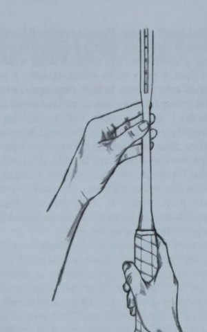
- Trái tay phía đông—từ cách cầm vợt thuận tay phía đông dành cho người thuận tay phải, xoay vợt 90 độ sang phải. Người thuận tay trái quay sang trái. (Xem Hình • Cú thuận tay kiểu bán Tây—“chảo rán”
tay cầm. Đặt vợt phẳng xuống đất và nhặt nó lên. Lòng bàn tay của bạn sẽ ở xa hơn dưới cán vợt so với cách cầm vợt thuận tay kiểu đông (xem Hình 7.2d).
- Cú thuận tay lục địa—“cái búa”
tay cầm. Lòng bàn tay nằm phía trên cán vợt, tương tự như việc cầm búa trước khi đóng đinh (xem Hình 7.2e).
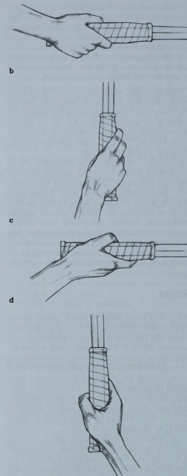
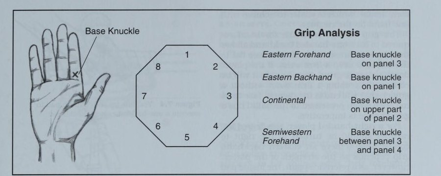
Cách phân tích cách cầm vợt được xác định bằng sự căn chỉnh của khớp đế trên các tấm vợt.
Một cách khác để phân tích tay cầm được thể hiện trong Hình 7.3. Vị trí tay của cú thuận tay phía đông, cú trái tay phía đông, cú thuận tay lục địa và cú trái tay lục địa được xác định bởi sự căn chỉnh của khớp đế trên các tấm vợt.
Ứng dụng của kiểu cầm vợt vào các cú đánh Mỗi cú đánh đòi hỏi phải quyết định xem cách cầm vợt nào sẽ hoạt động tốt nhất. Các yếu tố như tốc độ bóng, độ cao nảy và độ xoáy phải được phân tích ngay lập tức khi bóng đến gần.
Đôi khi những quyết định nhanh chóng này sẽ khiến người chơi cầm vợt sai cách. Tuy nhiên, nếu người chơi biết cách cầm vợt nào phù hợp nhất cho trò chơi của mình trong từng trường hợp, rất có thể cô ấy sẽ cầm vợt đúng cách hầu hết thời gian trước khi đánh bóng. Phần sau đây phác thảo những điều cần cân nhắc trước khi chọn cách cầm vợt cho mỗi cú đánh.
Tay cầm thuận tay Lối chơi trên sân cứng, thường tạo ra độ nảy cao nhất quán, đã chứng kiến cú thuận tay phát triển thành một cú đánh mạnh mẽ. Trên bề mặt cứng, tôi khuyên người chơi nên cân nhắc cách cầm vợt thuận tay ở đâu đó giữa hướng đông và nửa tây. Do những thay đổi về cách cầm, tôi nhận thấy rằng kiểu cầm vợt thuận tay phía đông thường được chọn bởi những người chơi có cú trái tay một tay, trong khi những người chơi trái tay bằng hai tay có nhiều khả năng chọn cú thuận tay bán tây hơn. Cách cầm vợt thuận tay kiểu đông đòi hỏi ít xoay bàn tay hơn để đạt được cách cầm vợt trái tay kiểu đông bằng một tay. Cách cầm vợt thuận tay bán tây yêu cầu phải thay đổi cách cầm vợt một cách nghiêm túc để đạt được cách cầm vợt trái tay kiểu đông một tay thích hợp. Tuy nhiên, trái tay bằng hai tay đòi hỏi tay thuận phải điều chỉnh ít hơn để đạt được cách cầm trái tay bằng hai tay thích hợp. Lòng bàn tay phải thẳng hàng với mặt vợt. Yêu cầu người chơi chuẩn bị cho cú thuận tay, đứng yên ở vị trí sẵn sàng và nói cho bạn biết mà không cần nhìn mặt vợt của họ có góc cạnh như thế nào. Nếu lòng bàn tay thẳng hàng với mặt vợt thì vợt sẽ vuông góc với mặt đất. Đưa mặt vợt vào bóng ở vị trí này sẽ tạo ra một cú đánh mạnh mẽ và nhất quán. Tay cầm cho phép khuỷu tay giữ gần cơ thể và cổ tay ở tư thế chắc chắn và thoải mái, mang lại sức mạnh tối đa. Cách cầm trái tay bằng một tay Cách cầm này cho phép linh hoạt hơn khi vươn rộng để thực hiện cú đánh trái tay. Các cú cắt bóng trái tay ở giữa sân thường được thực hiện dễ dàng hơn từ cách cầm vợt trái tay cơ bản này so với cách cầm vợt bằng hai tay. Trên lưới, người chơi của bạn đã có sẵn vợt thứ hai, không giống như người chơi bằng hai tay, vì vậy việc dạy vô-lê thường dễ dàng hơn vì cách cầm vợt tốt nhất trên lưới là kiểu lục địa, dễ dàng đạt được hơn bằng một tay trên vợt.
Sự thay đổi cách cầm từ thuận tay cần thiết để đánh trái tay bằng một tay cho phép người chơi đưa mặt vợt phẳng vào bóng và giữ cổ tay chắc chắn. Nếu người chơi không thay đổi cách cầm thì cổ tay của cô ấy sẽ bị méo. Giữ cổ tay chắc chắn mà không thay đổi cách cầm sẽ khiến mặt vợt quá hở khi đưa vào bóng. Vì vậy việc thay đổi cách cầm là bắt buộc.
Đối với người chơi thuận tay phải, mức độ vợt nên xoay sang phải để thoải mái đạt được kiểu cầm trái tay kiểu đông phụ thuộc vào sức mạnh của người chơi. Tuy nhiên, như một điểm tham khảo, phần đệm bên trong của ngón tay cái ở tay thuận phải thẳng hàng với mặt vợt (xem Hình Cách cầm vợt trái tay bằng hai tay. Đây là cách cầm vợt trái tay phổ biến nhất đối với hầu hết người chơi trẻ. Điểm yếu của cú đánh này là nó hạn chế tầm với về phía trái tay. Tuy nhiên, khả năng kiểm soát và sức mạnh mà hầu hết người chơi trẻ phát triển khi cầm hai tay thường lớn hơn yếu tố thiếu tầm với. Người chơi cơ bản, đặc biệt là các cô gái, thấy cách cầm này thuận lợi vì yếu tố sức mạnh cổ tay bị phủ định bởi hai tay. tay trên vợt.
Cách cầm vợt trái tay bằng hai tay đôi khi được sử dụng bởi những người chơi thuận tay kiểu bán tây mà không có nhiều thay đổi đáng chú ý về vị trí của tay thuận trên cán vợt giữa thuận tay và trái tay. Tuy nhiên, để đưa mặt vợt vào bóng theo kiểu vuông góc, tay thuận phải xoay về phía trên của cán vợt, giống như kiểu cầm vợt thuận tay, và tay không thuận phải giống kiểu cầm thuận tay kiểu đông (xem Hình 7.5).
Cách Cầm Vợt Trái Tay Cắt Bóng
Khi các huấn luyện viên đại học hỏi tôi về một trong những tay vợt của tôi, họ có thể đang tuyển dụng, một trong số đó. câu hỏi đầu tiên của họ là, "Anh ta có thể đi theo bóng ở giữa sân hay anh ta chỉ là một tay vợt ném bóng khác?" Những huấn luyện viên này biết rằng việc mở vợt ngửa để thực hiện cú đánh tiến lưới là điều quan trọng để có một trận đấu hoàn chỉnh. Để có cơ hội vào lưới, người chơi phải có khả năng thực hiện cú đánh tiến lưới cắt trên quả bóng có độ nảy thấp.
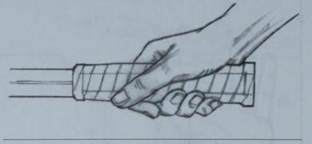
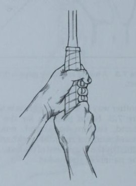
ở giữa sân. Khi các tay vợt của chúng tôi đã qua giai đoạn mới bắt đầu, vô số bài tập sẽ được sử dụng để rèn luyện bài học quan trọng này khi chơi giữa sân.
Đối với cú cắt bóng, cách cầm vợt của bạn sẽ giống kiểu cầm trái tay kiểu lục địa hoặc kiểu đông. Hãy nghĩ đến việc thực hiện một đòn chặt karate bằng phần gốc của bàn tay thuận của bạn. Nếu người chơi của bạn có cú đánh trái tay bằng hai tay, tôi khuyên bạn nên cố gắng thuyết phục cô ấy bỏ tay không thuận ra khỏi vợt để đánh cú đánh trái tay một cách hiệu quả. Làm như vậy sẽ căn chỉnh vai với mục tiêu khi vợt di chuyển từ cao xuống thấp để tạo xoáy xuống cho bóng. Điều này đạt được bằng cách đẩy tay thuận về phía trước trong khi tay không thuận di chuyển ra khỏi điểm tiếp xúc.
Cách cầm vợt thuận tay kiểu cắt thuận tay yêu cầu mặt vợt mở và cách cầm vợt thuận tay kiểu đông.
những người chơi sử dụng cách cầm vợt kiểu phương Tây sẽ thấy cú đánh này khó khăn nếu họ không muốn thay đổi cách cầm vợt khi họ đi vào từ đường cuối sân. Cách cầm vợt kiểu Tây khiến việc mở mặt vợt và cắt bóng trở nên khó khăn. Vấn đề này thường giữ các tay vợt ở cuối sân thay vì cố gắng tiếp cận lưới với một quả bóng có độ nảy thấp ở giữa sân.
Cách Cầm Vợt Giao Bóng
Ngoài các cú đánh tiếp đất, bao gồm cả việc trả giao bóng, cú đánh thường được thực hiện nhiều nhất là giao bóng. Thật khó để thuyết phục một người mới bắt đầu rằng cô ấy không nên sử dụng cách cầm vợt thuận tay của mình để giao bóng. Rốt cuộc, cô ấy có thể đang cạnh tranh với những người mới bắt đầu khác, những người sẽ không gây áp lực cho cô ấy khi giao bóng, vì vậy, giao bóng thẳng thường là đủ. Nhưng khi người chơi có được kinh nghiệm, họ sẽ cần thêm một số độ xoáy vào cú giao bóng của mình để kiểm soát tốt hơn. Để thuyết phục một người mới bắt đầu ở trình độ cao thay đổi cách cầm giao bóng của cô ấy thành cách cầm giao bóng giống như kiểu châu lục, cô ấy hãy giao bóng cho một người chơi giỏi hơn. Một khi cô ấy nhìn thấy một vài cú giao bóng nhẹ thứ hai bị cô ấy đánh trả lại, việc thuyết phục cô ấy thử một cú giao bóng xoáy khác sẽ dễ dàng hơn nhiều. Khi người chơi đã điều chỉnh cách cầm giao bóng thích hợp, sức mạnh của cú giao bóng đầu tiên có thể được giảm bớt nhờ chuyển động quay.
Độ xoáy cần thiết để có được cú giao bóng thứ hai đáng tin cậy cũng đòi hỏi một kiểu cầm vợt kiểu lục địa. Ban đầu, một người chơi thiếu kinh nghiệm có thể khó nắm bắt được điều này, nhưng một khi anh ta có được sự tự tin trong cách cầm giao bóng này, anh ta sẽ nhận thấy khả năng kiểm soát của mình được cải thiện đến mức nào.
Cách Cầm Vợt Bắt Volley
Những pha trao đổi nhanh trên lưới khiến việc thay đổi cách cầm bóng cho một cú vô lê trở nên không thực tế. Hầu hết những người mới bắt đầu sẽ cố gắng thực hiện cú vô lê bằng cách cầm vợt thuận tay, điều này thường có nghĩa là người chơi sẽ có cú vô lê trái tay rất yếu. Thuyết phục các tay vợt của bạn rằng nên sử dụng kiểu cầm vợt lục địa trên lưới ngay khi sức mạnh cổ tay của họ cho phép. Tay cầm sẽ giống như một lục địa với gót bàn tay xoay về phía tay cầm phía đông. Vòng quay này đặc biệt rõ ràng ở những cú vô lê cao. Nếu bạn có những tay vợt sử dụng cả hai tay ở phía trái tay để đánh vô lê, hãy thuyết phục họ bỏ tay không thuận ra khỏi vợt càng sớm càng tốt. Điều này sẽ cho phép họ giữ vai dẫn đầu thẳng hàng và thực hiện cú vô lê.
Bài kiểm tra khả năng cầm vợt tốt cho bất kỳ cú đánh nào là vào vị trí sẵn sàng và biết mặt vợt nghiêng như thế nào. Yêu cầu người chơi của bạn chuẩn bị và thực hiện cú đánh vào một quả bóng tưởng tượng. Liệu họ có thể đưa mặt vợt vào quả bóng tưởng tượng và đánh nó đẹp và chắc chắn không? Hỏi họ xem họ có cảm thấy điều này sắp xảy ra không. Tay cầm tốt giúp thực hiện cú đánh dễ dàng. Cách cầm vợt không tốt khiến việc thực hiện cú đánh thích hợp gần như không thể thực hiện được. Hãy gây ấn tượng với người chơi của bạn rằng việc không có tay cầm chức năng cho tất cả các cú đánh mà họ phải xử lý trong khi chơi sẽ gây ra những điểm yếu rõ ràng trong trò chơi của họ. Tập trung người chơi của bạn vào cách cầm vợt thích hợp ngay khi bạn bắt đầu luyện tập trong năm. Nếu không có kỹ thuật cầm vợt phù hợp, tất cả các công việc tạo ra cú đánh khác sẽ bị lãng phí. Kiểu đánh bóng Việc tạo cú đánh là vấn đề thuộc về phong cách cá nhân. Tuy nhiên, phong cách phải đứng thứ yếu so với chức năng nếu bạn hy vọng thành công trong môn quần vợt. Bạn đã huấn luyện bao nhiêu tay vợt muốn tỏ ra ổn trên sân bằng mọi giá? Họ thực hiện một cú backswing quá mức và theo sau rất nhiều, dẫn đến một cú giành điểm hoặc nhiều khả năng hơn là một lỗi không thể bắt buộc thất thường. Thật không may, phong cách hơn là chất lượng lại là một cạm bẫy mà các tay vợt trẻ thường xuyên mắc phải.
Chơi Theo Tỷ Lệ
Năm 1988, tôi bắt đầu làm việc với một tay vợt trẻ, người cũng tình cờ là một vận động viên ném bóng chày xuất sắc. Thân hình chắc nịch của anh ấy, ngay cả khi còn trẻ, đã khiến anh ấy trông chẳng khác gì một vận động viên quần vợt. Chuyển động giao bóng của anh ấy rất xuất sắc do cách quay cổ tay tương tự được sử dụng khi ném bóng trong môn bóng chày. Tuy nhiên, tốc độ chân không đủ khiến anh ấy đánh mất thăng bằng nhiều cú thuận tay. Anh ấy sẽ bẻ cổ tay của mình trong cú đánh và cố gắng đánh mọi cú thuận tay mạnh nhất có thể. Thỉnh thoảng anh ấy đánh được một cú giành điểm, nhưng cú thuận tay của anh ấy thường xuyên hơn.
Anh ấy luôn nhớ những cú giành điểm nhưng lại nhanh chóng quên đi những lỗi lầm không đáng có.
Giải pháp của tôi cho vấn đề này là lập sơ đồ các trận đấu của anh ấy cho đến khi anh ấy thừa nhận rằng những lỗi thuận tay không đáng có mà anh ấy mắc phải khi đánh bóng quá mạnh là nguyên nhân khiến anh ấy thua trận. Tôi đã làm việc với anh ấy về việc tiếp cận bóng sớm hơn để anh ấy có thể giữ thăng bằng khi vung vợt. Tuy nhiên, thay đổi quan trọng nhất mà chúng tôi thực hiện trong cú đánh của anh ấy là rút ngắn động tác vung vợt ra sau và giữ chặt cổ tay anh ấy trước khi tiếp xúc với bóng. Những thay đổi này cùng với nỗ lực có ý thức của anh ấy để giữ bóng lâu hơn đã cải thiện tỷ lệ chiến thắng của anh ấy một cách rõ rệt.
Giải pháp là tập trung vào vùng tiếp xúc trước và vung vợt sau khi người mới bắt đầu học kiểu xoay người. Phần quan trọng nhất của bất kỳ cú đánh tennis nào là thời điểm và vị trí bóng gặp dây. Tôi cảm thấy hướng dẫn đó nên nhấn mạnh đến động tác vung vợt ra sau ngắn cho người mới bắt đầu. Khi vợt, ở vị trí chuẩn bị, biến mất phía sau người đánh, thì cú đánh lùi là quá mức. Sân nhanh, điều kiện nhiều gió hoặc đánh đối thủ bằng những cú đánh mạnh thường sẽ giúp rút ngắn thời gian backswing. Đánh chậm hoặc chơi với đối thủ đánh nhẹ (đẩy) có thể ưu tiên kéo dài động tác vung vợt về phía sau để tăng tốc độ đầu vợt trước khi tiếp xúc với bóng.
Chuẩn bị vòng lặp hay quay lại thẳng?
Có hai cách cơ bản để chuẩn bị vợt của bạn trong cú vung vợt sau. Trong vòng giật, vợt được đưa ra sau ở độ cao ngang vai và thả xuống dưới thắt lưng trong quá trình chuyển động về phía trước để tạo thành hình bán nguyệt. Hãy hình dung chữ C để thực hiện động tác backswing hiện đang rất phổ biến. Nhiều người chơi lớn trong trò chơi ngày nay tạo ra tốc độ cực nhanh với kiểu xoay này. Sự tự do cho phép cổ tay tối đa hóa tốc độ đầu vợt. Kiểm soát được thực hiện thông qua quay. Vòng lặp nên nhỏ hơn nếu bề mặt chơi nhanh hoặc nếu đối thủ của bạn là người đánh mạnh. Trên bề mặt chậm hơn, chẳng hạn như đất sét, bạn sẽ có nhiều thời gian hơn để chuẩn bị. Cú giật lùi là hoàn hảo để tạo ra nhiều lực hơn trong khi vẫn duy trì khả năng kiểm soát với xoáy lên.
Những nhược điểm của cú giật lùi là khá rõ ràng. Một tay vợt trẻ có thể được kiểm soát. Sự tự do dành cho cổ tay cùng với điểm tiếp xúc muộn có thể làm phức tạp thêm vấn đề kiểm soát đối với người mới bắt đầu.
Nếu người chơi của bạn đánh bóng xoáy lên một cách tự nhiên và tiếp xúc với bóng ở đỉnh điểm nảy của nó, thì cú giật ngược giật có thể thích hợp. Tuy nhiên, nếu người chơi phối hợp tốt và đủ khỏe để đưa bóng lên cao thì kiểu xoay thẳng về phía sau có thể hiệu quả hơn.
Bất kể sử dụng kiểu xoay nào, điều quan trọng là tránh vung ra sau quá mức. Vấn đề vung vợt ra sau quá nhiều thường xảy ra ở phía thuận tay. (Việc vung vợt lùi quá mức ít có khả năng xảy ra ở phía bên trái tay vì người chơi chuẩn bị bằng cách vươn ngang người.) Nếu vợt biến mất phía sau người chơi trong quá trình chuẩn bị, điểm tiếp xúc có thể bị trễ, khiến việc kiểm soát và tốc độ khó đạt được hơn.
Việc chuẩn bị vung vợt phải đủ sớm để điểm tiếp xúc ở phía trước người chơi. Đối với một số người chơi, điều này có nghĩa là sử dụng một cú vung ngắn và gọn. Điều này có nghĩa là khi dạy kiểu xoay, chuyển từ cú xoay tối thiểu lên tối đa là tốt nhất. Với kiểu xoay ngắn, gọn, dù là giật hay thẳng về phía sau, người chơi của bạn có nhiều khả năng tiếp xúc với bóng ra phía trước hơn.
Sau khi người chơi cảm thấy thoải mái với kiểu xoay người mình đang sử dụng, nhịp điệu và dòng chảy có thể được đưa vào. Thời gian liên quan đến việc đánh bóng đến với tốc độ khác nhau và độ xoáy khác nhau đòi hỏi phải luyện tập hàng giờ liền. Các bài tập đánh mặt đất cơ bản là tấm vé để phát triển một cú đánh ổn định. Tôi sử dụng các bài tập một, hai, ba hoặc bốn quả bóng được nêu trong kế hoạch hàng tháng của mình để xây dựng kỹ năng quan trọng này. Những bài tập này nên thay đổi thường xuyên để tránh sự nhàm chán. Được sử dụng đúng cách, các bài tập giúp phát triển kỹ năng cơ bản quan trọng nhất của việc tạo ra cú đánh, kiểu xoay người của người chơi.
Luyện tập động tác bằng chân và chuyển động Quần vợt là một trò chơi chuyển động. Một kiểu xoay người xuất sắc sẽ ít có tác dụng nếu chân của người chơi không thể đưa cô ấy vào bóng. Trong hầu hết các môn thể thao, cánh tay được bơm để lấy đà khi chạy. Quần vợt thì khác. Chạy đến điểm tiếp xúc, phần thân trên của người chơi phải giữ yên trong khi chân hoạt động để vào vị trí thực hiện cú đánh. Một người chơi nâng cao có thể bơm cánh tay của mình để lấy đà, nhưng khi anh ta tiếp cận bóng và bắt đầu chuẩn bị cú đánh, phần thân trên của anh ta sẽ được trang bị tốt hơn để thực hiện cú đánh nếu việc chuẩn bị vợt được bắt đầu khi họ chạy về phía bóng và giữ phần thân trên “yên tĩnh nhất có thể” cho đến khi họ thực hiện cú đánh.
Dự Đoán Và Chuẩn Bị
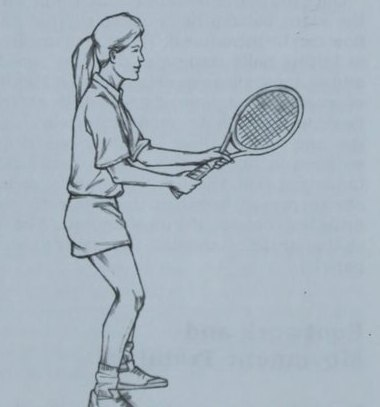
cú đánh như một phương tiện để phát triển tốc độ bùng nổ của quả bóng. Yêu cầu người chơi của bạn thực hiện một bước nhảy nhanh lên bi bằng cả hai chân khi đối thủ của cô ấy lấy vợt lại để chuẩn bị cho cú đánh tiếp theo. Hành động này làm vuông vai, hạ thấp tâm tĩnh. trọng lực và cho phép người chơi phản ứng nhanh với cú đánh của đối thủ.
Thăng Bằng Và Phục Hồi
Khi đối phương thực hiện cú đánh, người chơi phải giữ thăng bằng thích hợp trong khi phản ứng với bóng. Những bước tiến dài có hiệu quả cho đến khi người chơi tiến gần đến điểm tiếp xúc, khi đó các bước phải rút ngắn lại. Việc rút ngắn các bước khi xoay vai cho phép người chơi dựa vào điểm tiếp xúc với một cây vợt đã được chuẩn bị sẵn, giúp việc phục hồi dễ dàng hơn sau khi đánh cú đánh. Phục hồi là số bước mà người chơi phải thực hiện để dừng đà tiến về phía trước điểm tiếp xúc sau khi đánh bóng.
Nhiều người mới bắt đầu mắc sai lầm khi uốn người ở thắt lưng để chạm bóng tại điểm tiếp xúc. Điều này đẩy trọng tâm ra phía trên chân, đây là cơ sở để giữ thăng bằng. Cú đánh kết quả là sử dụng tất cả các cánh tay và không sử dụng cơ thể như một hệ thống liên kết. Không nhận được sự trợ giúp nào từ chân, hông hoặc vai.
Để sử dụng cơ thể như một hệ thống liên kết, người chơi phải bước vào bóng, điều này cho phép lực do chân tạo ra truyền đến hông và cuối cùng đến vai khi người chơi xoay người thực hiện cú đánh. Sau đó, cánh tay và bàn tay của người chơi có thể sử dụng sức mạnh này để thực hiện cú đánh.
Sau khi hoàn thành một cú đánh, nhiều người chơi mắc sai lầm là dừng lại bằng bàn chân phẳng để xem điều gì xảy ra với quả bóng họ vừa đánh. Việc mất đà này khiến việc quay trở lại trung tâm trả bóng có thể có của đối thủ trở nên khó khăn hơn. Dạy các tay vợt của bạn tập luyện chăm chỉ giữa các cú đánh cũng như trong khi thực hiện. Nếu họ bật bóng bằng chân giữa các cú đánh, thời gian họ cần chuẩn bị cho cú đánh tiếp theo sẽ giảm đáng kể.
Hãy Mạo Hiểm
Thật không may, mỗi cú đánh trúng đích không đi sâu như người chơi dự định. Nếu họ đánh một quả bóng ngắn—mà đối thủ của họ thường có thể làm được. Trong khi bật bóng bằng chân, họ nên đoán xem đối thủ có thể đánh bóng ở đâu và chạy nhanh về phía đó để có thể thực hiện một cú đánh bóng.
Mẹo về động tác bằng chân Duy trì sự cân bằng với tư thế sẵn sàng thích hợp. Người chơi phải kiễng chân lên, đầu gối hơi cong.
Sử dụng bước nhảy để phản ứng nhanh hơn với cú đánh của đối thủ.
Các bước nên được rút ngắn khi người chơi đến gần bóng.
Sử dụng cơ thể như một hệ thống liên kết.
Sức mạnh được tạo ra đầu tiên ở chân của người chơi. Bước vào từng cú đánh để sức mạnh này truyền đến phần thân trên.
Tiếp tục làm việc giữa các lần chụp. Đừng đứng bằng chân.
Khi hết vị thế đánh bạc. Chạy nước rút sang phía mà bạn cho rằng đối thủ rất có thể sẽ cố gắng đánh quả bóng ngắn của bạn.
Tăng cường mục đích luyện tập động tác chân. Để phát triển bước chân tốt hơn và giữ thăng bằng.
Thủ tục. Đặt các cặp hình nón màu đỏ ở hai phía đối diện của đường biên đơn.
người chơi cầm vợt đứng ở giữa sân giữa các cặp hình nón. Theo lệnh của bạn, người chơi thực hiện bước nhảy và di chuyển về phía hình nón. Thực hiện chuẩn bị vợt và động tác bằng chân thích hợp khi đến gần hình nón, người chơi thực hiện cú xoay bóng, thu hồi, quay trở lại giữa sân và thực hiện một bước nhảy khác trước khi di chuyển đến hình nón ở phía đối diện. Điểm huấn luyện. Các bài tập bóng mô phỏng, được thực hiện đúng cách sẽ phát triển động tác bằng chân xuất sắc nhanh hơn nhiều so với khi người chơi phải lo lắng về việc đánh bóng sau khi đánh vô-lê. Hãy thử bài tập này để phát triển khả năng giữ thăng bằng và động tác chân.
Ba tư thế Có ba tư thế mà người chơi có thể sử dụng để thiết lập một cú đánh.
Tư thế này là cách đơn giản nhất để dạy các tay vợt trẻ giữ thăng bằng tốt và chuyển trọng lượng vào các cú đánh của họ. Chân sau tiếp đất trước và chân trước bước về phía lưới ngay trước khi tiếp xúc với bóng. Bàn chân trước thẳng hàng với bàn chân sau. Phong cách cổ điển này đảm bảo chuyển trọng lượng tốt và giữ cơ thể nghiêng về phía lưới khi tiếp xúc (xem Hình 7.9a).
Tư Thế Mở
Thế đứng này khiến người chơi khó giữ thăng bằng và chuyển trọng lượng tốt hơn, mặc dù nhiều người chơi hàng đầu sử dụng kỹ thuật này thành công. Chân sau tiếp đất cuối cùng và gần điểm tiếp xúc hơn chân trước. Bàn chân sau nhìn chung sẽ hướng thẳng sang một bên hoặc hơi ở phía sau điểm tiếp xúc (xem Hình 7.9b). Thế đứng này thường được sử dụng bởi những người chơi sử dụng cách cầm vợt kiểu Tây hoặc bán Tây.
Tư Thế Đóng
Thế đứng này đôi khi được sử dụng bởi những người chơi có cú đánh trái tay bằng hai tay. Chân sau tiếp đất trước và chân trước bước ngang cơ thể và vượt ra ngoài điểm mà Ba chân sau tiếp đất (xem Hình 7.9c). Tư thế này hiếm khi được nhìn thấy đối với cú thuận tay ngoại trừ khi một tay vợt đang chạy hết sức để lấy bóng rộng và buộc phải dùng cánh tay hất bóng ra sau. Tư thế khép kín khiến việc xoay hông đầy đủ hầu như không thể thực hiện được.
Thế đứng vuông vức hoặc mở được chấp nhận cho các cú đánh tiếp đất. Tôi sẽ để yên thế đứng mở của người chơi nếu anh ta sử dụng cách cầm vợt kiểu Tây và có thể duy trì sự cân bằng và ổn định trong khi đánh. Tuy nhiên, đối với hầu hết người chơi ở trường trung học, tôi tin rằng tư thế vuông góc cho phép người chơi dồn trọng lượng của mình vào mỗi cú đánh nề, giúp truyền lực từ chân lên phần thân trên. Bằng cách bước vào cú đánh với tư thế này, đầu gối có thể uốn cong trong quá trình chuẩn bị và người chơi có thể giữ nguyên tư thế trong mỗi lần đánh nề. Gói cân bằng và chuyển trọng lượng tổng thể này giúp cho các cú đánh nề dễ kiểm soát hơn và mạnh mẽ hơn nhiều.
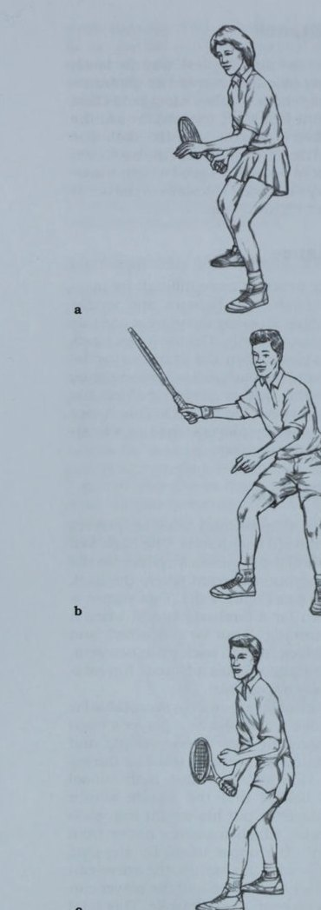
(a) Thế đứng vuông vắn để chuyển trọng lượng phù hợp; (b) Lập trường cởi mở để phục hồi nhanh hơn; (c) Thế đứng đóng.
Kiểm soát bóng Quần vợt là một trò chơi có nhiều hạn chế. Cụ thể, rào cản là dây và lưới. Nếu người chơi của bạn không thể kiểm soát bóng khi thực hiện cú đánh thì không có sức mạnh nào có thể giúp ích được cho họ.
Khi một đấu thủ đã đến khu vực đánh bóng và chuẩn bị kỹ lưỡng để đánh bóng, thời điểm của sự thật đã đến. Cô ấy phải có khả năng kiểm soát quả bóng khi đánh nó. Từ thời điểm này trong một cú đánh, việc kiểm soát bóng là một quá trình gồm năm bước: Làm chủ tốc độ vung vợt Quản lý điểm tiếp xúc Áp dụng độ xoáy để kiểm soát Cân bằng hướng bóng với góc mặt vợt • Đi theo mục tiêu Làm chủ tốc độ vung vợt Kiểm soát bắt đầu khi người chơi xác định cách anh ta sẽ sử dụng gia tốc đầu vợt tiềm năng được tạo ra bởi chân và hông khi chúng duỗi vào trong bóng. Lúc này, người chơi nên đặt bóng ở khoảng cách đủ xa so với cơ thể để vai và cánh tay có thể di chuyển thoải mái trong khu vực đánh. Một “cánh tay chậm” vào thời điểm này trong cú swing sẽ tạo nên điều kỳ diệu cho việc kiểm soát. Bất kể bề mặt thi đấu như thế nào, việc chuẩn bị vợt được hoàn thành đủ sớm, việc di chuyển qua điểm tiếp xúc với cánh tay được kiểm soát sẽ nâng cao cơ hội thành công. Kiểm soát bao hàm sự hướng dẫn, mang lại cho người chơi hình ảnh đang chăm sóc bóng khi anh ta bắt đầu vung vợt. Người chơi phải hiểu rằng sức mạnh đến từ thời gian và nhịp điệu, không nhất thiết phải là tốc độ cánh tay. Quản lý khả năng tăng tốc của đầu vợt sẽ quyết định cơ hội thành công của cú đánh. Quản lý điểm tiếp xúc Mỗi người chơi phải tìm hiểu xem điểm tiếp xúc hoàn hảo ở đâu cho mỗi cú đánh. Việc mở rộng phần đế được tạo ra bằng cách dang rộng hai chân trong tư thế vuông góc khi người chơi sải bước vào cú đánh sẽ tạo ra vùng tiếp xúc có khả năng dài hơn. Ở phía thuận tay, người chơi hãy hình dung việc đẩy lòng bàn tay về phía trước vào quả bóng. Mỗi người chơi có thể xác định cú đánh chuẩn bị hoàn hảo của mình. Người chơi nên đứng nghiêng về phía lưới và dừng cú vung vợt bằng trọng lượng cơ thể dồn vào chân trước và mặt vợt hướng thẳng về phía giữa sân. Đây là điểm tiếp xúc được khuyến nghị cho cú thuận tay ngay phía trước bàn chân trước.
Đối với cú đánh trái tay bằng một tay, yêu cầu người chơi lặp lại cú xoay tưởng tượng. Đứng nghiêng người, chuẩn bị đánh bóng, nên dừng vung vợt khi đầu vợt hơi ở phía trước chân trước một chút. Mặt vợt một lần nữa phải hướng thẳng về phía giữa sân. Đây là điểm tiếp xúc hoàn hảo cho cú đánh trái tay bằng một tay. Đối với cú đánh trái tay bằng hai tay, điểm tiếp xúc phải gần giống như đối với cú drive thuận tay.
- Bóng và mặt vợt phải gặp nhau tại điểm tiếp xúc khi người chơi giữ thăng bằng.
- Các biến thể cách cầm vợt sẽ thay đổi điểm tiếp xúc của mỗi người chơi.
Áp dụng Độ xoáy để kiểm soát Việc tạo độ xoáy lên bóng cũng giống như áp dụng phanh để tăng tốc. Xoay tạo ra ma sát trên quả bóng khi nó di chuyển trong không khí. Để truyền đạt điều này có thể đạt được bằng cách siết chặt ba ngón tay cuối cùng của bàn tay quanh cán vợt trước khi thực hiện cú đánh.
Một quả bóng có thể tạo ra ba loại xoáy. Để thực hiện được ba cú xoáy này, đầu vợt phải tăng tốc thông qua cú đánh, như sau: ¢e Vuốt mặt sau của quả bóng lên trên để tạo xoáy lên.
- Vuốt mặt sau của quả bóng xuống dưới để tạo xoáy xuống.
- Vuốt ngang quả bóng để tạo xoáy ngang.
(a) Trái tay bằng một tay; (b) Trái tay bằng hai tay.
Có nhiều lý do để sử dụng độ xoáy khi thực hiện cú đánh. Bằng cách truyền độ xoáy, người chơi có thể thay đổi độ sâu, góc, độ cao, tốc độ và độ nảy của cú đánh. Nếu một đấu thủ luôn đánh bóng phẳng, cô ấy sẽ không thể đánh trúng một số điểm mục tiêu, điều này gây khó khăn cho việc sử dụng toàn bộ sân. Sáu khu vực có sẵn cho người chơi làm vùng mục tiêu là hai vạch cuối sân T, hai đường giao bóng và hai đường T ném bóng trên lưới (xem Hình 7.12).
Xoáy Lên
Khi đặt bóng xoáy lên, mặt trên của quả bóng sẽ quay theo hướng di chuyển. Quỹ đạo giật do xoáy lên tạo ra cho phép bóng đi qua lưới với sai số lớn hơn. Cú giật này có hiệu quả trong việc tạo ra một cú đánh nề sâu hoặc một cú đánh chéo sân có góc nhọn.
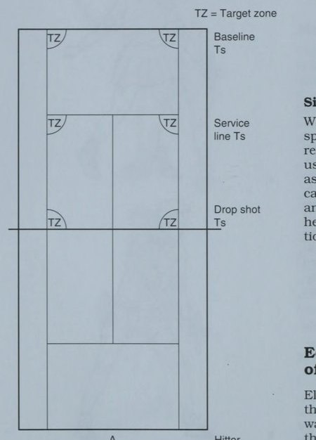
- Để đánh topspin, vung vợt từ thấp đến cao. Mép trên của dây vợt phải tiếp xúc với bóng trước. Đầu vợt tăng tốc trong cú đánh càng nhanh thì tạo ra càng nhiều xoáy lên.
Xoáy Xuống
Khi đánh vào đường xoáy xuống, phần trên của quả bóng sẽ quay ra khỏi hướng di chuyển. Vì có ít áp suất không khí dưới bóng hơn nên cú đánh xoáy xuống có xu hướng ở trên không lâu hơn. Một cú đánh xoáy xuống chạm sân ở một góc lớn hơn 45 độ có xu hướng “ngồi lên” như trong một cú bỏ nhỏ. Nếu một cú đánh xoáy xuống chạm sân ở một góc nhỏ hơn 45 độ, nó có xu hướng trượt và ở mức thấp như trong một cú đánh tiến lưới. Xoáy xuống cũng có thể được sử dụng để kiểm soát vị trí của cú vô lê.
- Để đánh bóng xoáy xuống, vung vợt theo hướng hướng xuống một chút. Mép dưới của dây vợt nên Baseline đánh bóng trước. Mô hình xoay Ts sẽ bắt đầu cao hơn một chút so với nơi xảy ra va chạm.
Xoáy ngang Khi đánh vào xoáy ngang, mặt của đường giao bóng Ts sẽ quay theo hướng di chuyển. Điều này thường được gọi là trượt bóng. Xoáy ngang được sử dụng để đánh bóng ở một góc ngoài sân như trong một pha tiếp cận hoặc đẩy bóng ở giữa sân. Nó có thể được sử dụng trong khi giao bóng để đánh bóng ra xa và kéo đối thủ ra khỏi sân. Nó cũng hữu ích khi cố gắng thay đổi hướng của quả bóng đang tới.
- Để đánh xoáy ngang, vung đầu vợt ngang qua mặt sau của quả bóng. Tiếp xúc bóng sát cổ vợt và kéo bóng qua dây tới đầu vợt.
Liên Hệ Hướng Bóng Với Góc Mặt Vợt
Việc kéo dài điểm tiếp xúc giúp người chơi có thời gian để cho bóng biết mình muốn nó đi theo hướng nào. Hướng bóng được điều khiển bởi Hitter góc của mặt vợt khi tiếp xúc. Sau khi người chơi biết được điểm tiếp xúc ở giữa sân cho mỗi cú đánh, cô ấy có thể điều chỉnh một chút để đánh vào các góc của sân.
giữa sân đánh một cú đánh thuận tay nên hình ảnh đánh bóng lúc 6 giờ cho mục tiêu ở giữa, 5 giờ cho cú đánh chéo sân vào góc trái, và 7 giờ cho cú đánh vào góc phải. Người chơi cần nhận ra rằng việc ngụy trang rất quan trọng trong việc kiểm soát hướng bóng. Để ngụy trang hướng đi của đối thủ càng lâu càng tốt, sự chuẩn bị phải giống nhau. Những biến đổi tinh tế của điểm tiếp xúc và góc vợt sẽ làm thay đổi hướng của quả bóng.
Chiều cao khoảng trống trên lưới trong các cú đánh tiếp đất có thể được kiểm soát bằng cách mở nhẹ mặt vợt hoặc bằng cách truyền xoáy lên. Điều này cũng sẽ khiến cú đánh đi sâu vào sân. Trên sân nhanh, bóng phải bay qua lưới khoảng 3 đến 4 feet. Trên sân chậm, chiều cao qua lưới phải từ 6 đến 7 feet. Nếu việc lựa chọn cú đánh yêu cầu người chơi phải đánh bóng ngắn hơn vào phần sân đối phương thì việc khép nhẹ mặt vợt sẽ giúp bóng di chuyển theo hướng đó.
Đi theo mục tiêu Điều quan trọng là phải đẩy vợt qua toàn bộ khu vực tiếp xúc, với đầu đứng yên và mắt nhìn vào bóng. Việc theo dõi nên mở rộng về phía mục tiêu.
- Người chơi nên có mục tiêu cho nhiều tình huống khác nhau. Ví dụ: nếu đối thủ ở lại sau khi giao bóng, quả giao bóng sẽ ở sâu trong sân. Nếu đối phương giao bóng và thực hiện cú vô lê, cú trả bóng phải thấp đến chân đối phương.
Người chơi của bạn nên thực hành tiến trình tạo cú đánh mỗi ngày. Nếu họ tuân theo kế hoạch cho từng cú đánh, họ sẽ nhanh chóng tiến bộ. Ưu tiên hàng đầu phải là đưa bóng vào cuộc bằng mọi giá. Thứ hai, cần phải đạt được khả năng kiểm soát theo hướng của mỗi cú đánh, chéo bàn hoặc dọc đường. Thứ ba, yêu cầu tay vợt của bạn học cách kiểm soát độ sâu của mỗi cú đánh. Tất nhiên, những cú đánh nề cơ bản thường đánh sâu vào vạch cuối sân của đối thủ. Tuy nhiên, người chơi cũng có thể đánh những quả bóng ngắn. Thứ tư, hãy phát huy khả năng của người chơi để thực hiện cú xoay chính xác trong mỗi cú đánh. Spin vẫn còn ở lại sân đấu. Thứ năm, người chơi nên học cách kiểm soát tốc độ bóng, thay đổi tốc độ bóng trong mỗi điểm chơi.
Các khái niệm huấn luyện chính về kỹ thuật Cùng với các nguyên tắc cầm nắm, xoay người, động tác bằng chân và các yếu tố kiểm soát bóng tennis là những khái niệm huấn luyện chính cho mỗi cú đánh. Hầu hết các huấn luyện viên đều phát triển các khái niệm yêu thích của riêng họ dựa trên kinh nghiệm của họ và trình độ kỹ năng của các tay vợt trong đội mỗi năm.
Làm việc về kỹ thuật của người chơi thường đòi hỏi sự chú ý của từng cá nhân từ huấn luyện viên để đánh giá cú đánh hiện tại của người chơi và đề xuất cải thiện. Tuy nhiên, sẽ hiệu quả nhất nếu huấn luyện viên cố gắng giúp cả một nhóm người chơi trình bày một số khái niệm chung cho từng kiểu đánh và sau đó tổ chức một loạt bài tập để luyện tập cú đánh đó.
Trong khi các tay vợt luyện tập, huấn luyện viên có thể khắc phục sự cố bằng cách củng cố kỹ thuật phù hợp và đưa ra những đề xuất ngắn gọn để cải thiện mà không làm gián đoạn quá trình diễn tập. Những người chơi thực sự đang gặp khó khăn sẽ cần sự quan tâm cá nhân, nhưng tôi khuyên bạn nên lên lịch trợ giúp đặc biệt trước hoặc sau khi luyện tập thường xuyên. Hãy nhớ rằng vai trò của bạn với tư cách là huấn luyện viên trong quá trình luyện tập của đội là huấn luyện tất cả các tay vợt trong suốt thời gian.
Gợi Ý Khi Dùng Bài Tập
Giúp người chơi học hỏi nhanh chóng đòi hỏi các mũi khoan tập trung vào và lặp lại một cú đánh cụ thể. Các bài tập được trình bày trong chương này và chương 8 là những ví dụ mà bạn có thể sửa đổi hoặc điều chỉnh để phù hợp với nhu cầu của nhóm mình. Qua nhiều năm huấn luyện, bạn sẽ phát triển một danh mục các bài tập yêu thích để trở thành nền tảng cho quá trình luyện tập của bạn. Tuy nhiên, bạn nên liên tục tìm kiếm những ý tưởng mới, điều chỉnh các bài tập cũ hoặc phát minh ra các bài tập mới để phù hợp với các tình huống cụ thể.
Những gợi ý sau đây có thể giúp bạn sử dụng các bài tập hiệu quả hơn trong thực hành của mình: A Xác định mục đích của một bài tập và nói rõ với người chơi của bạn trước khi họ bắt đầu.
giải thích bằng lời nói. Chỉ ra những điểm chính để người chơi tập trung vào.
A khi thiết kế hoặc lựa chọn các bài tập, sẽ rất hữu ích khi nghĩ đến trình tự phát triển một cú đánh, theo đúng trình tự phát triển từ thấp đến cao.
Khi bắt đầu học bất kỳ cú đánh nào, hãy chú trọng đến kỹ thuật và khả năng kiểm soát bóng (ví dụ: chiều cao, hướng, độ sâu và độ xoáy). Khi kỹ năng của người chơi tiến bộ, các bài tập sẽ cung cấp sự thực hành về tính nhất quán và chính xác.
A bất cứ khi nào có thể, hãy mô phỏng các tình huống trong trận đấu và trình tự cú đánh tự nhiên để người chơi của bạn bắt đầu sử dụng các kiểu chơi chuyển sang điểm chơi.
A sử dụng bóng sống thường xuyên nhất có thể thay vì diễn tập bóng chết để người chơi học cách điều chỉnh lối chơi ballin. Huấn luyện viên nên đưa bóng chết (tức là bóng chưa chơi) cho những tay vợt mới học cách đánh hoặc một chuỗi cú đánh để họ có thể sớm thành công.
luyện tập để người chơi quen với việc thực hiện liên tiếp 3 đến 6 cú đánh.
S sử dụng mục tiêu trên sân khi khoan để đảm bảo độ chính xác hoặc xem xét mục tiêu phía trên lưới khi nhấn mạnh đến việc kiểm soát hướng và độ cao.
A Sử dụng nhiều bài tập khác nhau trong mỗi buổi tập và thay đổi bài tập trước khi người chơi cảm thấy mệt mỏi và chán việc lặp lại.
S thay đổi thử thách cho người chơi của bạn bằng cách điều chỉnh mục đích của một cuộc tập trận. Ví dụ: bạn có thể thực hiện một bài tập trong một khoảng thời gian nhất định, một số lần thử nhất định cho đến khi có người chiến thắng, cho đến khi các tay vợt thành thạo kỹ năng hoặc cho đến khi huấn luyện viên thổi còi. Mỗi tiêu chí này đều có vị trí của nó và bằng cách thay đổi hướng dẫn và mục đích, cùng một bài tập có thể đưa ra một thử thách mới và khác biệt cho người chơi.
S Tối đa hóa không gian sân bằng cách sử dụng một số cuộc tập trận có thể chứa 6 đến 8 người chơi trên một sân, từ đó giải phóng các sân khác cho các cuộc tập trận đơn hoặc các tình huống trò chơi.
o Điều chỉnh các bài tập phù hợp với trình độ khả năng của người chơi trên mỗi sân. Mặc dù tất cả người chơi có thể thực hiện cùng một nhiệm vụ, hãy thách thức những người chơi giỏi hơn của bạn bằng cách thêm thử thách về chiều sâu, độ chính xác hoặc tăng hình phạt nếu mắc lỗi.
Tích hợp đủ các chuyển động xoay và chuyển động thường xuyên trong các bài tập hàng ngày để các tay vợt của bạn có được một buổi tập luyện thể chất tốt mà không hề nhận thấy. Đảm bảo người chơi không phải xếp hàng một lượt quá 30 giây – không có gì nhàm chán hơn.
ao Tìm kiếm cơ hội củng cố tích cực trong khi người chơi đang tập luyện. Hãy cố gắng bắt họ làm điều gì đó đúng đắn. Nếu bạn cần chỉnh sửa kỹ thuật hoặc màn trình diễn của họ, hãy làm điều đó một cách rõ ràng, chính xác và không có cảm xúc.
GO Remene: làm cho các cuộc tập trận trở nên thú vị. Người chơi thích thử thách. Họ thích cạnh tranh và thích đánh bại huấn luyện viên. Lên kế hoạch dành thời gian mỗi ngày để giải trí—đặc biệt là sau thời gian tập trung cao độ và làm việc chăm chỉ.
Chìa khóa cho sơ đồ sân A, B, C = Người chơi = Mục tiêu — E> — = Đường đi của bóng ———> = Đường đi của người chơi serernenenenne > = Góc trả bóng có thể có của đối thủ Pia = Máy bóng Các khái niệm huấn luyện sau đây về giao bóng, trả giao bóng, đánh nề, đánh giữa sân, chơi trên lưới, đánh vô-lê và lốp bóng thường được chấp nhận là quan trọng đối với các tay vợt trung học. Bạn có thể thấy hữu ích khi trích xuất một số gợi ý sau đây và phát triển tài liệu phát tay hoặc sổ làm việc của nhóm để mỗi người chơi có một bản sao riêng về các khái niệm chính về kỹ thuật. Tôi thấy việc yêu cầu các thành viên trong nhóm xem lại các khái niệm đã viết này trước và sau thời gian thực hành cho các cảnh quay cụ thể là rất hữu ích.
Hãy dạy cho người chơi của bạn sự khôn ngoan khi áp dụng các ưu tiên sau khi giao bóng: es Nhận giao bóng trên sân—một cách nhất quán, a: ngay cả khi chịu áp lực.
Es © thay đổi vị trí của cú trái tay, thuận tay hoặc trên cơ thể của đối phương.
cg e! Điều chỉnh mức độ xoáy—nếu cú giao bóng dài, hãy tăng thêm độ xoáy; nếu cú giao bóng ngắn, hãy sử dụng ít độ xoáy hơn và nhắm mục tiêu cao hơn.
E=9 Sau khi bạn kiểm soát được các kỹ năng trên, hãy thêm tốc độ và sức mạnh để buộc phải quay trở lại yếu.
Trước mỗi lần giao bóng, hãy khuyến khích người chơi dành chút thời gian để thực hiện nghi thức trước khi bắt đầu chuyển động. Nghi thức nên bao gồm một hoặc hai hơi thở sâu để thư giãn, một vài cú nảy bóng Se và quyết định về vị trí cũng như loại giao bóng sẽ được thực hiện. Một trong những dấu hiệu nhận biết của sự lo lắng và nghẹt thở là việc giao bóng dồn dập giữa giao bóng đầu tiên và giao bóng thứ hai. Nghi thức trước khi giao bóng sẽ giúp người giao bóng thư giãn và tập trung bằng cách làm chậm quá trình.
Mục tiêu của cú ném giao bóng phải thẳng hàng với vai ném và hướng ra phía trước cơ thể. Khoảng cách phía trước sẽ thay đổi tùy thuộc vào chuyển động giao bóng của mỗi người chơi và kiểu đánh giao bóng. Ví dụ, một cú giao bóng bằng phẳng sẽ được đánh xa hơn ở phía trước so với một cú giao bóng bằng cú đá.
Lực phát bóng được tạo ra từ mặt đất bằng cách uốn cong đầu gối và sau đó duỗi thẳng chúng trong tầm với để tiếp xúc với bóng. Xoay vai 20% so với vị trí ban đầu mang lại khả năng xoay cơ thể tốt và khi kết hợp với động tác vung tay vợt liên tục sẽ cho phép đạt vận tốc tối đa.
Quả giao bóng thứ hai phải được thực hiện với chuyển động và tốc độ giống hệt như quả giao bóng đầu tiên nhưng mức độ an toàn tăng lên bằng cách tăng thêm một chút độ xoáy để đưa bóng xuống sân. Giúp người chơi của bạn chống lại sự cám dỗ đẩy quả giao bóng thứ hai, vì điều này sẽ có nguy cơ gây ra cú đánh tấn công từ người nhận, đặc biệt nếu cú giao bóng thiếu chiều sâu.
Giao bóng Máy khoan Áp lực Giao bóng Mục đích. Để kiểm tra cú giao bóng trong tình huống áp lực.
Thủ tục. Tạo tình huống sau: "Hãy tưởng tượng đây là sét thứ ba của một trận đấu khó khăn và bạn đang dẫn trước 6-5. Khả năng là nếu bạn thực hiện được bốn cú giao bóng đầu tiên trong trận đấu thì bạn sẽ thắng trận đấu." Yêu cầu mỗi người chơi thực hiện bốn cú giao bóng này liên tiếp: 1. Giao bóng tới nửa bên ngoài của sân deuce.
2. Giao bóng cho nửa bên trong của sân deuce.
3. Giao bóng cho nửa bên ngoài của sân đấu. 4. Giao bóng cho nửa bên trong của sân quảng cáo. Nếu cả bốn quả giao bóng đều vào đích, bạn sẽ là người chiến thắng. Nếu một tay vợt đánh trượt quả giao bóng đầu tiên, cô ấy phải tiếp tục và đánh 40 quả giao bóng thử trước khi thử lại. Đối với lỗi giao bóng thứ hai, hình phạt là 30 lần giao bóng thử, v.v.
Điểm huấn luyện. Nhắc nhở mỗi người chơi dành thời gian cho nghi thức giao bóng của mình và tập trung vào nhiệm vụ trước mắt. Nếu người chơi của bạn cố gắng đảm bảo thành công bằng cách đánh giao bóng quá nhẹ nhàng, chỉ cần thêm quy tắc rằng bóng phải vượt qua đường biên cuối ở lần nảy thứ hai. Bạn có thể tăng áp lực lên người giao bóng bằng cách tập hợp khán giả gồm những người chơi cổ vũ, điều này thường xảy ra vào cuối một trận đấu quan trọng. Một biến thể tuyệt vời của bài tập này nhằm thúc đẩy tinh thần đồng đội hợp tác là chỉ định một người nhận làm việc với mỗi người giao bóng. Họ làm việc cùng nhau để hoàn thành bốn cú giao bóng và bốn cú trả giao bóng thành công với số cú trả bóng cần thiết để tiếp đất chéo sân ngoài đường giao bóng.
Giao bóng mục đích quyền lực. Để đo độ sâu và sức mạnh của cú giao bóng thứ nhất và thứ hai.
7.15 Giao bóng bài tập điện.
trên lưới. Sau khi cả hai người chơi đã thực hiện được 10 cú giao bóng từ một bên, hãy lặp lại quy trình từ phía bên kia.
Giao bóng và đánh vô-lê đầu tiên. Để thực hành cú giao bóng, bước tách và cú vô lê đầu tiên.
Thủ tục. Người giao bóng xếp hàng ở đường cuối sân và lần lượt từng người thử giao bóng tới ô giao bóng về phía trước, tách từng bước khi người nhận bắt đầu cú xoay người về phía trước, sau đó đánh vô-lê ra ngoài vạch giao bóng. Mục đích của việc giao bóng thẳng là tối đa hóa không gian vì cùng một bài tập có thể tiến hành đồng thời ở nửa bên kia của sân. Điều này sẽ giải phóng các sân khác để tập luyện hoặc thi đấu đơn.
Điểm huấn luyện. Nhấn mạnh vào việc thực hiện cú giao bóng (lỗi gây mất lượt), hoàn thiện cú đánh sâu cú vô lê đầu tiên. Sau khi người chơi đạt được thành công lặp đi lặp lại, hãy để họ chơi điểm bằng cách sử dụng đường giữa và nhân đôi đường biên để làm ranh giới. Bởi vì khu vực thi đấu bị hạn chế nên bóng có xu hướng ở lại lâu hơn và người giao bóng và vô lê sẽ tự tin di chuyển vào để thực hiện cú vô lê hoặc lùi lại để đánh một cú đập trên đầu.
Đỡ Giao Bóng
Mặc dù mọi điểm đều yêu cầu trả giao bóng, nhưng đây có lẽ là cú đánh ít được luyện tập nhất trong quần vợt. Nhấn mạnh những điểm sau với người chơi của bạn sẽ giúp họ cải thiện khả năng trả giao bóng.
ee Điều chỉnh vị trí của bạn trên sân dựa trên tốc độ và độ sâu giao bóng của đối phương. Di chuyển vào trong đường cuối sân để tấn công cú giao bóng thứ hai yếu. Di chuyển về phía sau đường cuối sân để chống lại cú giao bóng đầu tiên khó.
€4 quan sát quả bóng khi người giao bóng ném nó, tách bước ngay trước khi cô ấy tiếp xúc với quả giao bóng và bắt đầu cú trả bóng của bạn bằng một động tác xoay vai nhanh. Nếu quả giao bóng chạm lưới, hãy kiểm tra xem vai của bạn có bị xoay không.
Es vì thường có ít thời gian hơn cho cú vung trong một cú trả giao bóng, hãy rút ngắn độ dài của cú đánh ra sau so với những cú đánh tiếp đất thông thường của bạn.
a) Đánh hầu hết các cú trả bóng của bạn chéo sân hoặc sâu vào giữa để tăng biên độ an toàn. Nếu cú giao bóng yếu, hãy tấn công nó bằng cách đi vào điểm yếu của đối thủ.
Vị trí của người nhận phải chia đôi góc có thể giao bóng của đối thủ. Nếu người giao bóng thay đổi vị trí giao bóng, người nhận giao bóng sẽ điều chỉnh sang trái hoặc phải cho phù hợp.
Đối với hầu hết người chơi, tôi khuyên bạn nên chờ đợi với cách cầm vợt thuận tay nếu đó là cú đánh ưa thích của họ vì họ sẽ chỉ phải thực hiện một lần thay đổi cách cầm vợt sang bên trái tay. Việc chờ đợi với cách cầm bóng giữa thuận tay và trái tay là không hiệu quả vì khi đó có thể thực hiện hai thay đổi. Nếu người giao bóng đánh có tỷ lệ giao bóng về phía trái tay cao, có thể là khôn ngoan nếu điều chỉnh bằng cách bắt đầu với cách cầm vợt trái tay.
Chìa khóa để có phản ứng sớm đối với vị trí và kiểu giao bóng là người nhận phải theo dõi bóng chặt chẽ trong quá trình tung giao bóng, sau đó nhìn và lắng nghe để xác định độ xoáy và hướng của quả bóng ngay sau khi người giao bóng tiếp xúc với nó. Một số người giao bóng vô tình cung cấp manh mối bằng cách thay đổi thế đứng hoặc cách tung dịch vụ của họ cho các kiểu giao bóng khác nhau. Theo dõi chặt chẽ các manh mối khi người giao bóng bắt đầu giao bóng.
Nếu người giao bóng thực hiện một cú giao bóng xoáy hoặc đá nảy lên cao và đá cao ngang vai, bạn có thể bị buộc phải thực hiện cú trả bóng ngoài vùng đánh ưa thích của mình. Chiến lược phản công phổ biến nhất là tiến về phía trước và thực hiện cú giao bóng trước khi cú xoay có hiệu lực đầy đủ. Nhiều người chơi thấy việc chip hoặc cắt một cú giao bóng có nhiều xoáy sẽ dễ dàng hơn. Tuy nhiên, dù đánh lái hay cắt bóng, chìa khóa thành công là tiến về phía trước để tấn công bóng và áp sát mặt vợt một chút hoặc che bóng để kiểm soát chuyển động đi lên do xoáy mạnh.
Cú trả bóng an toàn nhất với tỷ lệ sai sót tốt nhất được trả lại ở cùng góc mà nó được đánh. Với những cú giao bóng ít khó thực hiện hơn, bạn có thể muốn thay đổi góc trả bóng và đánh vào điểm yếu của đối thủ. Việc thực hành trả giao bóng nên bắt đầu bằng một loạt các bài tập nhấn mạnh tính nhất quán. Một trò chơi được sửa đổi tập trung vào giao bóng và trả giao bóng có thể được cấu trúc bằng cách giới hạn mỗi điểm trong hai cú đánh đó. Giữ điểm giống như hiệp đấu thông thường nhưng kết thúc mỗi điểm sau khi giao bóng trở lại. Tăng độ khó của nhiệm vụ bằng cách hạn chế vị trí giao bóng và/hoặc trả giao bóng. Nếu những người chơi trong cuộc tập trận có khả năng không đồng đều, bạn có thể tăng tính cạnh tranh bằng cách giới hạn các lựa chọn cho một người chơi chứ không phải người kia.
Bởi vì nhiều điểm bị kết thúc trong vài lượt đánh đầu tiên, hãy nhấn mạnh tầm quan trọng của tính nhất quán ngay từ đầu điểm bằng cách yêu cầu giao bóng, trả bóng và một cú đánh nề trước khi điểm bắt đầu. Điều này sẽ giúp người chơi của bạn quen với việc chơi theo cách của họ vào từng điểm.
Trả lại Dịch vụ Máy khoan Giao bóng Trở lại Mục đích Mục tiêu. Để thúc đẩy tính nhất quán, độ sâu và độ chính xác khi trả về.
Thủ tục. Người chơi trả lại các quả giao bóng đến khu vực mục tiêu được xác định trước của sân. Mục tiêu 1, 2 và 3 nhấn mạnh độ sâu của cú trả bóng đối với người chơi cơ bản, trong khi Mục tiêu 4, 5 và 6 có giá trị để thực hành cú trả bóng đối với người giao bóng và vô lê. Các quả bóng được trả về Mục tiêu 4 và 6 cũng sẽ buộc một tay vợt phòng ngự phải di chuyển về phía trước và sang một bên khỏi vị trí sân nhà thoải mái hơn của cô ấy phía sau đường cuối sân.
Điểm huấn luyện. Sau khi người chơi đạt được sự nhất quán trong việc đặt lượt về, hãy thêm yếu tố cạnh tranh bằng cách sử dụng cách tính điểm thông thường hoặc một số điều chỉnh. Một bước thay đổi khác là huấn luyện viên chỉ định khu vực mục tiêu cho mỗi lượt về.
ose. Để phát triển một cuộc tấn công, trừng phạt trả giao bóng.
Thủ tục. Người nhận giao bóng đảm nhận vị trí bình thường của mình để trả giao bóng. Khi người giao bóng bắt đầu tung cú giao bóng, người nhận bóng nhanh chóng chạy vòng quanh cú đánh yếu hơn của mình để đánh trả cú đánh yêu thích của mình (thường là cú drive thuận tay). Mục tiêu là thực hiện một cú trả bóng quyết đoán ngoài tầm với của người giao bóng. Thông thường chiến lược này rất hữu ích đối với những cú giao bóng thứ hai, vì vậy bạn nên hạn chế người giao bóng thực hiện những cú giao bóng thứ hai.
Điểm huấn luyện. Hãy chắc chắn rằng người nhận bóng của bạn thực hành cú đánh này từ cả sân deuce và ad. Bạn có thể thêm yếu tố cạnh tranh bằng cách ghi 2 điểm cho cú trả bóng thắng hoàn toàn, 1 điểm khi phát hiện lỗi từ người giao bóng trong lần đánh nề đầu tiên và 2 điểm cho người nhận nếu anh ta có thể đánh sâu vào người giao bóng.
Mục đích. Luyện tập di chuyển về phía trước theo đường chéo để phòng thủ trước những cú giao bóng rộng.
Thủ tục. Người giao bóng bị giới hạn giao bóng ở góc rộng ở bên ngoài ô giao bóng. Người nhận bóng phải cắt góc bằng cách di chuyển về phía trước một góc 45 độ để chặn các cú giao bóng rộng. Cú trả bóng thường được thực hiện chéo sân để ngăn người giao bóng đánh cú đánh tiếp theo ra mặt sân rộng.
Điểm huấn luyện. Nhấn mạnh rằng người nhận phải nghĩ về phía trước và sang ngang sau để cắt góc. Các lỗi phổ biến nhất của động tác trả bóng này là do chuyển động sang ngang đòi hỏi nhiều bước hơn và sau đó là bước bắt chéo bằng chân trong để chặn chuyển động xoay hông trong khi đánh. Cú đánh này thường rất quan trọng đối với cú giao bóng cắt thuận tay trái trong sân quảng cáo hoặc cú giao bóng cắt thuận tay phải trong sân deuce. Nó thường là một Huấn luyện viên Người giao bóng đặc biệt.
sự trở lại khó khăn đối với những người chơi thuận tay do họ gặp khó khăn trong việc tiếp cận bóng rộng. Thay đổi mũi khoan bằng cách để người giao bóng giao bóng ở các góc bên trong hoặc bên ngoài của ô giao bóng. Điều này sẽ giúp người nhận không gian lận ra bên ngoài khi đoán trước được một quả giao bóng góc rộng.
Cú Đánh Nền
Sau khi giao bóng và trả giao bóng, hầu hết các điểm bắt đầu bằng việc trao đổi các cú đánh nề. Hãy ghi nhớ các khái niệm sau đây khi bạn làm việc với người chơi của mình trong những bước khởi đầu.
yt Nhằm mục đích ổn định khi tiếp đất. Nói chung, hãy đánh chéo sân và sâu để ngăn cản đối thủ của bạn tấn công.
=. oe) Đánh mạnh hơn khi bạn di chuyển vào trong đường cuối sân để thực hiện cú đánh.
€9 Thay đổi độ cao, độ xoáy và tốc độ của các cú đánh ae của bạn để khiến đối thủ mất thăng bằng một chút—giống như vận động viên ném bóng chày thay đổi tốc độ và kiểu ném.
4 | Nhắm mục tiêu tốt vào các khu vực mục tiêu bên trong các đường ~ để giúp bạn tránh được sai sót. Thiết lập mục tiêu của bạn tại giao lộ cách cả vạch cuối sân và đường biên 6 feet.
Chìa khóa để có những cú đánh nề ổn định và chính xác là giữ thăng bằng tốt trong khi di chuyển tới bóng và trong khi thực hiện cú đánh. Những sải chân dài hơn bùng nổ là cần thiết để bao quát khoảng cách xa để tiếp cận bóng, nhưng cần có những bước điều chỉnh ngắn đối với vị trí của người chơi để thực hiện cú đánh. Các lựa chọn động tác bằng chân—vuông, đóng hoặc mở—đã được thảo luận trước đó trong chương này (trang 85), và các lựa chọn cũng phải dựa trên cách cầm, xoay và kỹ thuật đánh của mỗi người chơi. Thúc giục người chơi đến bóng sớm để họ có thời gian chuẩn bị hợp lý cho những cú đánh tiếp theo thay vì phải đánh khi đang chạy. Việc chuẩn bị vợt sớm là rất quan trọng để tạo ra những cú đánh tiếp đất mượt mà, thoải mái. Khi người chơi bắt đầu những bước điều chỉnh nhỏ trước cú đánh, họ nên xoay vai để chuẩn bị vợt cho cú đánh. Khuyến khích người chơi bắt đầu chuẩn bị vợt vào thời điểm bóng đi qua lưới. Nếu họ đợi cho đến khi bóng nảy lên rồi mới bắt đầu vung vợt, bạn có thể chắc chắn rằng họ sẽ quá muộn.
Khi các tay vợt của bạn đã cải thiện tính nhất quán và độ chính xác của họ từ vạch cuối sân, hãy yêu cầu họ thử nghiệm việc chơi bóng ở vị trí cao hơn sau khi nảy lên. Điều này sẽ làm giảm thời gian đối thủ phải chuẩn bị giữa các cú đánh và là cú đánh nền tảng cho một vận động viên ném bóng chủ động. Bởi vì quả bóng đang di chuyển lên trên sau khi nảy lên, nên cần phải đóng nhẹ mặt vợt khi tiếp xúc để che bóng và chống lại đường bay lên trên.
Mục đích của cuộc tập trận trong ngõ hẻm. Để thúc đẩy sự ổn định và độ chính xác khi đánh nề.
Thủ tục. Với hai người chơi ở một bên, một người đưa bóng vào cuộc bằng cách tự thả và đánh và người chơi bắt đầu một cuộc biểu tình. Tất cả các cú đánh phải rơi vào con hẻm mới được coi là tốt. Sau một lỗi, người chơi đó sẽ bắt đầu lượt tiếp theo cho đến khi cô ấy bắt đầu chơi năm lần. Sau đó, người chơi còn lại bắt đầu tính 5 điểm tiếp theo và trò chơi tiếp tục cho đến khi một người chơi đạt 21 điểm.
Điểm huấn luyện. Người chơi được bố trí ở giữa sân và người chơi A và C chỉ được phép đánh thuận tay, trong khi người chơi B và D chỉ được phép đánh trái tay. Mũi khoan này khá khó vì ngõ chỉ rộng 4-1/2 feet. Yêu cầu người chơi giữ dây của họ ở mục tiêu (ngõ) càng lâu càng tốt. Làm như vậy sẽ kéo dài nét vẽ. Khi kết thúc trò chơi, người chơi chuyển sang bên kia lưới để chơi trò chơi mới. Mục đích của cần gạt nước. Để thực hành di chuyển dọc theo đường cuối sân và đánh những cú đánh nề sâu trong sân.
Thủ tục. Đưa 6 quả bóng cho mỗi người chơi, luân phiên thuận tay và trái tay. Người chơi di chuyển tới bóng và đánh bóng chéo sân — và sâu. Sau sáu lần đánh, người chơi chạy quanh lưới để lấy sáu quả bóng rồi trở lại hàng chờ đến lượt tiếp theo. Điểm huấn luyện. Nhấn mạnh tầm quan trọng của việc nhắm bóng đủ cao qua lưới để đạt được độ sâu tốt.
Mục đích. Để phát triển phạm vi bao phủ của sân đấu tốt và nhất quán.
Thủ tục. Hai tay vợt vào lưới đánh vô-lê cho tay vợt cuối sân. Bất kỳ đấu thủ nào cũng có thể bắt đầu điểm, nhưng yêu cầu người bắt bóng ở lưới đánh từng quả bóng chéo sân và đấu thủ cuối sân đánh dọc theo vạch.
Điểm huấn luyện. Sau 3 phút hành động không ngừng nghỉ, người chơi luân chuyển vị trí. Sau khi cả ba đấu thủ đã lần lượt thực hiện lượt chơi với tư cách là tay vợt cuối sân, hãy lặp lại trình tự nhưng yêu cầu người đánh vô-lê xuống vạch và tay vợt cuối sân đánh chéo sân.
Mục đích. Để làm việc về việc kiểm soát hướng của các cú đánh nề.
bóng chéo bàn về phía trái tay của Người chơi B. Trình tự tiếp tục với bóng trong cuộc cho đến khi xảy ra lỗi và một điểm mới bắt đầu. Người chơi A chỉ có thể đánh chéo sân trong khi Người chơi B đánh dọc đường biên. Điểm huấn luyện. Sau vài phút chơi, hãy đổi vai cho người chơi. Bạn sẽ nhận thấy rằng tay vợt được giao nhiệm vụ đánh dọc biên là người chạy nhiều nhất, điều này củng cố giá trị của cú đánh chéo sân. Một biến thể hay khi không gian sân có hạn là có đối tác cho mỗi người chơi tiếp quản cuộc chơi sau mỗi sáu lần đánh.
Di chuyển đối thủ của bạn. Để học cách thay đổi độ xoáy, tốc độ và quỹ đạo của các cú đánh nề.
cú đánh cho tay vợt B bằng cách di chuyển anh ta vòng quanh sân sau. Người chơi B phải trả mọi quả bóng về góc phần tư thuận tay của A. Khi B mắc lỗi thì C thế chỗ. Điểm huấn luyện. Khuyến khích người chơi thay đổi tốc độ, độ xoáy và quỹ đạo của mỗi cú đánh. Bài tập này thực hành các cú drive xoáy lên, các cắt, quả cầu mặt trăng và các góc. Vì đây là bài tập đánh nề nên không người chơi nào được phép tiếp cận lưới.
Mục đích tranh giành. Để thúc đẩy phạm vi bảo hiểm và thể lực của sân đấu.
Thủ tục. Huấn luyện viên đứng ở chữ T và đưa bóng liên tiếp đến các điểm khác nhau của đường cuối sân. Người chơi ở cuối sân phải tiếp cận từng quả bóng, chuẩn bị và trả cú đánh về sân. Mỗi người chơi thực hiện 10 cú đánh, nếu trượt bóng thì sẽ cộng thêm 3 cú đánh nữa.
Điểm huấn luyện. Điều chỉnh mức độ khó phù hợp với kỹ năng của người chơi bằng cách yêu cầu họ tấn công vào các khu vực mục tiêu hoặc thay đổi khoảng thời gian giữa các lần ăn. Mục đích của bạn làm cho người chơi mệt mỏi đến mức để lộ sự cố về cú đánh và khuyến khích họ có tinh thần vững vàng ngay cả khi mệt mỏi.
Cú Đánh Giữa Sân
Những cú đánh giữa sân đòi hỏi những thay đổi lớn trong kỹ thuật đánh. Quyết định quan trọng nhất mà một đấu thủ phải đưa ra ở giữa sân là nên thực hiện cú đánh an toàn và chuyển sang thực hiện cú vô lê hay theo đuổi cú giành điểm dứt khoát. Hãy ghi nhớ những khái niệm này khi bạn làm việc với các tay vợt của mình khi chơi ở giữa sân.
"khi muốn giành chiến thắng từ giữa sân, chúng ta, khi a. bạn có thể tiếp xúc với bóng ở trên độ cao của lưới, b. đối thủ của bạn ở ngoài vị trí, hoặc c. bạn giữ thăng bằng và chuẩn bị đánh cú.
ae © Hầu hết thời gian, hãy thực hiện một cú đánh tiến lưới dọc theo đường biên để giảm góc cú chuyền của đối thủ. Nhắm bóng sâu và thấp bằng cách giữ quỹ đạo phẳng và thêm một chút xoáy xuống để kiểm soát.
es Thỉnh thoảng sử dụng một cú đánh để làm bối rối đối thủ của bạn, người có thể đang tìm kiếm một cú đánh tấn công sâu.
La | Để ngụy trang ý định của bạn, hãy chuẩn bị tương tự cho một cú đánh thắng, cú đánh tiến lưới hoặc cú bỏ nhỏ. Tuy nhiên, khi bạn di chuyển đến gần lưới hơn, bạn có thể muốn rút ngắn thời gian vung vợt lại một chút. thiết lập một số quy tắc để chọn cú đánh nào để chơi. Quy tắc quan trọng nhất và bài học đầu tiên cần học là những quả bóng nảy ngang hoặc thấp hơn lưới phải được cắt thành một cú đánh tiến lưới và đi vào lưới.
Do phạm vi các lựa chọn ở giữa sân rất đa dạng, nên thiết lập một số quy tắc để chọn cú đánh nào sẽ chơi. Quy tắc quan trọng nhất và bài học đầu tiên cần rút ra là những quả bóng nảy ngang hoặc thấp hơn lưới phải được cắt thành cú đánh tiến lưới và theo sau đó vào lưới.
Quy tắc thứ hai áp dụng cho những quả bóng có thể đánh ở trên độ cao lưới. Trong trường hợp này, hãy cân nhắc khả năng của từng tay vợt và chọn cú đánh có tỷ lệ thành công cao nhất cho người đó. Với một số người, đó sẽ là cú drive thuận tay hoặc trái tay giành điểm; với những người khác, đó có thể là cú đánh tiến lưới cắt. Cũng cần lưu ý rằng cùng một tay vợt có thể sẽ tốt hơn khi đánh drive thuận tay nhưng cắt trái tay. Điểm mấu chốt là chọn phương án hợp lý, rồi luyện tập để nó trở nên tự động trong trận đấu.
Quy tắc thứ ba là quyết định tần suất dùng cú bỏ nhỏ. Với nhiều tay vợt, cú bỏ nhỏ là cú đánh cảm giác quá tinh tế để thực hiện trên sân cứng hoặc trong các tình huống áp lực. Bỏ nhỏ khi có gió thuận lưng cũng đầy rủi ro. Tôi khuyên chỉ nên dùng cú bỏ nhỏ rất hạn chế đối với phần lớn tay vợt trung học.
Sự cân bằng và chuyển động của cơ thể là rất quan trọng để chơi thành công ở giữa sân. Dạy các tay vợt của bạn tiến về phía trước với tốc độ được kiểm soát, giữ thăng bằng tốt trong khi đánh và di chuyển qua cú đánh khi tiếp xúc. Không giống như các cú đánh cơ bản trong đó bạn muốn người chơi đặt chân vững chắc trước khi đánh, các cú đánh tiến lưới nên được thực hiện trong khi di chuyển vào lưới.
Độ dài của cú đánh lùi trong hầu hết các cú đánh từ giữa sân nên được giảm xuống so với kích thước bình thường trong các cú đánh nề cơ bản. Bởi vì bạn ở gần lưới hơn và di chuyển về phía trước, bóng sẽ có xu hướng di chuyển sâu vào sân ngay cả khi vung vợt ngắn hơn. Nói với các tay vợt của bạn rằng các cú đánh ở giữa sân phải có cú đánh ngược dài hơn cú vô lê nhưng ngắn hơn cú đánh nề cơ bản.
nửa cú vô lê, đặc biệt đối với những người chơi giao bóng và đánh vô-lê. Hãy dạy các tay vợt của bạn tránh cú đánh này nếu có thể, nhưng khi họ không có lựa chọn nào khác ngoài việc đánh bóng dưới chân mình, họ nên sử dụng động tác vung vợt về sau ngắn với một cú đánh dài để dẫn bóng sâu vào phần sân đối phương.
Tiếp cận mục tiêu. Mục đích: luyện tập kỹ thuật cú đánh tiến lưới cắt.
Điểm huấn luyện. Điểm chính của bài tập này là cho phép lặp lại nhiều lần các cú đánh tiến lưới ở cả hai bên sân. Người chơi đánh các cú đánh tiến lưới thuận tay từ bên phải sân và các cú đánh trái tay từ bên trái. Huấn luyện viên nên đưa bóng nhanh chóng để giữ cho mũi khoan tiếp tục di chuyển hoặc chỉ định hai tay vợt làm người đưa bóng để tự do huấn luyện ở cùng phía lưới với người đánh bóng.
Mục đích tiếp cận liên tục. Để phát triển khả năng kiểm soát và nhịp điệu của pha tập trung cơ bản, sau đó là cách tiếp cận và cú vô lê.
Thủ tục. Hai người chơi tạo thành một đội ở mỗi bên lưới ở đường cuối sân. Người chơi thực hiện cú thuận tay chéo sân với C, người này trả bóng ngắn về phía thuận tay của A. Người chơi A thực hiện một cú đánh tiến lưới về phía trái tay của C, và C thực hiện một cú đánh dọc biên. Người chơi A đánh vô-lê chéo bàn cho D, người này lặp lại trình tự với B là đồng đội của mình.
Điểm huấn luyện. Bài tập này thúc đẩy tính nhất quán và khả năng kiểm soát các cú đánh giữa sân để mô phỏng một tình huống trận đấu điển hình. Người chơi nên được khuyến khích giữ bóng trong tầm kiểm soát và trong cuộc bằng cách đánh với tốc độ khoảng 3/4 lúc đầu. Mỗi người chơi nên có thêm một quả bóng tennis trong túi để nếu lỡ một cú đánh, anh ta có thể nhanh chóng đánh một quả bóng khác vào cùng một vị trí và tiếp tục tập luyện. Sau một khoảng thời gian nhất định, hãy lặp lại bài tập bằng cách sử dụng các cú đánh trái tay.
Cú Dứt Điểm Hay Cú Tiếp Cận
Mục đích. Để thực hành việc lựa chọn đánh cú giành điểm hay cú đánh tiến lưới dựa trên chiều cao bắt đầu từ điểm A của quả bóng.
Thủ tục. Các tay vợt lần lượt xếp hàng từ đường cuối sân và thực hiện cú đánh nề ở quả bóng đầu tiên mà huấn luyện viên đã đưa vào chơi. Ở quả bóng thứ hai từ huấn luyện viên, huấn luyện viên thay đổi các đường chuyền trên lưới và dưới lưới. Người chơi phải chọn cú đánh chính xác, chiến thắng những quả bóng có độ nảy cao và tiếp cận những cú đánh từ những quả bóng có độ nảy thấp.
Điểm huấn luyện. Kết hợp các cú đánh ở phía thuận tay và phía trái tay. Củng cố những người chơi chọn cú đánh phù hợp ngay cả khi họ bắn trượt.
Tiếp cận từ mục đích trên không. Để thực hành các cú đánh tiến lưới được chụp trên không.
Thủ tục. Người chơi A được thực hiện một cú đánh nề phải đánh sâu vào phần sân đối phương. Đối thủ trả lời bằng một quả cầu mặt trăng, thường giúp anh ta có thời gian để hồi phục. Tay vợt A bước vào giữa sân để thực hiện một cú đánh tiến lưới từ trên không, lưới và ghi điểm.
Điểm huấn luyện. Đây là một bài tập cần thiết để học cách gây áp lực lên các tay vợt phòng ngự ở đường biên. Kỹ thuật thực hiện cú đánh tiến lưới cũng giống như kỹ thuật được sử dụng với một quả bóng nảy, nhưng có thể khó hơn một chút để căn thời gian đánh chính xác. Half-Volley Deep ose. Để thực hành đánh nửa cú vô lê ở độ sâu của đường biên.
Thủ tục. Người chơi A đưa bóng cho người chơi B, người ở ngay sau vạch giao bóng. Tay vợt B thực hiện cú vô-lê nửa đường dọc, nhắm vào độ sâu và áp sát vào lưới. Người chơi A có thể thử một cú vô-lê hoặc một cú lốp bóng và điểm sẽ được tính. Người chơi tiếp theo, C, lặp lại trình tự, tiếp theo là D, v.v.
Điểm huấn luyện. Hãy chắc chắn rằng người chơi làm việc ở cả hai bên sân để họ có thể thực hành cú vô lê nửa cú bằng thuận tay hoặc trái tay. Nhấn mạnh động tác vung vợt ra sau ngắn và động tác kéo dài có kiểm soát để tạo độ sâu cho cú đánh nửa cú vô lê.
Lên Lưới
Chơi trên lưới đòi hỏi phải phản ứng nhanh và những động tác dứt khoát để kết thúc điểm có lợi cho mình. Dưới đây là những khái niệm chính về chơi trên lưới. Tất cả các cú vô lê đều bao gồm một chuyển động ngắn, gọn với một cú đánh theo hướng về phía mục tiêu. Chuẩn bị cho cú đánh bằng cách quay nhanh về phía sau đường bay của quả bóng đang tới.
es Những quả bóng mà bạn có thể đánh phía trên lưới phải được ném nghiêng về phía sân rộng (cú vô lê tấn công). Bóng ở dưới lưới phải được đánh an toàn ở sâu trong đường biên ngang và chờ cú đánh tiếp theo (cú vô lê phòng thủ).
a Khi đối thủ của bạn đánh bóng, hãy nhanh chóng áp sát để thực hiện cú vô lê hoặc rút lui để thực hiện cú đập trên đầu. Việc áp sát khiến những cú vô-lê trở nên khó khăn và mở ra nhiều góc độ hơn để giành chiến thắng trong những cú vô lê.
Gs Giữ vai và lưng tương đối thẳng chữ P và uốn cong từ đầu gối để thực hiện bóng thấp. Với những quả bóng rộng, di chuyển theo đường chéo về phía lưới để chặn cú đánh.
Kỹ thuật đánh vô-lê phải hiệu quả vì có ít thời gian hơn để phản ứng với quả bóng đang tới. Đầu vợt phải cao hơn thắt lưng và hướng ra phía trước cơ thể. Cách cầm vợt kiểu lục địa được những người chơi trình độ cao ưa thích hơn vì nó không yêu cầu phải thay đổi cách cầm từ thuận tay sang trái tay. Nếu người chơi của bạn phải thay đổi cách cầm vợt, hãy chắc chắn rằng họ làm như vậy bằng cách sử dụng tay không cầm vợt ở cổ vợt để thay đổi góc của mặt vợt và cách cầm vợt.
Những người chơi hai tay thường nên được khuyến khích chuyển sang cú vô lê bằng một tay để mở rộng tầm với và phòng thủ trước những quả bóng ở cơ thể. Đây có lẽ là một sự thay đổi cần thực hiện trong thời gian trái mùa vì sẽ mất thời gian. Sự cân bằng tốt là điều cần thiết trên lưới để giúp bạn phục hồi nhanh chóng cho cú đánh tiếp theo. Người chơi nên duy trì phần thân trên tương đối thẳng và uốn cong đầu gối để thực hiện những cú đánh thấp hơn. Khi có thể, người đánh vô-lê nên chuyển trọng lượng về phía trước bằng cách di chuyển theo đường chéo về phía lưới và bước vào cú đánh với bước chéo về phía trước.
Mục tiêu chính của lưới là kết thúc điểm và thông thường đường bay của bóng sẽ bay xuống phần sân đối phương. Hầu hết các cú đánh chiến thắng đều đạt được bằng cách đưa bóng ra xa đối phương, điều này được thực hiện bằng cách đặt góc cổ tay và duy trì độ bám chặt cũng như cổ tay chắc chắn khi tiếp xúc với bóng. Bóng hướng vào cơ thể được che tốt nhất bằng trái tay từ thắt lưng đến mặt. Khuyến khích các tay vợt của bạn giữ vững lập trường hoặc bước về phía trước sau mỗi cú vô lê thay vì lùi lại. Một cách tốt để bạn ngăn chặn bước lùi là đứng ngay phía sau một tay vợt khi cô ấy chuẩn bị thực hiện cú vô lê.
Cú đập trên đầu là một cú đánh ngoạn mục với cách cầm và xoay tương tự như cú giao bóng. Động thái đầu tiên là quay sang một bên và rút lui về vị trí ngay sau điểm tiếp xúc dự kiến. Cả hai cánh tay phải được nâng lên cùng nhau để giữ thăng bằng và sau khi uốn cong cánh tay vợt, hãy vươn lên để đón bóng. Điểm tiếp xúc cách cơ thể khoảng một foot để bóng sẽ hướng xuống sân. Đầu và cằm phải ngẩng cao trong suốt cú đánh để tránh kéo bóng xuống lưới.
Trong những pha lốp bóng phòng thủ rất cao hoặc vào những ngày nhiều gió, hãy thúc giục tay vợt của bạn để bóng nảy lên trước khi họ thử thực hiện một cú đập từ trên đầu. Vì bóng tăng tốc khi rơi nên những cú lốp bóng quá cao rất khó để căn thời gian chính xác.
Net Play tập vô-lê vào mục đích. Để phát triển độ chính xác trên tám cú vô lê có thể.
Thủ tục. Sử dụng máy bóng hoặc máy nạp bóng để tung cho mỗi tay vợt ở lưới tám cú đánh liên tiếp. Bắt đầu với các cú vô lê thuận tay sâu chéo bàn và dọc theo đường biên (Mục tiêu 1 và 2). Thực hiện theo các cú vô lê góc ngắn đến góc chéo sân ngắn và cuối cùng là dọc theo đường biên (Mục tiêu 3 và 4). Lặp lại trình tự bằng cách sử dụng cú vô lê trái tay.
Điểm huấn luyện. Yêu cầu người chơi tiến về phía trước theo đường chéo để cắt bóng. Nếu bạn nhận thấy một tay vợt gặp khó khăn với một trong tám cú đánh, hãy dành chút thời gian để giúp đỡ cá nhân và luyện tập càng sớm càng tốt. Hãy chắc chắn rằng mọi tay vợt đều sử dụng một số cú xoáy xuống trên mỗi cú vô lê để kiểm soát độ sâu của cú đánh. Những cú vô lê ngắn có thể đặc biệt gây rắc rối cho những người chơi thực hiện động tác backswing quá lớn. Dạy chúng “làm mềm” tay và chỉ cần làm chệch hướng bóng để thực hiện các góc ngắn.
Mục đích. Để làm việc dựa trên tính nhất quán và khả năng kiểm soát hướng của cú vô lê.
Thủ tục. Hai tay vợt ở vạch cuối sân thực hiện cú đánh nề cho người bắt bóng ở lưới. Bất kỳ đấu thủ nào cũng có thể bắt đầu điểm, nhưng yêu cầu các tay vợt cuối sân đánh mọi quả bóng chéo sân và người tung cú vô lê dọc theo đường biên.
Điểm huấn luyện. Sau 3 phút hành động không ngừng nghỉ, người chơi luân chuyển vị trí. Sau khi cả ba đấu thủ đã lần lượt thực hiện cú vô lê, hãy lặp lại trình tự nhưng yêu cầu người vô lê đánh chéo sân và người đánh bóng ở cuối đường biên. Một biến thể hay là yêu cầu các tay vợt cuối sân thỉnh thoảng thực hiện các pha lốp bóng để ngăn cản người vô lê lấn vào lưới.
Kamikaze Volleys ose. Để thực hành áp sát vào lưới và phản ứng nhanh với tốc độ của bóng tới.
Thủ tục. Yêu cầu hai đấu thủ ở mỗi nửa sân bắt đầu trận đấu từ 3/4 sân. Một trong hai đấu thủ đưa bóng vào cuộc và cả hai đấu thủ phải đánh vô-lê từ trên không cho đồng đội của mình thẳng về phía trước và bước một bước về phía lưới rồi tách từng bước để chuẩn bị cho cú vô lê tiếp theo. Mục đích là để cả hai tay vợt tiến sát vào lưới khi bóng đang trong cuộc.
Điểm huấn luyện. Khuyến khích người chơi giữ bóng trong tầm kiểm soát và giảm kích thước cú backswing khi họ di chuyển đến gần lưới hơn và có ít thời gian phản ứng hơn.
Mục đích đếm ngược trên cao. Để phát huy tinh thần đồng đội và tạo thêm áp lực trong quá trình luyện tập các cú đập từ trên đầu.
Thủ tục. Bắt đầu cuộc tập trận bằng cách chỉ định bốn đến tám người chơi cho một đội. Nhân số lượng người chơi với 10 để có được số lần đập bóng thành công. Ví dụ: sáu người chơi X 10 = 60 lần đập bóng.
Tay vợt đầu tiên trong hàng bắt đầu thực hiện cú lốp bóng từ huấn luyện viên trong khi cả nhóm hô vang ngược từ 60 với mỗi cú ném thành công. Nếu người chơi đầu tiên ném trượt sau 7 lần đập bóng thành công, người chơi tiếp theo trong hàng sẽ thay thế anh ta và nhóm sẽ đếm là 53. Khi người chơi thứ hai ném trượt, người chơi thứ ba sẽ thay thế anh ta. Tiếp tục cho đến khi tất cả sáu người chơi đã có lượt.
Tất nhiên là bạn hy vọng đạt được 0 cú đập bóng trước khi hết người chơi. Nếu không, chỉ định mỗi người chơi trong nhóm đánh số cú đập còn lại trước khi rời buổi tập ngày hôm đó. Ví dụ: nếu đếm ngược kết thúc ở số 17, mỗi người chơi phải thực hiện 17 cú đập bóng thành công khi kết thúc buổi tập.
Điểm huấn luyện. Bởi vì bạn đang cho các thùy ăn nên bạn có thể thay đổi độ khó tùy theo khả năng của nhóm và những người chơi cụ thể. Thách thức những tay vợt giỏi nhất bằng những cú lốp bóng khó và nâng cao sự tự tin của những tay vợt kém kỹ năng hơn bằng những cơ hội dễ dàng.
đánh vô-lê và lốp bóng Chơi phòng thủ với một tay vợt trên lưới bao gồm việc đánh bóng qua trái hoặc phải của cô ấy hoặc ném một cú đánh qua đầu cô ấy. Nhấn mạnh những khái niệm chính này với người chơi của bạn: oe Hãy coi việc đánh vô-lê như một chuỗi hai cú đánh. ee, Đầu tiên, hãy khiến đối thủ của bạn gặp rắc rối và sau một cú vô lê yếu, hãy vượt qua cô ấy ở lượt đánh thứ hai. "a Sử dụng xoáy lên mạnh trong các cú vô-lê để giữ bóng thấp và xoáy lên hoặc xoáy xuống khi lốp bóng để kiểm soát độ sâu của họ trên sân.
rs) Chọn một cú lốp bóng khi a. đối thủ của bạn đang ở gần lưới, b. đối thủ của bạn có một cú đập bóng từ trên đầu không thể tin cậy được, c. mặt trời ở trong mắt anh ấy hoặc gió ở trên mặt bạn, hoặc d. bạn đang ở sâu trong sân phía sau vạch cuối sân của mình.
3 Chọn cú đánh chuyền a. khi đối thủ của bạn không đến gần lưới, b. đối thủ của bạn có một cú vô lê không thể tin cậy được, c. gió thổi sau lưng bạn, hoặc d. bạn đang ở trong vạch cuối sân của mình.
Bởi vì mục tiêu là ngăn cản tay vợt trên lưới đánh một cú vô lê chiến thắng, nên những cú vô-lê phải được đánh thấp hơn lưới so với những cú đánh nề thông thường. Yêu cầu người chơi nhắm cách lưới từ 1 đến 3 feet và tạo nhiều xoáy lên để quả bóng lao xuống sau khi qua lưới. Có thể đạt được xoáy lên thêm bằng cách nhấn mạnh đường đi lên của vợt từ thấp đến cao và tăng tốc đầu vợt qua khu vực đánh.
Khái niệm quan trọng nhất cần nhấn mạnh với các tay vợt của bạn là giữ bóng ở mức thấp để người vào lưới phải thực hiện một cú đánh phòng thủ. Mặc dù hầu hết các tay vợt trẻ có xu hướng lao đi khi đối phương vào lưới, nhưng chỉ tốc độ và sức mạnh sẽ không tạo ra những đường chuyền thành công. Tất nhiên, chìa khóa của lối chơi phòng thủ là học cách ngụy trang và phối hợp các pha lốp bóng cùng với các đường chuyền.
Lobby là câu trả lời duy nhất để chống lại đòn tấn công của tay vợt vô lê đang áp sát lưới rất chặt. Nhiều người chơi dễ bị tổn thương bởi một cú lốp bóng về phía trái tay của họ, vì vậy hãy khuyến khích người chơi của bạn nhắm mục tiêu theo cách đó hầu hết thời gian.
Để ngụy trang cú lốp bóng, kỹ thuật của nó phải giống với kỹ thuật của các cú đánh nề. Độ loft của bóng có thể đạt được bằng cách mở mặt vợt vừa đủ qua khu vực đánh bóng. Sử dụng xoáy xuống khi lốp bóng để kiểm soát độ sâu của cú đánh là công việc đầu tiên đối với người chơi của bạn. Những cú lốp bóng xoáy lên có tính tấn công cao hơn và có thể cần phải chạm và luyện tập nhiều hơn để có được khả năng kiểm soát tốt. Tuy nhiên, một số người chơi sử dụng kiểu cầm vợt bán tây hoặc kiểu tây và áp dụng xoáy lên nặng vào các cú đánh nề của họ có thể nhận thấy các cú lốp bóng xoáy lên là một sự bổ sung dễ dàng cho vốn tiết mục của họ.
Các quả lốp phòng thủ được tung lên cao để có thể hồi phục cho cú đánh tiếp theo. Bởi vì bóng sẽ rơi nhanh từ độ cao lớn hơn, đối thủ của bạn sẽ phải đối mặt với một cú đánh khó hơn nếu cú lốp bóng được đánh ít nhất là “cao ba tầng”. Yêu cầu người chơi nhắm các cú lốp bóng phòng thủ cao để hạ cánh ngay sau chữ T ở đường giao bóng để có nhiều khoảng trống cho lỗi.
Bài tập đánh vô-lê và lốp bóng hoàn hảo 10 ose. Học cách điều chỉnh độ cao và độ sâu của các cú đánh nề để có những cú vô-lê hiệu quả.
Thủ tục. Người chơi được đưa bốn quả bóng liên tiếp, họ cố gắng đánh theo trình tự đến các vị trí sau: chéo sân sâu, chéo sân ngắn, sâu dọc biên và ngắn dọc biên. Mỗi cú đánh thành công sẽ nhận được giá trị điểm tương ứng và tất cả bốn cú đánh trúng đích đều nhận được điểm 10 hoàn hảo. Sau lượt của mình, người chơi lấy bốn quả bóng họ đã đánh và đặt chúng vào rổ của người đưa bóng.
Điểm huấn luyện. Đây là bài tập cơ bản để giúp các tay vợt của bạn học cách thích ứng với những cú đánh nề thông thường của họ với những cú vô-lê. Nhấn mạnh hai thay đổi cần phải thực hiện để đánh được những quả bóng ngắn hơn: áp dụng nhiều xoáy lên hơn cho quả bóng và nhắm thấp hơn lưới. Bạn có thể thử căng một sợi dây cao hơn lưới 3 feet và yêu cầu người chơi nhắm vào sợi dây đó để thực hiện những cú đánh sâu và dưới dây để thực hiện những cú đánh ngắn.
Mục đích của cú vô-lê. Để phát triển cảm giác của những cú vô-lê chéo sân.
C làm việc cùng nhau vào thời điểm B và D đang thực hiện bài tập ở phía bên kia sân. Thực hiện bài tập này ở phía thuận tay trước, sau đó chuyển sang phía trái tay. Điểm huấn luyện. Mặc dù Người chơi C và D bị buộc vào một vị trí không tự nhiên là ở lại vạch giao bóng thay vì áp sát, nhưng họ sẽ luyện tập tốt trong việc thực hiện các cú vô lê thấp và nửa vô lê. Sau khoảng 3 phút làm việc, người chơi nên xoay theo chiều kim đồng hồ sang vị trí tiếp theo cho đến khi thực hành xong từng vị trí trong số 4 vị trí.
Hai quả bóng ngang, một đường rộng. Để phát triển các cú đột phá và lốp phòng thủ tốt hơn.
Thủ tục. Người chơi xếp hàng ở một bên của sân và di chuyển qua đường cuối sân khi bạn đưa hai quả bóng liên tiếp qua đường cuối sân. Sau đó, bạn đưa quả bóng thứ ba sang phía đối diện của sân để người chơi thực hiện các cú vô-lê.
phải chạy nhanh về phía sau và thực hiện cú lốp bóng phòng thủ.
Điểm huấn luyện. Bài tập này cho phép thực hiện động tác đánh nề cũng như thực hành nghệ thuật đánh một cú lốp bóng phòng thủ cao cho phép người chơi đánh cú lốp bóng đủ thời gian để quay trở lại trung tâm để có thể trả bóng.
Thùy và đập ose. Để phát triển khả năng chạm bóng và kỹ thuật phòng thủ trước cú đập bóng với những đường lốp bóng phòng thủ cao.
Thủ tục. Người chơi A cố gắng thực hiện các cú đập từ trên đầu ở bất kỳ vị trí nào trong sân đánh đôi. Người chơi B, C và D phòng thủ bằng cách lốp bóng phòng thủ và cố gắng trả lại mọi cú đập. Người chơi xoay theo chiều kim đồng hồ sau 2 phút ở mỗi vị trí. Điểm huấn luyện. Thêm yếu tố cạnh tranh bằng cách ghi điểm cho mỗi cú đập bóng thành công.
Sử dụng những điểm sau để giúp người chơi của bạn phát triển cơ chế đánh âm thanh: • Phân tích cẩn thận hiệu suất của trận đấu để xác định xem lối chơi kém là kết quả của áp lực và thần kinh hay chỉ đơn giản là kỹ năng cơ bản được học kém. Cấu trúc thời gian thực hành để giải quyết nguyên nhân của vấn đề.
e¢ Giúp người chơi của bạn hiểu tầm quan trọng của cách cầm vợt—chúng ảnh hưởng như thế nào đến cú đánh và những hạn chế của từng cách cầm. Hỗ trợ họ lựa chọn loại tay cầm phù hợp với phong cách chơi và mục tiêu thi đấu của họ.
- Nhấn mạnh vào kỹ thuật và kỹ năng di chuyển bằng chân, kỹ năng di chuyển và giữ thăng bằng cơ thể trong mỗi cú đánh. Phạm vi sân, sức mạnh và tính nhất quán đều bị ảnh hưởng trực tiếp bởi kỹ năng của người chơi trong các lĩnh vực này.
- Giúp người chơi giải quyết những bí ẩn trong việc kiểm soát quả bóng tennis để họ có thể tự điều chỉnh trong khi chơi. Hãy chắc chắn rằng mọi người chơi đều biết cách điều chỉnh độ cao, hướng từ bên này sang bên kia, độ sâu, độ xoáy và tốc độ của quả bóng.
- Thiết lập một số khái niệm chính cho mỗi cú đánh quần vợt mà mọi người chơi nên hiểu và củng cố nhất quán việc áp dụng đúng các mẹo huấn luyện này trong quá trình luyện tập.
- Hãy sáng tạo trong việc lập kế hoạch và phát triển các bài tập để thực hành các cú đánh hoặc chuỗi cú đánh cụ thể. Mục đích của mỗi bài tập phải rõ ràng để người chơi có thể chuyển kiến thức và kỹ năng của mình vào các tình huống trong trò chơi.
Chiến Thuật Đánh Đơn
Trong khi người chơi của bạn đang rèn luyện kỹ năng chơi quần vợt của mình, họ cũng cần học các khái niệm chính về chiến lược đánh đơn và đánh đôi. Bằng cách cùng nhau học các kỹ năng và chiến lược, họ sẽ thấy sự cần thiết phải thay đổi và cải tiến cú đánh để hoàn thành một số phong cách chơi nhất định. Chương 8 và 9 trình bày các khái niệm và bài tập chính về chiến lược đánh đơn và đánh đôi.
Mặc dù thông tin được phân tách theo các chương, nhưng bạn có thể sẽ muốn sử dụng tài liệu và bài tập trong các chương 7, 8 và 9 một cách tổng hợp. Ba chương này sẽ trở thành nguồn tài liệu và hướng dẫn chính của bạn trong mùa quần vợt.
Chiến lược đánh đơn Ở cấp độ cơ bản nhất, chiến thuật đánh đơnChương 8 egy chỉ đơn giản là đánh bóng qua lưới vào sân nhiều hơn đối thủ của bạn cho mỗi điểm một lần. Chỉ sau một vài sét, hầu hết người chơi nhận ra rằng việc nhắm bóng ra ngoài tầm với của đối phương hoặc đánh vào điểm yếu rõ ràng chẳng hạn như cú trái tay đáng ngờ cũng là một ý tưởng hay. Đồng thời, bạn muốn người chơi của mình thực hiện cú đánh yêu thích và đáng tin cậy nhất có thể trong khi che đậy điểm yếu của họ.
Một khuôn khổ tốt để dạy chiến lược đánh đơn là giúp người chơi của bạn hiểu nó như sự kết hợp của những đặc điểm cơ bản sau: • Nguyên tắc về tỷ lệ quần vợt • Điểm mạnh và điểm yếu của người chơi • Điểm mạnh và điểm yếu của đối thủ Nhiệm vụ đầu tiên của bạn với tư cách là huấn luyện viên là dạy cho người chơi của bạn những nguyên tắc và ứng dụng của tỷ lệ quần vợt trong khi họ đang phát triển kỹ năng của mình. Cách tiếp cận này sẽ giúp họ hiểu được lý do phải học một số cú đánh nhất định hoặc sự cần thiết phải thay đổi một cú đánh không phù hợp.
Cuối cùng, nhiệm vụ thứ hai của bạn là giúp mỗi người chơi phân tích điểm mạnh và điểm yếu của cá nhân mình. Sau khi cả hai đồng ý về phân tích, bạn có thể bắt đầu tạo ra một phong cách chơi riêng phù hợp với cả hai bạn và người chơi thích thú. Những lời khuyên về xây dựng phong cách chơi sẽ được trình bày trong phần tiếp theo của chương này.
Nhiệm vụ cuối cùng của bạn và đội của bạn là học cách phân tích lối chơi của đối thủ và điều chỉnh kế hoạch trận đấu cho từng trận đấu. Đôi khi có thể thu thập thông tin đó bằng cách do thám đối thủ trước trận đấu. Nhưng nếu điều đó không thể thực hiện được, các tay vợt của bạn sẽ cần phải nghiên cứu nhanh trong thời gian khởi động và trong vài trận đầu tiên của trận đấu. Bạn có trách nhiệm giúp họ học cách kiểm kê nhanh điểm mạnh và điểm yếu của từng đối thủ, sau đó đưa thông tin này vào kế hoạch trò chơi của họ cho trận đấu. Hướng đạo sẽ được thảo luận thêm ở chương 10.
Quần Vợt Tỷ Lệ
Chiều cao của lưới, kích thước của sân và luật chơi cung cấp các thông số nhất quán cho tất cả người chơi. Đối với những hạn chế đó, bạn phải bổ sung thêm trí tuệ tập thể của các huấn luyện viên và tay vợt của trò chơi được tích lũy hơn 100 năm. Khi người chơi của bạn nắm bắt tốt các nguyên tắc chơi theo tỷ lệ phần trăm này, họ sẽ bắt đầu con đường tiến bộ ổn định trong suốt sự nghiệp trung học, quần vợt ở trường đại học và thậm chí cả trong những năm chơi quần vợt dành cho người lớn và cấp cao.
Sử dụng tất cả các phương pháp và công cụ hỗ trợ giảng dạy theo ý của bạn để giúp người chơi học các nguyên tắc một cách nhanh chóng và ghi nhớ kiến thức trong nhiều năm. Các buổi nói chuyện trong lớp, bài tập đọc, băng video của các tay vợt xuất sắc và các bài kiểm tra viết định kỳ đều là những công cụ thích hợp.
Trong nhiều năm huấn luyện, tôi đã thu thập và xây dựng các câu hỏi kiểm tra dựa trên nguyên tắc chơi theo tỷ lệ phần trăm. Sau một vài tuần luyện tập trước mùa giải, mỗi tay vợt của tôi được giao một loạt câu hỏi để trả lời bằng văn bản trong buổi học trên lớp. Tôi thay đổi độ khó của bài kiểm tra theo từng năm và giữa các thành viên trong nhóm tùy thuộc vào những gì họ có thể biết vào thời điểm đó trong sự nghiệp của mình. Yêu cầu điểm đậu là 80%, hoặc tôi yêu cầu họ lặp lại bài kiểm tra mỗi ngày cho đến khi đạt điểm đậu. Người chơi của tôi biết tôi rất coi trọng việc học cách chơi phần trăm của họ. Có lẽ phần tuyệt vời nhất của trải nghiệm là được xem các em giúp đỡ nhau ôn tập cho bài kiểm tra.
Trên sân tennis, bạn nên sử dụng các màn trình diễn được lên kế hoạch cẩn thận của những người chơi có kỹ năng để hỗ trợ quan điểm của bạn. Sau mỗi phần trình bày là một loạt bài tập tiến triển từ các khái niệm đơn giản đến nâng cao hơn và tập trung cụ thể vào khái niệm bạn vừa trình bày.
Kiểm tra từng bài tập mà bạn dự định sử dụng trong luyện tập để đảm bảo rằng nó thực hiện đúng cú đánh hoặc một loạt cú đánh một cách chiến lược. Nếu các bài tập của bạn phản ánh tình huống trận đấu và cung cấp nhiều lần lặp lại cú đánh phù hợp vào đúng thời điểm, các tay vợt của bạn sẽ nhanh chóng tiến bộ trong trận đấu. Cùng với các bài tập được trình bày trong chương này, hãy xem lại các bài tập trong chương 7 cũng như những gợi ý để sử dụng các bài tập hiệu quả, bắt đầu từ trang 89.
Cuối cùng, trong quá trình thực hành “chơi cố định”, hãy dừng trận đấu để củng cố việc sử dụng tốt tỷ lệ phần trăm chơi và lựa chọn cú đánh. Mặt khác, nếu người chơi đưa ra những lựa chọn sai lầm, hãy chống lại sự cám dỗ để mãi mãi về những sai lầm mà họ mắc phải. Ví dụ: nếu bạn nhận thấy hai người chơi đang đấu với nhau từ đường cuối sân với các cú đánh hạ cánh gần các điểm mục tiêu tối ưu ngay bên trong đường biên, hãy dừng trận đấu và kêu gọi sự chú ý trước toàn đội về tỷ lệ chơi tốt của họ. Việc người xem chú ý và bị ấn tượng bởi những cảnh quay nằm trên đường thẳng là điều hết sức tự nhiên, nhưng bạn phải nhấn mạnh rằng những cảnh quay nằm trên đường thẳng là rủi ro kém và không đáng được tán thưởng.
Theo kinh nghiệm của tôi, người chơi chơi kém vì một trong những lý do sau: • Họ không hiểu cú đánh chính xác.
- Họ hiểu phải làm gì nhưng sử dụng kỹ thuật kém.
- Họ bị ảnh hưởng bởi áp lực của trận đấu, mất tập trung hoặc mệt mỏi.
lý do khiến lối chơi kém cỏi và giúp người chơi của bạn tìm ra giải pháp thay thế. Một vài câu hỏi nhẹ nhàng nhưng trực tiếp sẽ mang lại kết quả tốt hơn là ra lệnh, mỉa mai hay chỉ trích tiêu cực. Công việc của bạn là giúp con bạn trở thành huấn luyện viên của chính chúng trên sân và học hỏi từ mỗi sai lầm. Cuộc trò chuyện của bạn có thể diễn ra như thế này: Huấn luyện viên: Tôi tự hỏi liệu đó có phải là lựa chọn bắn tốt nhất không, Jim?
Tay vợt: Tôi không biết huấn luyện viên. Tôi nghĩ tôi đã khiến anh ta chết trên lưới.
Huấn luyện viên: Bạn có để ý anh ấy ở đâu trên sân không?
Tay vợt: Tôi không chắc... Tôi đoán anh ấy đã ở gần lưới.
Huấn luyện viên: Ummm...cái gì có thể hoạt động tốt hơn?
Người chơi: Lẽ ra tôi nên thử một cú lốp bóng xoáy lên giống như chúng ta đã tập ngày hôm qua.
Huấn luyện viên: Ý tưởng hay đấy. Lần tới khi anh ấy bước vào, hãy thử cú lốp bóng và xem điều gì sẽ xảy ra.
Quần vợt là trò chơi của những lỗi, không phải của những cú giành điểm Ở hầu hết mọi cấp độ chơi, 85% số điểm quần vợt bị mất do mắc lỗi. Theo đó, 15% số điểm sẽ kiếm được từ một cú đánh thắng. Hiểu được số liệu thống kê đó sẽ giúp người chơi của bạn nhận ra rằng chiến lược thông minh là khiến đối thủ gặp rắc rối và buộc họ phải thực hiện một cú đánh mạo hiểm. Một đội được huấn luyện tốt sẽ thực hành sử dụng chiến lược đánh đơn mà ngay cả những khán giả bình thường cũng thấy rõ. Từ mọi vị trí trên sân, người chơi của bạn phải tự động chọn cú đánh sẽ đưa họ vào vị trí tốt nhất để giữ điểm hoặc dẫn đến lỗi của đối phương.
Tất nhiên nhiều lỗi trong quần vợt trình độ cao là do vị trí hoặc lực của cú đánh. Những lỗi tự đánh hỏng là do lựa chọn cú đánh không tốt hoặc lỗi kỹ thuật. Đương nhiên, người chơi có thể buộc đối thủ phạm lỗi trong khi hạn chế những lỗi tự đánh hỏng của chính mình sẽ có cơ hội thành công lớn. Vài cú giành điểm mà cô ấy có được chỉ là điểm nhấn thêm, nhưng họ thực sự không thắng các trận đấu vì chúng quá hiếm.
mỗi lần chụp có nguy cơ mắc lỗi thấp. Sau đây là một số gợi ý cụ thể: • Mục tiêu đầu tiên của mỗi cú đánh là phá lưới. Khi cả hai người chơi đều ở vạch cuối sân, các cú đánh nề phải nhắm cách lưới khoảng 3 đến 5 feet. Điều này không chỉ đảm bảo khoảng trống mà còn có xu hướng giữ cho cú đánh của bạn ở sâu trong phần sân đối phương.
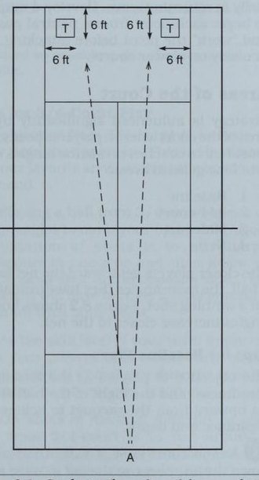
vạch cuối sân, bên ngoài đường biên hoặc trên đường chạy, yêu cầu họ đánh bóng cao và sâu để có thời gian phục hồi cho cú đánh tiếp theo.
- Khi nghi ngờ, một cú đánh sâu và xuống giữa sân sẽ làm giảm cơ hội mắc lỗi và khiến đối phương không thể tấn công.
- Nói chung sẽ an toàn hơn khi đánh bóng trở lại cùng hướng mà nó xuất phát thay vì cố gắng thay đổi hướng của nó. Ví dụ, một cú thuận tay chéo bàn sẽ dễ dàng hơn để trả lại cú thuận tay chéo bàn. Nếu bạn cố gắng thay đổi góc của mặt vợt khi tiếp xúc, thậm chí chỉ một vài độ, thì việc căn thời gian sẽ rất mong manh và đầy rủi ro.
- Chuẩn bị sớm cho mỗi lần chụp là chìa khóa cho sự nhất quán. Thúc giục các tay vợt của bạn vào vị trí sớm, chuẩn bị cho cú đánh và nhắm đến việc đánh mọi quả bóng trong vùng tấn công của họ (cao khoảng thắt lưng) với độ giữ thăng bằng tốt.
- Hầu hết các lỗi xảy ra sớm ở một điểm, đặc biệt là khi trả giao bóng. Phát triển tư duy bắt đầu mỗi điểm từ vị trí trung lập và “làm việc” với điểm trước khi tấn công, đặc biệt là trên các sân chậm hơn.
Các Khu Vực Trên Sân
Chiến lược bị ảnh hưởng đáng kể bởi khu vực sân nơi người chơi ở vị trí. Hầu hết các huấn luyện viên quần vợt đều chia sân đơn thành bốn khu vực chung: 1. Đường cơ sở 2. Sân 3/4 3. Sân giữa 4. Lưới Người chơi càng tiến gần về phía lưới để đánh bóng thì họ càng có nhiều góc để đánh một cú đánh thắng. Hình 8.2 cho thấy các góc tăng lên gần lưới như thế nào.
Mẹo Đánh Từ Cuối Sân
Mục tiêu của người chơi ở đường cuối sân là sự ổn định và đường bay của bóng phải hướng lên trên vợt để đạt được độ sâu và độ sâu của lưới.
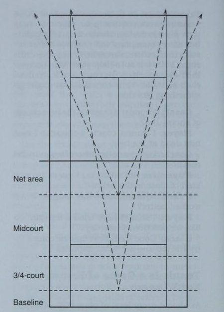
góc tăng thêm khoảng 4 feet chiều dài của sân.
- Người chơi phải học cách chia đôi góc có thể trả về. Điều này không có nghĩa là mỗi lần đấu thủ sẽ quay trở lại giữa sân mà là anh ta sẽ đứng theo đường chéo đối diện với quả bóng. Hình 8.3 cho thấy vị trí vạch cuối sân thích hợp để bao quát sân dựa trên các góc quay có thể có của đối thủ. «? Nhấn mạnh với các tay vợt của bạn rằng vị trí trên hoặc phía sau đường cuối sân là vị trí phòng thủ. Mục tiêu của họ là giữ vững, giữ vững vị trí, thay đổi các cú đánh bằng cách thay đổi độ xoáy, tốc độ và quỹ đạo, đồng thời chờ một đường bóng ngắn từ đối phương.
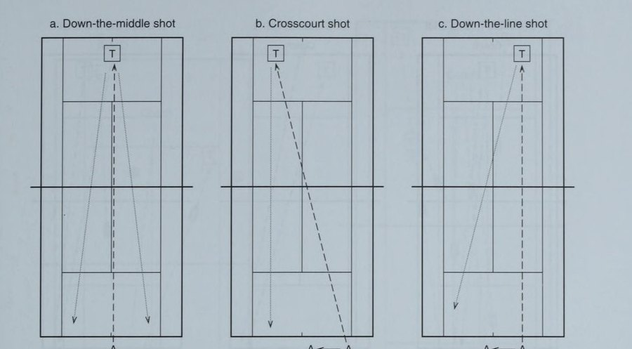
(a) Ở giữa; (b) Sân chéo; (c) Xuống dòng.
Lưu ý trong Hình 8.3a, người chơi được đặt ở giữa sân khi cú đánh của anh ta được đánh xuống giữa sân. Trong Hình 8.3b, cú đánh là cú đánh chéo bàn, do đó vị trí của người trả bóng ở ngay bên phải tâm điểm, theo đường chéo đối diện với bóng. Nếu cú đánh đi dọc đường biên như trong 8.3c, người chơi nên di chuyển về phía bên trái của tâm để chia đôi góc có thể trả bóng.
Chia đôi mục đích khoan góc. Để thực hành chia đôi góc quay trở lại.
Thủ tục. Đưa ba quả bóng cho người chơi đánh quả bóng đầu tiên vào giữa và thu hồi về giữa. Đánh quả bóng thứ hai chéo bàn và thực hiện cú đánh về bên phải chính giữa. Quả bóng thứ ba chạm xuống đường và điểm thu hồi nằm ở bên trái của điểm giữa.
Điểm huấn luyện. Sau khi người chơi hồi phục chính xác mỗi lần, hãy thêm cú đánh thứ hai. Ví dụ, người chơi đánh bóng chéo sân và thu hồi; sau đó bạn đánh quả bóng thứ hai theo hướng chéo góc về phía sau. Nếu người chơi đã di chuyển quá xa về phía trung tâm, anh ta sẽ không thể thực hiện được cú đánh thứ hai.
Mẹo khi chơi ở sân 3/4 Mục tiêu của sân 3/4 là buộc đối phương phạm lỗi. Đây là lúc để thực hiện cú đánh yêu thích của bạn, chẳng hạn như cú thuận tay từ trong ra ngoài.
à? Đánh bóng từ sân 3/4 sẽ mở ra những góc tốt hơn để di chuyển đối thủ của bạn. Một sự kết hợp tốt của các cú đánh là đánh mạnh chéo bàn sang một bên và sau đó thực hiện một cú đánh sâu về phía đối diện. Đối thủ của bạn sẽ phải che chắn rất nhiều để bắt kịp cả hai cú đánh.
#5 Khi trình độ kỹ năng của đội bạn được cải thiện, ap, hãy yêu cầu các tay vợt của bạn nhận bóng sớm khi nó nảy lên (khi nó đang lên) để giảm thời gian đối phương phải phục hồi vị trí.
a Đối với những cú đánh có độ khó trung bình, cách chơi tốt từ sân 3/4 là chạy vòng quanh điểm yếu và đánh cú đánh yêu thích của bạn. Đối với hầu hết người chơi, điều này có nghĩa là một cú thuận tay.
a) Nếu đối phương nhanh chóng bao trùm khu vực sân trống, hãy hướng bóng về phía đối phương xuất phát và buộc đối phương phải đổi hướng.
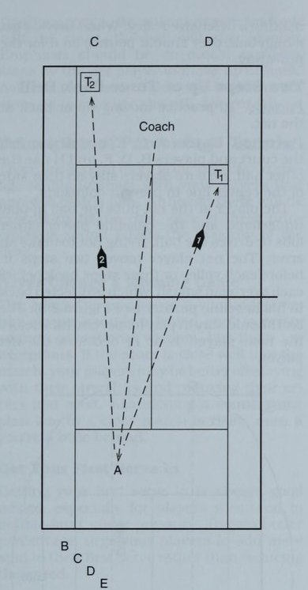
Mục đích thực hiện cú thuận tay từ trong ra ngoài. Để phát triển một cú thuận tay tấn công từ trong ra ngoài.
Thủ tục. Người chơi xếp hàng ở đường cuối sân ở phía trái tay. Đưa bóng từ phía sau vạch giao bóng, ngắn và cao về phía giữa sân 3/4. Người chơi lần lượt di chuyển lên và đánh mạnh mẽ bằng cú drive thuận tay tới T,. Cú đánh này phải được đánh chắc chắn và đường đi của bóng phải ra khỏi sân qua đường biên đơn chứ không phải đường cuối sân (xem Hình 8.5).
Điểm huấn luyện. Để thay đổi, yêu cầu người chơi thêm thuận tay xuống đường biên bằng cách đánh vào bên ngoài quả bóng và móc nó xuống đường biên. Bóng sẽ rơi sâu vào góc bên trái của bạn (T,). Sau một số lần thử, hãy để người chơi chọn cú đánh tốt nhất của mình.
Mẹo Đánh Từ Giữa Sân
Những quả bóng rơi ở giữa sân là lời mời gọi bạn thực hiện một cú đánh cưỡng bức hoặc một pha tiếp cận lưới. Đường bay của quả bóng phải thẳng và bạn nên nhắm vào độ sâu tốt.
b. Cú đánh chéo sân c. Huấn luyện viên ném bóng dọc biên $a Một quả bóng ở khu vực này của sân có thể đánh để giành điểm dứt khoát nếu bạn có thể đánh nó trên độ cao lưới. Chơi phẳng chỉ với một chút xoáy để kiểm soát, sử dụng xoáy lên hoặc xoáy xuống, tùy theo điều kiện nào phù hợp nhất với bạn.
3] Đối với các quả bóng ở dưới hoặc thậm chí ở trên lưới, hãy thực hiện một cú đánh tiến lưới dọc theo đường biên và đi theo đường đi của quả bóng về phía lưới. Điều này cho phép bạn chia đôi góc một lần nữa bằng cách giữ bạn ở cùng phía sân với quả bóng.
Cú đánh ngang sân buộc bạn phải di chuyển qua đường giữa sân cũng như tiến về phía trước để chia đôi góc. Đó là một lối chơi mạo hiểm trừ khi đối thủ của bạn có cú đánh yếu hơn đáng kể ở một bên, trong trường hợp đó bạn chỉ cần tiếp cận điểm yếu của anh ta.
es Để khiến đối thủ phải đoán sau một loạt cú đánh tiến lưới đường biên ngang, hãy tung một cú đánh sâu về phía bên kia. Nếu ngụy trang cú đánh tốt, bạn sẽ bắt được đối thủ ở sâu trong góc đối diện.
Mục đích khoan ba bóng. Rèn luyện thói quen tiếp cận lưới bằng đường bóng ngắn.
Thủ tục. Đưa một quả bóng sâu cho tay vợt đầu tiên, người này sẽ đánh bóng sâu theo chiều ngang. Nguồn cấp dữ liệu thứ hai sẽ tiếp đất ngắn và người chơi phải thực hiện một cú đánh tiến lưới dọc theo đường biên và di chuyển cú đánh đến vị trí lưới. Cú đánh cuối cùng là một cú vô lê chéo góc (xem Hình 8.6). Người chơi tiếp theo thực hiện trình tự tương tự.
Điểm huấn luyện. Sau khi người chơi đạt được một số thành công, hãy thêm quả bóng thứ tư sẽ được đưa vào dưới dạng lốp bóng. Người chơi nên đánh một cú đập từ trên đầu về phía bên trái của sân.
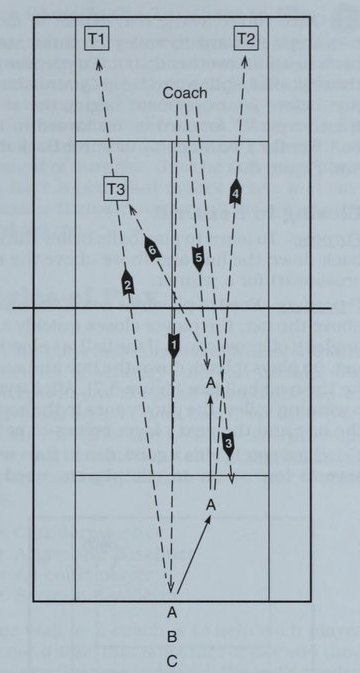
ra sân, sử dụng các góc để đưa bóng ra khỏi tầm với của đối phương.
Pai Để loại bỏ cơ hội đánh vào lưới và mở ra các góc rộng hơn, hãy áp sát lưới bằng ít nhất hai bước về phía trước để có ít nguy cơ mắc lỗi khi đối phương cố gắng vượt qua. Nếu cô ấy phản công bằng một loạt cú lốp bóng, hãy lùi lại cho đến khi cô ấy quyết tâm thực hiện cú đánh của mình.
€ 2 đối với những quả bóng dưới mức lưới, đẩy ae, bóng lùi sâu xuống vạch và chờ cơ hội tốt hơn để đánh góc. Xem bài tập Đóng lưới.
a] Đối thủ nhanh nhẹn thường sẽ chạy đua để bao quát khu vực sân rộng mở. Thỉnh thoảng hãy thử đánh vào phía sau họ để giữ cho họ trung thực.
4) Khi bạn đã ở trên lưới, hãy tiến hai bước về phía trước để thực hiện cú vô lê hoặc lùi lại ba bước để thực hiện cú đánh từ trên cao. Để chuẩn bị cho cú đánh tiếp theo, hãy tách bước và giữ thăng bằng ngay trước khi đối thủ bắt đầu cú đánh, sau đó “nổ” về phía trước hoặc phía sau quả bóng. Xem bài tập Hai bước lên hoặc Ba bước lùi.
Bài Tập Áp Sát Lưới
Mục đích. Để học cách chơi những quả bóng phía dưới lưới dọc theo đường biên và những quả bóng phía trên lưới chéo sân để giành chiến thắng.
Thủ tục. Nạp cho người chơi trên lưới. Nếu bóng ở trên lưới, người chơi sẽ nhanh chóng đóng lại và nghiêng nó ra khỏi sân. Nếu bóng ở dưới lưới, anh ta sẽ đánh nó trở lại vạch và chờ quả bóng tiếp theo. Sau khi thực hiện cú vô lê thắng lợi, tay vợt này đi về cuối hàng và tay vợt tiếp theo vào lưới.
thực hiện cú vô lê phòng thủ. Khi họ nhận được bóng cao, họ nên lao vào để thực hiện cú ném xa.
Mục đích khoan hai bước lên hoặc ba bước lùi. Để thực hành di chuyển lên hoặc trở lại lưới.
Thủ tục. Người chơi A, C, E và G sử dụng một nửa sân và người chơi B, D, F và H sử dụng nửa sân còn lại. Đảm bảo người chơi đứng về phía đường giữa của mình để tránh va chạm.
Tay vợt trên lưới đặt bóng ở vị trí thuận tay và tay vợt cuối sân lốp bóng hoặc lái bóng, cố gắng không phạm lỗi. Người chơi trên lưới di chuyển hai bước trước mỗi cú vô lê hoặc lùi lại ba bước trước mỗi cú đập từ trên đầu, hướng trở lại đối tác cơ bản của anh ta. Bóng phải tiếp tục chơi trong vài cú đánh trước khi tay vợt tiếp theo, E hoặc F, trở thành tay vợt trên lưới.
nửa sân, bóng sẽ ở lại. Người chơi lưới phải nhấn mạnh vào các bước đi nhanh chóng, bùng nổ để tiến lên hoặc lùi lại. Yêu cầu người chơi trên lưới quan sát người đánh cuối sân để tìm manh mối về việc cô ấy sẽ đánh bóng hay lốp bóng.
Nguyên Tắc Quần Vợt Tỷ Lệ
Có một số nguyên tắc khác về tỷ lệ phần trăm quần vợt để chia sẻ với người chơi của bạn áp dụng cho trận đấu. Mặc dù sẽ có những ngoại lệ đối với quy tắc này, nhưng trong phần lớn trường hợp, mỗi nguyên tắc này đều là lời khuyên đúng đắn.
Đừng Đổi Lối Chơi Đang Thắng
Câu ngạn ngữ “không bao giờ thay đổi một ván thắng, nhưng luôn thay đổi một ván thua” nghe khá là khôn ngoan thông thường, nhưng vẫn có những trường hợp ngoại lệ. Nếu tỷ số gần sát với trận đấu, tốt hơn hết các tay vợt của bạn nên giữ vững điểm mạnh của mình và giảm thiểu lỗi một chút. Việc từ bỏ kế hoạch trò chơi âm thanh vào cuối một trận đấu sát nút là rất rủi ro, ngay cả khi bạn bị tụt lại phía sau một chút.
Hãy Vào Sân Với Giao Bóng Một
Bắt quả giao bóng đầu tiên của bạn luôn là lời khuyên tốt, đặc biệt đối với những người chơi có xu hướng mắc lỗi kép dưới áp lực. Để đạt được tỷ lệ phần trăm tốt hơn, hãy khuyến khích người chơi của bạn tăng thêm độ xoáy trong lần giao bóng đầu tiên thay vì giảm tốc độ.
Tận Dụng Điều Kiện Thời Tiết
Hầu hết người chơi quần vợt đều khó chịu vì nắng chói, gió, nóng, ẩm và lạnh. Huấn luyện người chơi của bạn không chỉ khả năng chịu đựng các yếu tố mà còn sử dụng chúng để làm đối thủ thất vọng. Điều này có nghĩa là bạn phải luyện tập trong những điều kiện đó và điều chỉnh các cú đánh cũng như chiến lược cho phù hợp. Các cú đánh có thể phải được rút ngắn vào những ngày có gió mạnh và bạn có thể cần độ xoáy nhiều hơn để kiểm soát bóng trong gió.
Sử dụng điểm mạnh của bạn vào các điểm quan trọng Không nghi ngờ gì nữa khi bạn muốn người chơi thực hiện các kết hợp chiến thắng trong một trận đấu chặt chẽ. Những cú đánh rơi, những cú vô lê chạm và những góc quay dễ thương sẽ bị đặt ra ngoài vòng pháp luật khi tỷ số đang ở gần. Đơn giản là quá mạo hiểm nếu chỉ dựa vào một cú chạm nhẹ dưới áp lực.
Điều này thường đúng, đặc biệt là khi chơi với một đối thủ đã phạm lỗi không đáng có trong suốt trận đấu. Đột nhiên đối mặt với thất bại, cô trở nên vững vàng như một tảng đá và không mắc lỗi. Điều này đòi hỏi sự luyện tập, quyết tâm và có lẽ cả yếu tố bất ngờ. Chỉ cần đảm bảo rằng người chơi của bạn có một kế hoạch hợp lý và nhấn mạnh điểm mạnh của họ cũng như điểm yếu của đối thủ.
Các Phong Cách Chơi
Khi người chơi của bạn cảm thấy thoải mái với các nguyên tắc chiến lược và có thể thực hiện các khái niệm này trong thực tế, họ nên phát triển một phong cách chơi riêng dựa trên điểm mạnh và điểm yếu cụ thể của họ. Mặc dù sẽ có nhiều biến thể về chủ đề, phong cách chơi thường rơi vào một trong bốn loại: • Người phản công • Người đánh bóng chủ động • Người chơi toàn sân • Người giao bóng và vô lê Nhiệm vụ của bạn với tư cách là huấn luyện viên là giúp mỗi người chơi chọn một phong cách phù hợp với mình và sau đó lập kế hoạch thời gian luyện tập để phát triển các kỹ năng cần thiết để sử dụng phong cách đó trong trận đấu.
Để chọn phong cách chơi, hãy dành chút thời gian với mỗi người chơi để phân tích khả năng của họ trong ba lĩnh vực: • Khả năng thể chất • Kỹ năng chơi vợt • Tính cách cạnh tranh Hầu hết các tay vợt trẻ sẽ có một hoặc nhiều người chơi tham gia giải đấu chuyên nghiệp mà họ ngưỡng mộ. Thật không may, việc lựa chọn hình mẫu của họ không phải lúc nào cũng dựa trên phong cách chơi. Bạn cần giúp họ chọn những người chơi sử dụng Phong cách phù hợp để họ bắt chước. Khuyến khích họ xem băng video về các tay vợt yêu thích đang thi đấu để hình ảnh trực quan trở nên rõ ràng và mạnh mẽ hơn.
Phẩm Chất Cần Thiết
Trong một buổi học vào một ngày mưa, tôi đang dẫn dắt một nhóm thảo luận gồm các cô gái 14 và 15 tuổi về tầm quan trọng của những tấm gương.
Tôi yêu cầu mỗi người viết tên hình mẫu của mình lên một tờ giấy cùng với những đặc điểm mà họ ngưỡng mộ ở người chơi.
Hãy tưởng tượng sự ngạc nhiên của tôi khi mọi cô gái trừ một người đều chọn Stefan Edberg làm hình mẫu cho mình! Rõ ràng là họ bị thu hút bởi vẻ ngoài điển trai và phong thái lịch thiệp của anh ấy nhưng lại bỏ qua phong cách chơi giao bóng và vô lê của anh ấy, vì không ai trong số những cô gái này có phong cách đặc biệt đó.
Tôi đã học được điều gì đó từ trải nghiệm đó: Tốt nhất là người chơi nên xác định đầy đủ hình mẫu của họ, bao gồm cả cách họ nhìn trên sân và cách họ phản ứng với đấu trường cạnh tranh.
Mặc dù những cô gái này thích xem Edberg thi đấu, nhưng không ai trong số họ sẽ cải thiện trò chơi của cô ấy bằng cách mô phỏng phong cách giao bóng và vô lê của anh ấy.
Chúng ta hãy xem xét bốn phong cách về khả năng thể chất, kỹ năng dùng vợt và tính cách cạnh tranh thường đi kèm với mỗi phong cách. So sánh đặc điểm của người chơi với phong cách mà họ chọn để bắt chước để xem liệu có phù hợp hay không.
Lối Chơi Phản Công
Kiểu người chơi này thường phát triển từ phong cách truy bắt và coi việc trả bóng trong mỗi cú đánh là một điều vinh dự. Trong môn quần vợt cấp cơ sở, những tay vợt này được gọi là “người đẩy bóng” vì họ thường đánh với tốc độ thấp và sử dụng những quả bóng mặt trăng hình vòng cung cao như cú đánh bánh mì và bơ của mình. Khi người chơi trưởng thành, họ có thể tiến bộ từ phong cách đẩy bóng thành một kẻ phản công hợp pháp.
Các đặc điểm thể chất cần thiết cho phong cách này là kỹ năng di chuyển tuyệt vời và sự nhanh nhẹn. Thể chất cũng là một yếu tố quan trọng vì khả năng ghi điểm và thi đấu lâu dài là rất cao. Phòng thủ là sức mạnh của một kẻ phản công, vì vậy những cú đánh nề ổn định, những cú vô-lê chính xác và những cú lốp bóng có kiểm soát tốt là những kỹ năng cần thiết. Những tay đấm phản công thường cảm thấy thoải mái nhất khi chơi sau đường cuối sân và thành công hơn trên các sân chậm, đặc biệt là sân đất nện.
Tính cách cạnh tranh
kẻ phản công được đánh dấu bằng sự kiên nhẫn, quyết tâm và thái độ “không bao giờ nói chết”. Những người chơi này là những chiến binh yêu thích chiến đấu nhưng thường không chấp nhận rủi ro. Những hình mẫu bao gồm: Michael Chang, Sergio Bruguera, Arantxa Sanchez-Vicario và Amanda Coetzer.
Để phát triển phong cách phản đòn, hãy khuyến khích các bài tập nhấn mạnh tính nhất quán và sự tập trung vào các động tác đánh nề, chẳng hạn như bài tập phản công được thảo luận bên dưới. Yêu cầu người chơi của bạn chơi 100 quả bóng mà không mắc lỗi và sau đó thách thức họ phá kỷ lục trước đó. Nên sử dụng các mục tiêu trên sân để nhắm tới độ sâu và cải thiện độ chính xác của các cú đánh nề. Bạn cũng có thể căng một sợi dây phía trên lưới cách mặt đất từ 6 đến 8 feet để chúng quen với việc nhắm mục tiêu cao. Đương nhiên, cú lốp bóng là vũ khí quan trọng của một tay đấm phản công, vì vậy các bài tập yêu cầu lốp bóng qua cây vợt dang rộng của người chơi trên lưới sẽ rất hữu ích, đặc biệt là về phía trái tay.
Mục đích phản công. Để luyện tập lối chơi phòng thủ.
cú giành điểm từ quả bóng ngắn. Người phản công phải bảo vệ đường biên cuối sân và không được tiếp cận lưới. Người chiến thắng là người đầu tiên giành được 21 điểm.
Điểm huấn luyện. Đây là một bài tập mệt mỏi, đòi hỏi sự kiên nhẫn và tập trung. Mặc dù bài tập này có thể không phù hợp với phong cách của mọi người, nhưng tất cả các tay vợt của bạn đều có thể hưởng lợi từ nó vì sẽ luôn có điểm trong một trận đấu khi họ phải dựa vào kỹ năng phòng thủ của mình để thoát khỏi khó khăn.
Các chiến lược để thi đấu với một tay đấm phản công đòi hỏi sự kiên nhẫn trong việc thực hiện các cú đánh vì bạn có thể mong đợi được thấy rất nhiều bóng bay qua lưới. Tận dụng những quả bóng ngắn vào lưới để có thể kết thúc điểm, nhưng hãy thay đổi các cú đánh tiến lưới của bạn để khiến kẻ phản đòn phải đoán. Bạn có thể ra lệnh chơi vì phong cách của anh ấy là phản ứng hơn là tự mình thực hiện hành vi phạm tội. Một mưu đồ hiệu quả khác là kéo anh ta vào lưới, nơi anh ta có thể không chắc chắn, và khai thác sự thiếu quen thuộc và tự tin của anh ta với những cú vô lê và đánh đầu.
người phản công thích chạy song song, vì vậy thay vào đó hãy thách thức anh ta bằng chuyển động lên và lùi.
Người Đánh Cuối Sân Hung Hãn
Một số người chơi sẽ tiến bộ từ kẻ phản đòn thành kẻ tấn công cơ bản hung hãn khi kỹ năng và sức mạnh của họ được cải thiện khi luyện tập và quá trình trưởng thành tự nhiên. Phong cách này đòi hỏi sự nhanh chóng trong việc thiết lập các cú đánh cũng như sức mạnh cơ bắp và sức bền để đánh bóng với tốc độ khi có sơ hở.
Một tay vợt ném bóng hung hãn thường được bố trí trên hoặc ngay bên trong đường cuối sân để tận dụng những quả bóng đánh nề ngắn và đang cầu xin được tấn công. Không có gì lạ khi người chơi này có cách cầm thuận tay thiên về phía tây và trái tay bằng hai tay. Những cú drive xoáy lên mạnh mẽ là nền tảng của trò chơi tấn công của người chơi cơ bản cùng với khả năng thực hiện những cú đánh thắng lợi ở vạch biên. Ít nhất một phát súng phải là vũ khí mà cô ấy có thể tin cậy trong mọi tình huống. Tính cách cạnh tranh của cô ấy bao gồm sự hung hăng có tính toán và sẵn sàng chấp nhận một số rủi ro. Những người chơi này thích dốc hết sức để giành chiến thắng, nhưng chỉ khi tỷ lệ cược nghiêng về họ. Những hình mẫu hiện tại trong quần vợt chuyên nghiệp bao gồm Steffi Graf, Monica Seles, Lindsay Davenport, Jim Courier, Andre Agassi và Andrei Medvedev.
Người đánh bóng chủ động tấn công phải phát triển các cú đánh cơ bản xuyên thấu và tiếp đất sâu trong sân. Cô ấy nên thực hiện động tác bằng chân chính xác và giữ thăng bằng ổn định để có thể thực hiện các cú đánh cưỡng bức từ bóng cao, bóng thấp, bóng ngắn và chống lại mọi kiểu xoáy. Một bài tập đơn giản nhưng hiệu quả là yêu cầu vận động viên ném biên chủ động đánh 90% số cú đánh của cô ấy vào góc trái tay của đối phương. Điều này sẽ cải thiện khả năng khai thác cú đánh yếu của đối thủ của cô ấy.
Một bài tập hay khác là yêu cầu một đấu thủ đánh chéo sân và đấu thủ khác ở cuối đường để ghi điểm. Người đầu tiên kiếm được 15 điểm sẽ thắng. Sau đó, người chơi sẽ chuyển hướng đánh của mình cho ván tiếp theo.
Bởi vì những người chơi cơ bản hung hãn đang chế tạo ít nhất một phát bắn thành vũ khí, họ phải thực hành cú bắn đó hàng nghìn lần cho đến khi thành thạo. Hầu hết người chơi đều thích phát triển cú thuận tay, nhưng đừng bỏ qua tiềm năng của cú trái tay, đặc biệt là những cú trái tay bằng hai tay.
Mục đích sử dụng vũ khí của bạn. Để mở sân và sử dụng vũ khí của bạn để đánh một phát thắng.
Thủ tục. Đưa bóng cho tay vợt A, người này đánh một cú thuận tay chéo sâu. Quả bóng thứ hai từ bạn tiếp đất với độ ngắn vừa phải và A lăn một đường chéo có góc nhọn với xoáy lên để kéo đối phương ra xa. Người chơi thứ hai, B, đứng ở đường cuối sân, đánh quả bóng thứ ba bằng đường chéo trái tay của cô ấy về phía A, người này bước vào và đánh một quả trái tay bằng hai tay thắng lợi dọc theo vạch.
Điểm huấn luyện. Bằng cách mở sân và di chuyển đối thủ của mình ra ngoài đường biên đánh đơn, cô ấy đã thiết lập được cú đánh trái tay ở đường dưới yêu thích của mình. Hãy chắc chắn nhấn mạnh động tác chân tuyệt vời và sự cân bằng trong cú đánh này.
Khi tay vợt của bạn có được sự tự tin, cô ấy nên nhận bóng sớm khi đang dâng lên để giảm thời gian hồi phục của đối thủ.
Khi đối đầu với một tay vợt ném bóng hung hãn, điều quan trọng là giữ bóng tránh xa cú đánh lớn của cô ấy bằng cách thay đổi tốc độ và độ xoáy của cú đánh của bạn. Cô ấy thích sức mạnh, vì vậy hãy giảm tốc độ các cú đánh của bạn và kết hợp các cắt thấp với các quả cầu mặt trăng có độ cong cao vào giữa sân để tránh tạo góc để cô ấy đánh cú giành điểm. Bởi vì những người bắn hung hãn thường dựa vào một phát bắn làm vũ khí, bạn có thể cần phải đánh vào sức mạnh của cô ấy trước để khai thác bên yếu hơn. Một người chơi cơ bản năng nổ muốn điều khiển lối chơi, vì vậy bạn sẽ cần phải kết hợp lối chơi và giành quyền kiểm soát điểm càng sớm càng tốt.
Tay Vợt Toàn Diện
Những tay vợt có phong cách này thường khỏe mạnh, nhanh nhẹn và có kỹ năng di chuyển xuất sắc. Nhu cầu bao quát toàn sân và thực hiện cú đánh đòi hỏi sức bền và thể lực cao.
Kỹ năng chơi vợt là vũ khí chính xác dành cho những người chơi trên mọi mặt sân, những người có xu hướng hướng về kiểu cầm vợt phía đông và kiểu xoay hình elip nhỏ gọn. Vì lối đánh đa dạng nên họ cần phải học để trở thành những tay vợt hoàn thiện nên thường mất nhiều thời gian hơn để những tay vợt này phát triển. Đừng ngạc nhiên nếu những tay vợt có phong cách này của bạn bắt đầu chơi thứ quần vợt tốt nhất của họ vào gần cuối năm trung học.
Những người chơi trên toàn sân là những người thực hiện cú đánh thích biến điều gì đó thành hiện thực. Họ dễ dàng chuyển từ phòng thủ sang tấn công và thích sự đa dạng của các cú đánh. Thường được trang bị một kế hoạch trò chơi linh hoạt, người chơi trên toàn sân sẽ thăm dò cho đến khi họ bộc lộ điểm yếu của đối thủ. Trong giải đấu chuyên nghiệp, các tay vợt trên toàn sân có xu hướng thi đấu tốt bất kể mặt sân như thế nào. Những hình mẫu điển hình bao gồm: Pete Sampras, Michael Stich, Jana Novotna và Gabriela Sabatini.
Quyết định khó khăn nhất của người chơi toàn sân là phần nào trong trò chơi của anh ta cần nhấn mạnh. Hầu hết thời gian, anh ấy sẽ chơi quần vợt tấn công và cố gắng ghi lưới ở mọi đường bóng ngắn. Đôi khi đối đầu với những đối thủ cụ thể, anh ta có thể thấy hiệu quả hơn khi sử dụng một kế hoạch trò chơi nhằm khắc phục điểm mạnh của đối thủ. Nhiều người chơi allcourt không có một vũ khí nổi bật nào nhưng cân bằng điều đó bằng cách không có điểm yếu rõ ràng. Họ chơi tốt ở mọi vị trí trên sân.
người chơi phải yêu cầu họ chơi một hiệp thông thường nhưng thưởng cho họ 2 điểm thay vì 1 điểm cho mỗi điểm họ giành được trong một cú vô lê hoặc cú đập bóng qua đầu. Điều này sẽ khuyến khích họ vào lưới càng nhanh càng tốt để dứt điểm. Trọng tâm chính của các bài tập dành cho tay vợt chơi toàn sân phải là những cú đánh từ giữa sân. Họ phải phát triển những cú đánh tiến lưới chắc chắn từ cả hai bên và nỗ lực giành chiến thắng cho ít nhất một bên, vì họ thường có thể chạy xung quanh để thực hiện cú đánh yêu thích của mình trên một quả bóng ngắn. Những cú đánh thả từ cả thuận tay và trái tay đều là những sự bổ sung tốt miễn là chúng không bị lạm dụng quá mức. Tất cả các cú đánh ở giữa sân của họ phải được thực hiện với cây vợt và sự chuẩn bị cơ thể giống hệt nhau để ngụy trang cho cú đánh của họ. Bởi vì các tay vợt toàn sân thường muốn chiếm lưới bất cứ khi nào có thể, nên các bài tập nhấn mạnh vào các cú đánh ở giữa sân (ví dụ: Giao bóng yếu) là cách luyện tập tuyệt vời và thú vị khi chơi.
Mục đích giao bóng yếu. Để kiểm tra khả năng thực hiện các cú đánh giữa sân và giành điểm.
Thủ tục. Hai đấu thủ thi đấu trong một sét thông thường với cách tính điểm bình thường ngoại trừ người giao bóng (A) chỉ nhận được một quả giao bóng phải được thực hiện bằng tay từ tay của anh ta và dưới mức thắt lưng. Người nhận bóng (B) phải đánh bóng bằng thuận tay trên sân deuce nếu anh ta thuận tay phải và bằng trái tay trên sân quảng cáo.
Người nhận bóng phải thực hiện cú trả bóng và lao vào lưới cho cú đánh tiếp theo, nếu không sẽ mất điểm. Đương nhiên, anh ta nên thử các cú đánh tiến lưới, đánh lái thắng hoặc bỏ cú đánh (xem Hình Các điểm huấn luyện. Trò chơi này sẽ nhanh chóng bộc lộ điểm yếu trong trò chơi chuyển tiếp. Người chơi có thể sẽ thua cú giao bóng của mình. Một khi người chơi của bạn hiểu ra, họ sẽ thích trò chơi này. Còn cách nào tốt hơn để luyện tập kỹ thuật “chipand-charge” mà bạn muốn họ sử dụng để đối phó với cú giao bóng thứ hai yếu?
cú đánh để mở rộng sân rồi hướng bóng sang phía bên kia để buộc đấu thủ phải bao quát toàn bộ sân.
Giao Bóng và Lên Lưới
Những người chơi giao bóng và đánh vô-lê có xu hướng cao với tầm tiếp cận tốt và sự nhanh nhẹn, những cú đánh đầu mạnh mẽ và một cú chạm nhẹ nhàng, khéo léo.
Rõ ràng một cú giao bóng lớn là rất quan trọng đối với người giao bóng và vô lê, cũng như một cú đập bóng trừng phạt từ trên cao. Tay nhanh và những cú vô lê xuyên thấu là điều cần thiết trên lưới. Bởi vì những tay vợt này cảm thấy thoải mái nhất khi ở trên lưới, họ nên thực hành các cú đánh ở giữa sân và tiếp cận một cách đáng tin cậy. Cú giao bóng thứ hai nông hoặc yếu nên bị tấn công và đưa vào lưới.
Những người chơi giao bóng và đánh vô-lê có xu hướng hướng về kiểu cầm vợt phía đông hoặc thậm chí kiểu châu lục vì việc thay đổi cách cầm vợt phải rất nhanh và các cú giao bóng, vô lê, đánh đầu và các cú đánh tiến lưới cắt thường được đánh với cùng một kiểu cầm vợt. Những tay vợt này cần phải có tính cách năng nổ trên sân và quyết tâm biến điều gì đó thành hiện thực. Điểm có xu hướng ngắn và rủi ro cao nên không có chỗ cho những người yếu tim. Những hình mẫu trong chuyến lưu diễn chuyên nghiệp bao gồm Martina Navratilova, Lori McNeil, Stefan Edberg và Boris Becker.
Để phát triển phong cách chơi giao bóng và vô lê, bạn phải bắt đầu bằng cách tạo ra một cú giao bóng thực sự là một vũ khí. Người chơi sẽ cần phải có khả năng chỉ huy một cú giao bóng cứng, chủ yếu là phẳng, luôn ở mức thấp sau khi nảy, một cú giao bóng cắt để đánh góc rộng hoặc đường cong vào cơ thể người nhận và một cú giao bóng xoáy hoặc cú đá thứ hai đáng tin cậy. Mỗi kiểu giao bóng đều có hiệu quả nếu nó liên tục đi sâu vào ô giao bóng với các vị trí khác nhau.
Thuyết phục người chơi của bạn rằng chỉ tốc độ sẽ không tạo ra con át hoặc cú trả bóng yếu. Dạy họ giao bóng rộng để kéo đối thủ ra khỏi sân. Cho họ thấy lợi thế của việc giao bóng vào góc bên trong của ô giao bóng để giảm góc trả giao bóng có thể xảy ra. Chỉ ra rằng một cú giao bóng không thường xuyên ngay tại người nhận sẽ làm cản trở cô ấy và thường tạo ra một cú trả giao bóng yếu. Tất nhiên cú giao bóng có hại nhất chỉ đơn giản là một cú đánh vào điểm yếu của đối thủ.
Cuối cùng, bạn nên mong đợi một người giao bóng và đánh vô-lê có quyền chỉ huy 18 cú giao bóng khác nhau, bao gồm các cú giao bóng cắt, phẳng và đá cho từng khu vực trong số sáu khu vực mục tiêu. Tạo ra các trò chơi và cuộc thi giữa những người chơi tương tự như Vòng quanh thế giới trong môn bóng rổ. Mỗi đấu thủ luân phiên cố gắng thực hiện liên tiếp 18 cú giao bóng khác nhau. Khi ai đó bỏ lỡ, người chơi tiếp theo sẽ thay phiên nhau. Bạn cũng có thể thử chơi Horse, một trò chơi bóng rổ khác ở sân. Một người chơi thực hiện một cú giao bóng và người chơi tiếp theo trong hàng phải bắt chước cùng một kiểu giao bóng ở cùng một vị trí. Nếu trượt, anh ta có chữ h. Người chơi đầu tiên đánh vần con ngựa sẽ thua và bị loại khỏi trò chơi.
ba cảnh quay yêu cầu số lần lặp lại rất lớn. Cơ hội rất lớn là nếu người giao bóng và đánh vô-lê của bạn có thể thực hiện cú giao bóng, bước tách và cú vô lê đầu tiên một cách nhất quán và tự tin, thì họ sẽ giành chiến thắng một cách dứt khoát trong trò chơi giao bóng của mình.
Khi bạn háo hức thực hiện giao bóng và đánh vô-lê, đừng bỏ qua khả năng thành thạo các cú đập trên đầu. Trên thực tế, những tay vợt lao vào lưới và áp sát các cú vô lê góc xa có khả năng bị thử thách bởi những cú lốp bóng. Không có cú đánh nào trong quần vợt kiểm tra thể lực của người chơi nhiều hơn, đánh thú vị hơn và bỏ lỡ tinh thần hơn so với cú đập bóng. Sử dụng bài tập Overhead 10 làm cơ sở và thay đổi mức độ khó bằng cách yêu cầu đặt sâu trong sân hoặc luân phiên sang bên trái hoặc bên phải.
Chi phí chung 10 ose. Để thu hồi lưới và đập vỡ chiến thắng trên cao.
Thủ tục. Người chơi bắt đầu ở vị trí lưới bình thường ở giữa đường giao bóng và lưới. Cô ấy chạy về phía trước và chạm vợt vào lưới khi huấn luyện viên hoặc người trung chuyển ném một cú lốp bóng qua đầu cô ấy. Cô ấy lùi lại ba bước và nhảy, sử dụng cú đá kéo bằng chân để giữ thăng bằng và đánh vào cú đập trên đầu. Cô ấy phục hồi ngay lập tức và chạy về phía trước để chạm vào lưới một lần nữa và lặp lại trình tự cho đến khi đánh được 10 cú đập.
Điểm huấn luyện. Khi người chơi cải thiện kỹ năng của mình, bạn có thể tăng độ khó của các cú lốp bóng. Bạn cũng nên thực hiện cú đập hướng chéo bàn tới mục tiêu để tận dụng góc dài hơn và giảm nguy cơ mắc lỗi. Đây là một bài tập tuyệt vời để rèn luyện sức khỏe, thi đấu đồng đội và đối phó với áp lực. Một số hiệp tập này là một thử thách về thể chất và tinh thần!
Khi đối đầu với một người giao bóng và vô lê, điểm sẽ phát triển nhanh chóng, vì vậy bạn sẽ cần phải sớm nắm bắt lợi thế ngay từ thời điểm đó. Thúc đẩy hoặc thực hiện cú trả bóng của bạn dưới chân cô ấy khi cô ấy lao vào lưới và đánh phần lớn các cú trả bóng của bạn cũng như chuyền các cú đánh dọc biên để cô ấy có ít thời gian hơn để cắt bóng. Lob sớm trong trận đấu để làm chậm việc cô ấy đưa bóng vào lưới. Nếu cú giao bóng của cô ấy thực sự là một vấn đề đối với bạn khi trả bóng, hãy thay đổi vị trí của bạn ở đường cuối sân bằng cách tiến vào và thực hiện một vài cú trả bóng ở mức thấp hoặc lùi lại một vài bước để có thời gian đánh lái hoặc lốp bóng trả bóng.
Luyện tập phong cách chơi Các tay vợt trong đội của bạn sẽ có phong cách chơi khác nhau, vì vậy các buổi luyện tập phải được cấu trúc để rèn luyện các kỹ năng và kiểu đánh mà họ cần phát triển. Đây là lúc bạn cần phải sáng tạo trong việc ghép đôi mọi người để tập luyện. Trong giai đoạn học tập, những người chơi có cùng phong cách chơi nên được ghép đôi với nhau để rèn luyện các kỹ năng cụ thể xác định phong cách của họ. Khi họ có được kỹ năng và sự tự tin, hãy cho họ cơ hội để kiểm tra phong cách của mình trước những người chơi có phong cách khác nhau.
Bước tự nhiên tiếp theo là giúp người chơi phân tích mối liên hệ giữa hai phong cách chơi đối lập nhau trong trận đấu. Họ cần học cách điều chỉnh kế hoạch trận đấu của mình dựa trên phong cách của đối thủ. Nếu tất cả bốn phong cách chơi không được các thành viên trong đội của bạn thể hiện, hãy tuyển dụng một số người chơi trưởng thành trong cộng đồng của bạn để chuẩn bị cho đội của bạn đối mặt với một loại. Các khái niệm chính về chiến lược đánh đơn được trình bày trong chương này như sau: • Giúp người chơi của bạn hiểu rằng chiến lược đánh đơn dựa trên các nguyên tắc tỷ lệ phần trăm quần vợt.
- Dạy người chơi của bạn phân tích điểm mạnh và điểm yếu trong trò chơi của họ và của đối thủ.
- Xây dựng kế hoạch cho mỗi người chơi để giúp anh ta phát triển phong cách chơi phù hợp với thể lực, kỹ năng cầm vợt và tính cách thi đấu của mình.
- Tạo cơ hội cho người chơi của bạn rèn luyện kỹ năng của họ để chiến đấu với từng phong cách chơi có thể có của đối thủ.
trò chơi mà họ có thể thấy trong trận đấu. Bạn cũng nên bao gồm một người thuận tay trái để mỗi tay vợt của bạn đã đối mặt với một người thuận tay trái trong luyện tập trước khi mùa giải bắt đầu.
Chiến Thuật Đánh Đôi
Từ cấp trung học đến giới chuyên nghiệp, hầu hết các đội đánh đôi thành công đều có hai thành phần: khả năng tương thích và giao tiếp tốt. Khả năng tương thích bắt đầu từ việc các cú đánh của người chơi bổ sung cho nhau khi đội áp dụng các nguyên tắc cơ bản về âm thanh nhân đôi. Giao tiếp cho phép đội đôi thực hiện chiến thuật như một đơn vị và hỗ trợ lẫn nhau cho dù chiến thuật đó có thành công hay không. Một đội đôi giỏi có thể trở nên vĩ đại hơn nữa bằng cách chơi cùng nhau trong thời gian dài. Việc che chắn cho nhau khi một điểm diễn ra trở nên tự động đối với các thành viên của một đội đánh đôi kỳ cựu.
Chương 9 a Ss See or rs a vu ~CPZOD40p Các đội đôi có tỷ lệ phần trăm cao đôi tự tạo cho mình cơ hội thành công cao nhất nếu việc tạo ra cú đánh mà họ sử dụng trong khi chơi giảm thiểu các lỗi không đáng có. Việc sử dụng tỷ lệ cú đánh cao trong khi thi đấu cho phép một đội phát triển các vị trí sức mạnh trên sân đánh đôi. Những vị trí này có thể được tận dụng khi đối phương bị kéo ra khỏi vị trí, cho phép thực hiện một cú đánh nề kết thúc điểm hoặc bằng cách vào lưới với tư cách là một đội trước và giành điểm bằng một cú vô lê.
Giao Bóng Một Vào Sân
Trong nội dung đánh đôi, đội giao bóng giành được 75% số điểm khi người giao bóng nhận được quả giao bóng đầu tiên. Hãy dạy người chơi của bạn sử dụng cú giao bóng xoay 3/4 tốc độ làm lần giao bóng đầu tiên khi giao bóng, điều này sẽ cho phép người giao bóng nhận được tỷ lệ cao trong số lần giao bóng đầu tiên trong trận đấu. Cơ hội tiếp đất sâu trong vòng cấm của một cú giao bóng xoáy sẽ giúp người giao bóng quay trở lại, đồng thời giúp người giao bóng có thêm thời gian di chuyển về phía trước để thực hiện cú vô lê đầu tiên thành công. Dạy người chơi của bạn chống lại sự cám dỗ để đánh một cú giao bóng đầu tiên phẳng lớn trong nội dung đôi. Người giao bóng nên sử dụng cú giao bóng đầu tiên “lớn” của mình để thay đổi nhịp độ, đôi khi gây bất ngờ cho đối thủ và khiến họ mất thăng bằng. Hãy nhớ rằng đội đánh đôi của bạn càng tham gia giao bóng nhiều thì cơ hội giữ được giao bóng càng lớn.
Cả Đội Lên Lưới Trước
Chơi đôi hiệu quả nhất khi một đội tận dụng mọi cơ hội để vào lưới. Cả hai thành viên của đội phải luôn tìm cách áp sát. Khi một đội đã thiết lập được vị trí lưới, họ có khả năng đánh xuống phần sân của đối thủ, điều này thường mang lại tỷ lệ chiến thắng cao. Đừng để các tay vợt của bạn rơi vào bẫy buộc phải vào lưới. Truyền cho các đội đánh đôi của bạn bản năng nhận biết các cơ hội để áp sát lưới mà không lao đầu vào thảm họa bằng cách lao vào lưới một cách ngu ngốc không đúng lúc.
Đánh Về Giữa Sân
Đánh đôi thường được mô tả là một trò chơi góc độ. Tuy nhiên, nguyên tắc đầu tiên của đánh đôi là đánh càng nhiều bóng vào giữa sân càng tốt. Dạy người chơi của bạn chống lại việc đánh quá nhiều quả bóng dọc theo đường biên hoặc ở những góc nhọn. Các con hẻm đôi làm tăng chiều rộng của sân tennis và mặc dù có hai người chơi bao trùm khu vực sân được mở rộng này, khu vực mục tiêu có tỷ lệ phần trăm cao nhất là ở khu vực giữa.
Thỉnh thoảng, một cú đánh dọc biên có thể đóng vai trò như một sự thay đổi tốc độ tuyệt vời để giữ cho tay vợt trên lưới không di chuyển vào giữa sân quá thường xuyên, nhưng hãy cảnh báo các tay vợt của bạn sử dụng chiến thuật này một cách tiết kiệm, ngay cả khi đối thủ của họ đang dụ dỗ họ đánh đầu. Đánh lên trên vạch có nghĩa là cú đánh của bạn đi qua lưới ở điểm cao nhất và có khu vực mục tiêu nhỏ nhất để chạm tới.
Cố gắng tạo góc bằng cách ép các cú đánh chéo sân có thể gây ra những cạm bẫy tương tự như những cú đánh dọc biên. Khi các tay vợt của bạn thực hiện các cú đánh góc, hãy dạy họ duy trì một phạm vi sai số an toàn bằng cách nhắm vào khu vực mục tiêu bên trong đường biên đôi.
Yêu cầu người chơi đánh đôi của bạn kiên nhẫn ghi điểm. Chờ cơ hội để tạo thế mạnh trên lưới và thực hiện những cú vô lê ở giữa sân. Hoặc thỉnh thoảng di chuyển ra khỏi vị trí để thực hiện một cú đánh tiếp đất thắng lợi ở giữa. Các đội đôi giữ phần lớn lối chơi ở giữa sân và chống lại sự cám dỗ đi xuống biên hoặc tạo ra những góc nhọn sẽ có cơ hội thành công cao hơn nhiều.
Buộc đối thủ của bạn đánh lên Nhiều người chơi đánh đôi ở trường trung học phản ứng trước mối đe dọa của đối thủ trên lưới bằng cách đánh quá mạnh các cú đánh nề của họ. Nhắc nhở người chơi của bạn rằng chậm và thấp sẽ hiệu quả hơn nhiều so với cứng và cao. Thiết lập ưu tiên chiến thuật để cố gắng khiến đối thủ tấn công để đội của bạn có thể áp sát và hạ gục. Cách tốt nhất để tận dụng lợi thế là thực hiện những cú đánh thấp dưới chân đối phương bất cứ khi nào có thể, nhưng đặc biệt là khi trả giao bóng. Chiến thuật này cũng có thể được sử dụng khi trao đổi cú vô lê. Một cú vô lê nhẹ, thấp thường tạo ra một cú vô lê cao và dễ dàng bỏ qua.
Phân Công Khi Đánh Đôi
Mỗi đấu thủ đánh đôi trên sân có trách nhiệm cụ thể để tối đa hóa cơ hội thành công của đội. Các đội đánh đôi kỳ cựu không chỉ biết trách nhiệm chính của mình là gì mà còn có thể đoán trước cách đối tác của họ sẽ phản ứng trong hầu hết các tình huống và phản ứng phù hợp. Dạy các đội đánh đôi của bạn cách phản ứng với hầu hết các tình huống cho dù họ là người giao bóng, đối tác của người giao bóng, người nhận hay đối tác của người nhận. Sau khi người chơi của bạn đã hiểu rõ trách nhiệm chính của mình, hãy tập trung vào giao tiếp giữa các đối tác để nhóm hoạt động như một khối thống nhất.
Một cú giao bóng đôi được thực hiện đúng cách sẽ ngay lập tức đưa đội giao bóng vào thế mạnh. Khi ở vị trí này, việc khai thác điểm yếu về chiến thuật hoặc sản xuất cú đánh của đối thủ trở nên dễ dàng hơn nhiều. Dưới đây là trách nhiệm của người giao bóng trong nội dung đánh đôi: • Đảm nhận vị trí giao bóng ở đường cuối cùng giữa vạch giữa và đường biên đánh đơn để bao phủ một nửa sân đánh đôi của bạn.
- Có được tỷ lệ giao bóng đầu tiên cao trong trận đấu, với độ sâu và độ xoáy.
- Thay đổi vị trí dịch vụ.
- Di chuyển về phía trước để chia đôi các góc có thể có của người quay lại.
- Thực hiện cú vô lê đầu tiên chắc chắn, thấp và sâu.
- Bảo vệ sân mở nếu đối tác của bạn cướp điểm.
- Truyền đạt hướng dẫn bằng lời nói cho đối tác của bạn nếu cần thiết.
Trách nhiệm của Đối tác của Người giao bóng Giao tiếp giữa người giao bóng và đối tác trước khi giao bóng cho phép cả nhóm làm việc đồng loạt. Sau khi người giao bóng thực hiện một cú giao bóng thành công, tính di động trên lưới của đối tác của người giao bóng là chìa khóa thành công. Hãy ghi nhớ những trách nhiệm này đối với đối tác của người giao bóng: • Đặt mình ở giữa đường biên đơn và đường biên giao bóng trung tâm, khoảng nửa đường trong hộp giao bóng.
- Sử dụng tín hiệu tay để xác định vị trí giao bóng và để cho biết ý định của bạn là câu trộm hoặc ở lại.
- Phản ứng với bất kỳ cú trả bóng ngắn, nhẹ nào bằng cách tung chúng xuống giữa hoặc dưới chân đối tác của người nhận bóng.
- Tiến lại gần lưới để cướp điểm.
- Duy trì hoạt động tích cực nhất có thể bằng cách sử dụng đồ giả đầu và vai để đánh lạc hướng người nhận.
Trách nhiệm của người nhận Giao bóng trả giao bóng có vẻ kém và bị trượt từng inch. Dạy người chơi của bạn tìm kiếm cơ hội tấn công sau khi trả giao bóng. Dưới đây là trách nhiệm của người nhận giao bóng: • Đặt mình càng gần ô giao bóng càng tốt, đồng thời đảm bảo rằng bạn vẫn có thể trả giao bóng một cách nhất quán.
- Đưa được càng nhiều bóng trả lại vào cuộc càng tốt—khiến đội kia chơi.
- Trả bóng chủ yếu theo đường chéo.
- Giữ cú trả bóng ở mức thấp để thực hiện cú vô lê • Di chuyển về phía trước bất cứ khi nào có thể.
- Đánh bóng và tính điểm cho bất kỳ cú giao bóng thứ hai ngắn nào.
- Giao bóng theo yêu cầu trên các quả bóng rộng ngoài ô giao bóng bên lề đơn.
- Bảo vệ sân mở nếu đối tác cướp điểm.
Trách nhiệm của đối tác của người nhận giao bóng Đối tác của người nhận giao bóng nên cố gắng làm bất cứ điều gì có thể hỗ trợ người nhận giao bóng thực hiện cú trả giao bóng thành công. Dưới đây là một số mẹo dành cho người chơi đó: • Đặt mình ở vị trí ở vạch giao bóng ở giữa đường biên đánh đơn và đường trung tâm của hộp giao bóng.
- Gọi tất cả các cú giao bóng cho đối tác của bạn trong khu vực đường giao bóng và đường giao bóng trung tâm.
- Cắt bỏ những vật trôi nổi trong tầm với của lưới.
- Bao quát con hẻm, đặc biệt là sau một cú giao bóng rộng.
- Che phần giữa khi sân được mở ra do đồng đội của bạn trả bóng yếu.
Giao tiếp giữa đối tác của người giao bóng và người giao bóng có thể được thực hiện bằng lời nói trước mỗi điểm hoặc bằng cách sử dụng tín hiệu tay. Các tín hiệu tay quần vợt thông thường được mô tả trong Bảng 9.1. Tất nhiên, người giao bóng có thể không đồng ý bằng lời nói với bất kỳ dấu hiệu nào bằng cách nói không; tuy nhiên, nếu người giao bóng đồng ý với các tín hiệu bằng tay do đối tác của mình đưa ra, cô ấy phải thừa nhận từng dấu hiệu được đưa ra. Nếu người giao bóng không đồng ý với tín hiệu đưa ra, người chơi nên trao đổi bằng lời trước khi bắt đầu điểm.
Bảng 9.1 Các tín hiệu tay trong quần vợt phổ biến Tín hiệu tay khi cướp điểm © Bàn tay mở ra sau lưng Nắm tay khép lại sau lưng Một ngón tay duỗi thẳng xuống phía sau lưng Để đặt giao bóng Một ngón tay ra sau lưng Hai ngón tay ra sau lưng Ba ngón tay ra sau lưng Đôi Phong cách chơi Có nhiều phong cách chơi đôi thành công. Khi phong cách của hai tay vợt trong đội đôi hòa hợp tốt thì cơ hội thành công sẽ tăng lên rất nhiều. Rất nhiều đội đánh đôi thành công bao gồm một tay vợt có phong cách và tính khí ổn định và một tay vợt khác có phong cách hung hãn. Người chơi ổn định di chuyển bóng xung quanh trong khi người chơi hung hãn tìm cách kết thúc điểm. Ngoài ra, tay vợt năng nổ, người có thể có tính cách dễ thay đổi hơn, có thể giữ cho đội luôn tràn đầy cảm xúc trong khi tay vợt kiên định hơn giữ cho đôi chân của đội đứng vững trên mặt đất. Do đó đạt được sự cân bằng cảm xúc.
Tất nhiên điều này không có nghĩa là hai tay vợt cơ bản hoặc những tay vợt cực kỳ hung hãn không thể hợp tác đánh đôi và đạt được thành công.
Tuy nhiên, chiến thuật họ sử dụng trong trận đấu phải làm nổi bật điểm mạnh của họ.
Nếu cả hai thành viên trong đội sẵn sàng làm bất cứ điều gì cần thiết để giúp đội giành chiến thắng, thì bất kỳ hai phong cách chơi nào cũng có thể kết hợp tốt với nhau.
Chơi song song Một đội đôi nên cố gắng chơi cạnh nhau bất cứ khi nào có thể. Chơi song song sẽ loại bỏ khoảng trống được tạo ra khi một người chơi ở trên và người kia ở sân sau. Đây là lý do tại sao người giao bóng hoặc người trả lại dịch vụ nên nắm bắt mọi cơ hội để tiến về phía trước và Người chơi tin nhắn đang cướp điểm Người chơi đang ở lại Người chơi đang giả vờ cướp điểm Giao bóng rộng rãi Giao bóng vào cơ thể Giao bóng ở giữa tham gia cùng đồng đội của anh ta trên lưới. Cả đội không chỉ phải chơi vai kề vai mà còn phải cùng nhau di chuyển sang phải hoặc sang trái khi theo dõi bóng khi ở phần sân đối phương. Nếu một cú đánh được đánh vào góc trái của sân đối phương, tay vợt bên trái của bạn nên di chuyển theo hướng đó để che lối đi, trong khi đồng đội của anh ta di chuyển vào giữa để chia đôi góc trả bóng có thể có.
Chơi song song cũng nên được áp dụng khi đội trong lưới bị một cú lốp bóng phòng thủ đẩy ra khỏi lưới. Cả hai người chơi nên rút lui, trong đó người chơi theo dõi quả bóng đã lốp bóng rút lui xa nhất. Với cả hai người chơi hiện đang ở cuối sân, không có khoảng trống nào được tạo ra giữa các người chơi để đối phương tấn công.
Cả Hai Lên Lưới
Khi một đội đánh đôi với những cú vô lê chắc chắn và những cú đánh đầu tận dụng mọi cơ hội để vào lưới, cơ hội giành điểm của đội đó sẽ tăng lên 65%. Khi đã ở trên lưới và sử dụng lối chơi song song, một đội có thể cô lập một tay vợt đối phương ở đường cuối sân. Có thể tạo ra một hình tam giác để tất cả các quả vô lê đều được đánh trả lại một đối thủ ở đường cuối sân cho đến khi một pha trả bóng yếu cho phép đội ở lười kết thúc điểm. Khái niệm hai chọi một này cho phép hai người chơi trên lưới tiếp tục áp sát vào lưới. Nếu cả hai thành viên của đối phương đều chơi lại, pha trả bóng của họ cuối cùng sẽ cho phép đội ở lưới đánh một cú góc giành điểm. Nếu đối phương đang chơi một lên và một lùi, thì cuối cùng, cú trả bóng của họ sẽ cho phép đội kết thúc vô-lê giành điểm ở giữa hoặc vào chân người ở lưới. Giao bóng và vô lê Người giao bóng nên thực hiện một quả giao bóng xoáy xuống giữa (hoặc góc trong) của ô giao bóng của đối phương thường xuyên nhất có thể để giảm bớt các góc trả giao bóng có thể có. Tùy thuộc vào trình độ kỹ năng của đối thủ, việc giao bóng rộng cho bên yếu hơn cũng có thể tạo cơ hội giao bóng và tiến về phía trước. Sau khi giao bóng, người giao bóng phải di chuyển về phía trước cho đến khi người trả giao bóng bắt đầu chuẩn bị thực hiện cú đánh của mình. Tại thời điểm này, nên chia bước để người giao bóng có thể tăng khả năng di chuyển theo chiều ngang. Cú vô lê đầu tiên rất quan trọng đối với cơ hội của người giao bóng nếu cô ấy muốn cùng đồng đội của mình lên lưới. Cú vô lê đầu tiên phải được đánh chắc chắn để tay vợt lưới đối phương không thể xâm nhập và đủ sâu để tay vợt ở cuối sân bị ghim ở đó. Khi ở trên lưới, người giao bóng có thể tham gia cùng đồng đội của mình để chơi song song. Chip và Charge Một cú giao bóng thứ hai yếu được thực hiện trong thời gian ngắn trong ô giao bóng là cơ hội tuyệt vời để người nhận giao bóng cùng đồng đội của mình lên lưới. Người nhận bóng phải di chuyển vào bên trong đường cuối sân nếu anh ta lùi sâu vào sân đối phương và di chuyển vào phía sau lượt trả bóng. Cú chip (một cú trả bóng cắt) thường nảy thấp. Sau đó, người giao bóng phải đối mặt với một quả bóng thấp, quả bóng này thường được đánh vào lưới của đội. Xoáy xuống trên quả bóng được tạo ra bởi cú cắt làm bóng chậm lại, giúp người lên lưới có thời gian để thực hiện cú vô lê tốt. Nhưng hãy thận trọng khi thử chip và sạc. Rất nhiều tay vợt trung học lao đầu vào rắc rối vì họ chưa hoàn thiện được cú trả giao bóng cắt. Nếu người giao bóng trả bóng sử dụng xoáy lên, đối thủ ở cuối sân sẽ có bóng tốt để đánh trả và thường có thể khiến người lên lưới mất thăng bằng. Vì vậy, khi sử dụng thao tác chipand-charge, hãy luôn sử dụng cắt để giữ bóng ở mức thấp và cho người lên lưới có thời gian vào lưới.
Đấu Với Đội Hai Người Lên Lưới
Nếu đội đôi của bạn có xu hướng phòng thủ hoặc thường xuyên rút lui khỏi lưới, họ cần phát triển một số chiến lược hợp lý để đối phó với một đội hung hãn liên tục chiếm lưới. Cách chơi cơ bản để đưa một đội ra khỏi lưới là sử dụng một cú lốp bóng phòng thủ. Nhưng hãy cẩn thận với các tay vợt của bạn không cố gắng lốp bóng qua đầu của đội ở lười, vì điều này thường dẫn đến một cú đánh đầu dễ dàng. Thực hành đánh những cú lốp bóng cao, sâu với mục đích chính là di chuyển đội tấn công ra khỏi lưới, điều này cho phép đội của bạn tiến vào và chiếm thế mạnh.
Nếu đội ở lười chơi ở vạch giao bóng mà không áp sát, cách chơi tốt nhất là chơi bóng mềm dưới chân đội ở lười, thường khiến họ trả bóng về phần sân của đội phòng thủ. Điều này sẽ cho phép đội phòng thủ tiến về phía trước và giành điểm bằng một cú đánh tiếp đất. Nếu đội ở lười thực hiện cú vô lê ngắn, đội cuối sân có thể đánh một quả bóng mềm rộng để tạo sơ hở mà họ có thể khai thác sau đó bằng cách thực hiện một cú đánh thắng lợi ở giữa. Hãy luyện tập những tình huống này thường xuyên để các đội đánh đôi của bạn sẵn sàng thực hiện chúng trong khi thi đấu.
Một Lên Lưới, Một Ở Sau
Như đã đề cập trước đó, chơi một người lên và một người lùi là nguy hiểm vì nó làm lộ ra một lỗ lớn ở giữa, nơi hầu hết các cú đánh được thực hiện. Tuy nhiên, nếu kỹ năng của người chơi ở cấp độ mới bắt đầu, đội hình này có thể là lựa chọn duy nhất của bạn. Nhiều đội đánh đôi ở trường trung học thua trận vì không thể giao bóng và bắt vô lê. Các huấn luyện viên không nghi ngờ gì sẽ đọc về các kỹ thuật đánh đôi thích hợp và yêu cầu các tay vợt của họ cố gắng giao bóng và đánh vô-lê ngay cả khi các tay vợt chưa sẵn sàng thực hiện điều đó. Nếu người chơi của bạn mất nhiều điểm hơn số điểm họ giành được khi cố gắng vào lưới, hãy thử chơi một lên và một lùi.
Giao Bóng Và Ở Sau
Nếu người chơi của bạn không thể liên tục thực hiện một cú giao bóng xoáy sâu vào ô giao bóng hoặc nếu cú vô lê đầu tiên của họ vẫn đang trong giai đoạn hình thành, họ nên giao bóng và lùi lại. Ngay cả khi người giao bóng không có ý định lao vào lưới ngay lập tức, cô ấy nên được dạy bước vào bên trong đường biên sau khi giao bóng. Bằng cách bước vào sân đấu, cô ấy tận dụng được cơ hội để tiến về phía trước. Bởi vì chiến thuật lùi lại sau khi giao bóng này sẽ mời người trả giao bóng di chuyển vào lưới, nên các cú đánh tiếp theo của người giao bóng phải được giữ chéo bàn và sâu. Nếu đối tác của người quay về thường xuyên cướp điểm, hãy thử lốp bóng. Điều này có nghĩa là người trả bóng phải lấy lại cú lốp bóng, điều này tạo ra một lỗ ở giữa để đội giao bóng có thể khai thác.
Đỡ Giao Bóng Và Ở Sau
Chiến thuật trả giao bóng và giữ nguyên ở vạch cuối sân có thể hiệu quả nếu đội đánh đôi của bạn có thế mạnh trên mặt đất nhưng có cú vô lê tương đối yếu. Khi đội về phần lớn thời gian ở lại, họ rất dễ bị đội bóng áp sát vào lưới thực hiện những cú vô lê góc cạnh. Vì vậy, nhiệm vụ chính của các đội dựa vào chiến thuật cơ bản là giữ đối thủ càng xa lưới càng tốt. Cú trả bóng mềm, thấp ở chân của người lao vào lưới thường tạo ra một cú trả bóng ngắn mà đội cuối sân có thể khai thác. Lobbing và góc nghiêng, cũng như những cú đánh nề mạnh, là những kỹ năng cần có của các đội đánh đôi vẫn ở đường cuối sân. Việc lấy bóng và bị đội cuối sân kéo lên và lùi lại có thể gây mệt mỏi và khó chịu đối với một đối thủ đánh đôi hung hãn. Khi trận đấu diễn ra, những chiến thuật như vậy có thể gây ra những lỗi không đáng có của đội đánh đôi hung hãn vì đội cuối sân kiên nhẫn ở sâu trong sân.
Đánh Về Giữa Sân
Vũ khí tự nhiên để chống lại một đội chơi một phía trên và một phía sau là tung cú vô lê vào giữa hai tay vợt, điều này có thể được thực hiện bằng cách vào lưới càng nhanh càng tốt. Khi đã vào lưới, một trong hai đấu thủ có thể thực hiện các pha trả bóng chéo sân và giành điểm bằng một cú vô lê dễ dàng ở giữa sân. Hướng dẫn đội ở lười của bạn vào vị trí ở giữa những nơi có thể trả về. Hãy dụ người chơi ở cuối sân thử thực hiện một cú đánh có tỷ lệ phần trăm thấp trên đường biên hoặc một đường chéo góc nhọn có thể gây ra lỗi không đáng có. Chiến thuật tạo hình tam giác giữa hai tay vợt trên lưới và tay vợt cuối sân của đội đánh đôi đối phương khiến cho việc tạo ra một cú trả bóng mềm hoặc cao có thể thực hiện được cú vô lê dưới chân người chơi lưới là tương đối dễ dàng.
Cả Hai Ở Sau
Chơi đôi đôi khi sẽ yêu cầu cả hai người chơi phải ở lại vạch cuối sân—một chiến thuật phòng thủ thường được sử dụng khi mọi thứ không theo ý bạn. Tuy nhiên, đôi khi cách tiếp cận khác biệt này có thể thay đổi diễn biến trận đấu. Ưu điểm của chiến thuật này là nó có thể giảm áp lực cho người giao bóng hoặc người đánh trả đã để đối tác của mình trên lưới với lối chơi yếu. Mặc dù bạn nên sử dụng giao diện này chủ yếu để thay đổi nhịp độ, nhưng nếu người chơi đánh đôi của bạn là những người mới bắt đầu không thoải mái khi vào lưới, đội hình cơ bản có thể tạo ra sự khác biệt giữa thành công và thất bại.
Giao Bóng Khi Bạn Ở Sau
Đội hình này thường được sử dụng nhiều nhất bởi đội có giao bóng yếu. Các cú giao bóng mềm có thể khiến đối tác của người giao bóng trên lưới phải chịu những cú trả bóng mà cô ấy không thể xử lý được. Nếu tay vợt của bạn có quả giao bóng đầu tiên khá tốt nhưng quả giao bóng thứ hai rất yếu, hãy để đối tác của cô ấy lên lưới trong lần giao bóng đầu tiên và lùi cô ấy về vạch cuối cùng trong lần giao bóng thứ hai. Với cả hai người chơi ở vạch cuối sân sau khi thực hiện cú giao bóng, họ phải di chuyển cùng nhau như một đội qua đường cuối sân trong khi thực hiện các động tác đánh nề.
Khi Cả Hai Ở Sau
Chiến thuật này có thể được sử dụng bởi bất kỳ đội đánh đôi nào để mang lại cho đội giao bóng một cái nhìn khác. Tuy nhiên, việc chơi cả hai quả giao bóng ngược lại thường được sử dụng nhiều nhất khi tỷ lệ trả giao bóng quá cao, tạo ra những cú vô lê dễ dàng cho đội giao bóng. Khi cả hai đấu thủ trở lại đội lượt về, áp lực sẽ giảm bớt cho người về có đối tác là một con vịt ngồi trên lưới. Người trả bóng thường lấy lại sự an toàn về mặt cảm xúc mà không bị áp lực phải bảo vệ đồng đội của mình trên lưới bằng một pha trả bóng chéo sân.
Đấu Với Đội Hai Người Ở Sau
Khi đội của bạn gặp một đội đánh đôi giỏi chơi cả hai, từ khóa chính là sự kiên nhẫn. Các đội phòng thủ đôi sẵn sàng chờ đợi đội hung hãn mắc lỗi không đáng có. Nhiều trận đấu đôi ở trường trung học đã bị thua bởi một đội cảm thấy rằng họ đã sử dụng chiến lược đúng đắn bằng cách vô tình lao vào lưới mọi cơ hội.
Giữ quả trả bóng ở mức thấp, tốt nhất là bằng cắt, để đội cuối sân phải đánh bóng lên. Tiếp cận lưới một cách thận trọng. Nếu tay vợt ném biên thường xuyên lốp bóng, hãy dừng ngay bên trong vạch giao bóng thay vì tiến gần hơn đến lưới. Điều này sẽ cho phép đội ở lười biến những cú lốp bóng ngắn thành điểm từ trên cao. Nếu đội cuối sân thực hiện những cú đánh nề mạnh, hãy áp sát lưới để dễ thực hiện những cú vô lê ở giữa hoặc các góc. Thỉnh thoảng thực hiện những cú đánh ngắn khi người giữ bóng thực hiện những cú đánh nhẹ nhàng dưới chân bạn. Điều này sẽ đẩy nhóm cơ bản đến nơi họ không cảm thấy thoải mái.
Sơ Đồ Chữ I
Đội giao bóng nên sử dụng cách căn chỉnh thông thường trong hầu hết thời gian. Tuy nhiên, khi đội giao bóng gặp một người trả giao bóng có cú trả giao chéo bàn tuyệt vời, đội hình I có thể là câu trả lời. Trong đội hình chữ I, người đứng trên đường trung tâm của ô giao bóng và ở vị trí càng thấp càng tốt để người giao bóng không đánh anh ta. Giao tiếp giữa các đối tác đánh đôi sử dụng đội hình I là rất quan trọng. Người chơi ở lưới ra hiệu cô ấy sẽ bao quát bên nào và cô ấy muốn người giao bóng giao bóng ở đâu. Sau khi giao bóng, người giao bóng phải bao phủ khu vực mà người trên lưới bỏ trống.
Sự hình thành này khiến người quay lại mất tập trung và làm cho tỷ lệ hoàn trả cuối cùng có tỷ lệ phần trăm thấp trở nên hấp dẫn hơn. Nó cũng làm cho một cú trả bóng chéo sân chắc chắn khó thực hiện hơn vì người chơi ở lưới có thể di chuyển theo hướng đó và trả bóng để giành điểm. Khi thi đấu với đội hình chữ I, hãy ghi nhớ những nguyên tắc đơn giản này. Quay trở lại phần giữa thường xuyên hơn so với căn chỉnh dịch vụ thông thường. Người bắt đầu điểm ở giữa sẽ di chuyển theo hướng này hay hướng khác khi quả giao bóng được thực hiện, điều này sẽ mở ra khoảng giữa cho bạn trả giao bóng. Nếu bạn bị phân tâm bởi chuyển động, hãy lốp bóng một cú mà người giao bóng sẽ phải thực hiện, vô hiệu hóa bất kỳ lợi thế nào mà người đang di chuyển trên lưới có thể có.
Bài tập đôi Các bài tập sau đây sẽ giúp đội đánh đôi của bạn cải thiện trò chơi của họ.
Mục đích đôi nửa sân. Để thực hành giao bóng đôi, trả bóng, bắt vô lê đầu tiên và kết thúc theo đường chéo lưới.
Thủ tục. Bài tập này mô phỏng lối chơi đôi giữa hai người chơi. Người chơi được bố trí ở các vạch cuối sân đối diện. Một người là người giao bóng và người kia là người trả lại. Họ chỉ có thể thực hiện các cú đánh chéo sân khi đã ghi được điểm (xem Hình 9.1).
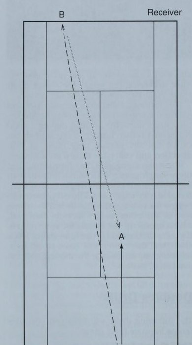
Điểm huấn luyện. Hướng dẫn người giao bóng và thực hiện cú vô lê, vì người giao bóng trả lại sẽ cố gắng chip và tính phí bất kỳ cú giao bóng nào chạm tới ô giao bóng. Bài tập này giúp loại bỏ sự mất tập trung của cả bốn người chơi đánh đôi trên sân và cho phép hai người chơi tập trung vào các nguyên tắc cơ bản của đánh đôi chéo sân mà không phải lo lắng về việc có người cướp điểm vào lưới.
Mục đích của bài tập đôi. Để phát triển một trò chơi chuyển tiếp tốt hơn với tư cách là một đội đôi.
Thủ tục. Hai người chơi là một đội trên lưới và hai người chơi khác là một đội ở đường cuối sân. Từ giữa sân phía sau đội ở lười, bạn đưa bóng ngắn xuống giữa sân cho đội cuối sân. Khi đội cơ bản tiến về phía trước, họ sẽ trả lại nguồn cấp dữ liệu ở giữa. Điểm được tính khi tất cả các tay vợt cố gắng cản phá cú vô lê (xem Hình 9.2). Ngay sau khi điểm kết thúc, đội cuối sân tiếp theo được cho ăn một quả bóng khác và trình tự được lặp lại.
Điểm huấn luyện. Việc trả lại nguồn cấp dữ liệu ngắn ở mức thấp cho đội đã ở trên lưới mang lại sự luyện tập tuyệt vời cho đội di chuyển từ đường cuối sân vào lưới. Điều này cũng mô phỏng các tình huống trận đấu trong đó các cú vô lê phải được chặn lại trên lưới.
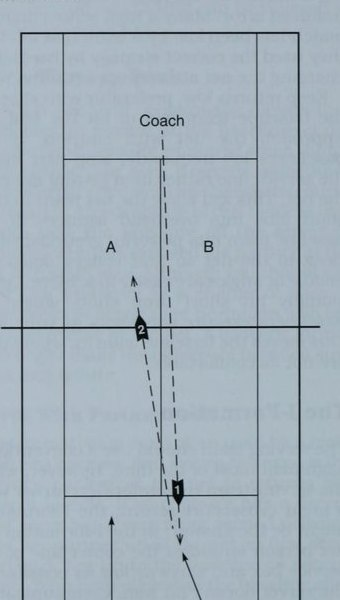
ose. Để luyện tập lối chơi chuyển tiếp cho một đội đánh đôi cùng nhau di chuyển từ đường cuối sân vào lưới.
Thủ tục. Tất cả bốn tay vợt của hai đội đánh đôi đều xuất phát ở vạch cuối sân. Một người chơi bắt đầu trận đấu bằng cách đưa bóng từ tay mình cho đội ở đường biên đối diện. Các tay vợt chỉ được tiến lên khi đội đối phương đánh bóng ngắn. Chơi có thể được ghi tới 15 điểm.
Điểm huấn luyện. Một bài tập tuyệt vời để kêu gọi các đội đánh đôi cùng nhau tiến lên. Nhấn mạnh sự giao tiếp của nhóm khi họ tiếp cận. Yêu cầu người chơi gọi bóng bằng cách nói “của tôi”.
Tấn Công Và Phòng Thủ Khi Đánh Đôi
đội thắng điểm, họ ghi được 1 điểm cho đội của mình. Trò chơi kết thúc khi một đội ghi được 10 điểm.
Điểm huấn luyện. Đây là một trận đấu tuyệt vời để kết thúc buổi tập vào những ngày bạn tập trung vào đánh đôi. Nhấn mạnh với người chơi của bạn về tầm quan trọng của tinh thần đồng đội. Yêu cầu người chơi cao hơn ở bậc thang chịu trách nhiệm giao tiếp tích cực với đồng đội của cô ấy bất kể tỷ số của trò chơi có thể là bao nhiêu. Mục đích Lob phòng thủ. Để luyện tập các tình huống đánh đôi với cả bốn người chơi ở phía sau.
đội đánh đôi thứ hai, ở vị trí ở đường biên đối diện, không thể tiến lên trừ khi cú lốp bóng ngắn. Nếu đội truy đuổi giành được điểm, họ sẽ đổi chỗ cho đội bắt đầu ở đường cuối sân. Đội tiếp theo vào sân và tiếp tục thi đấu. Điểm huấn luyện. Nhắc đội lấy được cú lốp bóng sâu để thực hiện một cú lốp bóng sâu về phía đối thủ. Khuyến khích các tay vợt tiến về phía trước với tư cách một đội nếu thực hiện được một cú lốp bóng ngắn hoặc cú đánh nề.
Mục đích đánh đôi bên trong vạch cuối sân. Thực hiện tất cả các cú đánh bên trong đường cuối sân và không lùi về phía sau đường cuối sân đến vị trí yếu.
Thủ tục. Hai đội đánh đôi có vị trí ở vạch cuối sân đối diện nhau. Một đấu thủ bắt đầu trao đổi bằng cách đưa bóng ngay sau vạch giao bóng cho đội đối phương. Người chơi không thể rút lui về phía sau đường cuối sân vì bất kỳ lý do gì. Điểm được chơi cho phép một đội tiến về phía trước và kết thúc điểm bằng một cú vô lê.
Điểm huấn luyện. Bài tập này khiến các đội đánh đôi có ý thức giữ thế mạnh trên sân và không lùi bước.
Khuyến khích các đội tiến về phía trước khi có thể và thực hành kêu gọi mỗi lần bắn bằng một quả mìn lớn. Việc kêu gọi thực hiện cú đánh đôi theo cách này sẽ thiết lập sự cam kết của người chơi thực hiện cú đánh (chứ không phải là nhận xét phụ thuộc hơn của bạn).
King-/Queen-of-the-Hill Đôi ose. Để tiến tới sân 1—nơi đội đánh đôi hàng đầu thi đấu—và từ chối tất cả những người thách đấu.
Thủ tục. Trận đấu bắt đầu trên ba sân với bốn ván đấu được chơi, cho phép mỗi người chơi giao bóng một ván. Nếu mỗi đội thắng hai ván thì sẽ thi đấu tiebreak để xác định đội thắng trên sân đó.
Trận đấu dừng lại trên mỗi sân khi có chiến thắng Tóm tắt • Khả năng tương thích và giao tiếp là những yếu tố tạo nên một đội đánh đôi tốt.
- Sử dụng tỷ lệ cú đánh cao trong trận đấu đôi sẽ phát triển các thế mạnh trên sân.
- Nhận được càng nhiều cú giao bóng đầu tiên càng tốt bằng cách sử dụng cú giao bóng xoáy tốc độ ba phần tư.
- Đội nên tiến về phía lưới bất cứ khi nào có thể.
- Một đội đánh đôi nên thực hiện tỷ lệ đánh bóng vào giữa sân đánh đôi cao.
- Các đội đánh đôi nên cố gắng đánh đối thủ khi họ tiến gần đến lưới.
- Đội đánh đôi, không phải hai cá nhân trong đội, phải là ưu tiên hàng đầu của người chơi.
- Đội đánh đôi thi đấu song song giúp loại bỏ lỗ hổng phòng thủ ở giữa sân.
- Hướng dẫn đội đánh đôi của bạn đặt phần lớn các cú giao bóng ở giữa trừ khi người nhận giao bóng bị thiếu hụt cú đánh ở cả hai bên.
- Dạy các đội đánh đôi của bạn thực hiện hầu hết các cú đánh tiến lưới để giữ bóng ở mức thấp và buộc đối thủ phải đánh theo đội đang đến.
- Chủ yếu sử dụng bất kỳ đội hình đánh đôi nào phù hợp nhất với phong cách chơi tự nhiên của đội đánh đôi của bạn.
- Đội hình chữ I có thể được sử dụng để lấy đi cú trả bóng chéo bàn của người nhận bóng.
Đội nào ở sân 2 và 3 dẫn trước khi trận đấu dừng ở sân 1 là đội chiến thắng. Điều này ngăn cản các trận đấu chậm khiến hai sân còn lại phải chờ đợi và cho phép việc luân chuyển các đội diễn ra cùng một lúc. Đội thua ở sân số 3 ở lại nếu không có đội nào đang chờ để vào thi đấu hoặc sẽ luân phiên ra khỏi sân đến cuối hàng chờ nếu có đội đang đợi. Đội thắng ở sân 3 sẽ lên sân 2. Đội thua ở sân 2 ở lại sân 2, nhưng đội thắng ở sân 2 sẽ lên sân 1 với tư cách là người thách đấu cao nhất. Nếu người thách đấu hàng đầu đánh bại vua/nữ hoàng của đồi đôi, họ sẽ trở thành người thống trị mới. Đội bị truất ngôi di chuyển về cuối hàng chờ của các đội.
Điểm huấn luyện. Khuyến khích các đối tác di chuyển sang phải và trái để lấy các cú đánh nề song song để không có lỗ hổng ở giữa.
Huấn Luyện Trận Đấu
Chuẩn Bị Cho Trận Đấu
Sau vài tuần luyện tập căng thẳng về kỹ năng quần vợt, rèn luyện thể chất và kỹ năng tinh thần, việc chuẩn bị cho các trận đấu đồng nghĩa với việc giúp mỗi người chơi phát triển một kế hoạch thi đấu cụ thể. Như đã đề cập ở các chương trước, kế hoạch trò chơi đó được xây dựng dựa trên nguyên tắc tỷ lệ phần trăm quần vợt cũng như điểm mạnh và điểm yếu của người chơi. Bạn đã có thời gian để dạy và thực hành các kỹ năng và chiến lược chơi theo tỷ lệ phần trăm cũng như đánh giá điểm mạnh và điểm yếu của từng cá nhân. Thành phần cuối cùng cần được hoàn thiện và bổ sung vào phương trình là một báo cáo trinh sát về phe đối lập. Thông tin này sẽ cho phép người chơi của bạn lập kế hoạch trò chơi cá nhân dựa trên các trận đấu ¢ nguyên tắc về tỷ lệ quần vợt, * điểm mạnh và điểm yếu của người chơi cũng như điểm mạnh và điểm yếu của đối thủ.
Chuẩn bị cho phe đối lập Báo cáo trinh sát chỉ có thể hữu ích cho người chơi của bạn nếu nó chính xác, dễ hiểu và dễ áp dụng vào kế hoạch trò chơi (xem Hình 10.1). Kiến thức về những gì mong đợi từ đối thủ sẽ giúp người chơi của bạn thư giãn, giảm bớt lo lắng và tập trung vào nhiệm vụ trước mắt.
Người chơi do thám Trường Lớp Ngày Điểm trận đấu Thuận tay phải hay tay trái? (khoanh tròn một)
Lối chơi: (khoanh tròn một)
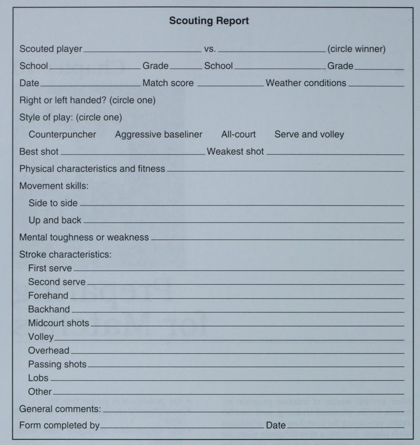
Mặt khác, báo cáo trinh sát kém có thể gây tổn hại đến sự tự tin và tư thế sẵn sàng của các tay vợt khi trận đấu đang diễn ra. Các kế hoạch trò chơi được xây dựng dựa trên thông tin sai lệch chắc chắn sẽ thất bại và sự tự tin sẽ nhanh chóng phai nhạt. Ngay cả thông tin tốt cũng ít được sử dụng nếu nó quá phức tạp và chi tiết để người chơi của bạn tiếp thu, hiểu và đưa vào lối chơi chiến thuật.
_ Lớp Điều kiện thời tiết Giao bóng trên toàn sân và cú vô lê Cú đánh yếu nhất Bạn có thể thấy rằng một số tay vợt thi đấu tốt nhất mà không biết gì về đối thủ của họ vì loại trò chơi họ chơi và họ thiếu kinh nghiệm trong việc sử dụng thông tin do thám. Ví dụ, một tay vợt giao bóng và đánh vô-lê biết rằng anh ta muốn chiếm lưới ở mọi cơ hội bất kể phong cách của đối thủ. Tốt nhất có thể chỉ cung cấp những thông tin tối thiểu để tăng lượng thông tin như vậy khi họ có được kinh nghiệm và sự tự tin. Vào thời điểm bạn đạt được giải đấu vô địch, nơi các tay vợt thường đối mặt với đối thủ lần thứ hai trong mùa giải, các tay vợt của bạn có thể sẵn sàng hơn để áp dụng thông tin trinh sát.
Báo Cáo Thăm Dò
Mẫu báo cáo trinh sát đơn giản được hiển thị trong Hình 10.1 có thể được bạn, trợ lý huấn luyện viên hoặc người chơi sử dụng một cách hiệu quả. Sau khi hoàn thành biểu mẫu, hãy giữ nó trong sổ đội và sao chép cho các tay vợt của bạn khi họ còn. Một số sổ điểm quần vợt bao gồm các biểu mẫu trinh sát cùng với bảng điểm kết quả trận đấu. Bạn có thể thu thập thông tin sau mỗi trận đấu bằng cách yêu cầu từng người chơi của mình hoàn thành biểu mẫu trinh sát đối thủ của họ. Sau đó, đội của bạn có thể sử dụng thông tin này trong các trận đấu cuối mùa giải hoặc năm tiếp theo.
Cơ Hội Thăm Dò Khác
Thông tin về đối thủ của bạn có thể được thu thập bởi bạn, các thành viên trong đội của bạn hoặc trợ lý huấn luyện viên. Bạn cũng có thể tìm kiếm những người bạn hiểu biết về quần vợt, những người có thể giúp đỡ bằng cách trinh sát các đội khác gần đó khi bạn có một trận đấu đồng đội hoặc xung đột khác.
Cố gắng tạo thái độ trong đó mọi người trong nhóm của bạn biết rằng họ có thể đóng góp thực sự vào thành công của nhóm bằng cách cung cấp dữ liệu trinh sát chính xác. Làm cho cuốn sách trinh sát đội trở thành một nguồn tài nguyên quý giá có sẵn cho tất cả người chơi của bạn trong suốt cả năm. Họ có thể thấy nó hữu ích ngay cả khi thi đấu vào mùa hè khi họ đối mặt với đối thủ trong các trận đấu trong giải đấu.
Các nguồn thông tin bao gồm báo cáo trinh sát từ các trận đấu năm trước, thi đấu trong giải đấu mùa hè, các trận đấu đầu mùa và cuối cùng là việc trinh sát tay vợt của bạn trong giai đoạn khởi động ngay trước khi trận đấu bắt đầu. Mỗi lần như vậy có thể cung cấp cho bạn dữ liệu hữu ích và bạn có trách nhiệm đảm bảo rằng báo cáo được thu thập mọi lúc mọi nơi.
Báo cáo theo dõi các trận đấu của năm trước từ các trận đấu của năm trước rất hữu ích vì các đội đối lập nhau trong những năm qua. Dữ liệu phải chính xác vì nó được thu thập từ những người chơi dưới sự giám sát của bạn. Đôi khi, tôi thấy việc chỉ định một tay vợt liên doanh cho mỗi trận đấu của trường đại học để lập biểu đồ cho trận đấu hoàn chỉnh và giúp đỡ sau trận đấu trong việc nộp báo cáo trinh sát. Bên cạnh việc bổ sung thêm một đôi mắt khác để quan sát đối thủ, phương pháp này thực sự giúp các tay vợt trẻ của bạn học cách phân tích đối thủ ngay từ đầu trong sự nghiệp.
Hạn chế duy nhất đối với thông tin đã cũ là người chơi có thể trưởng thành hơn một chút về thể chất trong thời gian đó, thay đổi phong cách chơi hoặc biến một cú đánh yếu thành vũ khí. Bạn cũng nên tính đến xem họ đã chơi với ai trong đội của bạn và liệu phong cách chơi tương phản hoặc tính cạnh tranh của trận đấu có tạo ra báo cáo trinh sát có thể không áp dụng cho trận đấu năm nay hay không.
Trận Đấu Giải Mùa Hè
Các trận đấu trong giải đấu mùa hè là một nguồn dữ liệu khác, đặc biệt nếu chúng có thể bổ sung thêm thông tin mà người chơi của bạn cung cấp. Vì lý do này, hãy cố gắng xem bất kỳ giải đấu địa phương nào và ghi chép kỹ lưỡng. Người chơi của bạn sẽ đánh giá cao sự hỗ trợ của bạn khi họ thi đấu ngoài trường học.
Một lần nữa, hãy xem xét tính kịp thời của dữ liệu được thu thập trong mùa hè. Thông tin về các tay vợt từ mùa hè trước có thể đã lỗi thời vào thời điểm bạn gặp những tay vợt đó vào mùa xuân năm sau. Nếu mùa giải của bạn rơi vào mùa thu thì tất nhiên kết quả mùa hè trước đó sẽ cập nhật hơn.
Trận Đấu Đầu Mùa
Các trận đấu đầu mùa là thời điểm quan trọng để tìm kiếm xem bạn có chơi với một đội lần thứ hai hay gặp họ trong trận tranh chức vô địch hay không. Bạn không phải lo lắng về việc báo cáo của mình sẽ lỗi thời nếu thông tin đó sẽ được sử dụng sau đó vài tuần. Tôi muốn yêu cầu mỗi tay vợt đưa cho tôi một bản báo cáo trinh sát bằng văn bản (như báo cáo trong Hình 10.1) như một tấm vé để được tham gia buổi tập ngày hôm sau sau trận đấu. Điều này giúp người chơi có thời gian suy ngẫm về trận đấu và đánh giá khách quan đối thủ. Trong cảm xúc dâng trào sau trận đấu, bài tập ở trường và chuyến xe về nhà, thường không thể thu thập được báo cáo. Nhưng đừng để người chơi bỏ qua—hãy đảm bảo bạn nhận được báo cáo bằng văn bản của họ trước buổi tập tiếp theo.
Thăm Dò Trong Khởi Động
Khởi động là cơ hội cuối cùng để các tay vợt của bạn phân tích đối thủ trước khi trận đấu bắt đầu. Trong nghi thức khởi động từ 5 đến 10 phút, các tay vợt của bạn nên tập trung vào các yếu tố chính mà họ muốn biết về đối thủ của mình. Anh ấy thuận tay trái hay thuận tay phải? Cú bắn nào là vũ khí chính của anh ta? Phong trào sân đấu của anh ta từ bên này sang bên kia và lên xuống như thế nào? Anh ấy sử dụng loại quay nào trong nhiều cú đánh khác nhau? Có một điểm yếu rõ ràng hoặc một cú đánh thăm dò không? Phong cách chơi có thể là gì? Khi kết thúc phần khởi động, người chơi của bạn phải có kế hoạch thi đấu dựa trên tất cả thông tin thu thập được. Nếu có thời gian, bạn nên hỏi họ một cách ngắn gọn, hỏi một hoặc hai câu hỏi thăm dò và đưa ra một số lời trấn an cuối cùng. Nếu bạn chưa bao giờ có cơ hội này trong các trận đấu, bạn có thể xây dựng tình huống trong thực tế bằng cách mời những người chơi trưởng thành ở địa phương, yêu cầu họ khởi động và sau đó nghỉ giải lao một chút để trò chuyện với người chơi của bạn về kế hoạch trò chơi của cô ấy.
Tất cả người chơi phải hoàn thành khoảng 80% kế hoạch trò chơi của mình trước ngày diễn ra trận đấu. Đương nhiên, kế hoạch sẽ tập trung chủ yếu vào hiệu suất của người chơi và cách sử dụng vũ khí của họ một cách tốt nhất đồng thời che đi những điểm yếu. 20% cuối cùng của kế hoạch trận đấu có thể cần được hoàn thiện sau khi khởi động, nếu đó là cơ hội đầu tiên để trực tiếp phân tích vũ khí của đối thủ.
Nếu người chơi trong giải đấu của bạn thi đấu ở cả nội dung đơn và đôi, hãy đảm bảo thông tin được chia sẻ với đội đôi sau khi thi đấu đơn. Nhấn mạnh thông tin liên quan đến việc chơi đôi.
Thăm Dò Của Đội
Nguồn thông tin hữu ích cuối cùng là đặc điểm của các đội mà bạn chú ý trong nhiều năm. Thông thường, huấn luyện viên sẽ yêu cầu các tay vợt của mình tuân theo những nguyên tắc chiến lược nhất định, đặc biệt là khi thi đấu đôi. Sau khi các đội của bạn đã chơi cùng một trường phái một vài lần, bạn có thể cân nhắc những câu hỏi sau: Có phong cách chơi điển hình nào không?
Họ có tấn công những cú giao bóng thứ hai yếu không?
Họ lốp bóng tốt, thường xuyên hay không bao giờ? Họ có thường tiếp cận cú trái tay không?
- Họ có cướp điểm gấp đôi và sử dụng tín hiệu không?
- Họ giao bóng và đánh vô-lê hay chơi một đối một?
- Người chơi trên lưới có dễ bị tổn thương trước một cú trả giao bóng lốp bóng không?
Nếu bạn thấy mô hình hoạt động và cách sử dụng các nguyên tắc chiến lược nhất định, hãy chia sẻ thông tin này với người chơi của bạn để họ biết điều gì sẽ xảy ra và có thể chuẩn bị các chiến lược phản công.
Cho Họ Thấy Bầu Trời
Sau vài năm chơi ở một trường, các tay vợt của chúng tôi đã trở nên thân thiện với một số thành viên trong đội của họ khi thi đấu tại giải đấu mùa hè. Trong cuộc trò chuyện bình thường, các tay vợt của họ đề cập rằng huấn luyện viên của họ luôn nhấn mạnh rằng các tay vợt của ông ấy phải thử một cú vô-lê, và nếu nó bị bắt vô lê trở lại thì hãy lốp bóng ở cú tiếp theo. Biểu hiện của anh ấy là "cho những chàng trai đó thấy bầu trời." Đó là một chiến lược đúng đắn để chống lại những kẻ lao vào lưới được dạy để áp sát lưới sau cú vô lê đầu tiên và những cú lốp bóng của họ thường khiến các tay vợt của chúng tôi bất ngờ.
Mùa giải tiếp theo, tôi đã cảnh báo bọn trẻ của chúng tôi hãy chú ý đến chiến lược này và giữ vững lập trường sau cú vô lê đầu tiên. Chắc chắn rồi, ở lượt đánh thứ hai, chúng tôi đã thấy rất nhiều pha lốp bóng và ở vị trí thuận lợi để thực hiện những cú đập bóng từ trên đầu.
Chuẩn bị sẵn sàng cho đội của bạn Sau nhiều tuần chuẩn bị, dự đoán sẽ tăng lên cho trận đấu đầu tiên của mùa giải. Các mục tiêu đã được đặt ra, các kỹ năng được trau chuốt, các vị trí trong nhóm được công bố và các kế hoạch thi đấu đã được thực hiện. Cách bạn xử lý việc luyện tập một ngày trước trận đấu và việc tập trung trước trận đấu có thể ảnh hưởng đáng kể đến hiệu suất của đội bạn. Tôi nhận thấy rằng việc thiết lập một thói quen chuẩn bị đáp ứng mọi nhu cầu của tay vợt sẽ giúp họ thư giãn bằng cách giảm bớt sự lo lắng và hồi hộp. Khi bạn đã thiết lập được thói quen hiệu quả trước trận đấu, hãy để những người chơi lớn tuổi của bạn dẫn đầu và nhờ họ giúp những người chơi trẻ hơn sẵn sàng.
Tiến hành Luyện tập trước trận đấu Các bài tập trước trận đấu thường phải ngắn hơn bình thường và có cường độ cũng như chất lượng cao. Sẽ không có tay vợt nào có thể học được nhiều điều vào ngày trước trận đấu mà anh ta có thể sử dụng dưới áp lực vào ngày hôm sau. Mục tiêu chính của bạn là tập trung người chơi nghỉ ngơi vào ngày hôm sau, xây dựng sự tự tin của họ, sơ cứu cú đánh khẩn cấp và lường trước những phiền nhiễu có thể xuất hiện vào ngày hôm sau.
Lời cảnh báo: Không bao giờ lên lịch các trận đấu thử thách hoặc bậc thang một ngày trước trận đấu đồng đội. Năng lượng và cảm xúc của các tay vợt sẽ bị lãng phí khi cạnh tranh trong đội của bạn thay vì để dành cho đội đối phương. Bây giờ là lúc tập trung vào tinh thần đồng đội, hỗ trợ đồng đội và quyết tâm thể hiện tốt trước một trường khác.
Xây Dựng Tự Tin
Sau quy trình khởi động và giãn cơ thông thường, hãy dành thời gian xây dựng sự tự tin bằng cách cho phép các tay vợt của bạn rèn luyện sức mạnh của họ. Hãy để họ thực hiện những cú đánh yêu thích của họ, thể hiện sự nhiệt tình với thành công của họ và đảm bảo với họ rằng bạn nghĩ họ đã sẵn sàng cạnh tranh. Hãy chống lại sự cám dỗ tập trung vào điểm yếu vì điều này sẽ chỉ củng cố thêm những hạn chế đó. Dưới áp lực vào ngày hôm sau, bất kỳ kỹ thuật mới nào cũng sẽ bị hỏng trong suốt trận đấu.
Nói chuyện với từng người chơi về mục tiêu hiệu suất cho trận đấu. Tập trung vào những thứ trong tầm kiểm soát của anh ấy, chẳng hạn như di chuyển vào điểm, chơi với tốc độ được kiểm soát, vào lưới khi có bóng ngắn hoặc cải thiện tỷ lệ giao bóng đầu tiên.
có kế hoạch trò chơi nên có thời gian để suy nghĩ về nó qua đêm. Tôi thấy sẽ rất hữu ích khi yêu cầu mỗi người chơi viết kế hoạch của mình ra thẻ hồ sơ để xem lại vào tối hôm đó, ngày hôm sau và thậm chí trong trận đấu khi áp lực đôi khi gây ra sự nhầm lẫn.
Hãy lạc quan và nhiệt tình với thử thách sắp tới. Đó là điều mà tất cả các bạn đã làm việc chăm chỉ để đạt được—vì vậy hãy tận hưởng nó!
Cấp Cứu Lỗi Cú Đánh
Trong suốt một mùa giải, một số cú đánh của người chơi của bạn sẽ bị hỏng trong trận đấu. Không có gì gây tổn hại đến sự tự tin của người chơi hơn một cú giao bóng đột ngột không vào lưới hoặc một cú trái tay thất thường chạm vào hàng rào phía sau.
Nhiệm vụ đầu tiên của bạn với tư cách là huấn luyện viên là giúp người chơi quyết định xem cú đánh bị hỏng là do cơ chế bị lỗi, chiến lược kém hay đơn giản là áp lực của trận đấu. Sau khi đánh giá đó được thực hiện một cách trung thực, cả hai bạn có thể đồng ý về cách khắc phục.
Nếu một cú đánh bị hỏng do cơ học kém, bạn phải nhanh chóng điều chỉnh trong khi thi đấu và sau đó lên kế hoạch cho một số công việc cá nhân trong luyện tập. Theo nguyên tắc chung, trước tiên tôi phải chú ý đến việc chuẩn bị cho cú đánh. Tiếp theo tôi kiểm tra điểm tiếp xúc và vùng đánh xem có sai sót không. Cuối cùng, tôi đánh giá độ hoàn thiện của cú đánh, bao gồm cả độ cân bằng và độ hồi phục. Thường thì một lời nhắc nhở nhanh chóng về “chuẩn bị sớm”, “quan sát bóng khi tiếp xúc” hoặc “giữ thăng bằng” sẽ khắc phục được nhiều sai sót.
Chiến lược kém là một thủ phạm khác gây ra cú đánh. Những tay vợt cố gắng đưa bóng quá gần đường biên sẽ mắc phải nhiều lỗi. Cố gắng vượt qua một tay vợt đang áp sát lưới là điều ngu ngốc khi một cú lốp bóng sẽ hiệu quả hơn. Tương tự như vậy, một cú giao bóng đầu tiên bằng phẳng cứng hiếm khi chạm vào sân nên được bỏ qua để chuyển sang cú giao bóng tốc độ 3/4 với độ xoáy và vị trí tốt.
Áp lực và sự lo lắng khiến ngay cả những tay vợt giỏi nhất thế giới cũng phải nghẹn ngào trước những cú đánh thường lệ. Mặc dù việc lặp lại trên sân tập sẽ giúp các tay vợt của bạn tự tin hơn trong các cú đánh của mình, nhưng thành công dưới áp lực thường là vấn đề cải thiện kỹ năng dẻo dai về tinh thần (xem chương 3, trang 31-36). Hít thở sâu, hay tập trung vào bản thân, một nghi thức trước những cú giao bóng quan trọng, giữa hành vi điểm và thư giãn, đồng thời chuẩn bị sớm cho các cú đánh tiếp đất là liều thuốc giải độc tốt cho sự căng thẳng tự nhiên do áp lực.
Giúp người chơi của bạn biết phải làm gì khi xảy ra sự cố về cú đánh. Nếu việc huấn luyện trong trận đấu không được phép trong giải đấu của bạn, các tay vợt của bạn không thể trông cậy vào sự giúp đỡ của bạn trong những ngày thi đấu và sẽ phải là huấn luyện viên của riêng họ.
Các Tình Huống Trong Trận
Mọi hoạt động luyện tập trước trận đấu phải bao gồm điểm thi đấu trong một tình huống cạnh tranh. Bạn có thể thử trò chơi 10 điểm trong đó một người chơi giao bóng toàn bộ thời gian cho đến khi một người chơi kiếm được 10 điểm, sau đó đổi vai. Các giải đấu tiebreak cũng rất hay vì chúng xem xét thứ tự tiebreak và thêm yếu tố áp lực. Tôi cũng thích người chơi thực hiện 10 lần lặp lại các chuỗi cú đánh cụ thể mà họ yêu thích—ví dụ: giao bóng rộng tới sân deuce và đánh quả bóng thứ hai sâu vào góc trái tay.
Nói chung, đừng chơi các hiệp thông thường và đừng nhấn mạnh đến thắng thua trong quá trình luyện tập trước trận đấu. Bạn muốn mọi tay vợt trong đội cảm thấy thành công và tự tin. Xây dựng các tình huống đảm bảo thành công cho mỗi người chơi tại một thời điểm nào đó trong quá trình chơi. Sử dụng thông tin trinh sát của bạn để đưa ra các tình huống mà người chơi có thể sẽ gặp phải vào ngày hôm sau. Bạn thậm chí có thể sử dụng một số tay vợt khác để bắt chước đối thủ của ngày hôm sau, giống như các huấn luyện viên bóng đá vẫn làm. (Bạn có thể phải cho JV một lợi thế về điểm chấp để biến nó thành hiện thực. Ví dụ: nếu bạn biết một trong những tay vợt của mình sẽ phải đối mặt với một quả giao bóng lớn vào ngày hôm sau, hãy để tay vợt JV giao bóng từ một chân phía trước đường cuối sân.).
Chuẩn bị cho kết quả mong đợi Bạn và người chơi của bạn sẽ có ý tưởng khá hay về kết quả mong đợi của mỗi trận đấu dựa trên kinh nghiệm của năm qua và điểm số cạnh tranh với các đội khác. Sự hướng dẫn khôn ngoan của bạn sẽ hữu ích cho người chơi dù họ mong muốn thắng, thua hay chơi một trận sát nút.
Kỳ Vọng Chiến Thắng
Quá tự tin là cơn ác mộng đáng sợ của mọi huấn luyện viên. Bạn phải tập trung suy nghĩ của người chơi vào các mục tiêu hiệu suất cụ thể cho trận đấu và cho họ biết bạn mong đợi họ đạt được mục tiêu. Cường độ cảm xúc thấp thường xảy ra trong tình huống này và các tay vợt của bạn có thể gặp khó khăn trong việc nâng cường độ cảm xúc của họ lên mức tối ưu cho trận đấu. Cường độ tích cực cao thường được mô tả là cảm giác vui vẻ, thử thách và đấu tranh tích cực.
Dưới đây là một số gợi ý để chuẩn bị cho đội của bạn trước trận đấu mà đội dự kiến sẽ thắng: • Bắt đầu nâng cao cường độ luyện tập của các tay vợt vào ngày hôm trước và thông qua sự thi đấu và hỗ trợ của đồng đội.
e¢ Đề nghị suy nghĩ hoặc xem băng về các hình mẫu với cường độ cao như Connors, Seles, Courier và Muster.
- Luyện tập các kỹ thuật kích hoạt trên sân như nhảy lên nhảy xuống, tung nắm đấm hoặc vỗ đùi.
- Tăng nhịp tim thông qua các hoạt động thể chất và suy nghĩ khác.
Dự kiến sẽ thua Khi người chơi dự kiến sẽ thua, họ thường cố gắng thể hiện ở mức vượt quá khả năng bình thường của mình, điều này thường chỉ đảm bảo rằng họ sẽ thua nhanh chóng. Điều tự nhiên là những người chơi cảm thấy bị áp đảo sẽ đánh mạnh hơn bình thường và gặp rủi ro lớn hơn. Lý do của họ là để có cơ hội chiến thắng, họ phải nâng cao trình độ chơi của mình. Bạn phải thuyết phục họ rằng tỷ lệ chơi quần vợt ổn định sẽ mang lại cho họ cơ hội thành công cao nhất. Làm cho đối thủ được ưu ái giành chiến thắng và biết rằng anh ta đang tham gia một trận chiến.
Đôi khi, người chơi trong đội của bạn sẽ “tank” trong tình huống này—tức là họ không thực sự cố gắng. Bằng cách rút lui về mặt cảm xúc khỏi sự bối rối trước sự mất mát có thể xảy ra, họ bảo vệ cái tôi của mình. Những lời bào chữa và hợp lý hóa là công cụ của những người chơi cố gắng bảo vệ cái tôi. Thúc giục những người chơi này thảo luận về cảm xúc của họ với bạn. Hãy bày tỏ sự hiểu biết của bạn và khuyến khích họ nỗ lực chiến đấu 100% cho dù kết quả có như mong đợi hay không.
Hãy ghi nhớ những điểm này khi chuẩn bị cho đội của bạn thi đấu với một đội mạnh hơn: • Nói chuyện với đội của bạn ngày hôm trước về việc nỗ lực 100%, không bao giờ bỏ cuộc và khiến đối thủ của họ kiếm được từng điểm.
phần trăm quần vợt trong quá trình tập luyện và luyện tập.
- Luyện tập các điểm một cách có chủ ý và kiểm soát nhịp độ trận đấu bằng cách dành thời gian giữa các điểm để hít thở sâu, thư giãn và tập trung vào điểm tiếp theo.
- Luyện tập về tư thế và thái độ của cơ thể trong khi luyện tập. Giúp người chơi học cách hành động tự tin, đĩnh đạc và trong tầm kiểm soát bất kể cảm giác thiếu hụt của họ. Khắc họa hình ảnh chiến sĩ tự tin quyết tâm nỗ lực hết mình.
ej KIẾM HỌ KIẾM TIỀN Không có gì khó chịu hơn đối với người chơi được ưu ái hơn một trận đấu dài đến bất ngờ, đặc biệt nếu đồng đội kết thúc sớm hơn. Tôi nhớ Bill đóng vai một đối thủ trên giấy tờ chỉ đơn giản là ở đẳng cấp cao hơn. Tuy nhiên, kế hoạch của Bill là điều chỉnh nhịp độ trận đấu, dành toàn bộ thời gian giữa các điểm và trận đấu, đồng thời lấy lại mọi quả bóng có thể. Đối thủ của anh mong đợi một trận đấu dễ dàng, ngày hôm đó thiếu kiên nhẫn và sớm phải chịu thua. Sét thứ ba nghiêng về Bill 6-1. Tôi sẽ nói cho bạn biết - anh ấy đã nhiều lần thất vọng trong sự nghiệp khi sử dụng cùng một chiến thuật.
Mong đợi một cuộc thi sát sao Những trận đấu mà kết quả có thể nghiêng về một trong hai đội là những trận thắng hài lòng nhất và khó thua nhất. Áp lực, căng thẳng và nghẹt thở là điều bình thường đối với các tay vợt của cả hai đội. Hãy thành thật với con bạn về thử thách mà chúng gặp phải và khuyến khích chúng nói về nỗi sợ hãi, lo lắng của chúng và cách chúng dự định chống lại những cảm xúc đó.
Nỗi sợ thất bại có xu hướng tạo ra các cơ căng thẳng, nhịp tim nhanh hơn và cảm giác bồn chồn trong bụng. Suy nghĩ trở nên vội vã và bối rối. Kỹ năng thở sâu và thư giãn cơ mà bạn đã giới thiệu trong các tuần luyện tập trước đó nên được luyện tập trong các bài tập áp lực mô phỏng trong quá trình luyện tập ngày hôm trước. Hãy chỉ ra rằng tất cả những người chơi quần vợt đều trải qua cảm giác nghẹt thở - nhưng những vận động viên giỏi nhất đều học cách chống lại nó và họ cũng có thể làm được.
Hãy cân nhắc những gợi ý sau khi chuẩn bị cho đội của bạn một trận đấu khó khăn: • Nhấn mạnh vào việc chơi từng điểm một và yêu thích trận chiến. Khi bạn cảm thấy áp lực, hãy mỉm cười và tận hưởng khoảnh khắc này. Suy cho cùng, những đối thủ kém cỏi không bao giờ đạt đến điểm áp lực trong những trận đấu căng thẳng vì họ bỏ cuộc sớm _ mà không chiến đấu.
cho mỗi người chơi và tập trung sự chú ý vào việc đạt được những mục tiêu đó. Đẩy suy nghĩ thắng thua ra khỏi tâm trí họ.
- Dành thêm thời gian để luyện tập xây dựng sự tự tin bằng cách đánh những cú đánh yêu thích.
- Thúc đẩy và khuyến khích tính hài hước và quan điểm khi các tay vợt của bạn đang chuẩn bị cho trận đấu của đời họ.
- Đôi khi, một cuộc thi đấu thân thiện trong môn bóng bàn, sân gôn thu nhỏ hoặc trò chơi điện tử có thể giúp người chơi của bạn thư giãn và giảm bớt lo lắng.
- Hãy cẩn thận với các thói quen và nghi thức trước trận đấu để giúp giảm bớt sự lo lắng của người chơi. Nhiều bạn trẻ tìm đến âm nhạc để thư giãn. Nếu bạn mong họ thích nó, hãy chắc chắn rằng đó là âm nhạc họ chọn chứ không phải bạn.
Thi Đấu Trận Chung Kết
Những tháng ngày chuẩn bị của bạn đã tạo tiền đề và cuối cùng phần vô địch của mùa giải đã đến. Hãy trấn an người chơi của bạn rằng giống như bài tập ở trường, những bài học đã được học tốt trong một khoảng thời gian sẽ được lưu giữ. Việc cố gắng nhồi nhét những chiến thuật hay chiêu thức mới để chuẩn bị cho những trận đấu cuối mùa chắc chắn sẽ tạo ra sự bối rối, bất an và lo lắng.
Người chơi sẽ cảm thấy thoải mái với những thói quen và nghi thức quen thuộc nên bạn sẽ không muốn thay đổi sự chuẩn bị của họ cho những trận đấu cuối cùng. Thử thách của bạn cùng nhau là khuyến khích thái độ của những chiến binh tự tin, những người sẽ nỗ lực hết mình vào ngày hôm đó.
Bất Ngờ Vẫn Xảy Ra
Một mùa giải nổi bật trong tâm trí tôi là mùa giải mà đội của chúng tôi thua năm trận hội nghị, tất cả chỉ với 1 điểm đồng đội. Gần đến giải đấu cuối cùng, chúng tôi được coi là một đội nguy hiểm nhưng không phải là đối thủ. Các tay vợt của tôi đã nói không ngừng về mức độ gần gũi của họ với mỗi trận thua đáng thất vọng đó và những điều họ lẽ ra có thể làm khác đi. Họ nhận ra rằng để đội chúng tôi có thể thi đấu tốt trong giải đấu, mỗi tay vợt phải cải thiện thành tích của mình một chút.
Trong thực tế vào tuần đó, chúng tôi đã cùng nhau lên kế hoạch cho một hoặc hai mục tiêu hiệu suất mới cho mỗi người chơi và chia sẻ chúng với tư cách là một nhóm. Tất cả chúng tôi đều chấp nhận thử thách của nhiệm vụ và người chơi giúp đỡ nhau thực hành các chiến lược cụ thể.
Một điều đáng kinh ngạc đã xảy ra. Sau ngày thi đấu đầu tiên đội tuyển chúng ta đã đứng ở vị trí thứ nhất với 2 điểm. Cảm giác về số phận bắt đầu hình thành và mỗi thành công lại cộng thêm vào cảm giác đó.
Bảng xếp hạng cuối cùng sau 4 ngày thi đấu cho thấy đội chúng ta đang ở vị trí đầu tiên với 10 điểm! Chức vô địch đã thuộc về chúng tôi và cũng là một bài học cuộc sống—sự luyện tập, sự kiên trì và kiên nhẫn có thể tạo nên những điều kỳ diệu.
Hãy cân nhắc những đề xuất huấn luyện này khi bạn chuẩn bị cho đội của mình cho các trận đấu vô địch: Hãy cân nhắc những điểm sau khi bạn chuẩn bị cho đội của mình cho các trận đấu: • Phát triển một biểu mẫu trinh sát dễ sử dụng, phù hợp với cấp độ người chơi của bạn.
- Thu thập thông tin tuyển trạch từ các trận đấu mùa hè, các trận đấu năm trước, các trận đấu đầu mùa và xu hướng của các đội đối phương trong những năm qua.
- Chuyển thông tin trinh sát thành các kế hoạch trò chơi riêng lẻ mang tính thực tế cho người chơi của bạn.
- Chuẩn bị cho mỗi trận đấu trong mùa giải thông thường bằng cách tính đến kết quả mong đợi.
- Mang đến cho các tay vợt của bạn cơ hội tốt nhất để đạt thành tích tốt trong trận đấu vô địch bằng cách tuân thủ các thói quen và chiến lược đã hiệu quả với họ trong năm.
- Sửa đổi hoặc đặt mục tiêu hiệu suất mới cho mỗi người chơi.
- Xem lại sổ trinh sát của bạn và sử dụng thông tin trận đấu trước đó để xây dựng kế hoạch thi đấu với từng người chơi.
- Dành thời gian thực hành về xây dựng lòng tin cũng như các chiến lược và hành vi giảm áp lực.
- Tuân thủ các thói quen và nghi thức chuẩn bị hữu ích cho cả mùa giải.
Xử Lý Trận Đấu
Đã chạy nước rút, mài giũa và thảo luận về chiến lược. Cuối cùng thì ngày mà tất cả các tay vợt và huấn luyện viên mong đợi cũng đã đến – đã đến lúc thi đấu. Trận đấu là đỉnh cao của tất cả sự chuẩn bị mà bạn và đội của bạn đã thực hiện và mức độ chuẩn bị kỹ lưỡng này sẽ quyết định cơ hội thành công của đội bạn.
Trận đấu là thời gian để xem mỗi người chơi đứng ở đâu trong khả năng cạnh tranh. Không có cuộc tập trận cạnh tranh mô phỏng nào hoặc thậm chí một trận đấu bậc thang có thể lặp lại cảm giác mà người chơi trải qua trong khi chơi trận đấu. Đồng đội, bạn bè, gia đình và khán giả của anh ấy đều ủng hộ anh ấy. Đối với một vận động viên, không có khoảnh khắc nào khác giống như Chương 11 Trận đấu Chọn đội hình xuất phát Quần vợt dễ hơn một chút so với một số môn thể thao khi đến lúc quyết định đội hình đánh đơn xuất phát. Việc sử dụng kết quả của trận đấu bậc thang có thể đưa ra quyết định của huấn luyện viên về đội hình gần như hoàn toàn khách quan. Tuy nhiên, cũng có những tiêu chí chủ quan mà huấn luyện viên áp dụng cho mọi tay vợt có khả năng đá chính trước khi điền tên họ vào đội hình xuất phát.
Hầu hết các huấn luyện viên kỳ cựu đều cân nhắc nhiều yếu tố hơn là chỉ kết quả bậc thang khi lựa chọn đội hình. Ví dụ: kinh nghiệm thi đấu của một người viết thư so với sự thiếu kinh nghiệm của một tân binh phải được cân nhắc. Tôi nhận thấy rằng một số người chơi học được cách đánh bại trò chơi của đồng đội khi họ chơi với nhau nhiều lần trên bậc thang; tuy nhiên, người chơi thắng ở bậc thang có thể không chịu được áp lực trận đấu giữa các trường cũng như đối thủ ở bậc thang. Kết quả thi đấu ngoài mùa giải có thể giúp huấn luyện viên hiểu rõ hơn về khả năng xử lý căng thẳng trong trận đấu của một tay vợt. Mức độ nỗ lực trong quá trình luyện tập và thi đấu cũng phải được xem xét. Kết quả cuối cùng sẽ là một đội hình đặt người chơi phù hợp nhất ở vị trí số một và tiếp tục xếp hạng theo trình độ thông thạo cho đến khi tất cả các vị trí đánh đơn được lấp đầy.
So với việc xếp hạng những người mới bắt đầu đánh đơn, việc chọn đội hình đôi có thể khó khăn hơn nhiều. Ở một số bang, người chơi đơn không được phép chơi đôi. Ở nhiều bang, vận động viên thi đấu cả đơn và đôi. Bất kể quy tắc của tiểu bang của bạn là gì, khi chọn đội đôi, bạn phải sử dụng góc nhìn khác với góc nhìn bạn sử dụng khi chọn đội đơn.
Khả năng tương thích, phong cách chơi, tính khí và kinh nghiệm là tất cả những yếu tố tạo nên những đồng đội tốt để đánh đôi. Các tay vợt đánh đôi phải liên tục giao tiếp nếu muốn trở thành một đội hiệu quả. Giao tiếp bằng lời nói và khuyến khích đối tác của họ là những đặc điểm quan trọng của những người chơi đánh đôi giỏi. Tất nhiên, các kỹ năng chơi dành riêng cho đánh đôi như nhanh, tay mềm, giao bóng đầu tiên ổn định và trả giao bóng tốt cũng rất quan trọng. Tôi thử các cách kết hợp khác nhau vào đầu mùa giải cho đến khi tìm được các cặp đôi hiệu quả. Bài kiểm tra cuối cùng mà một đội đánh đôi phải vượt qua là ưu tiên hàng đầu cho cả đội chứ không phải cá nhân. Họ phải tin rằng đội thắng và đội thua. Không có ngón tay chỉ vào nhau sau khi thua cuộc.
Trao đổi với đội của bạn vào đầu mùa giải về cách bạn sẽ chọn đội hình xuất phát. Bằng cách biết trước những gì cần thiết để lập đội hình, mỗi người chơi sẽ hiểu rõ hơn vị trí của mình trong đội. Việc giao tiếp này rất cần thiết nếu bạn muốn giữ chân những người chơi chưa bắt đầu tham gia. Dù họ có nằm trong đội hình xuất phát hay không, tất cả các tay vợt đều phải cảm thấy rằng họ hoàn thành tốt vai trò quan trọng trong thành công của đội.
CHẤP NHẬN VAI TRÒ CỦA BẠN Năm 1988 và 1993, các vấn đề về đội hình xuất hiện với tôi khi kết thúc trận đấu bậc thang. Thể thức quần vợt trung học của Florida gồm năm trận đơn và hai trận đôi, với những tay vợt đơn được phép thi đấu đôi, có thể gây rắc rối nếu bạn có một đội có tài năng sâu sắc. Trong cả hai năm này, chúng tôi có sáu tay vợt xứng đáng có cơ hội chơi đơn. Tuy nhiên, chỉ có năm vị trí đơn.
Năm 1988, tay vợt thứ sáu là tiền bối, James Jamir, người đã đứng thứ sáu trong đội hình của chúng tôi trong 3 năm. Từ năm thứ nhất đến năm cuối cấp, anh ấy đã kiên nhẫn chấp nhận vai trò tay vợt đầu tiên vào sân từ băng ghế dự bị. Nhưng ở đây anh ấy đã là học sinh cuối cấp và lại phải đối mặt với vị trí số sáu! Giải pháp là đưa anh ta vào vị trí đánh đôi số hai và biến anh ta trở thành chuyên gia đánh đôi.
James đã chấp nhận vai trò này và cùng với đối tác đánh đôi của mình đã giành được chức vô địch cấp quận, giúp anh ấy đủ điều kiện để có được một bức ảnh trên Bức tường Danh vọng trong văn phòng của tôi.
Trong chiến dịch tranh cử năm 1993, tôi cũng gặp phải tình huống tương tự. Tuy nhiên, lần này người chơi thứ sáu, Matt Barkley, là sinh viên năm hai.
Đội bóng năm 1993 có chiều sâu đến mức tay vợt số sáu và tay vợt số hai có thể đổi chỗ cho nhau với rất ít sự khác biệt đáng chú ý về thành tích. Giải pháp của tôi giống như giải pháp được thực hiện năm 1988, với kết quả tương tự.
Matt và đồng đội của anh ấy đã giành chức vô địch đôi cấp quận và là á quân cấp bang.
Giải pháp cho hai vấn đề về đội hình này rõ ràng đã mang lại lợi ích cho cả hai người chơi. Đối với đàn anh, đó là cơ hội cuối cùng để được thi đấu ở đội hình xuất phát. Đối với sinh viên năm thứ hai, đó là cơ hội để tích lũy những kinh nghiệm quý báu. Tuy nhiên, trong cả hai năm này, hai tay vợt đánh đơn thường chơi đơn và đánh đôi đã bị xuống hạng chỉ chơi đơn.
Nhiệm vụ của tôi là thuyết phục các thành viên trong đội chấp nhận vai trò của họ trong đội với tư cách là người chơi đơn hoặc đôi, hoặc thậm chí là người thay thế. Bằng cách đó, nhóm đã đạt được thành công và mọi thành viên trong trường đều đóng góp.
Mặc dù kết quả bậc thang quyết định năm người chơi trong đội hình đánh đơn của chúng tôi, nhưng tôi có quyền xác định ai thi đấu ở vị trí đánh đơn nào. Là một huấn luyện viên quần vợt, tất nhiên bạn nghĩ rằng điều này tương đương với tội “xếp chồng” (nghệ thuật sắp xếp các tay vợt của bạn không theo thứ tự xếp hạng nhằm nỗ lực tạo cơ hội thành công cao hơn). Năm nào tôi cũng nghe những huấn luyện viên thiếu kinh nghiệm phàn nàn về những tay vợt dường như không có vị trí trong đội đối phương. Sau khi đấu với một đội, họ nghĩ rằng tay vợt số hai của đội kia lẽ ra phải chơi số năm. Trong hầu hết các trường hợp, sự nghi ngờ của họ là vô căn cứ. Phong cách chơi khác nhau đôi khi khiến đội hình trông thua kém so với người đồng đội xếp hạng thấp hơn của anh ấy. Tất nhiên trong các trường hợp khác việc xếp chồng thực sự xảy ra.
Mặc dù hầu hết các bang đều có văn bản cấm việc này, nhưng không có giải pháp dứt khoát nào cho vấn đề đạo đức của việc xếp chồng. Mỗi huấn luyện viên phải quyết định đội hình nào mang lại cho họ cơ hội thành công cao nhất. Tuy nhiên, xếp chồng không bao giờ góp phần vào thành công của đội. Nó làm suy yếu một đội và tạo ra một cái cớ sẵn có để một tay vợt thua khi thi đấu ở vị trí cao hơn mức lẽ ra anh ta phải có.
Khi việc xếp chồng là điều hiển nhiên, hãy giải quyết tình huống một cách chuyên nghiệp và hướng dẫn huấn luyện viên đối phương về các quy tắc của bang bạn. Tuy nhiên, khi trận đấu đã diễn ra, đừng bao giờ cho phép việc xếp chồng trở thành cái cớ để đội của bạn thua cuộc.
Dùng Đội Hình Chồng Hay Không?
Từ năm 1984 đến năm 1986, tôi có một tay vợt tên là Paul Williams, người thuận tay trái, cực kỳ nhanh nhẹn và là một đối thủ cừ khôi. Mặc dù những cú đánh của Paul khiến anh ấy trông giống như tay vợt số 5 trong đội hình của chúng tôi, nhưng tôi đã xếp anh ấy ở vị trí số 2.
Những cú đánh độc đáo của anh ấy thường khiến các huấn luyện viên đối phương nhận xét một cách ranh mãnh về khả năng xếp chồng. Sau đó, trong hầu hết các trận đấu, những cú đánh xấu xí và tính cạnh tranh thể thao của Paul đã khiến đối thủ của anh phải nói thầm. Lối chơi bền bỉ và không chính thống của Paul sẽ làm gián đoạn hoàn toàn thế trận của đối thủ và sau một khởi đầu chậm chạp, anh ấy thường quay lại để giành chiến thắng trong ba sét.
Tôi đã sớm nhận ra trong sự nghiệp của Paul rằng anh ấy sẽ không bao giờ sở hữu những cú đánh cổ điển. Vì vậy, chúng tôi tiếp tục phát huy những gì anh ấy làm tốt nhất – khiến đối thủ thất vọng. Khi nhớ lại những năm chơi quần vợt ở trường trung học, Paul kể lại sở thích thành công trong các trận đấu của mình.
Tôi hoàn toàn không phải là một người chơi chính thống. Tôi đã có một cú giao bóng thuận tay trái lớn và một cú vô lê và trái tay tốt. Một trong những điểm mạnh của tôi là tôi có tốc độ chân tốt và có thể thực hiện nhiều cú xoáy bóng khác nhau. Không có gì làm tôi hài lòng hơn việc chứng kiến đối thủ của mình nghĩ rằng anh ta đang chơi cá ngay từ đầu trận đấu, để rồi hạ gục anh ta ở phần sau của trận đấu và giành chiến thắng với tỷ số ba. Tôi đánh giá cao sự tự tin mà huấn luyện viên đã thể hiện ở tôi khi xếp tôi ở vị trí cao trong đội hình.
Các đồng đội của Paul chơi ở đội hình thấp hơn thường có thể đánh bại anh ấy trong các trận đấu bậc thang.
Họ xem trận đấu của anh ấy hàng ngày và biết cách đối đầu với anh ấy. Nhưng với tinh thần dẻo dai giữa các trường đã đẩy anh ấy lên vị trí cao hơn trong đội hình đánh đơn của chúng tôi và khiến những người khác thành công hơn.
Xác định đội hình mang lại cơ hội thành công cho mọi người chơi. Trong hầu hết các trường hợp, điều này có thể được thực hiện bằng cách sử dụng kết quả của trò chơi bậc thang. Nhưng đừng ngần ngại sử dụng các tiêu chí khác như tinh thần dẻo dai, kinh nghiệm và phong cách chơi.
Nếu một tay vợt lọt vào đội hình của bạn nhưng không thành công trong trận đấu giữa các trường, đừng bao giờ rút tay vợt đó khỏi đội hình của bạn sau một trận đấu tồi tệ. Hãy ở bên cô ấy lâu nhất có thể. Điều này sẽ truyền đạt cho người chơi đang gặp rắc rối rằng bạn tin tưởng vào cô ấy và việc đạt được các mục tiêu về thành tích cá nhân cũng quan trọng như chiến thắng trong trận đấu. Khi mùa giải bắt đầu, tôi hiếm khi thay đổi đội hình. Tuy nhiên, nếu những người chơi ở giữa đội hình gặp vấn đề, tôi có thể điều chỉnh thứ tự xếp hạng khi chơi, điều này có thể được thực hiện bằng cách cho phép chơi theo bậc thang bổ sung trong quá trình luyện tập.
Trận Sân Nhà
Mục tiêu đầu tiên của tôi với tư cách là huấn luyện viên quần vợt vào ngày thi đấu là mang lại trải nghiệm đặc biệt cho các đội thi đấu. Khi chương trình của chúng tôi bắt đầu, người chơi đã thi đấu như cách họ làm ở hầu hết các khu phức hợp—không rườm rà. Qua nhiều năm, tôi đã thêm vào bầu không khí trận đấu trên sân nhà của chúng tôi theo nhiều cách. Mục tiêu của mỗi lần bổ sung làm cho trải nghiệm trận đấu trở nên thú vị và đáng nhớ hơn đối với người chơi. Xem những bổ sung nào sau đây có thể cải thiện sân của bạn vào ngày thi đấu.
Trên mỗi sân có ghế trọng tài do bộ phận dạy nghề của trường chế tạo và do đội chúng tôi bảo trì. Vào ngày thi đấu, chiếc ghế được sử dụng bởi trọng tài ghi điểm, công việc duy nhất của người này là ghi điểm trong suốt trận đấu. Người đó không giải quyết tranh chấp hoặc ghi đè các cuộc gọi đường dây. Thẻ điểm kim loại được sử dụng trên mọi sân để khán giả biết được tỷ số hiện tại của mỗi trận đấu. Bảng điểm với các trận đấu ngày hôm nay cũng được hiển thị rõ ràng cho tất cả mọi người xem. Khi các trận đấu kết thúc, trọng tài ghi kết quả trận đấu lên bảng tỷ số bên cạnh tên các tay vợt. Sự bổ sung gần đây là một dấu hiệu hấp dẫn ghi rõ các đội trước đó thành công. Trên tấm biển này có ghi những năm mà các đội trước đây đã giành chức vô địch đại hội, cấp quận và tiểu bang, đồng thời vẫn còn chỗ để bổ sung khi các đội trong tương lai xuất sắc. Tấm biển được treo bên ngoài mỗi trận đấu trên sân nhà. Một dòng chữ ở giữa có nội dung “Quần vợt phi hành gia, Truyền thống xuất sắc”.
Thói Quen Trước Trận
Việc chuẩn bị cho trận đấu trên sân nhà của đội chúng tôi bắt đầu một giờ trước thời gian bắt đầu dự kiến. Trong giờ này, trước tiên chúng tôi thực hành nghi thức chạy bộ ba vòng quanh ba sân và giãn cơ theo đội. Tôi nhận thấy rằng nghi thức này có tác dụng xoa dịu các đội của tôi trong ngày thi đấu. Sự ổn định mang lại cho người chơi cảm giác an tâm về mặt tinh thần. Quá trình khởi động diễn ra bằng cách ghép đôi các tay vợt để họ có thể đánh tất cả các cú đánh và tìm ra nhịp điệu trận đấu. Trong thời gian khởi động kéo dài 10 đến 15 phút này, tôi thường đi vòng quanh các tuyển thủ và đề cập đến những điểm chính mà mỗi tuyển thủ cần nhớ khi trận đấu bắt đầu.
Quá trình khởi động kết thúc trước khi đội khách đến. Trong khoảng 10 phút tiếp theo, mỗi người chơi được phép lấy thiết bị, nước và các vật dụng cần thiết khác cho trận đấu. Trong thời gian này đội khách thường đến và tôi đang trao đổi đội hình với huấn luyện viên của họ. Nếu họ đến đủ sớm, tôi sẽ chỉ cho họ sân nào có thể dùng để khởi động. Tuy nhiên, tôi không bao giờ hết ngạc nhiên khi có nhiều đội đến chỉ vài phút trước giờ thi đấu dự kiến.
Mười phút trước khi trận đấu bắt đầu, đội của chúng tôi rời sân đến khu vực lân cận. Mục đích của bài tập này là giúp người chơi tránh xa bạn gái, bạn trai, cha mẹ và những người thông thái khác để họ có thể tập trung vào nhiệm vụ trước mắt. Sau khi đưa bảng đội hình cho một thành viên trong nhóm liên doanh viết lên bảng điểm, tôi tham gia vào trường đại học. Trong thời điểm rất quan trọng này, các mục tiêu về thành tích cho trận đấu hôm nay một lần nữa được nhấn mạnh. Quá trình chuẩn bị trước trận đấu được hoàn tất với việc toàn đội cùng chung tay và cùng nhau hô vang khẩu hiệu của đội. Bây giờ chúng tôi đã tập trung đúng mức và sẵn sàng chơi. Đội mặc quần đùi và áo phông thi đấu cùng nhau quay trở lại khu vực sân.
Tôi giới thiệu từng thành viên trong đội của mình với đối thủ của mình ở đội khách. Đây là một cách tuyệt vời để thể hiện sự hiếu khách trước trận đấu với đối thủ của chúng ta. Sử dụng bảng điểm, tôi đọc tên từng tay vợt đến thăm, theo sau là tên đối thủ của anh ta trong đội của chúng tôi và hướng dẫn họ đến sân thích hợp. Tôi mong đợi mỗi tay vợt của mình sẽ đưa tay ra, giao tiếp bằng mắt với đối thủ và đích thân chào đón anh ta đến sân của chúng ta. Thông thường, các đối thủ thậm chí không thừa nhận sự tồn tại của nhau khi họ bước đến sân được chỉ định trước trận đấu. Bầu không khí khách quan được tạo ra khi hai người chơi từ bỏ mọi giao tiếp trước trận đấu khiến những tranh cãi nảy sinh trong quá trình chơi trở nên khó giải quyết hơn. Tôi tin rằng cái bắt tay và chào đón này là bước tích cực đầu tiên để tôn trọng đối phương. Chúng tôi thậm chí còn luyện tập cái bắt tay chắc chắn và giao tiếp bằng mắt trong quá trình luyện tập trước trận đấu đầu tiên.
Những người chơi không thi đấu hoặc hỗ trợ người ghi điểm được yêu cầu lập sơ đồ trận đấu. Bằng cách giữ biểu đồ mục tiêu hiệu suất, mỗi thành viên trong nhóm của bạn có thể tham gia vào trận đấu. Chúng tôi yêu cầu các thành viên trong đội hỗ trợ tất cả các tay vợt trên sân, có nghĩa là không bao giờ coi thường đối thủ kém hơn hoặc hoan nghênh những lỗi vô cớ của các thành viên của đội khách.
Toàn bộ đội hình ở lại cho đến khi trận đấu kết thúc. Không có gì lạ khi trường đại học cổ vũ cho một tay vợt của JV có trận đấu được đưa ra sân sau khi các sân đơn của trường đại học có sẵn. Ở lại cho đến khi toàn bộ trận đấu kết thúc chỉ đơn giản là một phần trong trận đấu của họ. Điều này nhấn mạnh khái niệm nhóm quan trọng nhất của chúng tôi; không có tay vợt nào quan trọng hơn tay vợt khác. Toàn bộ đội hình từ các trường đại học đến những người ghi bàn của chúng tôi đều đóng góp vào nỗ lực của đội. 1 giờ sáng luôn giật mình khi chúng tôi đi thi đấu trên sân khách và một tay vợt của đội chủ nhà đã hoàn thành trận đấu trước khi đồng đội báo với huấn luyện viên rằng anh ấy sẽ rời đi. Nếu bạn muốn chương trình quần vợt của mình mang tính đồng đội, hãy cho mọi thành viên trong đội của bạn tham gia từ lúc khởi động trước trận đấu cho đến khi đánh quả bóng cuối cùng.
Trận Sân Khách
Cố gắng duy trì thói quen trước trận đấu của bạn giống với trận đấu trên sân nhà nhất có thể. Lên kế hoạch đến sân khách đủ sớm để duy trì tính nhất quán trước trận đấu. Trong quá trình chuẩn bị cho một trận đấu trên sân khách, một số huấn luyện viên muốn các tay vợt của họ im lặng tập trung vào đối thủ. Tôi khuyên bạn nên để người chơi của mình thư giãn trong suốt chuyến đi. Tôi cho phép người chơi của mình nghe nhạc, nói chuyện hoặc làm bất cứ điều gì họ muốn trong suốt chuyến đi. Điều này giúp họ thả lỏng và thư giãn. Khi chúng tôi đến sân và bắt đầu công việc trước trận đấu - đó là lúc chúng tôi phải tập trung.
Khi ra sân để khởi động, không phải lúc nào cũng có thể lặp lại chính xác thói quen ở nhà trước trận đấu của chúng tôi. Những trường hợp như vấn đề hành chính khi nghỉ học sớm hoặc thiếu ánh sáng tại khu phức hợp của trường chủ nhà có thể khiến học sinh không thể có đủ thời gian để hoàn thành quá trình khởi động thông thường. Tôi sẽ thỏa hiệp về một số khía cạnh của trận đấu trước, nhưng tôi sẽ không bao giờ cho phép các tay vợt của mình ra sân mà không giãn cơ, nói chuyện trước trận đấu và hô khẩu hiệu của đội. Việc giãn cơ luôn là điều bắt buộc, nhưng sau khi lái xe ô tô, nó càng có ý nghĩa quan trọng hơn. Việc tập trung vào nhiệm vụ trước mắt có thể được thực hiện bằng một cuộc nói chuyện ngắn gọn trước trận đấu, trong đó tôi cố gắng tập trung các tay vợt vào mục tiêu hiệu suất trong ngày của họ. Một bổ sung được thêm vào cuộc nói chuyện trên đường này: Tôi nhắc nhở người chơi giữ bình tĩnh và xử lý mọi nghịch cảnh mà họ có thể gặp phải một cách đàng hoàng. Cuối cùng là nghi thức chắp tay và hô vang đồng đội để gắn kết các tay vợt trước khi ra sân.
Trong mùa giải, bạn có thể gặp phải một tình huống, chẳng hạn như thi đấu theo giải đấu hoặc có thể là đánh đôi, yêu cầu đội của bạn phải chơi nhiều hơn một trận mỗi ngày. Tình huống như vậy đòi hỏi phải lập kế hoạch cẩn thận nếu người chơi muốn duy trì lợi thế cạnh tranh của mình trong khi chờ thi đấu.
Người chơi nên ăn 2 giờ trước khi thi đấu và chỉ đủ để duy trì mức năng lượng cho trận đấu sắp diễn ra. Ăn quá nhiều hoặc ăn quá gần thời gian thi đấu đã định sẽ khiến họ uể oải và kém hiệu quả trong quá trình thi đấu. Đồng thời nhắc nhở người chơi của bạn tránh nắng trong khi chờ thi đấu. Nhiều tay vợt đã phải đứng hàng giờ dưới nắng tại một giải đấu chỉ để thấy mình bơ phờ trên sân khi trận đấu của cô ấy cuối cùng cũng diễn ra.
Nhờ trợ lý huấn luyện viên hoặc cha mẹ giúp bạn cho vận động viên ăn vào thời điểm thích hợp. Nhiều giải đấu, do hạn chế về cơ sở vật chất, yêu cầu người chơi của bạn phải thi đấu ở các địa điểm khác nhau. Điều này làm cho các trợ lý và phụ huynh càng có giá trị hơn trong việc điều phối ai sẽ ở lại với người chơi nào và cách họ sẽ được đưa đến địa điểm chơi của mình. Khi người chơi thi đấu ở các địa điểm khác nhau, tôi cố gắng ở bên cạnh người chơi mà tôi cảm thấy có thể được hưởng lợi nhiều nhất nhờ sự hiện diện của tôi. Khi trận đấu dường như đã được kiểm soát hoặc sự hiện diện của tôi không còn tạo ra sự khác biệt nữa, tôi sẽ chuyển sang địa điểm khác. Tại cuộc họp nhóm trước khi trận đấu bắt đầu, tôi nói với cả đội về kế hoạch xem các trận đấu của mình để không ai cảm thấy bị coi thường. Một kế hoạch trò chơi được lập ra và mỗi người chơi biết rằng mình có thể hoàn thành kế hoạch này cho dù tôi có xem hay không.
Giờ Thi Đấu
Một số huấn luyện viên cảm thấy rằng công việc của họ kết thúc khi các tay vợt ra sân thi đấu. Họ đưa các đội đến địa điểm thi đấu, dặn các đội thi đấu tốt rồi ngồi đợi ghi điểm khi các trận đấu kết thúc. Cảm giác của tôi là khi các tay vợt ra sân, đó là lúc tôi đi làm! Tôi không bao giờ ngồi xuống khi các tay vợt của chúng tôi đang thi đấu. Nếu các tay vợt của tôi nỗ lực hết mình trên sân, điều tối thiểu tôi có thể làm là hỗ trợ họ một cách rõ ràng bằng mọi cách có thể. Nếu tiểu bang của bạn không cho phép huấn luyện trong khi chơi, hãy hoan nghênh nỗ lực xuất sắc của các tay vợt của bạn. Luôn thể hiện bản thân với người chơi một cách tích cực bất kể hoàn cảnh nào. Nếu việc huấn luyện bằng âm thanh được cho phép ở tiểu bang của bạn, hãy cung cấp cho người chơi của bạn sự hỗ trợ về mặt kỹ thuật và tinh thần. Đây là lúc người chơi cần sự hiện diện của bạn nhất, vì vậy hãy ở bên họ.
Khi người chơi gặp vấn đề cơ học với cú đánh, hãy đưa ra cho họ một gợi ý để khắc phục. Nếu vấn đề nằm ở sự tự tin, hãy tập trung sự chú ý của cô ấy từ tiêu cực sang tích cực. Một số người chơi chỉ cần một chút động viên để họ biết rằng mọi thứ đều ổn miễn là họ tiếp tục nỗ lực hết mình.
Hành Vi Của Tay Vợt
Không môn thể thao nào yêu cầu đối thủ nhiều hơn quần vợt. Trong hầu hết các trường hợp không có bên thứ ba (trọng tài) điều hành các trận đấu của trường. Hãy tưởng tượng một trận bóng đá không có trọng tài: Một tay vợt có thể ghi bàn chạm bóng chỉ để quay về phía đồng đội của mình để được thông báo rằng đối phương đã phát hiện chân anh ta ra ngoài biên, nên tỷ số là không tốt.
Chúng tôi yêu cầu các tay vợt của mình thể hiện tinh thần thể thao mẫu mực trong khi ra lệnh cho các cú đánh của đối thủ. Mặc dù vậy, chúng tôi nhận thấy rằng các vấn đề sẽ xảy ra khi thanh thiếu niên bị đặt vào tình huống cạnh tranh như thế này. Cách bạn dạy người chơi phản ứng với các cuộc gọi trong khi chơi sẽ quyết định liệu họ có thể duy trì mức độ tinh thần thể thao phù hợp hay không. Dạy người chơi của bạn chấp nhận lời kêu gọi của đối thủ. Điều này sẽ cho phép họ tập trung vào lối chơi của mình thay vì bị phân tâm bởi các cuộc gọi tranh cãi hoặc thắc mắc. Chỉ khi xu hướng xấu của đối thủ trở nên rõ ràng, người chơi mới nên yêu cầu sự giúp đỡ từ trọng tài trận đấu.
Hãy mua bản sao A Friend at Court của USTA, nơi bạn sẽ tìm thấy luật chơi quần vợt và quy tắc chơi. Đây là kinh thánh của trọng tài quần vợt. Bạn thậm chí có thể cân nhắc việc yêu cầu mỗi người chơi mang theo một bản sao các quy tắc USTA và mã chơi. Một số huấn luyện viên hỏi các tay vợt của họ về các quy tắc vào đầu mùa giải. Điều này đảm bảo với huấn luyện viên rằng các tay vợt của họ biết đủ rõ các quy tắc để không bị lợi dụng hoặc lợi dụng những tay vợt khác. Bạn có thể biết cách giải thích các quy tắc mà huấn luyện viên đối thủ không biết.
Tuy nhiên, lời nói của bạn không phải lúc nào cũng đủ tốt trong trận chiến. Được trang bị các quy tắc của USTA và bất kỳ cuốn sách nhỏ về quy tắc của tiểu bang hoặc khu vực nào, bạn có thể ngăn chặn một số cuộc tranh cãi không hay với đối tác huấn luyện của mình trong một trận đấu.
Dạy người chơi của bạn thực hiện các quyết định trong trận đấu và không đánh giá đối thủ chỉ bằng một quyết định sai. Làm như vậy chỉ dẫn đến việc mất tập trung và tạo ra một cái cớ cho việc chơi kém. Nếu kiểu hành động gần gũi trở nên rõ ràng và người chơi của bạn yêu cầu trợ giúp, hãy yêu cầu người lớn có thẩm quyền điều hành. Nếu không có ai, hãy sử dụng một tay vợt của mỗi đội đóng ở hai phía đối diện của sân. Chỉ có biện pháp cuối cùng là huấn luyện viên phải ra sân để làm trọng tài cho trận đấu. Mặc dù việc nhờ ai đó có mặt trên sân để xác minh các cuộc gọi thường có tác dụng xoa dịu cả hai người chơi, nhưng chỉ sử dụng trợ giúp với các cuộc gọi trực tuyến như là phương sách cuối cùng. Người chơi phải học cách xử lý các tình huống bất lợi. Rất hiếm khi một trong những tay vợt của tôi yêu cầu hỗ trợ.
Hầu hết các bang đều có chính sách về cách giải quyết tranh chấp về các cuộc gọi đường dây hoặc nếu không thì họ sử dụng các quy định của USTA. Nếu tiểu bang hoặc hội nghị của bạn không có chính sách để tuân theo trong những trường hợp này, tốt nhất bạn nên giải quyết vấn đề và tạo một chính sách. Với một chính sách điều hành tiêu chuẩn được áp dụng, những bất đồng có thể được giải quyết thống nhất nhằm giảm thiểu tranh cãi.
Hành Vi Của Bạn
Cho dù tình huống nào cần đến sự huấn luyện, hãy nhớ luôn đưa ra quan điểm tích cực cho các tay vợt của bạn. Nếu mọi việc diễn ra không tốt, đừng chỉ trích—hãy là người giải quyết vấn đề chứ không phải người đổ lỗi. Những đề xuất mang tính xây dựng sẽ giúp bạn và người chơi của bạn đạt được thành công. Hãy là một người bạn và một người trợ giúp cho người chơi của bạn chứ không phải là một nhà phê bình.
Trong những lúc trận đấu căng thẳng, bạn phải đặt ra thái độ. Những huấn luyện viên phản ứng tiêu cực với các tình huống phát sinh trong trận đấu đang gửi tất cả những thông điệp sai lầm đến các tay vợt của họ. Qua nhiều năm, tôi đã học được cách tỏ ra bình tĩnh, đĩnh đạc và tích cực khi chơi. Nhiều phụ huynh đã đến gặp tôi sau một trận đấu khó khăn và ngạc nhiên trước sự bình tĩnh của tôi. Hình thức kiểm soát bên ngoài này sẽ gửi tín hiệu phù hợp đến người chơi của bạn trong thời điểm căng thẳng. Đó là điều quan trọng nhất bạn có thể làm cho họ trong khi chơi. Tuy nhiên, hãy tin tôi Khi một tay vợt vượt quá giới hạn trên sân, hãy kỷ luật anh ta ngay lập tức. Người chơi của bạn nên biết hành vi đúng đắn và cách bạn sẽ phản ứng với những sai lệch so với hành vi đó. Nếu bạn bỏ qua hành vi không phù hợp dù chỉ một lần thì việc sửa chữa trong tương lai sẽ trở nên khó khăn hơn. Nếu đối thủ của người chơi của bạn cư xử không đúng mực, đừng cố gắng tự mình khắc phục vấn đề bằng cách đối đầu với người chơi. Thay vào đó, hãy thông báo cho huấn luyện viên của tay vợt về hành vi vi phạm và để họ xử lý vấn đề.
Phản đối hành vi của huấn luyện viên Hầu hết các huấn luyện viên đều có đủ năng lực và khả năng để các đối tác huấn luyện của tôi sẽ xử lý các tay vợt của họ một cách hợp lý. Họ có thể không xử lý tình huống theo cách giống như tôi, nhưng miễn là các tay vợt của tôi không gặp bất lợi, tôi sẽ quan tâm đến việc riêng của mình. Tuy nhiên, nếu không có món quà chính thức thì mọi việc đôi khi sẽ vượt quá tầm kiểm soát.
GIỮ MẠNH MẼ CỦA BẠN Năm 1985, chúng tôi đấu với đối thủ đại hội của mình, Melbourne High, trong một trận đấu rất quan trọng đầu mùa giải. Bốn trong số các trận đấu đơn đã hoàn tất, mỗi đội thắng hai. Đội có tay vợt thắng trận đơn thứ năm và trận cuối cùng sẽ chiếm thế thượng phong khi bước vào trận đấu đôi. Khi trận đấu đang ở thế cân bằng, khán giả cũng như các thành viên trong đội đều tụ tập xung quanh trận đấu đang diễn ra. Huấn luyện viên của Melbourne, người tình cờ huấn luyện trận đấu đầu tiên ở trường trung học, và tôi đứng ở phía sau. Nó đã chết ngay cả ở mỗi sét, và cả hai đều thua trong sét thứ ba.
Tại thời điểm này, tôi đã được tay vợt của tôi trên sân ra hiệu cho hàng rào, người tình cờ là con trai tôi Tom. Anh ấy thông báo với tôi rằng anh ấy không thể chơi nếu không có sự trợ giúp từ các cuộc gọi trực tuyến.
Yêu cầu như vậy rất không giống Tom, người luôn tự mình giải quyết các tình huống trên sân.
Điều này khiến tôi tin rằng tôi nên làm theo mong muốn của anh ấy.
Một trong những cựu tay vợt của chúng tôi, người có kinh nghiệm ở trường đại học, đã ở đó, vì vậy tôi đề nghị anh ấy làm trọng tài. HLV Melbourne từ chối, cho rằng tay vợt này thiên vị. Trong trường hợp này, anh ấy và tôi bị ép phải làm nhiệm vụ. Chúng tôi đứng ở hai phía đối diện của lưới và thông báo cho người chơi rằng họ vẫn đang gọi đến đường dây riêng của mình nhưng chúng tôi sẽ loại bỏ bất kỳ cuộc gọi nào được thực hiện do lỗi.
xếp hàng dưới chân tôi, tay vợt Melbourne đã nhanh chóng gọi ra. Bị sốc trước lời kêu gọi của anh ấy, tôi nhận ra rằng mình sẽ phải từ chối. Ngay khi tôi thông báo với tay vợt Melbourne rằng bóng tốt, một tiếng hét chói tai ập vào tai tôi.
Đối tác huấn luyện của tôi, vẫy tay và bước nhanh về phía tôi, hãy để tôi lấy nó bằng cả hai thùng. Trước sự chứng kiến của mọi người, tôi được thông báo rằng tôi vừa lừa tay vợt của anh ta ra khỏi trận đấu và tệ hơn nữa là vì lợi ích của chính con trai tôi!
Bây giờ chúng tôi đang đối mặt nhau, trong khi mọi người nhìn vào với vẻ hoài nghi. Tôi bình tĩnh hỏi anh ấy liệu đây có phải là thông điệp anh ấy muốn gửi đến đội của mình không.
Điều này khiến anh ta giận dữ nói lắp bắp về vị trí của mình ở phía đối diện của lưới. Tom không bao giờ thua một ván nào nữa, vì đối thủ của anh ấy đã không bị ràng buộc. Chúng tôi tiếp tục giành chiến thắng trong trận đấu đôi quyết định và giành chiến thắng 4-3.
Đối thủ huấn luyện của tôi là nguyên nhân khiến đội của anh ta thua trận. Hành vi của anh ta đã làm sáng tỏ hoàn toàn tay vợt của anh ta. Tôi cố gắng giữ bình tĩnh vì lợi ích của đội. Tôi sẽ không để tay vợt của mình gặp bất lợi trong trận đấu. Cách anh ấy xử lý các tay vợt của mình là việc riêng của anh ấy. Việc ông đưa ra lời bào chữa và mất bình tĩnh hoàn toàn khi trận đấu căng thẳng đã gửi tất cả những tín hiệu sai lầm đến các tay vợt của ông.
Nếu bạn với tư cách là huấn luyện viên không thể giải quyết được áp lực trận đấu, thì làm sao bạn có thể mong đợi đội của mình làm được?
Điều chỉnh kế hoạch trò chơi Để thực hiện các điều chỉnh trong kế hoạch trò chơi của người chơi, bạn cần có kế hoạch trước khi bắt đầu chơi. Tôi thảo luận về mục tiêu hiệu suất và chiến lược thi đấu với từng người chơi một ngày trước trận đấu. Những mục tiêu và chiến lược tương tự này được dùng làm lời nhắc nhở trong quá trình khởi động và một lần nữa tại buổi họp nhóm của chúng tôi ngay trước khi trận đấu bắt đầu. Qua kinh nghiệm, tôi phát hiện ra rằng cách hiệu quả nhất để người chơi thực hiện kế hoạch thi đấu trên sân là sử dụng thẻ mục lục.
LỜI KHUYÊN TRÊN TÒA Khi kể lại những năm thi đấu ở trường trung học của họ, hầu hết người chơi đều chỉ ra những thẻ chỉ mục đơn giản như là công cụ hỗ trợ trận đấu hữu ích nhất mà họ mang theo trên sân. Sau đây là những gì được viết trên một lá bài điển hình: Tiếp tục đập vào cú trái tay của anh ta, phá vỡ nó. Khi bạn có cơ hội vào sân, hãy làm như vậy - đừng lùi lại ở vạch cuối sân sau khi mở sân bằng một cú đánh tốt. Trộn vào một số quả bóng mềm và xoáy xuống từ đường cuối sân để giữ cho anh ta không bắt nhịp. Nếu anh ta bắt đầu tạo ra những cú đánh thắng lợi bằng cú thuận tay to của mình, hãy cố gắng đánh sâu hơn để mắc một vài lỗi.
Trên hết, hãy kiên nhẫn. Sự quyết tâm và khả năng điều hòa tốt của bạn sẽ mang lại cho bạn cơ hội thành công lớn nếu hôm nay bạn giữ anh ấy ở lại lâu. Nếu cú giao bóng đầu tiên của bạn bắt đầu bị thiếu, hãy nhớ kiểm tra vị trí tung bóng của bạn. Đây là cơ hội mà bạn đã chờ đợi. Hãy đi làm và tận hưởng cuộc thi!
Nếu tiểu bang của bạn không cho phép huấn luyện trong trận đấu, những thẻ này sẽ đóng vai trò là kế hoạch thi đấu hoàn hảo trên sân cho người chơi của bạn. Khi cần điều chỉnh kế hoạch thi đấu, chúng tôi đều mong người chơi có thể tự điều chỉnh cho phù hợp. Nếu người chơi cần trợ giúp để tập trung lại vào các chiến thuật hoặc nguyên tắc cơ bản quan trọng của trò chơi, hãy yêu cầu họ đọc lại hướng dẫn của bạn trong thời gian nghỉ giải lao.
Chỉ Đạo Trong Trận
Nếu việc huấn luyện được cho phép trong các trận đấu chéo hoặc giữa các điểm, bạn có thể hỗ trợ bằng lời nói cho người chơi của mình thực hiện các thay đổi để trở lại đúng hướng. Những thay đổi trong kế hoạch trò chơi có thể được phân loại theo ba tiêu đề: • Kỹ thuật • Chiến lược • Cảm xúc Bất kể người chơi của bạn cần trợ giúp về lĩnh vực nào trong trận đấu, hãy ghi nhớ mẹo huấn luyện quan trọng này: Đừng cung cấp cho cô ấy quá nhiều thông tin cùng một lúc. Không thể giữ được sự chú ý của người chơi lâu trong thời gian căng thẳng của trận đấu. Cho dù bạn đang bảo cô ấy lấy vợt về sớm, tiếp cận trung lộ hay đánh mạnh hơn, đừng cho cô ấy quá nhiều. Thay vào đó, hãy chọn một thứ mà bạn cảm thấy có thể giúp ích cho người chơi của mình ngay lập tức. Việc quá tải một người chơi chỉ khiến cô ấy bối rối hoặc khiến cô ấy hoàn toàn không nghe theo đề xuất của bạn.
Các tay vợt của tôi tham gia mọi trận đấu với một kế hoạch thi đấu mà chúng tôi đã thảo luận trong đội của mình. phút họp trước khi trận đấu bắt đầu. Sau khi các tay vợt ra sân, tôi cho họ một chút thời gian để bắt đầu trận đấu trước khi nói chuyện với họ. Những người bắt đầu chậm hoặc những người chơi thiếu kiên nhẫn cần được nhắc nhở để chơi theo cách của mình vào từng điểm bằng cách tránh những cú đánh có rủi ro cao ở đầu điểm. Khi bắt đầu trận đấu, tôi quan sát từng sân để biết điều gì đang bắt đầu diễn ra. Khi xu hướng phát triển, tôi bắt đầu làm việc với từng người chơi có thể hưởng lợi từ lời khuyên. Những người chơi khác tôi ủng hộ bằng lời nói nhưng không đưa ra lời khuyên nào. Tôi không muốn huấn luyện quá mức vì các tay vợt đang điều chỉnh phù hợp với trận đấu. Thay vào đó, tôi chỉ đơn giản chiếu một hình ảnh tích cực và cho phép các tay vợt thi đấu.
Khi cần huấn luyện, hãy nhớ đối xử với mỗi người chơi như một cá nhân. Tính cách của một tay vợt quyết định cách bạn nên huấn luyện anh ta trong trận đấu. Một số người chơi sẽ háo hức chờ đợi sự hướng dẫn của bạn, trong khi những người khác sẽ chỉ bị phân tâm bởi sự hiện diện của bạn. Biết đủ rõ tính cách của từng người chơi để giúp đỡ thay vì cản trở anh ta trong quá trình thi đấu.
Trong lúc nóng nảy của trận chiến, nhiều huấn luyện viên bị cuốn vào khoảnh khắc này. Hãy nhớ giữ bình tĩnh và suy nghĩ về những gì bạn sẽ nói với người chơi trước khi mở miệng. Dưới đây là một số mẹo cho các tình huống khác nhau: Khi người chơi đang tự đánh mình • Thay đổi lựa chọn cú đánh kém.
- Tăng biên độ sai số qua lưới và giữ cho các cú đánh tránh xa đường biên.
- Duy trì vị trí sân đấu tốt hơn.
- Hãy chú ý đến sự cân bằng khi chuẩn bị cho các cú đánh.
- Hãy ngừng nói chuyện và cử chỉ tiêu cực.
Khi người chơi rất lo lắng • Hãy cho họ biết mọi thứ sẽ ổn dù có chuyện gì xảy ra.
- Chạy chậm lại giữa các điểm và hít thở sâu.
- Nhón chân lên giữa các cú đánh nếu chúng chậm chạp.
- Hãy suy nghĩ tích cực.
- Chơi theo cách của họ—đừng hoảng sợ sớm.
- Tập trung vào các nguyên tắc cơ bản (phản ứng, nảy, đánh).
Khi người chơi quá tự tin • Tập trung lại vào sự tập trung và kỷ luật.
- Tôn trọng nỗ lực của đối thủ bất kể trình độ kỹ năng của người chơi như thế nào.
- Tập luyện với những cú đánh yếu hơn trong trò chơi của riêng họ.
- Tập trung rời sân càng nhanh càng tốt.
Khi người chơi gặp vấn đề về cơ chế cú đánh e¢ Đọc lại danh sách kiểm tra sổ ghi chép sản xuất cú đánh cá nhân về cú đánh có vấn đề.
- Đề xuất một điều chỉnh (cân bằng, độ bám, xoay, điểm tiếp xúc, theo dõi).
- Tập trung vào những cú đánh đang có tác dụng tốt hơn là tập trung vào những cú đánh tiêu cực.
- Tìm điểm yếu trong các cú đánh của đối thủ và chơi tận dụng nó.
Khi người chơi hành động không đúng mực • Kỷ luật người chơi nhưng không đổ lỗi hay đánh giá hình phạt.
- Tập trung lại vào kế hoạch trò chơi của họ.
- Giữ phẩm giá của mình bằng cách thể hiện tinh thần thể thao.
- Đừng lấy đối thủ làm cái cớ— hãy tìm giải pháp cho thử thách được đưa ra.
Mất Đà
Các yếu tố khác cũng cần bạn chú ý trong quá trình thi đấu. Đôi khi có vẻ như người chơi của bạn đang di chuyển theo, hoàn toàn kiểm soát được. Tuy nhiên, quần vợt không phải là môn thể thao tính giờ, có nghĩa là động lượng sẽ thay đổi từ người chơi này sang người chơi khác vào những thời điểm khác nhau trong một trận đấu. Những thay đổi tinh tế ở những thời điểm quan trọng của trận đấu thường bị các tay vợt tuổi teen bỏ qua. Theo dõi những diễn biến có thể xảy ra sau đây và chỉ ra cho người chơi của bạn trước khi mất đà: có thể rất rõ ràng đối với bạn nhưng không phải với người chơi đang kiểm soát trận đấu.
- Động lực mất đi sau thành công. Sau khi tay vợt của bạn đã lấy được đà (ví dụ: bằng cách bẻ giao bóng), hãy nhắc cô ấy không bỏ cuộc mà phải tăng cường tập trung để rời sân càng nhanh càng tốt.
- Sự suy giảm khả năng tập trung. Mất tập trung thường xảy ra ở cuối hiệp đầu tiên đầy cam go. Nhắc nhở người chơi của bạn về động lực trước khi họ bắt đầu hiệp mới. Nếu thua sét đầu tiên, họ cần lấy lại đà bằng cách bắt đầu sét mới. Nếu thắng sét đầu tiên, họ cần phải tập trung giữ đà khởi đầu sét mới.
Giúp người chơi tự suy nghĩ Một cách mà tôi thúc đẩy tư duy độc lập là yêu cầu mỗi người chơi mang ra sân một cuốn sổ ghi chép cú đánh cá nhân. Cuốn sổ tay này, được phát triển trong quá trình luyện tập, liệt kê từng chi tiết của từng cú đánh trong tiết mục của người chơi. Tại các buổi luyện tập và các bài học cá nhân, người chơi sẽ ghi vào sổ sau khi chúng tôi đã thảo luận về kỹ thuật. Ngoài sổ ghi chép, người chơi còn có một thẻ chỉ mục có kế hoạch thi đấu cho trận đấu hiện tại. Nếu có vấn đề phát sinh, người chơi có thể sử dụng những công cụ hỗ trợ này trong thời gian nghỉ 90 giây của các trò chơi chéo.
BẠN LÀ CHÍNH MÌNH Với tư cách là huấn luyện viên, tất cả chúng ta đều có kiểu tay vợt liên tục hỏi chúng tôi rằng họ đang làm gì sai. Những người chơi như vậy thường không làm theo các đề xuất hoặc họ chỉ thử chúng một thời gian ngắn trước khi quay lại cách thông thường.
Vào những năm 1980, tôi đã huấn luyện một tay vợt như vậy. Trong lúc luyện tập hoặc thi đấu, anh ấy liên tục hỏi tôi đã làm gì sai và xin lời khuyên. Sau đó, sau khi tôi cho anh ấy lời khuyên, anh ấy vẫn tiếp tục làm điều tương tự như trước. Thất vọng, tôi hỏi người chơi sau khi thua cuộc: “Tại sao bạn lại muốn thông tin đầu vào của tôi nếu bạn không định sử dụng nó?”
“Tôi đã thử rồi huấn luyện viên,” anh ấy nói. “Nhưng nó không có tác dụng.”
Khi đó tôi nhận ra rằng người chơi này muốn có ý kiến của tôi để anh ta không phải chịu trách nhiệm về mặt tinh thần nếu thua cuộc. Tôi phản ứng bằng cách tránh xa sân của anh ấy trong trận đấu tiếp theo. Sau trận đấu cũng thua, tay vợt này hỏi tôi tại sao không giúp anh ta. “Nếu bạn huấn luyện tôi, có lẽ tôi đã không thua,” anh ấy nói. Câu trả lời của tôi rất đơn giản: Tôi nói với anh ấy rằng tôi biết anh ấy đã phân tích tình hình và thực hiện những điều chỉnh thích hợp. Nhưng ngay cả khi có những điều chỉnh chính xác, đối thủ đôi khi vẫn chơi tốt hơn vào một ngày cụ thể.
Người chơi nhận ra rằng tôi sẽ không trở thành vật tế thần sau một trận thua. Tôi yêu cầu anh ta sử dụng cuốn sổ ghi chép trên sân, trong đó tóm tắt cơ chế của từng cú đánh trong kho vũ khí của anh ta, khi một sự cố xảy ra. Tôi nói với anh ấy rằng trong một trận đấu, điều đầu tiên tôi muốn nghe là cách anh ấy xử lý tình huống này. Nếu tôi đồng ý, tôi cũng sẽ thừa nhận điều đó; nếu tôi không đồng ý, chúng tôi sẽ cùng nhau đi đến một giải pháp khác.
Kể từ trận đấu đó trở đi, tay vợt này không bao giờ vô tâm hỏi tôi lời khuyên huấn luyện nữa. Khi đến hàng rào, tôi sẽ nhận được bản tường thuật chi tiết về những gì đang xảy ra và anh ta đang làm gì để chống lại nó. Anh ấy đã bắt đầu suy nghĩ cho chính mình trên sân. Từ đó trở đi, tôi và anh ấy cùng nhau làm việc nhóm để tìm ra giải pháp cho những vấn đề nảy sinh trong quá trình chơi. Bằng cách đó, chúng tôi có thể chấp nhận kết quả trận đấu, biết rằng cả hai chúng tôi đều đóng góp vào kết quả cuối cùng.
Luôn lạc quan Không bao giờ coi thường một tay vợt trong trận đấu, dù bằng lời nói hay ngôn ngữ cơ thể của bạn. Họ muốn điều tương tự như bạn làm. Đôi khi" khi một tay vợt lặp lại sai lầm nhiều lần, thật khó để bạn không bộc lộ sự thất vọng, nhưng huấn luyện thành công có nghĩa làm những gì tốt nhất cho vận động viên của bạn trong lúc nóng nảy của trận chiến. La hét với họ hoặc thể hiện sự ghê tởm của bạn bằng cử chỉ không bao giờ mang lại lợi ích tốt nhất cho vận động viên của bạn. Hãy cố gắng luôn giữ thái độ tích cực. Bạn có thể dạy họ cách tốt nhất để đối phó với những gì đối thủ đang ném vào họ bằng cách không nản lòng trước bất kỳ tỷ lệ cược nào. Hãy nhớ—huấn luyện viên của bạn là người đặt ra quan điểm. Hãy tích cực!
Trước Khi Đánh Đôi
Sau một trận đấu đơn, dù thắng hay thua, một đấu thủ phải được đồng đội chào đón khi cô ấy rời sân. Điều này cho thấy rằng nỗ lực của cô ấy được đồng đội đánh giá cao
Nếu trạng thái của bạn chơi đôi sau khi kết thúc trận đấu đơn, hãy cho người chơi 5 hoặc 0 phút để tập trung lại trước khi bắt đầu đấu đôi. Người chơi cần được nhắc nhở về các nguyên tắc đánh đôi. Cho dù bạn đang sử dụng những người chơi giống nhau hay khác nhau cho đánh đơn và đánh đôi, hãy gặp gỡ ngắn gọn với những người chơi đánh đôi của bạn để trao đổi về các nguyên tắc. Trong các trận đấu gần nhau, nội dung đánh đôi sẽ xác định đội chiến thắng, vì vậy đội của bạn không thể lãng phí một vài trận đầu tiên của trận đấu đôi của họ.
Các Bước Sau Trận
Luôn tiến hành họp nhóm sau khi trận đấu kết thúc. Đây là lúc tôi chính thức yêu cầu từng người chơi ghi điểm trận đấu và ghi vào sổ điểm của mình. Khi thu thập điểm số, tôi cố gắng đưa ra những tuyên bố tích cực, khích lệ đối với từng thí sinh trước mặt đồng đội của mình.
Những người chơi khác nhau xử lý thắng và thua khác nhau. Một hằng số mà bạn có thể dành cho họ vào cuối mỗi trận đấu là lời khen ngợi vì nỗ lực. Thiết lập lại giá trị cá nhân mà bạn cảm nhận được đối với mỗi người chơi bất kể kết quả trận đấu của anh ta như thế nào.
Lưu phân tích phân tích cú đánh của bạn để sử dụng sau. Một số người chơi muốn phản hồi từ bạn ngay khi họ kết thúc trận đấu, nhưng tôi nhận thấy đây là thời điểm tồi tệ nhất để phê bình trận đấu của họ. Thay vào đó, hãy đưa ra cho họ sự đảm bảo tích cực và để họ ít nhất qua đêm trước khi bạn phân tích trận đấu một cách chi tiết. Trong thời gian này, trẻ có thể ổn định và suy nghĩ rõ ràng về những gì đã xảy ra trong khi chơi. Họ sẽ có thời gian để tách ra và suy nghĩ rõ ràng về điều đó. Khoảng thời gian trôi đi trước khi bạn phê bình trận đấu cũng phát triển một số suy nghĩ độc lập ở tay vợt của bạn. Trong một hoặc hai ngày tiếp theo, hãy cùng xem lại những thăng trầm của trận đấu với tay vợt của bạn. Xem lại cả những điểm nổi bật tích cực và tiêu cực của trận đấu bằng cách sử dụng các tiêu chí khách quan từ biểu đồ bắn hoặc quay video bất cứ khi nào có thể. Báo cáo sự thật một cách không cảm xúc. Sau khi hoàn thành việc đánh giá, đã đến lúc bắt đầu đặt kế hoạch để tận dụng thành công hoặc khôi phục lại niềm tin đã mất. Hãy kết cấu các mục tiêu luyện tập lại với nhau và khẳng định niềm tin của bạn vào khả năng khắc phục điểm yếu của người chơi. Nếu sự tự tin thái quá xuất hiện sau một màn trình diễn ấn tượng, hãy khuyến khích người chơi nỗ lực hướng tới những mục tiêu cao hơn.
Trao đổi vị trí với người chơi bằng cách đặt mình vào ghế nóng, hỏi cô ấy xem liệu việc huấn luyện của bạn có hiệu quả hay không hoặc liệu bạn có thể thực hiện những thay đổi nào trước trận đấu tiếp theo để tăng hiệu quả của mình hay không. Điều này sẽ cho các tay vợt của bạn thấy rằng bạn không vượt qua được những lời chỉ trích, ngay cả khi bạn là huấn luyện viên trưởng. Cùng nhau xây dựng kế hoạch cho các trận đấu trong tương lai để giảm thiểu sự cố cú đánh.
Chiến Thắng Trong fair-play
Sau chiến thắng, hãy cho phép người chơi của bạn ăn mừng thành tích của họ nhưng với tinh thần khiêm tốn. Với tư cách là một huấn luyện viên, tôi luôn khen ngợi chiến thắng của các tay vợt. Trong trận đấu trên sân nhà, chúng tôi cố gắng hòa nhập với đối thủ và chúc mừng nỗ lực của họ. Suy cho cùng, chính nỗ lực này đã khiến chiến thắng trở nên đáng ăn mừng. Sau khi phe đối lập rời đi, chúng tôi tổ chức cuộc họp, chúc mừng nhau, nắm tay nhau và hô khẩu hiệu của đội một lần nữa. Trên đường đi, chúng tôi hòa nhập với phe đối lập và sau đó rời khỏi sân để tổ chức cuộc họp nhóm của mình.
Thua Với Nhân Phẩm Giới trẻ trong xã hội ngày nay rất khó chấp nhận sự mất mát. Vì vậy, một số tay vợt của bạn đến sau một thất bại. Nếu bạn khiêm tốn trong chiến thắng, bạn cũng nên dạy tay vợt của mình cư xử nhã nhặn sau khi thua cuộc. Hãy bắt đầu như cách bạn làm sau khi giành chiến thắng bằng cách chúc mừng nỗ lực của đối thủ. Sau đó kiểm tra với từng tay vợt để xem liệu anh ấy có cảm thấy mình đã đạt được mục tiêu về hiệu suất trong trận đấu hay không. Giữ mục tiêu mà không đổ lỗi khi bạn nói chuyện với nhóm của mình. Khi họ thừa nhận rằng họ đã làm việc để đạt được mục tiêu hiệu suất và không đổ lỗi cho các yếu tố nằm ngoài tầm kiểm soát của họ, chẳng hạn như các cuộc gọi trực tuyến hoặc gió, gây ra trận thua, họ là người chiến thắng bất kể kết quả trận đấu như thế nào.
Cho Người Chiến Thắng
Vào năm 1990, chúng tôi đã thi đấu với chương trình tốt của John Fogleman tại Trường Boca Raton của Saint Andrew để giành Giải vô địch đồng đội trung học quốc gia được tổ chức hàng năm vào tháng 6 tại Đại học Duke. Chúng tôi đang dẫn đầu về tổng số điểm trong gang tấc cho đến trận đấu cuối cùng của giải đấu, khi mái nhà ụp xuống chúng tôi và Saint Andrew's đã đẩy chúng tôi ra khỏi vị trí đầu tiên. Như bạn có thể tưởng tượng, nhóm của chúng tôi đã bị tàn phá.
Sau một cuộc nói chuyện ngắn, tôi kêu gọi họ, như tôi vẫn thường làm sau khi thua cuộc, hãy chúc mừng những người chiến thắng. Hai đội Florida hòa vào nhau và chúc mừng nhau. Người chơi của họ đã an ủi chúng tôi, vì mọi người đều nhận ra rằng họ vừa tham gia vào một sự kiện tuyệt vời như thế nào. Các tay vợt của chúng tôi biết rằng họ đã nỗ lực hết mình trong 3 ngày. Nhận thức này kết hợp với sự tôn trọng mà những người chiến thắng dành cho chúng tôi đã khiến trận thua trở nên cay đắng nhưng có thể chấp nhận được.
Sự tôn trọng lẫn nhau giữa các đối thủ trên sân, dù thắng hay thua, khiến cả hai đấu thủ đều chiến thắng.
Bởi vì bạn luôn thu hút được sự chú ý của các tay vợt sau trận thua nên đây là cơ hội tốt nhất để huấn luyện viên giành được điểm. Tuy nhiên, tôi cảnh báo bạn một lần nữa hãy giữ những nhận xét sau trò chơi của bạn ở mức tối thiểu. Chấp nhận một phần trách nhiệm về sự mất mát. Đừng để sự thất vọng của bạn trở thành vật tế thần cho người chơi. Hãy nhớ rằng bạn và người chơi đều mong muốn điều tương tự. Tốt nhất là bạn nên giữ thái độ tích cực và đưa ra thử thách cho nhóm để mong chờ ở lần luyện tập tiếp theo.
Thành tích thể thao, xét theo góc độ, có nghĩa là không đạt quá cao sau một chiến thắng hoặc quá thấp sau một trận thua.
Trong các trận đấu, hãy tuân thủ các nguyên tắc sau: • Xác định đội hình công bằng để thi đấu bằng cách sử dụng kết quả của lối chơi bậc thang cũng như nỗ lực, kinh nghiệm, tinh thần dẻo dai và phong cách chơi.
- Các đội đánh đôi phải có kỹ năng đánh đôi và tương thích, giao tiếp tốt và thắng thua như một đội.
- Phát triển một thói quen nhất quán trước trận đấu cho đội của bạn.
- Trao cho tất cả người chơi, không chỉ các học sinh, một vai trò trong trận đấu.
- Luôn giữ thái độ tích cực trong suốt trận đấu. Luôn ở bên cạnh người chơi của bạn trong suốt trận đấu.
- Dạy các tay vợt của bạn thể hiện thái độ tự tin trên sân mà không gây hấn với đối thủ của họ.
- Kỷ luật hành vi phi thể thao của các tay vợt của bạn ngay lập tức nhưng cho phép người đồng cấp huấn luyện của bạn giải quyết các vấn đề của chính tay vợt của họ.
- Sử dụng thẻ mục lục để người chơi mang theo kế hoạch thi đấu trên sân.
- Nếu kế hoạch trò chơi cần được điều chỉnh trong khi chơi, hãy thực hiện các thay đổi càng đơn giản càng tốt.
- Tập trung nhân đôi các đội trước khi họ ra sân.
- Luôn tiến hành họp nhóm sau trận đấu và cố gắng nói điều gì đó tích cực với mỗi tuyển thủ.
- Chờ để nói về sự cố trong trận đấu cho đến ngày sau trận đấu.
- Hãy khách quan khi phê bình trận đấu ngày hôm trước.
- Khi thắng khiêm tốn và khi thất bại hãy khiêm tốn.
Đánh Giá
Đánh Giá Phong Độ Tay Vợt
Đánh giá hàng năm một cách rõ ràng và kỹ lưỡng đối với từng người chơi trong chương trình của bạn là chìa khóa để tiếp tục thành công. Thông tin cần thiết để đo lường sự tiến bộ của tay vợt phải đến từ quan sát của chính bạn cũng như quan sát của chuyên gia giảng dạy tay vợt đó, nếu có, và trợ lý huấn luyện viên của bạn. Người chơi, đặc biệt là người cao tuổi, cũng có thể giúp bạn đánh giá sự tiến bộ. Các quyết định về việc ai phải bị loại và vị trí nào trong nội dung đánh đơn và đánh đôi mà người chơi nên chơi sẽ dễ dàng hơn nhiều khi có ý kiến đóng góp từ tất cả những người liên quan đến chương trình của bạn. Nếu mọi người có thể cho và nhận những lời chỉ trích mang tính xây dựng thì chương trình quần vợt của bạn sẽ phát triển.
Đánh Giá Mùa Hè
Là một chuyên gia giảng dạy quần vợt, tôi có thể trực tiếp tham gia với các tay vợt của mình trong những tháng hè. Theo quy định của tiểu bang chúng tôi, tôi có thể làm việc hợp pháp với những người chơi này, cũng như nhiều người chơi khác từ các trường học trong khu vực của chúng tôi, thông qua các chương trình của bộ phận giải trí của chúng tôi. Điều này cho phép tôi đánh giá sự tiến bộ của những người chơi hiện tại cũng như những người chơi mới ở cấp trung học cơ sở và tiểu học. Hãy nhớ tham khảo các quy định của tiểu bang về việc tiếp xúc ngoài mùa giải với các tay vợt của bạn. Nhiều tiểu bang không cho phép liên lạc với các tay vợt sau khi mùa giải kết thúc.
Nếu tiểu bang của bạn cho phép liên lạc, bạn nên cân nhắc việc liên hệ với những người chơi trong chương trình của mình. Người chơi quần vợt cần xây dựng kỹ năng trên sân trong mùa hè và sự hiện diện của bạn sẽ củng cố mối quan hệ với những người chơi đã được phát triển trong mùa quần vợt.
Mùa hè mang đến nhiều cơ hội để người chơi quần vợt mài giũa kỹ năng và phát triển trò chơi của mình, bao gồm các giải đấu mùa hè, giải đấu, bài học quần vợt cá nhân và trại hè. Nếu người chơi vẫn hoạt động trong mùa hè, bạn sẽ có phương tiện liên tục để đánh giá sự tiến bộ của họ.
Các Giải Mùa Hè
Quần vợt đồng đội trẻ được công nhận trên toàn quốc thông qua USTA và hầu hết các thành phố đều tài trợ cho một số loại hình thi đấu mùa hè dành cho trẻ em. Các hạng đấu bao gồm từ 12 tuổi trở xuống đến 18 tuổi trở xuống. Hầu hết người chơi của chúng tôi bắt đầu cuộc chơi theo đội cạnh tranh của họ thông qua chương trình tuyệt vời này. Nếu thị trấn của bạn không có giải quần vợt đồng đội trẻ, hãy liên hệ với văn phòng bộ phận USTA của bạn để biết thông tin cần thiết để thành lập một giải đấu trong khu vực của bạn. Xem các tay vợt trẻ thi đấu trong giải đấu cho phép bạn đánh giá bản năng cạnh tranh của họ trong môi trường đồng đội.
—-) NHỮNG GƯƠNG MẶT MỚI Trước khi Quần vợt đồng đội trẻ trở nên phổ biến, các tay vợt của chúng tôi đã thi đấu trong các giải đấu mùa hè trên khắp khu vực Orlando, Florida. Thể thức giải đấu cho phép nam và nữ ở nhiều độ tuổi khác nhau chơi cùng nhau trong cùng một đội. Chúng tôi sẽ đi 40 dặm tới Orlando mỗi tuần một lần trong mùa hè để thi đấu với các đội khác trong giải đấu. Trong những chuyến đi này, tôi có cơ hội làm quen với những tay vợt sắp bước vào chương trình trung học của chúng tôi. Tôi không chỉ có thể đánh giá từng người chơi mà cả những người mới đến cũng bắt đầu gắn bó với các thành viên hiện tại trong đội trung học. Như một trong những tay vợt cũ của tôi đã nói: “Giải đấu mùa hè là cơ hội tuyệt vời để những học sinh vẫn còn học trung học cơ sở bắt đầu giao lưu với những người đã ở trong đội trung học.” Cơ hội này giúp tôi có thể thấy cách những tay vợt trẻ này xử lý áp lực trận đấu trong môi trường đồng đội.
Giải đấu Mùa hè là thời điểm tuyệt vời để người chơi kiểm tra kỹ năng của họ trong các giải đấu và để bạn đánh giá tiến bộ quần vợt của họ. Những người chơi giỏi hơn trong chương trình của bạn nên tham gia càng nhiều giải đấu được USTA chấp thuận càng tốt. Những người chơi mới chưa được xếp hạng có thể tìm các giải đấu vệ tinh địa phương nhỏ hơn để bắt đầu thử sức mình trong các trận đấu.
Tôi cung cấp cho mỗi người chơi trong chương trình của chúng tôi danh sách các giải đấu sẽ diễn ra trong những tháng hè. Sau đó, mỗi người chơi có thể lên kế hoạch cho lịch trình của riêng mình xung quanh kỳ nghỉ gia đình và các cam kết khác. Tôi cố gắng tham dự càng nhiều giải đấu này càng tốt tôi có thể cho các tay vợt thấy tầm quan trọng của tôi đối với việc họ tham gia các giải đấu mùa hè này. Tôi cũng có thể đánh giá sự tiến bộ của từng người chơi và sử dụng thông tin này để khắc phục điểm yếu của người chơi trong các bài học riêng sắp tới. Ngay cả khi bạn không dạy các bài học riêng, sự hiện diện của bạn tại các giải đấu sẽ củng cố mối quan hệ giữa bạn và người chơi.
Học Quần Vợt Riêng
Thời gian ngoài mùa giải, đặc biệt là mùa hè, là cơ hội hoàn hảo để thay đổi những cú đánh lỗi. Nếu bạn không tự dạy mình, hãy tìm hiểu xem chuyên gia giảng dạy nào trong khu vực của bạn phù hợp nhất để dạy người chơi của bạn. Các chuyên gia giảng dạy thường sẵn sàng để bạn ở đó trong khi họ làm việc với người chơi của bạn. Nếu vậy, hãy tận dụng thời gian này để lấy ý kiến chuyên môn về từng cú đánh mà người chơi của bạn phải thực hiện để thành công. Thông tin này là vô giá để sử dụng trong luyện tập trong mùa giải tiếp theo.
Nếu bản thân bạn là một chuyên gia giảng dạy, bạn sẽ thấy rằng các bài học riêng lẻ với người chơi của bạn sẽ cung cấp phản hồi ngay lập tức. Cơ chế đánh, quyết định chiến thuật khi tính điểm và kỹ năng đối phó dưới áp lực trận đấu có thể được thảo luận trực tiếp.
Trại Hè
Có rất nhiều trại quần vợt mùa hè tuyệt vời trên khắp đất nước. Tại những trại này, người chơi có thể có được góc nhìn về trận đấu của mình từ những huấn luyện viên mà họ không làm việc cùng hàng ngày. Tôi giữ một danh sách các trại hè để người chơi của mình xem xét khi họ đưa ra quyết định về trại nào sẽ tham dự.
Khi các tay vợt của tôi trở về từ trại, tôi luôn hỏi họ những gì họ đã học được và liệu có bị bỏ qua khi họ làm việc ở nhà hay không. Tôi cũng cố gắng giữ liên lạc với giám đốc các trại mà các tay vợt của tôi tham dự. Tôi thường yêu cầu các giám đốc phân tích cú đánh của các tay vợt của tôi, điều này mang lại cho tôi một ý kiến khác để xem xét khi đánh giá từng tay vợt.
Bất kỳ ấn phẩm quần vợt nào phát hành vào mùa xuân sẽ cung cấp cho bạn tên và địa chỉ của nhiều trại quần vợt mùa hè tuyệt vời. Một số trại có giảm giá nếu người chơi của bạn tham gia theo đội. Sử dụng những trại hè này như một phương pháp khác để đánh giá người chơi của bạn.
Đánh Giá Trước Mùa Giải
Khi mùa quần vợt đến gần, tôi ngồi lại với từng tay vợt để xem xét tiến độ đạt được về mục tiêu ngoài mùa giải. Hỏi người chơi xem cô ấy nghĩ mình đã tiến bộ đến mức nào. Đóng góp những quan sát của riêng bạn dựa trên những quan sát ngoài mùa giải mà bạn đã thực hiện tại các giải đấu hoặc bài học.
Yêu cầu mỗi người chơi hoàn thành một biểu mẫu tương tự như biểu mẫu dưới đây. Yêu cầu người chơi mang theo thẻ ghi bàn trước mùa hè khi bạn đánh giá tiến độ trong mùa giải của họ. Những thẻ mục tiêu này là những thẻ mà bạn và tay vợt của bạn đã thảo luận vào cuối mùa giải trước.
Sau khi tôi gặp từng tay vợt để đánh giá tiến độ trong mùa hè, chúng tôi lên kế hoạch đặt mục tiêu cho mùa giải sắp tới. Mục tiêu của đội được thảo luận tại cuộc họp của những người viết thư trước mùa giải. Tại thời điểm này, chúng tôi đánh giá vị trí của chúng tôi với tư cách là một đội, vị trí mà chúng tôi muốn đạt được vào cuối mùa giải và cách chúng tôi dự định đạt được điều đó. Việc đánh giá trước mùa giải kết thúc bằng việc mỗi người chơi điền vào một thẻ thông tin giống như thẻ dưới đây.
Đánh Giá Trước Khi Loại
Trong chương trình của chúng tôi không có người chơi nào bị cắt. Tuy nhiên, tôi hiểu rằng nhiều huấn luyện viên không thể giữ được tất cả các tay vợt đã thử việc cho đội của họ. Đánh giá tay vợt trước khi cắt giảm có lẽ là nhiệm vụ khó khăn nhất mà một huấn luyện viên phải đối mặt. Sau khi bạn kết thúc vòng tròn, hãy chơi với Tên. Bạn đã đạt được tiến bộ gì trong mùa hè này đối với các mục tiêu ngoài mùa giải của mình?
. Bạn đã tham gia những giải đấu nào?
. Bạn đã tham dự trại quần vợt mùa hè nào?
. Phát triển một số mục tiêu Hiện hành mới cho khóa học quần vợt mùa thu hoặc trình bày lại các mục tiêu mùa hè mà bạn chưa đạt được.
. Bạn thấy mình đóng góp gì cho đội năm nay?
. Bạn đã làm gì trong mùa hè này để củng cố mối quan hệ của mình với các thành viên trong gia đình?
. Mục tiêu học tập của bạn trong năm học này là gì?
. Những gì có thể tôi làm gì để giúp bạn đạt được các mục tiêu về gia đình, trường học và quần vợt trong năm nay?
Tên Tên phụ huynh Địa chỉ Số điện thoại Số năm học Tiết 1 lớp Ngày sinh Bạn thường chơi quần vợt ở đâu?
Ghi lịch học đầy đủ của bạn ở mặt sau và bao gồm tên tất cả giáo viên.
xác định những tay vợt mới sẽ vào đội, đánh giá những tài sản vô hình mà mỗi tay vợt sở hữu trước khi đưa ra quyết định cuối cùng. Thành lập đội Các tay vợt trong chương trình của tôi đã chơi cùng nhau vào mùa hè và mùa thu, cũng như thi đấu với tư cách là thành viên của đội B trước khi chuyển lên đại học. Vì vậy, hầu hết người chơi đều được đánh giá kỹ lưỡng trước khi họ trở thành thành viên của đội. Nếu chương trình của bạn không có được điều xa xỉ này, điều đặc biệt quan trọng là phải đánh giá từng người chơi trước khi loại bỏ bất kỳ ai.
Việc xác định ai sẽ vào đội chỉ dựa trên kết quả thi đấu vòng tròn sẽ loại bỏ những người chơi nên vào đội của bạn. Bạn và các trợ lý của bạn phải đánh giá từng tay vợt dựa trên hiệu suất hiện tại cũng như tiềm năng và các yếu tố vô hình khác. Những người chơi có kỹ năng chơi quần vợt chưa phát triển nhưng có thể lực, động lực và thái độ tốt nên được giữ lại trong đội của bạn nếu có thể. Khả năng thể thao của họ cùng với mong muốn tiến bộ sẽ cho phép bạn phát triển họ trong suốt mùa giải.
Những phẩm chất cần đánh giá trước khi cắt Đánh giá những phẩm chất mà bạn đang tìm kiếm ở một tay vợt bằng cách đánh giá anh ta cả trong khi thi đấu và luyện tập. Điều này sẽ cho phép bạn đánh giá cả khả năng thực hiện cú đánh và thái độ. Xem các tay vợt khi họ tương tác với các đồng đội tiềm năng của mình trong và ngoài sân đấu. Điều này có thể cho bạn một số dấu hiệu về việc họ có phải là người chơi theo nhóm hay không. Sử dụng tất cả thông tin bạn biên soạn để đưa ra phán đoán tốt nhất có thể trước khi loại bỏ bất kỳ người chơi nào. Dưới đây là một số câu hỏi bạn có thể tự hỏi khi đánh giá từng tay vợt đang thử sức cho đội của mình: • Tay vợt đó là đối thủ như thế nào?
- Người chơi có vẻ như có thể huấn luyện được như thế nào • Người chơi làm việc với đồng đội tốt như thế nào?
- Tay của người chơi mềm và nhanh như thế nào?
- Khả năng giữ thăng bằng của người chơi tốt như thế nào?
- Người chơi nhanh như thế nào?
- Tay vợt xử lý nghịch cảnh trên sân như thế nào?
- Người chơi là học sinh như thế nào?
- Tay vợt có loại tính cách ngoài sân đấu như thế nào?
Duy trì liên lạc với các tay vợt bị cắt Trước khi đưa ra quyết định cuối cùng về việc cắt giảm tay vợt nào, hãy thu thập thông tin từ trợ lý huấn luyện viên và các chuyên gia giảng dạy làm việc với các tay vợt. Sử dụng càng nhiều dữ liệu càng tốt để đưa ra quyết định đúng đắn về việc vận động viên nào nên tham gia đội của bạn. Đây là quyết định khó khăn nhất mà bạn sẽ phải đưa ra với tư cách là một huấn luyện viên. Việc quyết định ai sẽ chơi đơn và đánh đôi sẽ nhạt hơn so với việc nói với một người chơi rằng cô ấy không có mặt trong đội.
Nói chuyện riêng với từng người chơi sẽ bị cắt. Không sử dụng danh sách các tay vợt đã được đưa vào đội như một phương tiện để thông báo cho các vận động viên rằng họ đã bị loại. Cố gắng làm cho cuộc trò chuyện của bạn với những tay vợt bị cắt giảm trở nên tích cực nhất có thể. Trong cuộc thảo luận này, hãy nhắc nhở mỗi người chơi rằng có những con đường khác dành cho họ theo đuổi quần vợt trong năm. Giới thiệu người chơi đến các chuyên gia giảng dạy địa phương, những người có thể làm việc với họ để cải thiện những gì có sẵn trong khu vực của bạn, hãy chuẩn bị sẵn danh sách để đưa cho những người chơi này.
Mời tất cả người chơi bị cắt quay lại để thử lại vào năm sau, trừ khi họ là người cao tuổi. Nhắc họ rằng trải nghiệm này, mặc dù đáng thất vọng, nhưng có thể được sử dụng để cải thiện bản thân nếu họ giữ nó ở góc độ đúng đắn. Việc không được vào đội hình nên được coi là một bài học kinh nghiệm. Người chơi có thể sử dụng nó để cải thiện bản thân với tư cách là một tay vợt quần vợt trong 12 tháng tới hoặc tập trung năng lượng của mình vào một nỗ lực khác mà anh ta phù hợp hơn.
Đánh Giá Buổi Tập
Việc tổ chức mọi buổi luyện tập giúp việc đánh giá sự tiến bộ của người chơi dễ dàng hơn nhiều. Sử dụng một kế hoạch tổng thể được chia thành các hoạt động hàng tháng. Vẽ kế hoạch thực hành hàng ngày từ hướng dẫn hàng tháng của bạn. Đặt mục tiêu chung cho nhóm khi họ thực hiện kế hoạch luyện tập trong ngày. Những mục tiêu này cho phép bạn đánh giá sự tiến bộ của người chơi hàng ngày. Tôi lưu giữ hồ sơ của mọi đội tôi đã huấn luyện. Dữ liệu này cho phép tôi đánh giá sự tiến bộ của nhóm hiện tại so với các nhóm tương tự trong quá khứ. Tôi có thể dựa trên những kế hoạch đã lập nhiều năm trước để khắc phục những thiếu sót trong đội năm nay. Thông thường, khi tôi xem lại các kế hoạch luyện tập trước đây, tôi sẽ bắt gặp các ký hiệu bên lề. Những ghi chú này dành cho bản thân tôi được viết như những lời nhắc nhở về các giải pháp mà tôi đã tìm ra cho những vấn đề đang gây khó khăn cho nhóm của mình. Lịch sử nhiều khi lặp lại và các vấn đề hiện tại thường có thể được giải quyết bằng cách áp dụng các giải pháp trong quá khứ.
Tổ chức giúp cho việc huấn luyện tốt hơn. Hãy rút kinh nghiệm từ những sai lầm của mình để có thể ngăn chặn chúng tốt hơn khi chúng tái diễn sau này trong sự nghiệp của bạn. Thời gian luyện tập có thể được sử dụng một cách khôn ngoan hơn khi bạn không lặp lại những sai lầm huấn luyện tương tự mà bạn đã mắc phải năm trước. Giữ lại những gì hiệu quả nhưng đừng ngại thử những kỹ thuật mới. Thay đổi là bản chất của huấn luyện tốt.
Thực hành quan sát Mẫu số chung mà tất cả các nhóm thành công đều có là đạo đức làm việc tuyệt vời. Đừng chỉ dựa vào số lỗi họ mắc phải. Cũng hãy xem mức độ nỗ lực mà các tay vợt của bạn bỏ ra khi họ cố gắng nắm vững kỹ thuật phù hợp. Thành công của một đội trong trận đấu liên quan trực tiếp đến mức độ nỗ lực và sự tập trung mà họ tạo ra trong quá trình luyện tập. Câu ngạn ngữ huấn luyện cũ “họ sẽ chơi ở cùng trình độ khi họ luyện tập” hầu như luôn đúng.
Tôi cố gắng duy trì mức độ nỗ lực cao bằng cách áp dụng các bài tập cạnh tranh hàng ngày vào thực tế. Như tôi đã nói trước đó, các cuộc tập trận cạnh tranh mô phỏng các điều kiện thi đấu. Nỗ lực của người chơi sẽ vẫn cao khi một phần của mỗi buổi luyện tập mang tính cạnh tranh nhưng vẫn vui vẻ.
Sử dụng những cựu chiến binh trong nhóm của bạn làm phong vũ biểu về mức độ nỗ lực của nhóm trong các giai đoạn luyện tập khác nhau. Các cựu chiến binh đã trải qua ít nhất một năm thực hành của bạn và biết cần phải làm gì để thành công. Hãy chắc chắn rằng những cựu chiến binh này luôn nỗ lực 100%. Những tay vợt trẻ hơn trong đội của bạn sẽ đi theo sự dẫn dắt của các cựu binh. Điều này sẽ tạo ra một bầu không khí thực hành thuận lợi cho việc học tập.
Đánh giá việc luyện tập bằng băng video Một trong những cách tốt nhất để đánh giá người chơi bằng ngôn ngữ mà họ không thể tranh cãi là bằng băng video. Thông thường, những người chơi không thể hình dung được những điều chỉnh trong cơ chế cú đánh sẽ giải thích cho họ bằng lời, hãy xem băng video về trận đấu của họ và có được một góc nhìn khác. Tôi đã khắc phục được nhiều nét vẽ rắc rối bằng cách ngồi trước màn hình TV với một người chơi khi cô ấy xem chính mình trên băng. Đối với tôi, băng video là công cụ giảng dạy hiệu quả nhất hiện có.
Tôi quay video mỗi người chơi ít nhất ba lần trong mùa quần vợt. Các tay vợt mang theo băng VCR của riêng mình để luyện tập vào những ngày chúng tôi quay video, điều này cho phép họ mang băng về nhà để xem. Khi người chơi đã có cơ hội xem bản thân mình trên băng, chúng tôi cùng nhau đánh giá các cú đánh cần chú ý.
Tôi tổ chức các buổi ghi hình ba lần trong mùa giải. Lần đầu tiên tôi sử dụng để củng cố việc đánh giá bằng lời nói giữa tôi và từng tay vợt trước khi mùa giải bắt đầu, xảy ra vào đầu mùa giải. Những nét mà tôi đã đề cập là cần chú ý hiện rõ một cách đau đớn khi xem trên băng. Buổi học tiếp theo thường được tổ chức vào giữa mùa giải vào sáng thứ Bảy. Video đánh giá này cung cấp cho các tay vợt của tôi một bản báo cáo tiến độ ở nửa chặng đường của mùa giải. Việc đánh giá video cuối cùng diễn ra vào cuối mùa giải đấu kép trước khi tranh chức vô địch. Tôi cố gắng thực hiện đánh giá này tích cực nhất có thể. Tôi không muốn thực hiện những thay đổi về cú đánh vào thời điểm này của mùa giải. Mục tiêu của tôi là tập trung vào điểm mạnh của cú đánh để xây dựng sự tự tin cho mỗi người chơi trước khi mùa giải vô địch bắt đầu.
A\ TRƯỚC BĂNG VIDEO Vào cuối những năm 1970, trước khi băng video được phổ biến rộng rãi, tôi đã phải tìm những phương pháp khác để chỉ ra những nét vẽ sai cho người học bằng thị giác. Vào năm 1980, tôi có một tay vợt ngoan cường tên là Mark Heil, người này dường như không thể phạm đủ sai số qua lưới bằng cú thuận tay của mình. Hết bài này đến bài khác không có sự cải thiện đáng kể nào.
Tôi đã thử mọi phương pháp giảng dạy mà tôi biết, và thậm chí tôi còn phát minh ra một số phương pháp mới. Đánh dấu và! đều thất vọng vì không thể cải thiện điểm yếu rõ ràng này. Cuối cùng, như Mark nhớ lại, tôi đã tìm ra giải pháp cho vấn đề.
Huấn luyện viên đã nhờ một nhiếp ảnh gia chụp ảnh theo trình tự cú thuận tay của tôi. Khi chúng được phát triển, tôi thấy rất rõ tại sao điều này lại xảy ra. Tôi đã được hướng dẫn cách khắc phục vấn đề này nhiều lần. Tôi nghĩ rằng tôi đang thực hiện những điều chỉnh cần thiết, nhưng dường như cơn cú đánh không bao giờ được cải thiện. Tôi có thể thấy từ những bức ảnh chụp nhanh rằng tôi đã lắc cổ tay rất nhiều khi đánh những cú thuận tay. Thay vì vuốt lên phía sau quả bóng để tạo xoáy lên, theo cách mà huấn luyện viên muốn tôi làm, tôi lại khép mặt vợt quá nhiều. Việc sử dụng một nhiếp ảnh gia đã giúp cô lập khoảnh khắc cây vợt tiếp xúc với quả bóng và tôi ngay lập tức biết chúng ta đang nói về điều gì và thực hiện những chỉnh sửa cần thiết.
Sử dụng bất kỳ phương pháp nào có sẵn trong quá trình luyện tập để đánh giá sự tiến bộ của người chơi. Các mục tiêu bằng văn bản, kèm theo hướng dẫn có tổ chức và được củng cố bằng đánh giá video, sẽ nhanh chóng cải thiện các cú đánh của người chơi. Sự chú ý đến từng chi tiết củng cố cho mọi người chơi rằng thành công của trận đấu đến từ nỗ lực rất lớn trên sân tập mỗi ngày.
Đánh Giá Trận Đấu
Để đánh giá người chơi trong khi thi đấu, bạn có thể dựa vào thông tin đầu vào từ trợ lý, lập biểu đồ trận đấu của người chơi và quan sát cá nhân. Khi bạn đã tổng hợp thông tin từ trận đấu, bạn cần có biểu mẫu putitina mà bạn có thể sử dụng để đánh giá. Hoàn thành điều này bằng cách giao cho tất cả những người đánh giá lối chơi trong trận đấu một công việc cụ thể.
Đánh Giá Của Trợ Lý
Trong những năm tôi cảm thấy thoải mái khi có trợ lý huấn luyện viên tình nguyện, việc đánh giá các trận đấu đã trở nên dễ dàng hơn nhiều. Không thể có một người theo dõi từng trận đấu trên sân trong khi thi đấu. Nếu bạn có trợ lý huấn luyện viên, hãy sử dụng họ như những cặp mắt bổ sung. Trợ lý của bạn có thể báo cáo cho bạn trong khi chơi nếu có vấn đề phát sinh cần bạn chú ý huấn luyện. Sau khi trận đấu kết thúc và các tay vợt đã về nhà, hãy gặp trợ lý của bạn để trao đổi với nhau về màn trình diễn của từng tay vợt. Trong cuộc họp này, hãy thảo luận về đánh giá của người chơi và lập kế hoạch luyện tập để sửa chữa những sai sót trong trò chơi của người chơi được phát hiện trong quá trình thi đấu. NHẬN RA MỘT SAI LẦM Một mùa giải, một trong những tiền bối mà chúng tôi tin cậy để dìu dắt đã rơi vào tình trạng suy sụp.
Trong những năm thứ hai và trung học cơ sở, tay vợt này đã chơi ở vị trí cao trong đội hình của chúng tôi, nhưng trong năm cuối cấp, anh ấy đã tụt xuống vị trí thứ năm trong trận đánh đơn. Mọi người đều thấy rõ sự mất tự tin sau đó của anh ấy khi thi đấu. Các huấn luyện viên của đối thủ nhận xét rằng tay vợt này dường như chỉ còn là cái vỏ của chính anh ta trước đây. Tôi đã cố gắng hết sức để giúp tay vợt thoát khỏi tình trạng suy sụp tinh thần nhưng vô ích. Một trong những trợ lý của tôi tình nguyện theo dõi từng trận đấu của tay vợt này và xem liệu anh ta có thể tìm ra giải pháp hay không. Ngay trước khi mùa giải kết thúc, tay vợt và trợ lý huấn luyện viên mà anh ấy đã thiết lập mối quan hệ đã có cuộc nói chuyện mà không có tôi. Người trợ lý, người có kinh nghiệm huấn luyện các môn thể thao đồng đội khác, đã tìm ra một giải pháp hiệu quả. Tay vợt này đã được tập trung lại và tiếp tục dẫn đầu nỗ lực của chúng tôi tới chức vô địch tiểu bang.
Với tư cách là huấn luyện viên trưởng, đôi khi chúng tôi nghĩ rằng mình có tất cả câu trả lời. Tuy nhiên, nếu chúng tôi đủ tin tưởng vào các trợ lý của mình để cho phép họ huấn luyện, thì nỗ lực hợp tác có thể là sự đánh giá của trợ lý của bạn về các tay vợt và tình huống một cách tôn trọng. Cái nhìn sâu sắc của họ được thêm vào của riêng bạn đôi khi có thể giúp bạn và người chơi tìm ra giải pháp cho một vấn đề mà bạn không thể thực hiện được.
Đánh giá của Huấn luyện viên trưởng Trong các trận đấu, tôi nhận thức sâu sắc về diễn biến trận đấu trong nhiều trận đấu mà tôi cảm thấy cần sự chú ý của mình. Tôi không bao giờ ngồi trong các trận đấu mà liên tục đi bộ từ sân này sang sân khác để đánh giá lối chơi của đội mình. Ưu tiên hàng đầu của tôi là thể hiện một hình ảnh tích cực và thừa nhận lối chơi tốt. Việc truyền đạt những gợi ý huấn luyện cần thiết trong quá trình thi đấu sẽ dễ dàng hơn khi người chơi nhận ra rằng chúng ta đang cùng nhau hướng tới những mục tiêu giống nhau. Ngoài ra, tôi cố gắng ghi lại những sai sót về mặt chiến thuật, máy móc hoặc tinh thần trong trò chơi của mỗi người chơi. Tôi thấy tốt nhất là viết ra những quan sát này khi chúng còn mới mẻ trong tâm trí. Nhiều lần tôi đã quan sát trong khi chơi và không ghi nhận được, để rồi quên mất sau đó. Bây giờ tôi mang theo một cuốn sổ bên mình khi đánh giá các trận đấu.
Một phương pháp khác để ghi lại suy nghĩ trong khi chơi là mang theo một máy ghi âm nhỏ, giúp bạn ghi lại suy nghĩ của mình mà không cần mất thời gian viết chúng ra. Cho dù bạn ghi lại những đánh giá của mình như thế nào, hãy ghi lại chúng. Những ghi chú như vậy là vô giá khi bạn và các trợ lý của mình gặp nhau để vạch ra chiến lược cho các hoạt động trong tương lai.
Lập biểu đồ các trận đấu Chủ đề cơ bản trong quá trình huấn luyện của tôi là tập trung sự chú ý của tay vợt vào các mục tiêu về hiệu suất thay vì chỉ đơn giản là thắng hay thua.
Vì vậy, hệ thống biểu đồ để đánh giá trận đấu là phản hồi cần thiết đối với mỗi người chơi. JV Mã chung để ghi nhận lỗi và cú giành điểm F = Thuận tay B = Trái tay OH = Phía trên 1/2 = Nửa chuyền D = SW sâu = Người chiến thắng giao bóng APP = Tiếp cận. Hệ thống được sử dụng trong chương trình của chúng tôi được phát triển bởi trợ lý lâu năm, Richard Dobsha, người đã phát triển một mã chung để ghi nhận lỗi và cú giành điểm. Hệ thống của anh ấy cho phép đánh giá tất cả các khía cạnh của trận đấu, hoặc chỉ một số khía cạnh.
Khi lập biểu đồ cho người chơi Liên doanh, hãy cung cấp cho họ hai hoặc ba khía cạnh của trận đấu để xem điều đó tương ứng với thẻ trận đấu của người chơi. Một ví dụ có thể là biểu đồ số lần giao bóng đầu tiên thành công trong khi chơi. Mục tiêu hiệu suất thứ hai được lập biểu đồ có thể là các lỗi không thể khắc phục được thực hiện từ vạch cuối sân. Mục tiêu hiệu suất cuối cùng có thể liên quan đến số lần tay vợt lấy bóng ngắn ở giữa sân vào lưới bằng cách sử dụng cú đánh tiến lưới cắt.
Tốc độ của trận đấu đôi khiến người đánh giá khó có thể xếp hạng cả hai thành viên của một đội. Thay vào đó, bảng xếp hạng thi đấu đôi bằng cách lập một điều lệ chịu trách nhiệm cho mỗi thành viên của đội đánh đôi. Điều này cho phép người đánh giá tập trung vào một người chơi duy nhất.
Sau khi trận đấu kết thúc, điều lệ sẽ tính toán các con số cho các mục tiêu thành tích và trình bảng kiểm phiếu cho huấn luyện viên. Các bản tóm tắt hiệu suất sẽ được ban huấn luyện thảo luận sau trận đấu và chiến lược cải thiện những điểm yếu được xây dựng cho các buổi tập luyện sau này.
Bảng đánh giá sẽ được thảo luận riêng với các tay vợt vào ngày hôm sau khi tập luyện. Không thể đạt được gì bằng cách lặp lại trận đấu cho đến khi người chơi tiếp thu các đề xuất đánh giá. Theo kinh nghiệm của tôi, tốt nhất nên đợi đến ngày hôm sau để thảo luận về những đánh giá cụ thể về trận đấu. Tuy nhiên, tôi thường để người chơi kiểm tra bảng biểu đồ ngay sau khi chơi nếu anh ta muốn biết mình đã thể hiện như thế nào so với các lá bài của mình.
= Vô lê P = Cú đánh chuyền thắng Thắng = Người chiến thắng = Trả lại giao bóng W = Rộng = Net X = Điểm thắng do quân Át U = Lỗi tự đánh hỏng DF = Lỗi kép Hướng dẫn: Sử dụng biểu đồ này để kiểm đếm các lỗi đánh nề không bắt buộc và các cú giành điểm từ cú đánh nền. Ghi lại tổng số lỗi tự đánh hỏng cho mỗi cú đánh ở hàng thứ hai và tổng số người thắng ở hàng thứ ba. Nếu số lỗi tự đánh hỏng cao hơn hoặc bằng người thắng thì người chơi nên tập trung vào cú đánh cụ thể đó để cải thiện trong luyện tập.
Chỉ dẫn: Sử dụng biểu đồ này để kiểm đếm các lỗi vô lê không bắt buộc và những người thắng vô-lê. Ghi lại tổng số lỗi tự đánh hỏng cho mỗi cú đánh ở hàng thứ hai và tổng số người thắng ở hàng thứ ba. Đặt một số lỗi có vẻ hợp lý làm mục tiêu cho người chơi. Nếu số lượng vượt quá mục tiêu đề ra thì cần phải thực hiện công việc trên cú đánh đó.
Cú vô lê thuận tay a Hướng dẫn của tôi: Sử dụng biểu đồ này để tính số lần giao bóng.
Tổng giao bóng / Giao bóng một
Tỷ lệ tốt về số lần giao bóng đầu tiên sẽ nằm trong khoảng 60%. Theo quy định, số lỗi kép phải ít hơn số quân át và số người thắng giao bóng cộng lại.
Mã Tổng = Tổng số lần giao bóng được thực hiện Lần giao bóng đầu tiên = Những lần giao bóng đầu tiên tốt % trong = Tỷ lệ phần trăm số lần giao bóng đầu tiên trong (chia quả giao bóng đầu tiên cho tổng số lần giao bóng)
Trợ lý huấn luyện viên giàu kinh nghiệm hơn có thể sử dụng biểu đồ tương tự để lập biểu đồ mọi khía cạnh của trận đấu. Các nhận xét được tham chiếu dựa trên mục tiêu hiệu suất trước trận đấu, chẳng hạn như tay vợt đứng bằng chân giữa các cú đánh, có thể được ghi chú ở lề biểu đồ. Một cách sử dụng khác của công cụ này là đánh giá đối thủ trong tương lai bằng cách lập biểu đồ thống kê về một trong các trận đấu của họ trong quá trình thi đấu. Tìm biểu đồ hiệu suất mà bạn cảm thấy thoải mái để đánh giá lối chơi trong đánh đơn và đánh vô lê trái tay đôi. Khi bạn đã quyết định muốn sử dụng biểu đồ nào, hãy nghĩ ra một hệ thống mã hóa để theo dõi lượt chơi hoặc sử dụng biểu đồ dưới đây.
Ví Dụ Ghi Chép Một Ván
đặt hàng thứ hai và người nhận hàng thứ ba. Mỗi cột biểu thị một điểm đã chơi.
1. Đây là biểu đồ của người chơi của bạn, tên là Jim. Đối thủ của anh ấy là Bob. Jim đang giao bóng.
2. Jim đánh trong quả giao bóng đầu tiên của anh ấy (được biểu thị bằng số 1 trong ô đầu tiên của người giao bóng), nhưng mất điểm do đánh một cú trái tay không cưỡng bức vào lưới (được biểu thị bằng UB-N). Lưu ý rằng lỗi đã phạm được liệt kê trong ô của người nhận, cho biết lý do tại sao đối thủ của Jim, Bob, lại giành được điểm. Điểm: Tình yêu-15.
3. Điểm thứ hai bắt đầu với việc Jim thực hiện quả giao bóng thứ hai (được biểu thị bằng số 2 trong ô thứ hai của người giao bóng). Điểm kết thúc khi Jim đánh được cú giành điểm bằng thuận tay (được biểu thị bằng F-Win). Điểm: 15-15.
4. Jim phạm lỗi kép ở điểm thứ ba (được biểu thị bằng DF). Bob giành được điểm do mắc lỗi kép. Điểm: 15-30.
Đánh giá là thành phần cuối cùng của quá trình huấn luyện thành công. Dưới đây là tóm tắt các điểm chính trong chương: • Nếu quy định của tiểu bang cho phép liên hệ với các tay vợt của bạn trong mùa giải, hãy nhớ tham gia vào sự tham gia của bạn • Cung cấp danh sách các giải đấu quần vợt mùa hè trong khu vực của bạn cho tất cả người chơi trong đội của bạn và tham dự càng nhiều giải đấu này càng tốt để đánh giá sự tiến bộ của người chơi và xây dựng mối quan hệ.
- Làm việc với chuyên gia giảng dạy tại địa phương của bạn trong các bài học cá nhân với người chơi của bạn.
- Liên hệ các trại quần vợt mùa hè để hỏi về tỷ lệ nhóm để bạn và đội của mình có thể tham dự với tư cách một đội.
- Tiến hành buổi đánh giá trước mùa giải với từng tay vợt.
- Sử dụng nhiều thông tin đầu vào nhất có thể để đánh giá công bằng từng tay vợt ra sân trong đội của bạn trước khi loại bỏ bất kỳ ai.
- Cung cấp cho mỗi người chơi một phương tiện để tiếp tục tập luyện quần vợt của mình thông qua các nguồn tài nguyên quần vợt của cộng đồng.
- Sử dụng hồ sơ từ những năm trước để hỗ trợ đánh giá các vấn đề phát sinh trong thực tế.
- Đánh giá việc luyện tập của bạn dựa trên nỗ lực chứ không phải lỗi của các tay vợt.
- Quay video mỗi tay vợt ít nhất ba lần trong mùa giải.
- Xây dựng một hệ thống biểu đồ để sử dụng để đánh giá trận đấu.
5. Jim giao quân Át ở điểm thứ tư của trò chơi (được biểu thị bằng chữ A trong ô giao bóng và chữ X ở hàng của Jim). Điểm: 30-30 6. Ở điểm thứ năm, Jim thực hiện cú giao bóng thứ hai và cuối cùng giành được điểm bằng cách đánh người thắng cú vô lê thuận tay (FV-Win). Điểm: 7. Jim thực hiện cú giao bóng đầu tiên ở điểm thứ sáu, cuối cùng anh ấy thua do đánh một cú đánh thuận tay sâu (được biểu thị bằng FAPP-D). Điểm: Deuce.
8. Điểm thứ bảy thuộc về Jim, người ghi điểm bằng cú đập trên đầu (ký hiệu là OHWin). Điểm: Lợi thế của Jim.
9. Trận đấu kết thúc ở điểm thứ tám khi quả giao bóng thứ hai của Jim bị Bob, người tiếp cận lưới và được chuyền bằng một cú trái tay (ký hiệu là B-P).
Hãy lập biểu đồ cho toàn bộ trận đấu.
Tóm tắt hoạt động quần vợt mùa hè của họ.
Đánh Giá Chương Trình
Khi mùa giải kết thúc, công việc của huấn luyện viên không kết thúc—nó chỉ thay đổi. Mọi huấn luyện viên thành công đều đánh giá và lập kế hoạch trong giai đoạn trái mùa. Tôi đã được hỏi vô số lần sau một mùa giải đặc biệt bổ ích rằng tôi sẽ tận hưởng khoảnh khắc này trong bao lâu. “Khi tôi nghỉ việc huấn luyện,” tôi luôn nói như vậy. Huấn luyện là một nỗ lực quanh năm nếu bạn hy vọng thành công. Bạn phải xem xét lại mỗi năm, xem đó là năm tốt hay xấu.
Đánh Giá Sau Mùa Giải
Phát triển một hệ thống đánh giá mà bạn có thể sử dụng vào cuối mỗi năm. Đánh giá lại các mục tiêu bạn đặt ra, những gì bạn đã cố gắng đạt được. Chương 13 "Đánh giá kết quả chương trình của bạn và vị trí của bạn vào cuối năm. Nếu kết quả cuối cùng không như bạn mong đợi thì cần phải thay đổi. Đừng trở thành huấn luyện viên huấn luyện 20 năm, mỗi lần 1 năm, với cùng một giáo án.
Xem lại cách thực hành của bạn một cách kỹ lưỡng. Tôi xem lại những ghi chú tôi đã ghi bên lề kế hoạch mỗi ngày. Trong một cuốn sổ riêng, tôi viết những ghi chú cho bản thân về điều gì diễn ra đặc biệt tốt và điều gì không. Trước khi năm tiếp theo bắt đầu, tôi xem lại những ghi chú này để sắp xếp lại kế hoạch luyện tập của mình. Một số năm, tôi không thấy cần phải thay đổi nhiều trước khi mùa giải mới bắt đầu. Tuy nhiên, tôi vẫn đưa một điều gì đó mới mẻ vào thói quen luyện tập hàng năm. Sự thay đổi này có thể tinh tế nhưng hiệu quả làm giảm bớt sự nhàm chán khi luyện tập.
Một trong những cách tôi cố gắng tạo ra sự khác biệt mỗi năm là in lụa một khẩu hiệu mới hoặc khẩu hiệu của đội trên mặt trước áo đấu của chúng tôi. Năm 1991, chúng tôi sắp bước vào mùa giải vô địch tiểu bang. Chúng tôi có một đội tuyển kỳ cựu trở lại, và mối quan tâm lớn nhất của tôi là họ sẽ ngủ quên trên chiến thắng và không tập luyện chăm chỉ như chúng tôi năm trước. Tại thư của người chiến thắng của chúng tôi trong cuộc họp, chúng tôi đã thông qua mục tiêu chính của đội là lặp lại với tư cách là nhà vô địch cấp bang. Khẩu hiệu của chúng tôi là “Bất cứ điều gì cần lặp lại”. Trên thực tế, điều đó có nghĩa là ngay từ ngày đầu tiên, mỗi người chơi cần phải nỗ lực phối hợp trên sân tập. Khẩu hiệu năm 1992 của chúng tôi là “Sự thiếu tôn trọng mức trung bình một cách lành mạnh”, một lần nữa củng cố nhu cầu thực hành đạo đức làm việc để tạo ra kết quả trên mức trung bình. Vào năm 1993, chủ đề thực hành này lại được thể hiện rõ ràng khi chúng tôi áp dụng khẩu hiệu “Sẵn sàng chuẩn bị”.
Những khẩu hiệu này được đặt ra để khơi dậy mong muốn trở thành người giỏi nhất có thể. Chúng tôi quyết định từng khẩu hiệu mới sau khi đánh giá năm trước và đánh giá loại đội mà chúng tôi mong đợi vào đầu năm mới. Mỗi đội tập hợp xung quanh khẩu hiệu của mình và sử dụng nó để thúc đẩy nhau trong luyện tập hàng ngày.
Sắp xếp đánh giá tổng thể của bạn thành các phần hợp lý và thu thập thông tin trong vài tuần trước khi bạn bắt đầu kế hoạch cho năm tiếp theo.
Nếu mùa quần vợt của bạn diễn ra vào mùa xuân, trường học sẽ sớm kết thúc và bạn cần gặp các tay vợt của mình để nhận phản hồi của họ. Nếu có thể, hãy tham gia các cuộc gặp riêng với từng người chơi, vì họ có nhiều khả năng cởi mở hơn mà không sợ phản ứng ngang hàng. Đây phải là một cuộc gặp gỡ thân thiện. Chuẩn bị một số câu hỏi cụ thể để hướng dẫn cuộc trò chuyện. Điểm khởi đầu trung lập là xem xét các mục tiêu trước mùa giải của mỗi tay vợt và cùng nhau đánh giá mức độ thành công của cô ấy trong việc đạt được các mục tiêu đó. Hãy cho cô ấy cơ hội phản ứng trước và hạn chế đưa ra những câu hỏi hữu ích cũng như những câu nói làm rõ. Hỏi cô ấy xem cô ấy có thể điều chỉnh mục tiêu của mình như thế nào khi mùa giải đã kết thúc— điều này đương nhiên sẽ dẫn đến một cuộc thảo luận về thời gian nghỉ giữa mùa và năm tiếp theo.
Kế hoạch của mỗi tay vợt trong giai đoạn nghỉ giải đấu rất quan trọng đối với sự tiến bộ của đội bạn trong năm tới. Bạn có thể có những gợi ý cụ thể như giới thiệu một trại tennis, giải đấu, các bài học riêng về kỹ thuật đánh bóng hoặc một số sách hoặc video hữu ích về quần vợt. Đề nghị giúp đỡ bằng mọi cách bạn có thể trong suốt những tuần và tháng tới.
Đừng để mùa giải kết thúc mà không có cuộc thảo luận thẳng thắn nào về thành tích của bạn với tư cách là huấn luyện viên. Bạn có thể xoa dịu nỗi sợ hãi của các tay vợt khi chỉ trích bạn bằng cách tổ chức một cuộc trò chuyện như sau: Huấn luyện viên: Tôi tự hỏi liệu bạn có gợi ý nào cho tôi về cách tôi có thể cải thiện khả năng huấn luyện của mình trước mùa giải tới không?
Người chơi: Uh.. không hẳn.
Huấn luyện viên: Bạn nghĩ tôi đã làm tốt điều gì trong năm nay?
Người chơi: Chà, bạn chắc chắn là có tổ chức... đến từng chi tiết cuối cùng.
Huấn luyện viên: Ừ, đôi khi tôi hơi cưỡng ép. Vậy còn một điều tôi có thể làm tốt hơn vào năm tới thì sao?
trong các trận đấu. Nó làm tôi lo lắng khi bạn buồn bã.
Huấn luyện viên: Hummm...Tôi hiểu ý bạn rồi. Tôi sẽ nghĩ về một số cách tôi có thể làm điều đó. Cảm ơn.
Một công cụ đánh giá bổ sung cần xem xét là biểu mẫu sau mùa giải mà người chơi của bạn có thể hoàn thành. Dưới đây là mẫu mà bạn có thể sửa đổi cho phù hợp với nhu cầu của mình. Tính ẩn danh mà biểu mẫu đánh giá bằng văn bản mang lại cho người chơi của bạn có thể gợi ra những nhận xét thẳng thắn hơn những nhận xét bạn nhận được trong các cuộc họp trực tiếp. Phản hồi từ người cao tuổi Cuộc trò chuyện của bạn với những người chơi cấp cao sẽ rất đặc biệt vì họ sẽ không trở lại trong một năm nữa. Các em cũng đã có cơ hội tham gia chương trình trong vài năm và với sự trưởng thành ngày càng cao, các em có thể đưa ra cái nhìn khách quan hơn so với các em lớp dưới.
Một số huấn luyện viên thích nhận được đánh giá bằng văn bản từ các tiền bối sắp mãn nhiệm. Hãy để cấp trên biết rằng phản hồi của họ rất quan trọng trong việc giúp bạn cải thiện chương trình và hiệu suất của bạn với tư cách là huấn luyện viên. Vì người cao tuổi không mất gì nhiều từ những lời chỉ trích nên họ có thể đưa ra những nhận xét gay gắt mà bạn có thể không muốn nghe nhưng có thể thấy có giá trị. Dưới đây là những câu hỏi tôi hỏi các học sinh cuối cấp của mình: 1. Trải nghiệm tuyệt vời nhất của bạn trong chương trình quần vợt của chúng tôi trong sự nghiệp của bạn là gì?
2. Tôi có thể cải thiện việc luyện tập bằng cách nào?
3. Bạn sợ phần nào trong quá trình luyện tập?
4. Làm thế nào chúng ta có thể cải thiện khả năng lãnh đạo từ trong hàng ngũ người chơi?
5. Bạn đã quản lý thời gian của mình như thế nào trong mùa quần vợt để việc học ở trường không bị ảnh hưởng?
Nếu bạn có thể hỗ trợ học sinh cuối cấp của mình chọn trường đại học có chương trình quần vợt phù hợp với trình độ chơi của họ, hãy tận dụng cơ hội để đề xuất một số lĩnh vực trong trò chơi của họ để tập trung vào trước khi họ thử sức vào mùa thu.
Đánh giá cá nhân Nhiệm vụ tiếp theo của bạn là bắt đầu quá trình tự đánh giá, quá trình này sẽ mất vài tháng sau khi mùa giải kết thúc để những ý tưởng và cảm xúc vẫn còn mới mẻ trong tâm trí bạn. Khi bạn thu thập thông tin đầu vào từ các nguồn khác, hãy thêm thông tin đó vào ấn tượng ban đầu của bạn.
Start your self-evaluation with a review of your own goals sét before the season began. Sẽ rất hữu ích nếu bạn suy ngẫm về cả mục tiêu hiệu suất mà bạn đặt ra với tư cách là huấn luyện viên và mục tiêu kết quả mà bạn đặt ra cho nhóm.
Có thể hữu ích tiếp theo khi xem xét hiệu suất của chính bạn về kỹ năng giao tiếp, kỹ năng giảng dạy cũng như kỹ năng tổ chức và hành chính.
Kỹ Năng Giao Tiếp
Khi đánh giá kỹ năng giao tiếp của bạn, hãy tham khảo danh sách kiểm tra các chủ đề mà chúng tôi đã đề cập trước đó trong chương 2. Hãy xem xét thành công của bạn trong việc giao tiếp với người chơi, phụ huynh, giới truyền thông và những người ủng hộ đội khác. Dựa vào các cuộc phỏng vấn và trò chuyện của bạn với từng người chơi vào cuối mùa giải để có những nhận xét và đề xuất cải tiến rõ ràng.
Huấn luyện viên vĩ đại nhất 7 người từng hét lên Vào đầu những năm 1970, các tay vợt của tôi đã tặng tôi một tấm bảng có dòng chữ “Gửi đến huấn luyện viên vĩ đại nhất từng hét lên”. Đó là sự thể hiện phong cách huấn luyện của tôi cũng như cảm nhận của họ về nó. Và tôi đã treo tấm bảng đó lên tường với niềm tự hào.
As I continued through my coaching career, I discovered that yelling did not always bring success and admiration from the team. Tôi có một tay vợt luôn bị la hét một cách thiếu tôn trọng. Cô ấy sống sót bằng cách loại bỏ tất cả những người lớn tiếng với cô ấy. Cô ấy cũng điều chỉnh cho tôi.
Although that style of coaching worked with some players, I realized it didn’t work for everyone. Không cần phải nói, tôi phải thay đổi nếu muốn cô ấy tiếp thu những lời khuyên và phê bình của tôi.
Tôi đã tìm ra một cách hướng dẫn nhẹ nhàng hơn, và nó thực sự mang lại cho tôi nhiều niềm vui cũng như thành công hơn.
Đánh giá kỹ năng giảng dạy của bạn Tôi khuyên bạn nên xem xét hiệu suất giảng dạy của mình theo năm hạng mục sau: kỹ thuật quần vợt, rèn luyện thể chất, chiến lược, sự dẻo dai về tinh thần và thi đấu.
Danh sách kiểm tra sau đây có thể giúp bạn tổ chức đánh giá hiệu suất của mình dưới dạng Biểu mẫu đánh giá chương trình dành cho người chơi. Vui lòng hoàn thành từng câu hỏi sau đây một cách trung thực và mang tính xây dựng nhất có thể. Ý kiến đóng góp của bạn vào chương trình quần vợt này là điều cần thiết cho sự thành công trong tương lai của nó.
1. In terms of tennis skills and strategies, | learned..
Không có gì 2. Mức độ thể hiện các kỹ năng và chiến thuật quần vợt của tôi đã cải thiện...
Không hề 3. Tôi rất thích chơi quần vợt trong mùa giải này.
Không hề 4. Ban huấn luyện đã giúp tôi phát triển với tư cách một tay vợt.
Không hề 5. Ban huấn luyện đã giúp tôi phát triển con người.
Không hề 6. Người chơi được đối xử công bằng trong đội.
Không hề 7. Người chơi trong đội tôn trọng nội quy của đội.
Không hề 8. Các buổi luyện tập được tổ chức tốt, đầy thử thách và thú vị.
Không hề 9. Vai diễn tôi chơi trong các trận đấu là tốt nhất cho chương trình.
Không hề 10. Tôi cảm thấy tích cực hơn về chương trình hơn tôi đã làm vào đầu mùa giải.
Không hề. Điều tuyệt vời nhất khi trở thành người chơi trong chương trình quần vợt này: Điều tồi tệ nhất khi trở thành người chơi trong chương trình quần vợt này: Nêu tên những thay đổi cụ thể mà bạn sẽ thực hiện để cải thiện hoặc loại bỏ những điều tồi tệ nhất về chương trình: Ban huấn luyện có thể làm gì để chương trình tốt hơn so với mùa giải vừa qua?
Rất nhiều Rất nhiều Rất nhiều Rất đúng Rất đúng Rất đúng Rất đúng Huấn luyện viên rất đúng. Hãy dành thời gian viết ra câu trả lời cho từng câu hỏi để bạn có kế hoạch rõ ràng nhằm cải thiện kỹ năng huấn luyện của mình trong những tháng tới.
Kỹ thuật J Các tay vợt của bạn có cải thiện kỹ thuật của họ một cách cá nhân và tập thể trong mùa giải không?
4) Bạn thành công nhất trong việc cải thiện những kỹ năng nào? Đó là ít thành công nhất? J Làm thế nào bạn có thể lập kế hoạch cho các tay vợt trở lại sau mùa giải một cách hiệu quả để kỹ thuật của họ được cải thiện vào đầu mùa giải tới?
Rèn luyện thể chất J Các trận đấu thắng hay thua là kết quả trực tiếp của chương trình rèn luyện thể chất của bạn?
1 Thời gian dành cho việc tập luyện có phù hợp không? Nên tăng hay giảm?
1 Các tay vợt của bạn có động lực tập luyện hiệu quả trong suốt mùa giải không?
J Người chơi của bạn có nắm bắt và áp dụng các khái niệm về tỷ lệ phần trăm quần vợt không?
1 Các cuộc diễn tập và hoạt động thực tế có củng cố những khái niệm đó tốt nhất có thể không? J Người chơi của bạn có thể đánh giá được điểm mạnh và điểm yếu của chính họ cũng như của đối thủ không?
J Mỗi tuyển thủ có thi đấu trong mọi trận đấu với một phong cách chơi riêng và một kế hoạch thi đấu được hình thành phù hợp với phong cách của mình không?
Độ dẻo dai tinh thần J Nhóm của bạn có phản ứng phù hợp và thành công trước các tình huống áp lực không?
J Các nguyên tắc về tinh thần thể thao tốt, lối chơi công bằng và đường gọi chính xác có phải là đặc điểm của đội bạn không?
J Bạn có nhận thấy sự cải thiện về kỹ năng cạnh tranh của đội bạn trong mùa giải không? Vào cuối mùa giải, họ có tự tin và sẵn sàng cho chức vô địch không?
Coaching Match Play 4) Bạn có hiệu quả trong việc giúp các tay vợt chuẩn bị cho từng trận đấu không?
J Bạn có huấn luyện thành công trong một trận đấu theo luật của giải đấu không? Còn trong thời gian giữa đánh đơn và đánh đôi thì sao?
(J Bạn có dành thời gian sau mỗi trận đấu với tư cách là một đội và với các cá nhân để đánh giá hiệu suất và lên kế hoạch hành động không?
Tổ Chức Và Quản Lý
Các nhiệm vụ tổ chức và điều hành mà một huấn luyện viên trung học phải đối mặt có thể rất khó khăn. Kinh nghiệm ở vị trí của bạn có thể là giáo viên tốt nhất, nhưng dưới đây là một số lĩnh vực cần xem xét: 1. Bạn có sử dụng hiệu quả các nguồn lực sẵn có như trợ lý huấn luyện viên, đội trưởng, quản lý đội, người ghi điểm, tình nguyện viên, câu lạc bộ nâng cao và giới truyền thông không?
2. Bạn có thể giao phó nhiệm vụ một cách hiệu quả, sử dụng hiệu quả thời gian của mình và chú ý đến các chi tiết tổ chức không?
3. Những cải tiến nào đã được thực hiện đối với cơ sở vật chất và thiết bị quần vợt trong năm nay bao gồm sân, lưới, máy làm mát nước, người ghi điểm, chỗ ngồi cho khán giả, máy đánh bóng, xe dạy học và mục tiêu?
4. Ngân sách hiện tại có đủ không? Những thay đổi nào về ưu tiên hoặc bổ sung cần được thực hiện trong năm tới?
5. Lịch thi đấu phù hợp như thế nào về tần suất, khoảng cách và độ khó?
6. Đánh giá chung việc tổ chức tập luyện của đội và sự biến động về chất lượng, cường độ và thời lượng trong suốt mùa giải.
7. Các chính sách và nội quy của nhóm bạn có hiệu quả và các vi phạm được xử lý hiệu quả không?
Giáo dục thường xuyên Đánh giá cá nhân của bạn nên kết thúc bằng kế hoạch giáo dục thường xuyên và cải tiến với tư cách là một huấn luyện viên. Hãy cân nhắc việc trở thành vận động viên quần vợt chuyên nghiệp được chứng nhận của Hiệp hội quần vợt chuyên nghiệp Hoa Kỳ (USPTA) hoặc Cơ quan đăng ký quần vợt chuyên nghiệp Hoa Kỳ (USPTR). Thông thường, chứng chỉ yêu cầu bạn vượt qua bài kiểm tra viết về chiến lược quần vợt, luật chơi và chiến lược huấn luyện cùng với bài kiểm tra thực tế trên sân về khả năng giảng dạy và kỹ năng chơi quần vợt.
USPTA gần đây đã bổ sung thêm một hạng mục thành viên dành riêng cho huấn luyện viên trung học. Nó không yêu cầu thử nghiệm và không dẫn đến chứng nhận. Hãy gọi cho USPTA theo số 713-97-USPTA và USPTR tại Đây là những điểm cần cân nhắc khi bạn đánh giá chương trình của mình: • Phát triển hệ thống cá nhân để đánh giá chương trình và hiệu suất huấn luyện của bạn.
- Thu thập thông tin từ các tay vợt, phụ huynh, trợ lý huấn luyện viên và giám đốc thể thao.
- Viết ra đánh giá cá nhân của bạn bằng cách sử dụng các câu hỏi được trình bày trong chương này.
- Đặt mục tiêu cá nhân cụ thể cho giai đoạn trái mùa để bắt đầu chuẩn bị cho năm tiếp theo.
Lời khuyên khác để cải thiện kỹ năng huấn luyện của bạn bao gồm đọc lại cuốn sách này trong mùa đông, tham dự các hội nghị hoặc hội thảo trong khu vực của bạn và đặt mua sách và/hoặc video hướng dẫn từ USTA bằng cách gọi tới số 800247-8273. Bạn cũng có thể cân nhắc việc tình nguyện làm trợ lý huấn luyện viên cho một chuyên gia giảng dạy địa phương hoặc tại một trại quần vợt. Có thể học được nhiều điều bằng cách hợp tác chặt chẽ với các huấn luyện viên khác.
Xây Dựng Thời Kỳ Thống Trị
Mọi huấn luyện viên đều mơ ước tạo ra một triều đại gồm các đội quần vợt thành công trong nhiều năm tới. Bí quyết để đạt được mục tiêu này là huy động thị trấn hoặc cộng đồng của bạn thông qua việc thành lập Hiệp hội quần vợt cộng đồng (CTA). ACTA là một nhóm gồm những cá nhân yêu thích trò chơi và sẵn sàng tình nguyện dành thời gian để quảng bá trò chơi trong cộng đồng của họ cho người chơi ở mọi lứa tuổi, đặc biệt là trẻ em. Nhiều CTA gây quỹ để hỗ trợ việc hướng dẫn quần vợt với giá cả phải chăng quanh năm, các giải đấu mùa hè, các đội thi đấu du lịch và các sự kiện quần vợt đặc biệt. CTA có thể khai thác quỹ của trường và xây dựng hệ thống trung chuyển cho các tay vợt trung học sắp ra mắt của bạn.
Tranh thủ sự giúp đỡ của các chuyên gia giảng dạy quần vợt tại địa phương, các thành viên câu lạc bộ nâng cao quần vợt của bạn và những người chơi đam mê quần vợt có niềm đam mê với quần vợt. Cùng nhau, bạn có thể biến Anytown, Hoa Kỳ thành thủ đô quần vợt của thế giới.
Phụ Lục A: Tập Luyện Ngoài Mùa Giải Cho Thi Đấu
giải đấu Kéo dài trước và sau mỗi buổi tập.
Ngày 1 Tập luyện với đối tác hoặc trên máy bóng (2 giờ)
Cơ bản: đánh nề, chéo sân, đẩy bóng ở giữa sân, các cú đánh tiến lưới từ dưới lên Rèn luyện sức mạnh Ngày 2 Tập luyện với đối tác hoặc trên máy bóng (2 giờ)
Cơ bản (giống như ngày 1).
Ngày 3 Tập luyện với đối tác (1 giờ)
Cơ bản (giống như ngày 1)
Chơi tối thiểu ba hiệp Chạy cự ly (1 dặm)
Rèn luyện sức mạnh Ngày 4 Bài học riêng 1 giờ với huấn luyện viên Cơ học bơi tiếp đất: chạy chéo sân từ vạch cuối sân; lốp phòng thủ; cú đánh tiến lưới; đánh ra hoặc chip; vô-lê; tấn công-phòng thủ Làm việc khi giao bóng Nửa giờ đánh Hai đến năm trò chơi để 21 điểm Chạy khoảng cách (2 dặm)
Ngày 5 Chơi trận đấu Khoảng cách chạy sau trận đấu (1 dặm)
Rèn luyện sức mạnh Ngày 6 Tập luyện với đối tác (1 giờ)
Cơ bản Chơi với hai đối thủ khác nhau một hiệp chuyên nghiệp Chạy khoảng cách (2 dặm)
Ngày 7 1 giờ học riêng với huấn luyện viên Nội dung tương tự như bài học ngày 4 Nửa giờ đánh định hướng (chéo và dọc đường)
Huấn luyện sức mạnh Ngày 9 1 giờ học riêng với huấn luyện viên Ôn tập những điều cơ bản, phát huy điểm yếu của cá nhân, phát huy điểm mạnh, giao bóng lại 25 giao bóng cho mỗi sân Giao bóng trả lại từ đối tác (25 mỗi sân)
Ngày 10 Chơi trận Nhảy dây 10 đến 15 phút Rèn luyện sức mạnh Ngày 11 Chơi với hai đối thủ khác nhau một trận Circuit train (thẻ chỉ mục)
Ngày 12 1 giờ học riêng với huấn luyện viên; nhấn mạnh vào việc duy trì thái độ tích cực trong khi chơi Luyện tập dựa trên điểm mạnh, tiếp cận, chia bước, vô lê (tấn công chéo sân, phòng thủ xuống tuyến), trên cao Nửa giờ đánh với đồng đội Chơi trận đấu Không chạy Ngày 13 Chơi trận đấu Circuit train (thẻ chỉ mục)
Rèn luyện sức mạnh Ngày 14 Đánh với đồng đội (2 giờ)
Trò chơi Deep Court, Crosscourt/Down-the-Line, Tiếp cận nếu trò chơi Bóng ngắn, Trò chơi One Up, One Back (chơi tới 10 điểm)
Ngày 17 Chơi trận đấu với hai đối thủ khác nhau Bốn lần chạy nước rút 50 yard (giữa 25 giây)
Rèn luyện sức mạnh Ngày 18 Luyện tập với đối tác Thông tin cơ bản Chơi trận đấu Circuit train (thẻ chỉ mục)
Ngày 19 1 giờ học riêng với huấn luyện viên Ôn tập, tinh chỉnh các cú đánh, nhấn mạnh điểm mạnh của người chơi Yêu cầu người chơi kiểm soát bóng trên dây của mình và không đánh quá mạnh. Đánh định hướng trong 1 giờ với đối tác, chéo sân và dọc dây Nhảy dây (hai hiệp 10 phút, giữa 3 phút)
Tập luyện sức mạnh
Ngày 20 Đánh định hướng 1 giờ với đồng đội (chéo sân và dọc biên) Giao bóng và trả giao bóng (đồng đội giao bóng từ sân ngắn)
Ngày 21 (Ngày nhẹ) P trận đấu Không chạy Ngày 22 2 giờ đánh (trận đấu từ ngày 14).
Bắt đầu ăn uống cho giải đấu Ngày 23 Thi đấu Năm lần chạy nước rút 30 yard (giữa 20 giây)
Ngày 24 Đánh định hướng nửa giờ Bài học riêng với huấn luyện viên Xem xét tất cả các cú đánh, tích cực, luyện tập điểm mạnh Chơi trận đấu Năm lần chạy nước rút 30 yard (giữa 20 giây)
Tiếp tục ăn cho giải đấu và uống nhiều nước hơn Ngày 27 Tập luyện nhẹ với đối tác và huấn luyện viên Hai trong số ba người tiebreak 10 phút nhảy dây Ngày 28 Di chuyển đến giải đấu, tập luyện trên sân thi đấu
Phụ Lục B: Tập Luyện Sức Mạnh
Sức mạnh—sức mạnh—tốc độ—linh hoạt • Ăn uống hợp lý • Nghỉ ngơi đầy đủ • Nâng cùng một đối tác • Thực hiện đầy đủ các chuyển động với tất cả các lần nâng • Căng thẳng lặp đi lặp lại, không phải số lượng tạ • Giãn cơ trước và sau khi tập luyện • Dừng nâng tạ 1 tuần trước giải đấu Chương trình ngoài mùa giải: 3 ngày mỗi tuần (nghỉ tối thiểu 1 ngày giữa các buổi tập)
1. Ngồi gập đầu gối. Móc chân dưới dây đeo ván ngồi hoặc nhờ đối tác giữ chân xuống. Giữ đầu gối cong 45 độ. Khoanh tay trước ngực. Nằm ngửa cho đến khi lưng dưới chạm vào. Kéo lên tập trung vào cơ bụng. Hít vào, thở ra. (1 đến 2 bộ, 25 đến 50 mỗi bộ)
2. Ngồi vặn thanh tạ. Đặt vai nhẹ. Ngồi ở cuối băng ghế với đôi chân vững chắc trên sàn. Xoay thân sang phải rồi sang trái, chỉ vặn ở thắt lưng. Đừng di chuyển đầu từ bên này sang bên kia. Giữ lưng thẳng và ngẩng cao đầu. Hít vào bên phải, thở ra bên trái. Cũng có thể được thực hiện đứng. (1 bộ, 25 đến 50 mỗi bên)
3. Bấm tạ. Nằm trên ghế với bàn chân đặt phẳng trên sàn. Giữ quả tạ ở độ dài cánh tay với lòng bàn tay hướng vào nhau. Hạ tạ thẳng xuống hai bên ngực, hai tay sát hai bên. Đẩy trở lại vị trí bắt đầu bằng cách sử dụng cùng một đường dẫn. Cánh tay phải luôn ở gần. Hít vào, thở ra. (3 hiệp 124. Áo chui đầu với tạ. Nằm trên băng ghế, đầu hướng về phía trước, bàn chân đặt phẳng trên sàn. Bắt đầu với hai tay đặt phẳng trên đĩa tạ ở độ dài một cánh tay phía trên ngực. Hạ tạ theo chuyển động hình bán nguyệt ra sau đầu xa nhất có thể mà không bị đau. Đưa tạ về vị trí ban đầu, khóa khuỷu tay. Hít vào, thở ra. Thở mạnh, giữ đầu cúi xuống, ngực cao, hông trên ghế. Cũng có thể thực hiện với tạ. (2 hiệp, mỗi hiệp 12-10)
5. Quân báo thường trực. Nâng thanh tạ lên ngang ngực, hai tay rộng bằng vai. Khóa chân và hông thật chặt. Giữ khuỷu tay ở dưới thanh một chút. Nhấn thanh ngang qua đầu bằng chiều dài cánh tay. Hạ xuống ngực trên. Đảm bảo thanh nằm trên ngực và không được cánh tay đỡ giữa các lần tập. Giữ ngực cao. Hít vào, thở ra xuống. (3 hiệp 12-10-10)
6. Chèo tạ. Đặt quả tạ xuống sàn trước ghế tập. Đặt chân trái trở lại với đầu gối khóa. Cong đầu gối phải một chút. Cúi xuống và giữ quả tạ bằng tay trái, lòng bàn tay hướng vào trong, cách sàn khoảng 6 inch. Đặt tay phải lên băng ghế với khuỷu tay bị khóa. Kéo quả tạ thẳng lên sang một bên. Quay trở lại vị trí bắt đầu bằng cách sử dụng cùng một đường dẫn. Hít vào, thở ra xuống.
bên phải. (3 hiệp 12-10-10)
7. Dips. Giữ mình cương cứng trên các thanh. Giữ khuỷu tay sang hai bên và phần dưới cơ thể bằng cách uốn cong vai và khuỷu tay. Tiếp tục đi xuống xa nhất có thể. Tạm dừng, sau đó nhấn trở lại chiều dài cánh tay. Đừng để cơ thể lắc lư qua lại. Hít vào, thở ra. (2 đến 3 hiệp, 15 hiệp mỗi hiệp—tăng tạ sau)
8. Tập tạ khi ngồi. Giữ tạ. Ngồi ở cuối băng ghế với đôi chân vững chắc trên sàn. Giữ lưng thẳng và ngẩng cao đầu. Bắt đầu với tạ ở độ dài bằng cánh tay, lòng bàn tay hướng vào trong. Bắt đầu cuộn người với lòng bàn tay hướng vào trong cho đến hết đùi, sau đó lật lòng bàn tay lên để phần còn lại cuộn tròn ngang vai. Giữ lòng bàn tay hướng lên trong khi hạ thấp cho đến khi qua đùi, sau đó xoay lòng bàn tay vào trong. Giữ cánh tay trên sát hai bên. Tập trung vào bắp tay khi nâng và hạ tạ. Hít vào, thở ra xuống. (1 đến 2 hiệp, 10 hiệp mỗi hiệp)
9. Ngồi uốn cong cổ tay thanh tạ bằng lòng bàn tay úp xuống. Giữ thanh tạ bằng cả hai tay, lòng bàn tay hướng xuống, hai tay cách nhau 16 inch. Ngồi ở cuối băng ghế với hai chân đặt trên sàn cách nhau khoảng 20 inch. Nghiêng người về phía trước và đặt cẳng tay lên đùi trên. Đặt cổ tay trên đầu gối. Hạ thanh đòn xuống xa nhất có thể, giữ chặt thanh đòn. Thanh cong cao nhất có thể. Đừng để cẳng tay nâng lên. Hít vào, thở ra xuống. (2 hiệp, 15 đến 20 mỗi hiệp)
10. Ngồi uốn cong cổ tay thanh tạ bằng lòng bàn tay. Giữ thanh tạ bằng cả hai tay, lòng bàn tay hướng lên, hai tay cách nhau 16 inch. Ngồi ở cuối băng ghế với hai chân đặt trên sàn cách nhau khoảng 20 inch. Nghiêng người về phía trước và đặt cẳng tay lên đùi trên. Đặt mu bàn tay lên trên đầu gối. Hạ thanh đòn xuống xa nhất có thể, giữ chặt thanh đòn. Thanh cong cao nhất có thể. Đừng để cẳng tay nâng lên. Hít vào, thở ra xuống. (1 đến 2 bộ, 15 bộ mỗi bộ).
11. Nhảy squat. Đứng thẳng với hai tay khoanh trước ngực. Đầu ngẩng cao, lưng thẳng, hai chân cách nhau khoảng 16 inch. Ngồi xổm cho đến khi đùi trên song song hoặc thấp hơn so với sàn. Đầu ngẩng cao, lưng thẳng, đầu gối hơi hướng ra ngoài. Nhảy thẳng lên không trung càng cao càng tốt, sử dụng đùi như lò xo. Ngay lập tức ngồi xổm và nhảy lại. Hít vào, thở ra xuống. Cũng có thể thực hiện với thanh tạ được giữ ở lưng trên hoặc với thanh tạ treo ở hai bên. (3 bộ, 15 đến 20 mỗi bộ)
12. Đòn tấn công phía trước của tạ. Đặt thanh tạ ở lưng trên. Sử dụng tay cầm thoải mái. Đầu ngẩng cao, lưng thẳng, hai chân cách nhau khoảng 6 inch. Bước về phía trước càng xa càng tốt bằng chân trái cho đến khi đùi trên bên trái gần như song song với sàn. Giữ chân phải càng thẳng càng tốt. Bước trở lại vị trí bắt đầu. Hít vào, thở ra trở lại. Lặp lại với chân phải. (2 hiệp, 15 đến 20 hiệp mỗi hiệp)
Chương trình theo mùa: 2 ngày mỗi tuần với thời gian nghỉ tối thiểu 1 đến 2 ngày giữa các buổi tập. Dừng lại 2 ngày trước trận đấu.
1. Ghế nghiêng. Nằm trên ghế nghiêng. Giữ các quả tạ với nhau ở độ dài cánh tay phía trên vai với lòng bàn tay hướng về phía trước. Từ từ hạ tạ xuống ngang ngực cho đến khi cách mỗi bên ngực 10 inch. Giữ khuỷu tay thẳng hàng với tai và cẳng tay hơi lệch khỏi vị trí thẳng đứng. Quay trở lại vị trí bắt đầu bằng cách sử dụng cùng một đường dẫn. Hít vào, thở ra. (2 bộ 12-10)
2. Áo len quả tạ. Nằm trên băng ghế, đầu hướng về phía cuối, bàn chân đặt phẳng trên sàn. Bắt đầu với tư thế úp hai tay vào đĩa bên trong của quả tạ ở độ dài cánh tay phía trên ngực. Hạ quả tạ xuống theo chuyển động hình bán nguyệt phía sau đầu càng xa càng tốt mà không bị đau. Đưa quả tạ về vị trí ban đầu, khóa khuỷu tay. Hít vào, thở ra. Hít thở thật sâu, cúi đầu xuống, ngực cao, hông tựa vào ghế. Cũng có thể thực hiện với tạ đòn hoặc ném bóng thuốc đứng. (1 bộ, 12 cái mỗi bộ)
3. Ngồi nâng bên hông. Ngồi ở cuối băng ghế với đôi chân vững chắc trên sàn. Giữ tạ với lòng bàn tay hướng vào trong và cánh tay thẳng xuống hai bên. Nâng tạ lên theo chuyển động hình bán nguyệt cao hơn vai một chút. Tạm dừng, sau đó hạ xuống vị trí bắt đầu bằng cách sử dụng cùng một đường dẫn. Giữ cánh tay thẳng. Hít vào, thở ra xuống. Cũng có thể được thực hiện đứng. (2 hiệp 12-10) 4. Nâng cằm phía trước có độ bám vừa phải. Sử dụng thanh chống cằm cao hơn sàn khoảng 6 inch so với mức bạn có thể với tới khi cánh tay dang rộng qua đầu. Giữ thanh bằng hai tay cách nhau 18 inch đến 20 inch. Kéo lên, cố gắng chạm cằm vào thanh. Quay trở lại vị trí bắt đầu. Cố gắng giữ lưng hơi quá căng. Đừng lắc qua lắc lại. Hít vào, thở ra xuống. (Làm càng nhiều càng tốt.)
5. Ngồi uốn cong cơ tam đầu bằng tạ. Giữ tạ bằng cả hai tay và nâng cao qua đầu bằng chiều dài cánh tay. Xoay tay trong khi nâng tạ sao cho mặt trên của tạ nằm trong lòng bàn tay, ngón tay cái quanh tay cầm. Ngồi ở cuối băng ghế, đặt chân vững chắc trên sàn, lưng thẳng và ngẩng cao đầu. Giữ cánh tay trên gần đầu. Hạ tạ xuống theo chuyển động hình bán nguyệt phía sau đầu cho đến khi cẳng tay chạm vào bắp tay. Hít vào, thở ra. (2 bộ 12-10)
6. Cuộn tròn cổ tay. Đặt vật nặng nhẹ vào đầu dây của con lăn cổ tay. Đứng thẳng lưng và hướng lên trên. Giữ con lăn cổ tay bằng cả hai tay, lòng bàn tay úp xuống. Duỗi thẳng cánh tay ra. Cuộn tạ lên bằng cách uốn tay phải lên xuống, sau đó tay trái lên xuống. Giữ cánh tay song song với sàn. Tiếp tục uốn tay phải sang tay trái cho đến khi tạ chạm vào thanh. Hạ trọng lượng xuống vị trí bắt đầu bằng cách đảo ngược chuyển động. (1 bộ)
Về Tác Giả
Hiệp hội Quần vợt Hoa Kỳ (USTA) là cơ quan quản lý quần vợt ở Hoa Kỳ. Thành viên của USTA bao gồm hơn 500.000 cá nhân và gần 6.500 tổ chức, bao gồm trường học, bộ phận công viên và giải trí hoặc hiệp hội quần vợt cộng đồng và câu lạc bộ quần vợt.
USTA được biết đến rộng rãi với tư cách là chủ sở hữu và nhà điều hành của Giải vô địch Hoa Kỳ mở rộng, một trong bốn giải Grand Slam trong thi đấu quần vợt trên toàn thế giới. Giải Mỹ mở rộng hàng năm thu hút hơn nửa triệu người hâm mộ, trao hơn 9 triệu USD tiền thưởng và được phát sóng trên truyền hình tới 125 quốc gia.
USTA cũng tài trợ cho các cuộc thi quần vợt nghiệp dư dành cho người chơi ở mọi lứa tuổi và khả năng, từ các sự kiện dành cho thanh thiếu niên từ 12 tuổi trở xuống đến các giải đấu quốc gia dành cho những người từ 65 tuổi trở lên. Hơn 5 triệu học sinh được làm quen với quần vợt mỗi năm thông qua các chương trình của trường USTA, đồng thời các cơ hội được hướng dẫn và chơi thêm được cung cấp bởi danh sách các chương trình cấp đầu vào của USTA.
Toàn bộ các chương trình phát triển tay vợt và khoa học thể thao được cung cấp tại Trụ sở Phát triển Tay vợt ở Key Biscayne, FL, tại 120 Trung tâm Huấn luyện Khu vực trải rộng khắp đất nước và trong cộng đồng thông qua các Chương trình Đào tạo Xuất sắc tại địa phương. Ngoài ra, USTA nhấn mạnh đến giáo dục và phát triển huấn luyện thông qua việc cung cấp các hội thảo, hội thảo và hội nghị huấn luyện đầy tham vọng. USTA hợp tác chặt chẽ với hai tổ chức chứng nhận huấn luyện lớn—Hiệp hội quần vợt chuyên nghiệp Hoa Kỳ (USPTA) và Cơ quan đăng ký quần vợt chuyên nghiệp Hoa Kỳ (USPTR)—tổng cộng có hơn 18.000 thành viên.
Ron Woods điều phối dự án cho USTA và viết các chương chọn lọc về Huấn luyện quần vợt thành công. Ron là giám đốc phát triển tay vợt của USTA và chịu trách nhiệm lập kế hoạch và thực hiện các chương trình giúp các tay vợt trẻ phát huy tối đa tiềm năng của họ, từ khi bắt đầu thi đấu quần vợt cho đến các cấp độ chuyên nghiệp. Ron cũng là nhân viên cấp cao của ủy ban USTA phụ trách phát triển tay vợt, khoa học thể thao, Thế vận hội, thi đấu cấp cơ sở và quần vợt ở trường đại học.
Ron là thành viên của Ủy ban Huấn luyện viên của Liên đoàn Quần vợt Quốc tế và phục vụ trong ủy ban huấn luyện của Ủy ban Olympic Hoa Kỳ. USPTA đã vinh danh ông là Huấn luyện viên quốc gia của năm 1982 và phong ông là Chuyên gia bậc thầy vào năm 1984. Ron cũng là thành viên danh dự của USPTR.
Ron từng là giáo sư giáo dục thể chất và huấn luyện viên quần vợt nam tại Đại học West Chester ở Pennsylvania trong 17 năm. Anh lấy bằng Tiến sĩ tại Đại học Temple với chuyên ngành tâm lý học thể thao và học tập về vận động.
Về Các Cộng Tác Viên
Kể từ khi Mike Hoctor bắt đầu huấn luyện quần vợt nam tại Astronaut High (Titusville, FL) vào năm 1972, các đội của ông đã 13 lần giành chức vô địch cấp quận và 11 lần vô địch Cape Coast Conference. Họ cũng là nhà vô địch bang Lớp 3A vào các năm 1990, 1992 và 1994 và á quân bang Lớp 3A 3 lần. Mike đã được mệnh danh là Cape. Huấn luyện viên của năm của Coast Conference không dưới 14 lần, vào năm 1994, ông trở thành huấn luyện viên quần vợt thứ hai được giới thiệu vào Đại sảnh Danh vọng của Huấn luyện viên Thể thao Florida. Mike cũng là Chủ tịch Hiệp hội Huấn luyện viên Thể thao Florida từ năm 1988. Ngoài nhiệm vụ là huấn luyện viên và cố vấn hướng dẫn tại Trường Trung học Phi hành gia, ông còn thích giảng dạy tại các sân đấu công cộng ở Titusville cho Sở Giải trí Quận Brevard.
Becky Desmond đã huấn luyện đội quần vợt nữ của Trường Trung học Downingtown (PA) từ năm 1968 và đội nam từ năm 1983. Các đội nữ của cô đã giành chức vô địch Ches-Mont League lần thứ 11 trong khi các đội nam của cô đã giành được hai chức vô địch giải đấu. Becky được vinh danh là huấn luyện viên của năm trên News. Năm 1983, cô được vinh danh là Huấn luyện viên của năm tại Khu vực Trung Hoa của USPTA vào năm 1994, cô được vinh danh là Huấn luyện viên của Năm tại Khu vực Trung Hoa của USTA.
Becky là cựu chủ tịch Ban Trung Hoa của USPTA. Cô là thành viên hội đồng quản trị của Bộ phận các bang miền Trung của USTA và phục vụ trong việc xử phạt, xếp hạng và chứng thực cũng như các ủy ban thành viên của bộ phận. nhiều lần, Bà đã làm chủ tịch ủy ban quần vợt nữ Ches-Mont và Quận I (đông nam Pennsylvania) trong 21 năm.
Jack L. Groppel, PhD Lời tựa của Vic Braden 1992 * Bìa mềm * 240 trang Mục PGRO0458 ISBN 0-88011-458-4 $16,95 ($24,95 Canada)
Trong cuốn sách này, huấn luyện viên quần vợt chuyên nghiệp và nhà cơ chế sinh học thể thao Jack Groppel chỉ cho bạn cách mài giũa trò chơi của mình bằng cách áp dụng khoa học về chuyển động khi bạn ở trên sân.
Khoa học huấn luyện quần vợt Jack L. Groppel, Tiến sĩ, James E. Loehr, Tiến sĩ, D. Scott Melville, Tiến sĩ, tôi và Ann M. Quinn, MS |: 1989 * Bìa mềm * 352 trang Mục PGRO0529 ISBN 0-87322-529-5 $15,95 ($22,95 Canada) tôi ae Huấn luyện các tay vợt của bạn bằng cách sử dụng các chiến lược đã giúp John McEnroe, Chris Evert Lloyd, Pat Cash và Hana Mandlikova chiến thắng! Các tác giả, đều là huấn luyện viên hoặc huấn luyện viên bậc thầy, đã hợp tác để kết hợp các môn khoa học thể thao về cơ sinh học, học tập vận động, sinh lý học thể dục và tâm lý học thể thao thành một tập toàn diện.
Power Tennis Training Donald A. Chu, PhD Lời tựa của Todd Martin 1995 * Bìa mềm * 176 trang Mục PCHU0616 ISBN 0-87322-616-X $15,95 ($21,95 Canada)
Don Chu, cố vấn đào tạo cho Hiệp hội Quần vợt Hoa Kỳ và các vận động viên quần vợt hàng đầu, trình bày một chương trình điều hòa cân bằng, dễ thực hiện được thiết kế đặc biệt để giúp bạn tăng thêm sức mạnh cho trận đấu của mình.
Chuỗi phát triển vận động viên của Hiệp hội quần vợt Hoa Kỳ MOVEMENT ADVANCED rRAIN Gis'** FOR OR TE TE STRENGTH STRAINING ix RTI FITNESS NGHỈ DÀNH CHO TENNIS Jat CHO TENNIS Được phát triển bởi các chuyên gia khoa học thể thao và huấn luyện USTA, chuỗi video hướng dẫn này cung cấp cho các huấn luyện viên và người hướng dẫn một chương trình đào tạo an toàn và hiệu quả dành cho các vận động viên quần vợt cấp cơ sở.
Rèn luyện sức bền cho quần vợt (băng video 36 phút)
Huấn luyện chuyển động cho quần vợt (băng video 35 phút)
Kiểm tra thể lực cho quần vợt Giao thức kiểm tra thể lực của USTA (băng video dài 29 phút)
Kỹ năng chơi chân nâng cao trong quần vợt (băng video dài 29 phút)
Để đặt hàng: Khách hàng tại Hoa Kỳ gọi Lời nói đầu của Todd Martin TOLL-FREE 1-800-747-4457; khách hàng bên ngoài Hoa Kỳ sử dụng số điện thoại/địa chỉ thích hợp ở mặt trước của cuốn sách này.
Giá có thể thay đổi.
Human Kinetics Nhà xuất bản hàng đầu về Thể thao & Thể hình www.humankinetics.com Vì lý do này, ASEP cung cấp chương trình giảng dạy SportCoach ở ba cấp độ: * Cấp độ tình nguyện, dành cho huấn luyện viên làm việc với các chương trình thể thao dành cho thanh thiếu niên AS be P S E • Cấp độ lãnh đạo, dành cho huấn luyện viên trong môn thể thao liên trường hoặc câu lạc bộ ¢ Cấp độ thạc sĩ, dành cho huấn luyện viên đã hoàn thành các khóa học Cấp độ lãnh đạo và muốn phát triển chuyên môn hơn nữa Chương trình giảng dạy SportCoach Cấp độ tình nguyện viên Một trong những khóa học SportCoach để giáo dục huấn luyện viên thể thao trẻ là Khóa huấn luyện viên tân binh. Khóa học này dành cho những ai lần đầu tiên huấn luyện các môn thể thao trẻ em và chưa được đào tạo chính thức để làm huấn luyện viên. Hướng dẫn về Quần vợt dành cho Huấn luyện viên Tân binh, một tài liệu tham khảo tuyệt vời dành cho các huấn luyện viên quần vợt mới, đóng vai trò là văn bản cho khóa học.
Hướng dẫn dành cho huấn luyện viên của Kevin R. Ringholer, Tiến sĩ Martha E. Harding Trình độ thạc sĩ Ở cấp độ thạc sĩ, huấn luyện viên có thể chọn trong số 9 khóa học SportCoach: Tâm lý thể thao, Sinh lý học thể thao, Giảng dạy kỹ năng thể thao, Chấn thương thể thao, Phục hồi thể thao, Dinh dưỡng/Kiểm soát cân nặng, Luật thể thao, Quản lý thời gian và Quản lý thể thao.
Để biết thêm thông tin về chương trình giảng dạy SportCoach của ASEP, hãy gọi cho Trung tâm Quốc gia ASEP theo số điện thoại miễn phí 1-800-747-5698. Hãy để ASEP giúp bạn mở rộng kỹ năng và kiến thức huấn luyện của mình. Các vận động viên của bạn sẽ vui mừng vì bạn đã làm như vậy!
Chương trình giáo dục thể thao Lpmercan P.O. Box 5076 ¢ Champaign, IL 61825-5076 ¢ Điện thoại miễn phí: 1-800-747-5698 Chương trình giảng dạy SportCoach cấp lãnh đạo của ASEP bao gồm ba khóa học: Khóa học Nguyên tắc Huấn luyện, Khóa học Sơ cứu Thể thao, và Khóa học về Thuốc và Thể thao. Các khóa học này dạy các huấn luyện viên hình thành triết lý huấn luyện dựa trên tinh thần thể thao, giao tiếp tốt hơn với các vận động viên, lập kế hoạch và giảng dạy các tiến bộ về kỹ năng thể thao, quản lý rủi ro hiệu quả, sơ cứu thích hợp cho các chấn thương trong thể thao và giải quyết vấn đề sử dụng ma túy ở các vận động viên.